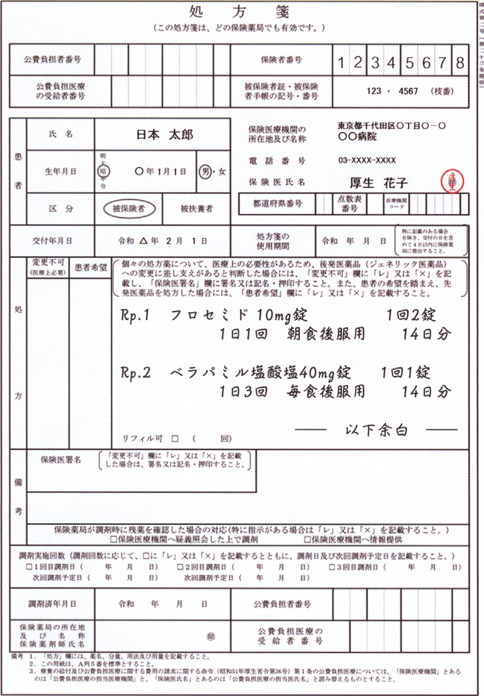

§
A問題（★問題）
Q.498〜Q.520
Q.498(120B-3)★○56%
三次予防はどれか。
ａ 高齢者への減塩教育
ｂ 子どもへの予防接種
ｃ 労働者への健康診断
ｄ 障害者への生活技能訓練
ｅ 高血圧症患者への服薬治療
✅
ｄ 障害者への生活技能訓練
三次予防は「既に生じた障害・合併症からの回復とその再発予防」を指す。生活技能訓練は障害者の社会復帰を図るリハビリテーションであり三次予防の典型例。減塩教育・予防接種は一次予防、健康診断は二次予防、単なる服薬治療は二次予防の延長にとどまる。
⚖️ 予防医学3段階——「時間軸のどこにいるか」で機械的に決まる
一次予防は発症前に働きかけて病気にならないようにする取り組み（予防接種・生活習慣改善）、二次予防は発症後の早期に発見・治療する取り組み（健康診断・がん検診）、三次予防は合併症・障害が生じた後の再発予防とリハビリテーションである——同じ疾患でも介入のタイミングが変われば所属する予防段階が変わる点が、本章で最も繰り返し問われる軸である。「診断がついた病気を治療すること」自体は、それだけでは三次予防ではない——三次予防と呼べるのは、脳卒中後の抗血栓薬内服やリハビリのように、一度生じた事象・障害の再発や進行を防ぐ働きかけである。
□ 選択肢の検討
| 選択肢 | 解説 |
|---|---|
| ａ 高齢者への減塩教育 | 誤り。減塩教育は病気になる前の生活習慣への働きかけであり、高血圧・脳卒中の発症そのものを防ごうとする一次予防にあたる——「発症前か発症後か」が予防段階を分ける第一の軸である。 |
| ｂ 子どもへの予防接種 | 誤り。予防接種は感染症にかからないようにする典型的な一次予防である——レジュメの一次予防の具体例そのもの。 |
| ｃ 労働者への健康診断 | 誤り。健康診断は無症状のうちに疾患を早期発見する取り組みで、二次予防にあたる——がん検診と同じ枠組み。 |
| ◯ ｄ 障害者への生活技能訓練 | ◯ 正しい。生活技能訓練は、既に生じている障害を前提に社会復帰・機能回復を図るリハビリテーションであり、三次予防の定義（再発予防とリハビリテーション）そのものにあたる。 |
| ｅ 高血圧症患者への服薬治療 | 誤り。一見「再発予防」のようにも読めるが、この選択肢は既に高血圧症と診断された患者への治療そのものを指しており、これは二次予防の「早期治療」の延長にあたる——三次予防が指すのは、脳卒中などの合併症が既に生じた後の再発予防的な薬物治療やリハビリである点に注意——病名が付いた瞬間に自動で三次予防になるわけではなく、「治療」と「合併症後の機能回復・再発予防」を区別することが本章最頻出の落とし穴である。 |
💡 選択肢を時間軸に並べ直すと迷わない
この問題の5択は「対象者の属性」がバラバラに見えるが、実際は介入のタイミングという1本の軸に並べ替えられる。| 選択肢 | 介入のタイミング | 予防段階 |
|---|---|---|
| 高齢者への減塩教育 | 発症前 | 一次予防 |
| 子どもへの予防接種 | 発症前 | 一次予防 |
| 労働者への健康診断 | 無症状期の発見 | 二次予防 |
| 障害者への生活技能訓練 | 障害発生後の機能回復 | 三次予防 |
| 高血圧症患者への服薬治療 | 診断後の治療 | 二次予防の延長 |
🎯 国試ポイント
①一次予防＝発症前（予防接種・生活習慣改善）。②二次予防＝早期発見・早期治療（健康診断・がん検診・診断後の治療）。③三次予防＝合併症・障害発生後の再発予防とリハビリテーション。④「患者への服薬治療」は自動的に三次予防にはならない——合併症の再発を防ぐ目的でなければ二次予防の延長にとどまる。
⑤ポピュレーションストラテジー（集団全体への働きかけ）とハイリスクストラテジー（少数の高リスク者への働きかけ）は、この予防段階の軸とは独立した別の分類軸である（NO.515・559参照）。
Q.499(120B-15)★○96%
ジュネーブ宣言で正しいのはどれか。
ａ 医師の倫理に関する宣言
ｂ 患者の権利と責任に関する宣言
ｃ プライマリヘルスケアに関する宣言
ｄ ヒトを対象とする医療研究の倫理に関する宣言
ｅ ヘルスデータベースとバイオバンクの倫理に関する宣言
✅
ａ 医師の倫理に関する宣言
ジュネーブ宣言（1948年）はヒポクラテスの誓いの現代版にあたる医師の職業倫理の宣言。患者の権利=リスボン宣言、プライマリヘルスケア=アルマ・アタ宣言、研究倫理=ヘルシンキ宣言と、国際宣言は「誰を・何から守るか」で一対一に対応する。
⚖️ 国際宣言は「誰を・何から守るか」で一対一対応する
紀元前400年頃のヒポクラテスの誓い（患者の秘密を守る・害を与えない・差別しない、ただし患者の自己決定権より医師のパターナリズムを重んじる）を土台に、1948年のジュネーブ宣言で現代にそぐわない部分を修正した医師の誓いの現代版が作られた——この章に登場する宣言・憲章は「誰の・何についての取り決めか」で覚えると一対一に対応する。年代順に並べると：ヒポクラテスの誓い（紀元前400年頃）→ジュネーブ宣言（1948年・医師の倫理）→ヘルシンキ宣言（1964年・研究倫理）→アルマ・アタ宣言（1978年・プライマリヘルスケア）→リスボン宣言（1981年・患者の権利）→オタワ憲章（1986年）・バンコク憲章（2005年・ヘルスプロモーション）→アデレード宣言（2010年・あらゆる政策で健康を考慮）。
□ 選択肢の検討
| 選択肢 | 解説 |
|---|---|
| ◯ ａ 医師の倫理に関する宣言 | ◯ 正しい。ジュネーブ宣言（1948年）はヒポクラテスの誓いの現代版として採択された医師の職業倫理そのものに関する宣言であり、世界医師会が医学部卒業時などに医師が行う「誓い」の文言を定めたものである。 |
| ｂ 患者の権利と責任に関する宣言 | 誤り。患者の権利についての宣言はリスボン宣言（1981年）である——「誰の権利か」で宣言名が変わる（医師の誓い=ジュネーブ／患者の権利=リスボン）。 |
| ｃ プライマリヘルスケアに関する宣言 | 誤り。プライマリヘルスケアの国際宣言はアルマ・アタ宣言（1978年）である。 |
| ｄ ヒトを対象とする医療研究の倫理に関する宣言 | 誤り。ヒトを対象とする医学研究の倫理的原則はヘルシンキ宣言（1964年、ナチスの人体実験への反省を踏まえて採択）である。 |
| ｅ ヘルスデータベースとバイオバンクの倫理に関する宣言 | 誤り。データベース・バイオバンクに特化した倫理宣言はジュネーブ宣言の内容ではない——もっともらしい医療倫理の用語を並べた誤り選択肢である。 |
💡 対応表を丸ごと覚える
国際宣言はどれも似た言葉（倫理・権利・研究）が並ぶため、対応関係を1つの表として覚えるのが最も確実である。| 宣言・憲章 | 内容 |
|---|---|
| ジュネーブ宣言 | 医師の職業倫理（ヒポクラテスの誓いの現代版） |
| ヘルシンキ宣言 | ヒトを対象とする医学研究の倫理 |
| アルマ・アタ宣言 | プライマリヘルスケア |
| リスボン宣言 | 患者の権利 |
| オタワ憲章・バンコク憲章 | ヘルスプロモーション |
| アデレード宣言 | あらゆる政策で健康を考慮する |
🎯 国試ポイント
①ジュネーブ宣言＝医師の職業倫理（ヒポクラテスの誓いの現代版）。②リスボン宣言＝患者の権利、ヘルシンキ宣言＝研究倫理、アルマ・アタ宣言＝プライマリヘルスケア、と宣言名と内容を一対一に対応させて覚える。
③本章では同じ対応表を問う組合せ問題が繰り返し出る（NO.536・548・553・556・593・607・616）——1つの表を確実に覚えれば複数問が同時に解ける。
Q.500(120B-34)★○99%
84歳の女性。2日前から発熱し、意識障害のため救急車で搬入された。来院時の意識レベルはJCSⅡ-10。体温38.9℃。心拍数128/分、整。血圧74/40mmHg。呼吸数28/分。SpO2 96％（マスク6L/分酸素投与下）。初期輸液とノルアドレナリンの投与を開始し、血液培養2セットを含む各種微生物検査を実施したのちに、広域スペクトル抗菌薬を投与して入院した。入院3日後、検査結果を確認した抗菌薬適正使用支援チーム〔Antimicrobial Stewardship Team〈AST〉〕の薬剤師から担当医に連絡が入り、抗菌薬の変更を提案された。
ASTの薬剤師に対する回答で適切なのはどれか。
ASTの薬剤師に対する回答で適切なのはどれか。
ａ 「無断で検査結果を確認するのはご遠慮ください」
ｂ 「ASTで抗菌薬の処方を変更しておいてください」
ｃ 「医師への提案はASTの医師からにしてください」
ｄ 「これから診療チームで抗菌薬の変更を検討します」
ｅ 「提案は明日の診療科カンファレンスの場でお願いします」
✅
ｄ 「これから診療チームで抗菌薬の変更を検討します」
ASTは多職種で構成される抗菌薬適正使用支援チームで、培養結果に基づく抗菌薬変更の提案は正規の業務にあたる。提案を受けた担当医は、ASTを排除も丸投げもせず、診療チームで速やかに検討する姿勢が適切である。
⚖️ AST（抗菌薬適正使用支援チーム）はチーム医療の実例
ASTは医師・薬剤師・看護師・臨床検査技師などで構成される多職種チームで、血液培養・薬剤感受性の結果に基づき、より狭域で効果的な抗菌薬への変更（de-escalation）を主治医・診療チームに提案するのが役割である——薬剤師が単独で処方を変更するのではなく、あくまで「提案」にとどまり、最終決定は診療チームが行う点がチーム医療の役割分担の要点である。□ 選択肢の検討
| 選択肢 | 解説 |
|---|---|
| ａ 「無断で検査結果を確認するのはご遠慮ください」 | 誤り。ASTは院内の抗菌薬適正使用を支援する多職種チームで、検査結果（培養・感受性）を確認して介入することそのものがASTの正規の業務である——「無断」と非難する対応はチーム医療の趣旨に反する。 |
| ｂ 「ASTで抗菌薬の処方を変更しておいてください」 | 誤り。ASTは提案・支援を行う立場であり、実際の処方変更の決定と実行は主治医・診療チームの責任で行うべきである——ASTに丸投げすることはチーム医療の役割分担として適切でない。 |
| ｃ 「医師への提案はASTの医師からにしてください」 | 誤り。ASTは医師・薬剤師・看護師・検査技師など多職種で構成され、薬剤師が専門性を活かして直接医師に提案することも正規の業務である——職種を理由に取り合わないのはチーム医療を妨げる態度である。 |
| ◯ ｄ 「これから診療チームで抗菌薬の変更を検討します」 | ◯ 正しい。ASTからの専門的な提案を受け止めた上で、実際の処方変更は診療チーム（主治医を含む担当医療者）で検討するという応答は、ASTの提案を尊重しつつ最終的な治療方針の決定権を診療チームが持つという多職種連携の適切なあり方を示している。 |
| ｅ 「提案は明日の診療科カンファレンスの場でお願いします」 | 誤り。敗血症性ショックで広域抗菌薬を投与中の患者において、de-escalation（狭域抗菌薬への変更）の提案は速やかに検討すべきで、翌日のカンファレンスまで先送りする対応は不適切である。 |
💡 「誰が決めるか」と「誰が提案できるか」を混同しない
この問題は一見「敗血症の初期対応」のように見えるが、実際に問われているのはAST（多職種連携）とのコミュニケーションのあり方である。誤答a・cは「専門職の提案を拒む」方向の誤り、選択肢bは「決定権を丸投げする」方向の誤り、選択肢eは「緊急性を軽視する」方向の誤りで、正解dだけが提案を受け止めつつ決定権は診療チームに残す中庸の対応になっている。
この4方向の誤りのパターンは、医療安全・チーム医療の設問全般に共通する「よくある誤答の型」でもある。
🎯 国試ポイント
①ASTは多職種チームで、培養結果に基づく抗菌薬変更の提案は正規の業務である。②提案を受けた担当医は、排除せず・丸投げせず、診療チームで速やかに検討する。
③敗血症性ショックでの広域抗菌薬のde-escalationは翌日のカンファレンスまで先送りすべきでない。
④チーム医療を妨げる要因（NO.590参照）と対にして覚えると理解が深まる。
⑤多職種で構成されるチームの専門職からの提案を職種を理由に拒むことは、いずれの医療安全・チーム医療の設問でも一貫して誤答とされる。
⑥本症例はノルアドレナリンを要する敗血症性ショックの初期対応（輸液・培養採取後の広域抗菌薬投与）としても典型的な経過である。
⑦ASTの提案はde-escalation（広域抗菌薬から狭域抗菌薬への変更）を通じて薬剤耐性菌の出現を抑えるという院内感染対策上の意義も持つ。
⑧多職種連携では「誰が最終決定するか」と「誰が専門的な提案をできるか」を分けて考えることが、本問のような対応選択の設問を解く鍵になる。
Q.501(120B-40)★○○99%
28歳の男性。発熱、乾性咳嗽および倦怠感を主訴に来院した。2週間前から38℃前後の発熱・倦怠感が続いており、乾性咳嗽も認めるようになったため受診した。半年間で6kgの体重減少を認めている。来院時、意識は清明。身長172cm、体重58kg。体温37.8℃。脈拍120/分、整。血圧118/60mmHg。呼吸数28/分。SpO2 90％（room air）。咽頭粘膜に白苔を認める。両側の背部でfine cracklesを聴取する。血液所見：赤血球340万、Hb 9.6g/dL、Ht 30％、白血球4,800、CD4陽性細胞数54/mm3（基準500～1,000）、血小板20万。血液生化学所見：AST 28U/L、ALT 18U/L、LD 256U/L（基準124～222）、尿素窒素40mg/dL、クレアチニン1.0mg/dL。HIV抗原・抗体陽性。血中HIV RNA定量検査も陽性であった。
この患者の入院診療録の問題指向型医療記録〈POMR〉におけるSOAPのassessment〈評価〉の記載に該当するのはどれか。
この患者の入院診療録の問題指向型医療記録〈POMR〉におけるSOAPのassessment〈評価〉の記載に該当するのはどれか。
ａ 酸素投与
ｂ HIV感染症
ｃ 保健所への届出
ｄ 発熱、乾性咳嗽、倦怠感
ｅ 両側背部のfine crackles
✅
ｂ HIV感染症
POMRのSOAPは、S=主観的データ（患者の訴え）、O=客観的データ（検査・所見）、A=Assessment（診断名などの評価）、P=Plan（治療方針）に整理する。本症例のAssessmentはHIV感染症という診断名そのものであり、症状はS、聴診所見はO、酸素投与や届出はPに分類される。
⚖️ POMR（問題志向型医療記録）とSOAPの4分類
POMRは問題点に着眼しながら考えていく記録システムで、SOAPはS(Subjective：患者の訴え)／O(Objective：検査結果など客観的データ)／A(Assessment：診断名など評価)／P(Plan：治療方針)の4要素からなる——「患者が言ったこと」はS、「医療者が測ったこと」はO、「そこから導いた診断・評価」はA、「これからどうするか」はPという役割分担が一貫している。□ 選択肢の検討
| 選択肢 | 解説 |
|---|---|
| ａ 酸素投与 | 誤り。酸素投与は診断に基づいて行う治療であり、SOAPではP（Plan・治療方針）に記載する項目である。 |
| ◯ ｂ HIV感染症 | ◯ 正しい。CD4陽性細胞数の著明な低下・HIV抗原抗体陽性・HIV RNA陽性という検査結果と、発熱・体重減少・両側性の間質性陰影を示唆する所見（fine crackles、低酸素血症）を統合して導かれる診断名そのものが「HIV感染症」であり、これがA（Assessment・評価＝診断名）に該当する。 |
| ｃ 保健所への届出 | 誤り。保健所への届出は診断確定後に行う行政上の対応・計画であり、P（Plan）に位置づけられる。 |
| ｄ 発熱、乾性咳嗽、倦怠感 | 誤り。発熱・乾性咳嗽・倦怠感は患者本人が訴える症状であり、S（Subjective・主観的データ）に記載する。 |
| ｅ 両側背部のfine crackles | 誤り。聴診所見は医療者が診察で得た他覚的所見であり、O（Objective・客観的データ）に記載する。 |
💡 選択肢をSOAPの4区分に振り分ける
本問の5択はそれぞれSOAPのどこかに1対1で対応しており、正しく仕分けられるかを問う出題形式である。| 選択肢 | SOAP区分 |
|---|---|
| 発熱、乾性咳嗽、倦怠感 | S（主観的データ） |
| 両側背部のfine crackles | O（客観的データ） |
| HIV感染症 | A（Assessment・診断名） |
| 酸素投与 | P（治療方針） |
| 保健所への届出 | P（治療方針・対応計画） |
🎯 国試ポイント
①A（Assessment）は「診断名・評価」——本問ではHIV感染症。②S＝患者の訴え、O＝検査・診察所見、P＝治療方針・行政対応を含む今後の計画。
③本問はエイズ指標疾患（CD4著減・間質性陰影＝ニューモシスチス肺炎を疑う所見）を背景にしているが、問われているのはSOAPの分類そのものである。
④同じSOAPを問う設問がNO.552（SOAPのA）にも出る——対で覚えると効率がよい。
⑤「診断名」と「症状」を混同しないこと——症状（S）を積み重ねても、それ自体はAssessment（A）にはならない。
⑥HIV感染症の診断は5類感染症として保健所への届出（全数把握）の対象であり、本問の「保健所への届出」はPに含まれる行政対応の一例である。
Q.502(120C-22)★97%
医原病はどれか。
ａ 癌の化学療法中に発生した遠隔転移
ｂ 妊娠中の風疹感染による子どもの難聴
ｃ 通信販売で購入した健康食品による肝障害
ｄ グルココルチコイドの長期使用による骨粗鬆症
ｅ 市民によるAED〈自動体外式除細動器〉の使用後の死亡
✅
ｄ グルココルチコイドの長期使用による骨粗鬆症
医原病は「医療行為（診断・治療・薬剤など）そのものが原因で新たに生じた疾患」を指す。グルココルチコイドの長期使用による骨粗鬆症はその典型例。癌の転移・先天性感染・健康食品・AED使用後の転帰は、いずれも医療行為が原因ではないため医原病にあたらない。
⚖️ 医原病（iatrogenic disease）の定義——原因が「医療行為そのもの」かどうか
医原病とは、診断・治療・投薬などの医療行為そのものが原因となって新たに生じる疾患・障害を指す——代表例はステロイドの長期使用による骨粗鬆症・易感染性・満月様顔貌、抗菌薬による偽膜性大腸炎、放射線治療による二次発癌などで、いずれも治療の必要性と引き換えに生じる副作用という構造を持つ。病気そのものの自然経過（癌の転移）や、感染症による障害（先天性風疹症候群）、医療者の関与しない自己判断（通販健康食品）は、原因が医療行為ではないため医原病に含まれない。
□ 選択肢の検討
| 選択肢 | 解説 |
|---|---|
| ａ 癌の化学療法中に発生した遠隔転移 | 誤り。遠隔転移は癌そのものの進行によって生じるものであり、医療行為によって新たに引き起こされた病態ではない——治療中に生じても、治療が原因でなければ医原病とは呼ばない。 |
| ｂ 妊娠中の風疹感染による子どもの難聴 | 誤り。先天性風疹症候群はウイルス感染そのものが原因であり、医療行為・医薬品による副作用ではない——感染症による障害と医原病は原因の出どころが異なる。 |
| ｃ 通信販売で購入した健康食品による肝障害 | 誤り。通信販売の健康食品は医師の処方・指示に基づかない自己判断での摂取であり、医療行為に起因する疾患とはいえない——「医師が関与したかどうか」が医原病か否かを分ける。 |
| ◯ ｄ グルココルチコイドの長期使用による骨粗鬆症 | ◯ 正しい。グルココルチコイドの長期使用による骨粗鬆症は、医療者が処方した薬物治療そのものが原因で新たに生じた疾患であり、医原病（iatrogenic disease）の典型例である——ステロイドの長期投与が必要な疾患（膠原病・喘息など）の治療の副産物として生じる点が本質である。 |
| ｅ 市民によるAED〈自動体外式除細動器〉の使用後の死亡 | 誤り。AEDは心停止に対する救命処置であり、市民による使用後に死亡が生じても、それは基礎にある心停止そのものの重篤性によるもので、医療行為が原因で新たな害を生んだ場合にあたらない。 |
💡 「治療中に起きた」と「治療が原因で起きた」は違う
本問の誤答選択肢はいずれも「一見、医療や治療に関連しているように見える」ものばかりだが、因果の起点を見ると医療行為ではない。| 選択肢 | 真の原因 | 医原病か |
|---|---|---|
| 化学療法中の遠隔転移 | 癌の自然経過 | × |
| 妊娠中風疹感染による難聴 | ウイルス感染 | × |
| 健康食品による肝障害 | 自己判断での摂取 | × |
| ステロイド長期使用による骨粗鬆症 | 医療者による薬物治療 | ◯ |
| AED使用後の死亡 | 基礎の心停止の重篤性 | × |
🎯 国試ポイント
①医原病＝医療行為そのものが原因で新たに生じた疾患（ステロイド長期使用による骨粗鬆症が典型例）。②病気の自然経過・感染症による障害・自己判断での摂取・救命処置に伴う不可避な転帰は医原病にあたらない。
③「治療中に起きた」ことと「治療が原因で起きた」ことを区別する。
④医原病は医療安全の文脈で、個人の過失によるインシデント・アクシデントとは異なる概念であることにも注意する——医原病は適切な医療行為に伴う既知の副作用も含む点が特徴である。
Q.503(120C-25)★○99%
成人に対するアドバンス・ケア・プランニング〈ACP〉の実施において正しいのはどれか。
ａ 医療チームの方針を優先する。
ｂ 終末期に入ってから実施する。
ｃ 安易に希望を変更しないように説明する。
ｄ 患者の意思決定能力が不十分な場合は実施しない。
ｅ 病状が進行すると出現するかもしれない症状を説明する。
✅
ｅ 病状が進行すると出現するかもしれない症状を説明する。
ACPは「もしもの時に備えて本人・家族などが話し合い、意思を共有しておくプロセス」であり、終末期に限らず早期から開始し、希望の変更も許容しながら、今後起こりうる病状変化を説明することが実施の要点となる。意思決定能力が不十分でも代理者を含めて継続する。
⚖️ ACP（Advance Care Planning）——「もしもの時」に備える継続的プロセス
ACPとは、本人の病状が変化する将来に備えて、本人・家族・医療者があらかじめ話し合い、価値観や希望を共有しておくプロセスである——「プロセス」という言葉が示す通り、1回の面談で終わるものではなく、病状の進行に応じて繰り返し話し合い、希望が変わればそのつど更新してよい点が最大の特徴である。DNAR（心肺蘇生を行わない方針）はACPの話し合いの結果として文書化される具体的な方針の一例であり、ACPそのものはより広い「意思共有のプロセス」を指す。
□ 選択肢の検討
| 選択肢 | 解説 |
|---|---|
| ａ 医療チームの方針を優先する。 | 誤り。ACPの中心にあるのは本人の価値観・意向であり、医療チームの方針を一方的に優先することはACPの趣旨に反する——「本人中心」という本章を貫く軸に反する誤答である。 |
| ｂ 終末期に入ってから実施する。 | 誤り。ACPは終末期に限らず、判断能力があるうちから早期に開始し、病状の変化に応じて話し合いを繰り返す継続的なプロセスである——終末期になってからでは、本人の意思確認が困難になっていることも多い。 |
| ｃ 安易に希望を変更しないように説明する。 | 誤り。ACPは一度決めたら固定するものではなく、病状や心境の変化に応じて希望を見直してよいプロセスである——固定化を促す説明はACPの柔軟性を損なう。 |
| ｄ 患者の意思決定能力が不十分な場合は実施しない。 | 誤り。意思決定能力が不十分な場合でも、家族等の代理者を含めて話し合いを行うことがACPの重要な役割であり、実施しない理由にはならない——本人の意思が確認できない場合に家族等による推定意思を尊重するという本章の軸がここでも一貫する。 |
| ◯ ｅ 病状が進行すると出現するかもしれない症状を説明する。 | ◯ 正しい。今後予想される病状の変化や症状をあらかじめ説明することで、本人・家族が将来に備えて意思を共有できる——これがACP（Advance Care Planning）の核心であり、「もしもの時に備えて本人・家族などが話し合い、意思を共有しておくプロセス」という定義そのものにあたる。 |
💡 誤答の多くは「固定化・限定・排除」の方向
本問の誤答選択肢を並べると、いずれもACPの本質である「早期から・柔軟に・本人中心で・誰も排除せず」という性質と逆方向の誤りになっている。医療チームの方針を優先＝本人中心の逆、終末期から開始＝早期からの逆、希望を変更させない＝柔軟性の逆、意思決定能力不十分なら実施しない＝誰も排除しないことの逆——という対称性で整理すると覚えやすい。
この「逆方向の誤り」を探す読み方は、公衆衛生の正誤問題全般に応用できる有効な解法である。
ACPの話し合いの記録は本人の推定意思の裏付けとなり、将来本人の意思確認ができなくなった局面で家族や医療チームの意思決定を支える資料になる。
🎯 国試ポイント
①ACP＝本人・家族・医療者が将来に備えて話し合い、意思を共有し続けるプロセス。②終末期に限らず早期から開始し、繰り返し見直す。
③意思決定能力が不十分でも家族等を含めて継続する。
④今後出現しうる症状をあらかじめ説明することは、本人・家族の準備を助けるACPの重要な要素である。
⑤DNAR・共同意思決定（NO.545）・全人的苦痛の評価（NO.511）はいずれも「本人の意思決定を医療者がどう支えるか」という同じ軸でつながっている。
⑥ACPは1回で完結する同意取得（インフォームド・コンセント、NO.614参照）とは異なり、継続的な対話のプロセスである点がしばしば区別を問われる。
⑦話し合いの内容は診療録に記録し、本人の推定意思を後の意思決定の場面で活用できるようにしておくことが望ましい。
Q.504(120C-56)★99%
64歳の男性。定期受診で来院した。10年前から高血圧症で①降圧薬を内服している。5年前から不眠症で②睡眠不足改善のためのカウンセリングを受けている。1年前の退職後から、体力維持のために週に1回の頻度で市町村による③体操教室に参加している。喫煙（20本/日）は紙巻たばこから④加熱式たばこに変更した。飲酒は⑤機会飲酒（日本酒3合（アルコール濃度15％）/回）。意識は清明。身長172cm、体重63kg。脈拍72/分、整。血圧124/74mmHg。心音と呼吸音とに異常を認めない。下腿に浮腫は認めない。
下線部のうち、この患者で一次予防に該当するのはどれか。
下線部のうち、この患者で一次予防に該当するのはどれか。
ａ ①
ｂ ②
ｃ ③
ｄ ④
ｅ ⑤
✅
ｃ ③
一次予防は発症前の健康増進・疾病予防の働きかけを指す。市町村の体操教室への参加は生活習慣病予防を目的とした一次予防にあたる。降圧薬内服・不眠症カウンセリングは既に診断された病気への対応、加熱式たばこへの変更は禁煙にあたらず、機会飲酒は単なる記述にすぎない。
⚖️ 「予防に該当するもの」を選ぶ設問は能動的な働きかけを探す
一次予防に該当するかどうかを選ぶ設問では、「まだ病気になっていない・まだ生じていない不利益を防ぐための能動的な働きかけ」を選ぶことが要点である——既に診断のついた疾患への治療（降圧薬・不眠症カウンセリング）は二次予防以降にあたり、単なる生活習慣の記述（機会飲酒）や不完全なリスク低減（加熱式たばこへの変更）は予防的介入として数えない。□ 選択肢の検討
| 選択肢 | 解説 |
|---|---|
| ａ ① | 誤り。降圧薬の内服は既に高血圧症と診断された後の治療であり、二次予防の「早期治療」の延長にあたる——一次予防（発症前の働きかけ）ではない。 |
| ｂ ② | 誤り。不眠症のカウンセリングも既に診断された不眠症に対する治療であり、病気になってからの対応にあたる——一次予防には含まれない。 |
| ◯ ｃ ③ | ◯ 正しい。市町村の体操教室への参加は、特定の疾患の治療ではなく体力維持・生活習慣病予防を目的とした健康増進活動であり、一次予防（発症前の働きかけ）の典型例にあたる——ポピュレーションストラテジー的な地域の健康増進事業でもある。 |
| ｄ ④ | 誤り。紙巻たばこから加熱式たばこへの変更は喫煙という行為自体は継続しており、禁煙（発症前の予防）にはあたらない——加熱式たばこも有害物質を含み、健康影響が完全に無くなるわけではない。 |
| ｅ ⑤ | 誤り。機会飲酒という飲酒習慣の記述そのものであり、予防的な働きかけ（介入）を表す記述ではない——選択肢として「予防に該当するもの」を問う設問では、単なる生活習慣の記述と能動的な予防活動を区別する必要がある。 |
💡 下線部を「治療」「記述」「予防」の3種類に仕分ける
5つの下線部はいずれも患者の生活の一部を切り取ったものだが、実際の性質はバラバラである。| 下線部 | 性質 |
|---|---|
| ①降圧薬内服 | 診断後の治療（二次予防の延長） |
| ②不眠症カウンセリング | 診断後の治療 |
| ③体操教室参加 | 発症前の健康増進活動＝一次予防 |
| ④加熱式たばこへの変更 | 喫煙継続（禁煙ではない） |
| ⑤機会飲酒 | 生活習慣の記述（介入ではない） |
🎯 国試ポイント
①一次予防＝発症前の能動的な健康増進・疾病予防の働きかけ。②既に診断のついた病気への治療（降圧薬・カウンセリング）は一次予防ではない。
③加熱式たばこへの変更は禁煙ではなく、一次予防にあたらない。
④単なる生活習慣の記述（機会飲酒）は予防的介入ではない。
⑤同種の「下線部から一次〜三次予防を選ぶ」形式はNO.567（三次予防）にも出る——判断基準は共通である。
Q.505(120E-16)★○88%
がん対策基本法において、がん患者への緩和ケアの提供が開始されるべき時期で適切なのはどれか。
ａ がんと診断された時
ｂ がんの治療を開始する時
ｃ がんが再発した時
ｄ がんが根治不能となった時
ｅ がんによる終末期
✅
ａ がんと診断された時
がん対策基本法・がん対策推進基本計画の理念では、緩和ケアは終末期になってから開始するものではなく、がんと診断された時点から身体的・精神的苦痛の緩和を目的として提供されるべきとされている。治療開始・再発・根治不能・終末期はいずれも診断時より遅いタイミングである。
⚖️ 緩和ケアは「終末期のケア」ではなく「診断時から始まる苦痛緩和」
かつて緩和ケアは「積極的治療ができなくなった終末期の患者に行うケア」というイメージで語られてきたが、現在のがん対策基本法・がん対策推進基本計画では、がんと診断された時点から、治癒を目指す治療と並行して身体的・精神的・社会的苦痛を和らげる緩和ケアを提供すべきとされている——この「診断時からの緩和ケア」という理念は、NO.566の「終末期になってから導入する」を誤りとする設問と表裏一体であり、本章の緩和ケア関連の設問全体を貫く前提知識である。□ 選択肢の検討
| 選択肢 | 解説 |
|---|---|
| ◯ ａ がんと診断された時 | ◯ 正しい。がん対策基本法・がん対策推進基本計画の理念では、緩和ケアは終末期になってから始めるものではなく、がんと診断された時点から身体的・精神的苦痛の緩和を図るべきとされている——「診断時からの緩和ケア」は本章で繰り返し問われる重要な理念であり、NO.566の「終末期になってから導入する」を誤りとする設問と対になっている。 |
| ｂ がんの治療を開始する時 | 誤り。治療開始を待たず、診断された時点から緩和ケアの対象と考えるのが現在の理念である——開始のタイミングを後ろにずらす選択肢はいずれも誤りになる。 |
| ｃ がんが再発した時 | 誤り。再発を待つのはさらに遅い——診断時から一貫して緩和ケアの対象とするという理念に反する。 |
| ｄ がんが根治不能となった時 | 誤り。根治不能となってからでは遅く、治癒を目指す治療と並行して緩和ケアを行うのが現在の考え方である。 |
| ｅ がんによる終末期 | 誤り。終末期に限定する考え方は古い緩和ケアのイメージであり、がん対策基本法が推進する現在の理念とは異なる——「緩和ケア＝終末期だけのもの」という誤解を正す設問である。 |
💡 選択肢を時系列に並べると「開始が最も早いもの」を選ぶ問題だとわかる
診断→治療開始→再発→根治不能→終末期、という時系列のうち、正解は最も早い「診断された時」である——この形式の設問では、最も早いタイミングを選べば正答にたどり着けることが多い。「終末期のケア」という古いイメージのまま緩和ケアを捉えるとd・eを選んでしまうが、現在のがん対策の理念は「診断時からの切れ目のない緩和ケア」である点を押さえておく。
この理念の転換は、がん対策基本法の制定・改正を通じて進められてきたもので、患者が治療の初期から生活の質(QOL)を保ちながら過ごせることを目指している。
緩和ケア研修を修了した医師が主治医となって早期から関わることも推進されている。
🎯 国試ポイント
①緩和ケアはがんと診断された時点から開始すべき——終末期に限定しない。②治癒を目指す治療と緩和ケアは並行して行うことができる。
③「治療開始後」「再発時」「根治不能時」「終末期」はいずれも診断時より遅く、正しい開始時期ではない。
④同じ理念はNO.566（がん対策推進基本計画における緩和ケア）でも問われる——2問セットで覚えると効率がよい。
⑤緩和ケアの対象は身体的苦痛だけでなく、精神的・社会的・スピリチュアルな苦痛を含む全人的苦痛（NO.511参照）であり、この広い対象をカバーするためにも早期からの介入が重要とされる。
⑥緩和ケアチームには医師・看護師だけでなく精神腫瘍医・薬剤師・医療ソーシャルワーカーなど多職種が関わる。
⑦「がんと診断された時」という起点は、告知直後からの精神的苦痛への配慮も含む点で重要である。
⑧地域の緩和ケア外来や在宅緩和ケアとの連携も、診断早期からの体制づくりの一環として位置づけられる。
Q.506(120E-23)★○99%
院内感染サーベイランスの目的で誤っているのはどれか。
ａ 発生原因の特定
ｂ 発生状況の監視
ｃ 再発防止策の策定
ｄ 発症患者の転院促進
ｅ 感染拡大リスクの評価
✅
ｄ 発症患者の転院促進
院内感染サーベイランスの目的は、発生原因の特定・発生状況の監視・再発防止策の策定・感染拡大リスクの評価であり、いずれも「院内で感染対策を講じるための情報収集と分析」にあたる。発症患者を転院させることはサーベイランスの目的ではない。
⚖️ サーベイランスは「監視して対策につなげる」活動——患者を動かす活動ではない
院内感染サーベイランスとは、院内で発生する感染症の発生状況を継続的に監視・収集・分析し、感染対策・再発防止策の立案に役立てる活動である——目的は一貫して「情報を集めて対策を導くこと」であり、個々の患者の処遇（転院させるかどうか）を決めることではない。院内感染が疑われた場合の第一の対応は、原因菌・感染経路の特定と院内での隔離・接触予防策の徹底であり、安易な転院はむしろ感染を院外・他施設へ拡大させるリスクを伴う。
□ 選択肢の検討
| 選択肢 | 解説 |
|---|---|
| ａ 発生原因の特定 | 誤り選択肢ではない。発生原因の特定はサーベイランスの基本目的の1つであり、正しい記述である——感染経路・原因菌・発生源を明らかにすることが対策の出発点になる。 |
| ｂ 発生状況の監視 | 誤り選択肢ではない。継続的に発生状況を監視すること自体がサーベイランスの語義そのものであり、正しい記述である。 |
| ｃ 再発防止策の策定 | 誤り選択肢ではない。監視で得られたデータをもとに再発防止策を策定することはサーベイランスの目的の1つ——正しい記述である。 |
| ◯ ｄ 発症患者の転院促進 | ◯ これが誤り＝正解。院内感染サーベイランスは発生状況を把握し対策につなげるための監視活動であり、発症患者を転院させることそのものは目的ではない——むしろ院内で適切な感染対策（隔離・接触予防策）を講じて治療を継続することが基本であり、サーベイランスの結果として転院を促進するという発想は本来の目的から外れている。 |
| ｅ 感染拡大リスクの評価 | 誤り選択肢ではない。感染がどの程度拡大するリスクがあるかを評価することもサーベイランスの重要な目的の1つ——正しい記述である。 |
💡 「誤っているもの」は5つの目的のうち1つだけ異質
選択肢a・b・c・eはいずれも「監視・分析・対策立案」というサーベイランス本来の機能を表す記述で共通しているのに対し、選択肢dだけが個々の患者を動かす（転院させる）という異質な内容になっている——4つの正しい選択肢に共通する性質（監視・分析）を先に見抜くと、異質な1つが自動的に浮かび上がる。🎯 国試ポイント
①院内感染サーベイランス＝発生状況の監視・分析・対策立案の活動。②発生原因の特定・発生状況の監視・再発防止策の策定・感染拡大リスクの評価はいずれも正しい目的である。
③発症患者の転院促進はサーベイランスの目的ではない——院内での感染対策の徹底が優先される。
④サーベイランスの結果は医療安全管理部門・感染対策委員会（ICT）と共有され、組織的な対策につなげられる。
⑤本問は「誤っているものを選ぶ」形式で、4つの正しい選択肢の共通点を先に見抜く解き方が有効である。
⑥サーベイランスで得られたデータは耐性菌の検出状況や手指衛生の遵守率など具体的な指標として院内に共有される。
⑦発生源・感染経路が特定できれば環境整備・職員教育・患者隔離など個別の対策に落とし込める。
⑧サーベイランスの結果は病院内にとどまらず、地域の感染対策ネットワークとの情報共有にも活用される。
⑨対象は特定の病原体（薬剤耐性菌等）に限定したものと、院内全体の感染を幅広く捉えるものの両方がある。
Q.507(120E-24)★○99%
医学研究の倫理で正しいのはどれか。
ａ 研究の資金源は秘匿する。
ｂ 侵襲を伴わない研究の倫理審査は不要である。
ｃ 13歳未満の子どもには研究の目的を伝えない。
ｄ 研究目的の重要性は対象者のリスクより優先される。
ｅ 対象者は理由を説明することなく研究参加の同意を撤回できる。
✅
ｅ 対象者は理由を説明することなく研究参加の同意を撤回できる。
医学研究の倫理では、対象者の福祉・安全が研究の重要性より優先され、資金源は開示し、侵襲の有無にかかわらず倫理審査を経る。対象者はいつでも理由の説明なく同意を撤回できる。
⚖️ 医学研究倫理の土台はヘルシンキ宣言——対象者の保護が最優先
ヘルシンキ宣言（1964年、ナチスの人体実験への反省を踏まえて採択）は、ヒトを対象とする医学研究における対象者の権利・安全・福祉を最優先するという理念の土台である——研究の科学的・社会的価値がどれほど高くても、それを理由に対象者のリスクを正当化することはできない。インフォームド・コンセントに基づく同意は、いつでも理由の説明なく撤回できる自由な意思決定であり、撤回によって不利益を受けないことも保障される。
□ 選択肢の検討
| 選択肢 | 解説 |
|---|---|
| ａ 研究の資金源は秘匿する。 | 誤り。研究の資金源（利益相反の有無）は公表すべき情報であり、秘匿することは研究の透明性・信頼性を損なう——利益相反の開示は医学研究倫理の基本原則の1つである。 |
| ｂ 侵襲を伴わない研究の倫理審査は不要である。 | 誤り。侵襲を伴わない研究であっても、人を対象とする研究である以上は倫理審査委員会の審査を経ることが原則である——「侵襲が無いから審査不要」という発想はヘルシンキ宣言の理念に反する。 |
| ｃ 13歳未満の子どもには研究の目的を伝えない。 | 誤り。未成年者であっても年齢や理解力に応じた説明を行い、本人の納得（インフォームド・アセント）を得る努力をすることが望ましい——「子どもだから伝えない」という一律の除外は倫理原則に反する。 |
| ｄ 研究目的の重要性は対象者のリスクより優先される。 | 誤り。ヘルシンキ宣言の理念では、研究対象者の福祉・安全は科学的・社会的利益よりも優先される——研究の重要性を理由に対象者のリスクを正当化することはできない。 |
| ◯ ｅ 対象者は理由を説明することなく研究参加の同意を撤回できる。 | ◯ 正しい。研究対象者はいつでも、理由を説明することなく研究参加への同意を撤回できる——これは自律尊重の原則に基づく医学研究倫理の基本的な権利であり、撤回に理由の説明や不利益を課すことは許されない。 |
💡 誤答はいずれも「対象者の保護を弱める」方向
資金源の秘匿、審査の省略、説明の省略、リスクより研究目的を優先——誤答選択肢はすべて対象者の保護や研究の透明性を弱める方向の記述である——正解の「理由なく撤回できる」だけが、対象者の権利を強める方向の記述になっている点に注目すると見分けやすい。🎯 国試ポイント
①対象者はいつでも理由の説明なく研究参加の同意を撤回できる。②研究資金源は開示すべきで秘匿してはならない。
③侵襲の有無にかかわらず倫理審査は必要である。
④対象者のリスクは研究目的の重要性より優先される——優先順位を逆転させてはならない。
⑤未成年者にも理解力に応じた説明を行う努力が求められる。
⑥同じヘルシンキ宣言の理念はNO.593（研究倫理の宣言名を問う設問）とも関連する——研究倫理の「原則」と「宣言名」を両方から押さえておくとよい。
⑦倫理審査委員会は研究計画の科学的妥当性と対象者保護の両面を審査する。
⑧研究者自身に生じうる利益相反も審査・開示の対象である。
⑨同意撤回後に得られていたデータの扱いも事前の説明文書で明確にしておくことが望ましい。
⑩多施設共同研究では各施設の倫理審査委員会の承認が必要になることが多い。
Q.508(120E-27)★○99%
研修医と指導医との会話を以下に示す。
研修医：「昨日の救急当直では、重症の患者さんが搬入されて、そのまま入院になったので大変でした。少し、頑張りすぎました」
指導医：「疲れているようだね。体調は大丈夫かな。最近は医師の働き方も見直されているね」
研修医：「そうなんですね。一緒に当直した先生から①『研修医には労働時間の制限がない』と教わったんですが、ほかの先輩は②『働き方改革は医師のためでもある』とも言ってました。別の先生は、③『指導医の指示による学会発表の準備は業務と認められる』って言ってましたし…あと、私自身も④『研修医も働き方改革の対象である』ってずっと思ってました。それに⑤『労働基準法に違反する労働をさせると病院管理者に対して罰則がある』なんて言ってた人もいて、もう何が正しいのか分からなくなってきました」
下線部のうち、研修医の話の内容で誤っているのはどれか。
研修医：「昨日の救急当直では、重症の患者さんが搬入されて、そのまま入院になったので大変でした。少し、頑張りすぎました」
指導医：「疲れているようだね。体調は大丈夫かな。最近は医師の働き方も見直されているね」
研修医：「そうなんですね。一緒に当直した先生から①『研修医には労働時間の制限がない』と教わったんですが、ほかの先輩は②『働き方改革は医師のためでもある』とも言ってました。別の先生は、③『指導医の指示による学会発表の準備は業務と認められる』って言ってましたし…あと、私自身も④『研修医も働き方改革の対象である』ってずっと思ってました。それに⑤『労働基準法に違反する労働をさせると病院管理者に対して罰則がある』なんて言ってた人もいて、もう何が正しいのか分からなくなってきました」
下線部のうち、研修医の話の内容で誤っているのはどれか。
ａ ①
ｂ ②
ｃ ③
ｄ ④
ｅ ⑤
✅
ａ ①
医師の働き方改革により、研修医を含む勤務医にも時間外労働の上限規制が適用される。「研修医には労働時間の制限がない」という発言だけが誤りで、他の4つの発言（改革は医師のためでもある・指導医の指示による学会準備は業務・研修医も対象・違反への罰則）はいずれも正しい。
⚖️ 医師の働き方改革——研修医も労働時間規制の対象
医師の働き方改革は、医師の長時間労働を是正するために導入された時間外労働の上限規制を柱とする取り組みで、研修医を含むすべての勤務医が対象となる——「医師には労働時間の制限がない」「研修医は例外」という誤解が根強いが、実際には上限（水準に応じた区分）が設けられ、これに違反させた場合は使用者（病院管理者）に罰則が科され得る。指導医の指示に基づく学会発表の準備のような教育・研究関連の活動も、業務としての性格を持てば労働時間に算入されうる。
□ 選択肢の検討
| 選択肢 | 解説 |
|---|---|
| ◯ ａ ① | ◯ これが誤り＝正解。「研修医には労働時間の制限がない」という発言は誤りで、研修医も勤務医として労働基準法・医師の時間外労働の上限規制の対象である——医師（研修医を含む）には時間外労働の上限（原則960時間/年、技能習得のための例外的な水準として1,860時間/年の枠組みなど）が定められており、「制限がない」ということはない。 |
| ｂ ② | 誤りではない。医師の働き方改革は、過重労働の是正を通じて医師自身の健康・生活を守るという意味も持ち、「医師のためでもある」という発言は正しい。 |
| ｃ ③ | 誤りではない。指導医の指示に基づいて行う学会発表の準備は診療・教育に関連する業務として労働時間に算定されうるため、「業務と認められる」という発言は正しい。 |
| ｄ ④ | 誤りではない。研修医も勤務医の一員として医師の働き方改革の対象であり、「対象である」という発言は正しい。 |
| ｅ ⑤ | 誤りではない。労働基準法に違反する労働をさせた場合、使用者（病院管理者）には罰則が科され得る——「罰則がある」という発言は正しい。 |
💡 5つの発言のうち「例外を作る」発言だけが誤り
②③④⑤はいずれも「働き方改革は医師・研修医にも及ぶ」という方向で一貫しているのに対し、①だけが「研修医には制限がない」という例外を作る方向の発言になっている——「例外を主張する発言」を疑う読み方が有効である。🎯 国試ポイント
①研修医も医師の働き方改革・時間外労働の上限規制の対象である——「制限がない」は誤り。②働き方改革は医師自身の健康・生活を守る目的も持つ。
③指導医の指示による学会発表準備は業務性を持てば労働時間に算入されうる。
④労働基準法違反の労働をさせた病院管理者には罰則が科され得る。
⑤本問は下線部のうち1つだけの誤りを見抜く形式——4つの正しい発言に共通する方向性（対象拡大・保護強化）を先に把握すると異質な1つが見つけやすい。
⑥時間外労働の上限は技能習得中の医師など水準に応じて例外的な区分が設けられているが、上限が全く無いわけではない。
⑦宿日直許可を得ていない当直業務も労働時間として算定される。
⑧医療機関には労働時間短縮のための計画（医師労働時間短縮計画）の策定も求められている。
⑨タスクシフト・タスクシェアによる業務分担の見直しも働き方改革の一環である。
Q.509(120E-31)★○98%
56歳の女性。大腸癌の末期で在宅療養中である。夫と2人暮らし。訪問診療の開始時に本人および同居している夫と話し合い、心肺蘇生処置をしない方針（DNAR）で合意され診療録に記載してある。徐々に全身状態は悪化し、数日前から食事量が低下していた。昨日に意識がもうろうとしたため往診したところ、収縮期血圧が80mmHg台に低下し、尿量が減少していた。今朝、呼吸が停止していると夫から連絡があった。1時間後患者を診察し、呼吸停止と瞳孔散大を確認した。夫にDNARの方針は変わっていないことを確認したが、別居の息子から心肺蘇生処置を希望された。
息子への説明で適切なのはどれか。
息子への説明で適切なのはどれか。
ａ 「救急搬送します」
ｂ 「胸骨圧迫をはじめます」
ｃ 「人工呼吸をはじめます」
ｄ 「お母さんの意思（DNAR）を尊重しましょう」
ｅ 「電気ショック（電気的除細動）を試してみます」
✅
ｄ 「お母さんの意思（DNAR）を尊重しましょう」
訪問診療開始時に本人・同居の夫と合意し診療録に記載されたDNARの方針は、本人の意思を反映したものとして尊重される。既に呼吸停止・瞳孔散大が確認された状況で、別居の息子が後から心肺蘇生を希望しても、確認済みの本人の意思（DNAR）を優先して説明することが適切である。
⚖️ DNARは「本人の意思」——後から異なる家族の希望が出ても覆らない
DNAR（Do Not Attempt Resuscitation）は、本人・家族が話し合い合意した「心肺停止時に心肺蘇生を行わない」という医療方針であり、本人の意思を最も重視して決定される——本問では本人と同居の夫との話し合いを経て診療録に記載された方針が既に存在しており、これはACP（意思共有のプロセス）を経て確立された本人の意思にあたる。別居の息子が後から異なる希望を述べても、それだけで既に確立された本人の意思を覆す根拠にはならない——医療者は本人の意思を関係者に丁寧に説明し理解を求める対応が求められる。
□ 選択肢の検討
| 選択肢 | 解説 |
|---|---|
| ａ 「救急搬送します」 | 誤り。本人・同居の夫と合意されたDNARの方針に反し、既に呼吸停止・瞳孔散大を確認した状態で救急搬送することは、本人の意思に沿わない上に医学的にも救命の見込みがない——別居の家族一人の希望だけで方針を覆すことは適切ではない。 |
| ｂ 「胸骨圧迫をはじめます」 | 誤り。DNARの方針が確認されている以上、心肺蘇生処置（胸骨圧迫を含む）を開始すべきではない——本人の意思を尊重する原則に反する。 |
| ｃ 「人工呼吸をはじめます」 | 誤り。同様にDNARの方針に反する心肺蘇生処置である——胸骨圧迫と同じ理由で不適切。 |
| ◯ ｄ 「お母さんの意思（DNAR）を尊重しましょう」 | ◯ 正しい。本人が意思決定能力のあるうちに、同居する夫を含めて話し合いDNARの方針で合意し診療録に記載されている——これは本人の意思を反映した方針であり、別居の息子が後から異なる希望を述べても、既に確認された本人の意思（DNAR）を尊重することが適切である。 |
| ｅ 「電気ショック（電気的除細動）を試してみます」 | 誤り。除細動も心肺蘇生処置の一種であり、DNARの方針に反する——胸骨圧迫・人工呼吸と同様に不適切。 |
💡 「誰の意向を優先するか」——本人＞同居の意思決定者＞後から現れた親族
本問は、本人の意思決定能力があるうちに家族（夫）を含めて合意されたDNARという既存の方針と、後から現れた別居の親族（息子）の希望が対立する場面である——医療現場でしばしば起こりうる状況であり、本人の意思決定プロセスを経た方針を安易に覆さないという原則が繰り返し問われる。🎯 国試ポイント
①DNARは本人・家族の話し合いで合意された本人の意思を反映する方針であり、後から現れた別の家族の希望だけでは覆らない。②既に呼吸停止・瞳孔散大が確認された状況で心肺蘇生や救急搬送を行うことは医学的にも意思の面でも適切でない。
③医療者は、対立する家族に対して確認済みの本人の意思を丁寧に説明する役割を担う。
④本人の意思決定を医療者がどう支えるかという本章の軸（ACP・共同意思決定）がここでも一貫する。
⑤DNARの合意内容は診療録に記録しておくことで、緊急時に関わる医療者間でも方針を共有できる。
⑥DNARはあくまで心肺蘇生を行わないという方針であり、他の緩和的なケア（苦痛緩和など）を止めるものではない。
⑦在宅療養では訪問診療医と家族が事前に方針を共有しておくことで、急変時にも本人の意思に沿った対応がしやすくなる。
⑧グリーフケア（NO.511参照）は、こうした看取りの後に遺族へ提供される支援である。
⑨死亡確認は医師が行う医行為であり、確認前に蘇生処置の是非を判断する必要がある。
Q.510(120E-39)★○○99%
78歳の女性。感染性心内膜炎の治療のため入院中である。血液培養2セットからGram陽性球菌が検出され、広域抗菌薬を1日3回（8時間ごと）点滴静注していた。入院5日目に薬剤感受性試験でペニシリン系抗菌薬に感受性があることが判明したため、指導医は、抗菌薬をペニシリン系抗菌薬に変更するよう病棟担当医に指示した。しかし、病棟担当医が抗菌薬変更のオーダー入力を失念し、かつ、広域抗菌薬のオーダーが入院6日目の朝までとなっていたため、入院6日目の夜勤の看護師が気付くまでの約12時間、抗菌薬投与が行われなかった。患者は、意識は清明で、全身状態に変化はなく、その後、速やかにペニシリン系抗菌薬の投与が開始された。
指導医から病棟担当医への言葉として適切なのはどれか。
指導医から病棟担当医への言葉として適切なのはどれか。
ａ 「医療安全管理部門に報告しましょう」
ｂ 「院外の医療事故調査委員会に調査を依頼する」
ｃ 「患者への影響はなかったので患者への説明は控えましょう」
ｄ 「速やかに対応したので診療録に記載する必要はありません」
ｅ 「あなたの問題なので私はインシデントレポートを書けません」
✅
ａ 「医療安全管理部門に報告しましょう」
抗菌薬投与の中断というインシデントは、実害の有無にかかわらず医療安全管理部門へ報告し、患者への説明・診療録への記載も行う。個人の問題として突き放したり、院外委員会に飛び越えて依頼したりすることは適切でない。
⚖️ 実害の有無にかかわらず「起きたことは報告する」文化
インシデント（ヒヤリハット）とアクシデントは実害の有無だけで区別され、実害が無かったインシデントであっても医療安全管理部門への報告は必要である——むしろ実害の無いインシデントを数多く集めて分析することが、将来の重大事故（アクシデント）を防ぐ上で重要とされる（ハインリッヒの法則的な考え方）。ミスは当事者がレポートを作成し、医療機関ごとに医療安全管理室が集計して再発予防対策につなげる——「人は誰でもミスを起こす」という前提に立ち、個人の責任で割り切らず組織的な対応策を講じることが医療安全の基本理念である。
□ 選択肢の検討
| 選択肢 | 解説 |
|---|---|
| ◯ ａ 「医療安全管理部門に報告しましょう」 | ◯ 正しい。実際に約12時間の抗菌薬投与の中断というミスが発生している以上、患者への実害の有無にかかわらず医療安全管理部門へインシデントレポートとして報告することが適切な対応である——組織として原因を分析し再発防止につなげることが目的である。 |
| ｂ 「院外の医療事故調査委員会に調査を依頼する」 | 誤り。院外の医療事故調査委員会は死亡等の重大な医療事故を対象とする仕組みであり、本症例のように実害なく速やかに是正できたオーダー漏れのレベルではまず院内の医療安全管理部門への報告が優先される。 |
| ｃ 「患者への影響はなかったので患者への説明は控えましょう」 | 誤り。実害が無くても、患者・家族には何が起きたかを説明する誠実な対応が医療安全の観点からも信頼関係の観点からも求められる——説明を控えることは不適切である。 |
| ｄ 「速やかに対応したので診療録に記載する必要はありません」 | 誤り。速やかに是正できたかどうかにかかわらず、何が起きたかを診療録に正確に記載することは医療安全上も診療の継続性上も必須である——記載を省略する対応は不適切。 |
| ｅ 「あなたの問題なので私はインシデントレポートを書けません」 | 誤り。インシデントは個人の責任で終わらせるものではなく組織的に対応するものであり、指導医が「自分には関係ない」と突き放す態度は医療安全の基本理念に反する。 |
💡 「実害が無いから」を理由に何かを省略する選択肢はすべて誤り
選択肢c（説明を控える）・d（記載不要）・eは、いずれも「実害が無かったから」を理由に本来行うべき対応を省略しようとする方向の誤りである——「軽微だから」「うまく収まったから」という理由付けは医療安全の文脈では常に誤答の合図になる。bは逆に「重すぎる」対応（院外委員会への飛び越し）で、いずれの方向にも偏らずまず院内の医療安全管理部門へ報告する選択肢aが適切な着地点である。
🎯 国試ポイント
①インシデントは実害の有無にかかわらず医療安全管理部門へ報告する。②患者への説明・診療録への記載も省略してはならない。
③「個人の問題」として突き放す態度は医療安全の理念に反する。
④院外の医療事故調査委員会は重大な医療事故を対象とし、本症例のレベルでは対象とならない。
⑤同種の「インシデントへの対応」を問う設問は本章に多数あり（NO.540・547・550・555・582・584・597・599・605・619）、いずれも「組織的対応・実害不問・報告優先」という同じ結論に収束する。
⑥報告文化を醸成することは、報告件数の多寡で医療安全の質を測るという誤った発想（NO.540・550・597・605参照）を退けることにもつながる。
⑦抗菌薬投与の中断は、感染性心内膜炎のような重篤な感染症では病状悪化につながりうる潜在的リスクを持つため、実害が無くても分析の対象とする価値が高い事例である。
⑧オーダーの期限設定と指示変更の伝達漏れという2つの要因が重なって生じたインシデントであり、システムの問題として捉える視点が重要である。
⑨看護師が気付いて報告した経緯は、多職種の相互チェックが機能した例でもある。
Q.511(120F-2)★78%
緩和ケアチームが行う全人的苦痛の緩和で、患者自身に行わないのはどれか。
ａ グリーフケア
ｂ 治療費の相談
ｃ 働き方の相談
ｄ 治療の副作用の確認
ｅ 身体的リハビリテーション
✅
ａ グリーフケア
全人的苦痛は身体的・精神的・社会的・霊的苦痛の4側面からなり、緩和ケアチームはこれらへの対応を患者自身に対して行う。グリーフケアだけは死別を経験した家族・遺族への支援であり、患者本人には行われない。
⚖️ 全人的苦痛——4つの側面すべてに患者自身への配慮が向けられる
全人的苦痛とは、身体的・精神的・社会的・霊的（スピリチュアル）苦痛を指し、終末期における患者の苦痛に様々な側面から配慮すべきであるという考え方である——身体的苦痛には症状緩和・リハビリ、精神的苦痛には不安・抑うつへの対応、社会的苦痛には経済的問題・仕事上の問題への相談、霊的苦痛には人生の意味を問う苦しみへの向き合いが対応する。グリーフケアだけは対象が異なり、患者本人ではなく遺族に向けた死別後の悲嘆に対する支援である。
□ 選択肢の検討
| 選択肢 | 解説 |
|---|---|
| ◯ ａ グリーフケア | ◯ 正しい＝これが正解。グリーフケアは大切な人を失った悲嘆（Grief）に対して行う支援であり、対象は主に家族・遺族である——患者本人はまだ死亡していないため、グリーフケアの対象にはならない。 |
| ｂ 治療費の相談 | 誤り選択肢ではない。治療費の心配は患者が抱える社会的苦痛の一部であり、患者自身への相談支援として行われる——全人的苦痛（身体的・精神的・社会的・霊的苦痛）の社会的側面にあたる。 |
| ｃ 働き方の相談 | 誤り選択肢ではない。就労継続や休職の相談も社会的苦痛への対応として患者自身に行われる——仕事を続けられるかという不安は終末期に限らず多くの患者が抱える現実的な問題である。 |
| ｄ 治療の副作用の確認 | 誤り選択肢ではない。副作用の確認は身体的苦痛への対応の基本であり、患者自身に対して行う——全人的苦痛の身体的側面にあたる。 |
| ｅ 身体的リハビリテーション | 誤り選択肢ではない。身体機能の維持・改善を図るリハビリテーションも身体的苦痛への対応として患者自身に行われる——緩和ケアであっても機能維持のためのリハビリは行われる。 |
💡 「患者自身に行わない」＝対象者が患者本人ではない選択肢を探す
選択肢b・c・d・eはいずれも全人的苦痛のいずれかの側面に対応する患者本人への支援である一方、選択肢aのグリーフケアだけが患者の死後、遺族に対して行われるという点で対象者が異なる——「誰に対して行うか」という主語の違いに注目すると迷わない。🎯 国試ポイント
①グリーフケアは患者本人ではなく遺族・家族への支援である。②全人的苦痛は身体的・精神的・社会的・霊的苦痛の4側面からなる。
③治療費・仕事の相談は社会的苦痛、副作用確認・リハビリは身体的苦痛への対応にあたる。
④緩和ケアチームは医師・看護師・薬剤師・医療ソーシャルワーカー・臨床心理士など多職種で構成され、それぞれの専門性で4側面をカバーする。
⑤グリーフケアの対象・時期を問う設問は本章の全人的苦痛・終末期ケアの理解を試す代表的な形式である。
⑥霊的苦痛（スピリチュアルペイン）は「なぜ自分がこの病気になったのか」「生きる意味が分からない」といった実存的な苦しみを指す。
⑦4側面は互いに独立ではなく、身体的苦痛が強いと精神的苦痛も増すというように相互に影響し合う。
⑧全人的苦痛への対応は患者本人だけでなく家族への支援と合わせて緩和ケアチーム全体で行われる。
⑨精神的苦痛には不安・抑うつ・怒りなどが含まれ、緩和ケアチームの精神科医・心理士が対応にあたることが多い。
⑩終末期に限らず、診断早期から全人的苦痛への配慮を始めることが望ましい。
Q.512(120F-9)★97%
遠隔診療（オンライン診療）で正しいのはどれか。
ａ 処方箋の交付はできない。
ｂ プライバシーが保たれた空間で行う。
ｃ 感染症のリスクの軽減につながらない。
ｄ 第三者の立ち合いに医師の許可は必要ない。
ｅ 文字、写真および録画動画のみのやり取りも認められる。
✅
ｂ プライバシーが保たれた空間で行う。
オンライン診療は、プライバシーが保たれた空間でリアルタイムの映像・音声により行うことが原則で、一定の要件のもと処方箋交付も可能であり、感染症リスクの軽減にも資する。第三者の立ち合いは医師への確認が必要で、文字・写真・録画のみのやり取りでは成立しない。
⚖️ オンライン診療の要件——リアルタイム・双方向・プライバシー確保
オンライン診療は、情報通信機器を用いてリアルタイムに（同時双方向に）行う診療であり、対面診療に準じたプライバシーの確保や本人確認・第三者立ち合いへの配慮が求められる——通院や院内での接触を減らせることから感染症対策としての意義も持つ一方、文字や写真だけのやり取り、録画動画の一方的な送付といった非同期・非対話的な手段はオンライン診療の要件を満たさない。□ 選択肢の検討
| 選択肢 | 解説 |
|---|---|
| ａ 処方箋の交付はできない。 | 誤り。オンライン診療でも、対面診療との組合せなど一定の要件を満たせば処方箋を交付することができる——「できない」と断定する選択肢は誤りになりやすい。 |
| ◯ ｂ プライバシーが保たれた空間で行う。 | ◯ 正しい。オンライン診療は、患者側・医師側ともプライバシーが保たれた空間で行うことが原則であり、対面診療と同様に診療内容の秘匿性を確保する必要がある。 |
| ｃ 感染症のリスクの軽減につながらない。 | 誤り。オンライン診療は医療機関への通院・待合室での接触を減らせるため、感染症のリスク軽減に資する——新興感染症の流行期に活用が拡大した経緯もこの点による。 |
| ｄ 第三者の立ち合いに医師の許可は必要ない。 | 誤り。診療の場に家族等の第三者が立ち会う場合は、医師に知らせ、原則として医師の同意を得ることが求められる——プライバシーと診療の質を確保するための配慮である。 |
| ｅ 文字、写真および録画動画のみのやり取りも認められる。 | 誤り。オンライン診療はリアルタイムの映像・音声による双方向のやり取りを前提とし、文字・写真・録画動画のみの非同期のやり取りはオンライン診療として認められない（遠隔健康医療相談等の別の枠組みにとどまる）。 |
💡 「できない」「必要ない」「つながらない」という断定に注意
誤答選択肢a・c・dはいずれも「〜できない」「〜つながらない」「〜必要ない」という強い断定・否定の形をとっており、実際には条件付きで可能・有用・必要であるケースが多い——断定的な否定形の選択肢は、公衆衛生の正誤問題では慎重に検討すべき合図になる。🎯 国試ポイント
①オンライン診療はプライバシーが保たれた空間で、リアルタイムの双方向のやり取りにより行う。②一定の要件下で処方箋交付が可能。
③感染症リスクの軽減に資する。
④第三者の立ち合いは医師への確認・同意が原則必要。
⑤文字・写真・録画のみのやり取りはオンライン診療として認められない。
⑥初診は原則対面が基本とされ、オンライン診療のみで完結する初診には一定の制限がある。
⑦オンライン診療の可否は疾患・症状の性質にも左右され、対面での診察が必要と判断される場合は速やかに対面受診へ切り替える。
⑧離島やへき地など医療アクセスが限られる地域での活用も期待されている。
⑨通信環境や画質・音質が診療の質を左右するため、一定の情報通信機器の要件も定められている。
⑩オンライン診療の実施指針では、対面診療との適切な組合せが推奨されている。
⑪本人確認や薬剤の配送方法についてもあらかじめ患者に説明しておくことが望ましい。
⑫緊急性の高い症状の場合は、オンライン診療ではなく速やかな対面受診・救急受診を優先する。
Q.513(120F-20)★48%
配偶者からの暴力の防止及び被害者の保護等に関する法律〈DV法〉に基づき、医療関係者が業務において被害者を発見したときに通報できるのはどれか。
ａ 警察官
ｂ 保健所
ｃ 家庭裁判所
ｄ 福祉事務所
ｅ 市町村保健センター
✅
ａ 警察官
DV防止法に基づき、医療関係者が業務でDV被害者を発見したときは配偶者暴力相談支援センターまたは警察官に通報するよう努める（努力義務）。通報しても守秘義務違反にはあたらない。保健所・家庭裁判所・福祉事務所・市町村保健センターは通報先ではない。
⚖️ DV（Domestic Violence）——通報しても守秘義務違反にならない
DVは配偶者やパートナー間で行われる尊厳破壊行為の総称であり、DV防止法は、医療関係者を含む関係者がDVを疑う事例を発見した場合、配偶者暴力相談支援センターまたは警察官に通報するよう努めることを定めている——DVが疑われる際に通報しても守秘義務違反にはあたらない——被害者保護の必要性が守秘義務に優先するという考え方である。正答率48%とこの章では低いが、これは「保健所」「福祉事務所」など公衆衛生でなじみ深い他制度の窓口と混同しやすいためであり、DV防止法固有の通報先（配偶者暴力相談支援センター・警察官）を正確に覚えることが要点である。
□ 選択肢の検討
| 選択肢 | 解説 |
|---|---|
| ◯ ａ 警察官 | ◯ 正しい。DV防止法（配偶者からの暴力の防止及び被害者の保護等に関する法律）では、医療関係者が業務上DV被害者を発見したとき、配偶者暴力相談支援センターまたは警察官に通報するよう努めることが努力義務として定められている——通報しても守秘義務違反にはあたらない点も重要である。 |
| ｂ 保健所 | 誤り。保健所はDV防止法に基づく通報先として明示されていない——感染症や母子保健など他の制度の通報・届出先と混同しやすいので注意する。 |
| ｃ 家庭裁判所 | 誤り。家庭裁判所はDV防止法の保護命令（接近禁止命令等）を発する機関であり、被害者発見時の一次的な通報先ではない。 |
| ｄ 福祉事務所 | 誤り。福祉事務所はDV防止法に基づく通報先として規定されていない——生活保護や児童福祉の相談窓口と混同しないこと。 |
| ｅ 市町村保健センター | 誤り。市町村保健センターは母子保健・健康増進事業の拠点であり、DV防止法の通報先ではない。 |
💡 他制度の相談窓口と混同しない
保健所・福祉事務所・市町村保健センターは、いずれも公衆衛生で頻出する相談・行政窓口だが、DV防止法が定める通報先とは別である——「公衆衛生になじみ深い窓口＝正解」という直感に頼ると誤答しやすく、法律ごとに定められた固有の通報・相談先を正確に区別する必要がある。🎯 国試ポイント
①DV防止法の通報先は配偶者暴力相談支援センターまたは警察官——努力義務。②通報しても守秘義務違反にはあたらない。
③保健所・家庭裁判所・福祉事務所・市町村保健センターは通報先ではない。
④家庭裁判所は保護命令の発令機関である点は別途押さえておく。
⑤本問は正答率48%と本章で最も難しい問題の1つであり、複数の公衆衛生関連の窓口と混同しないための知識の精度が問われている。
⑥DVは身体的暴力だけでなく、精神的・性的・経済的な暴力も含む広い概念である。
⑦被害者本人が通報を望まない場合の配慮など、通報にあたっては被害者の安全と意思の両方に留意する必要がある。
⑧配偶者暴力相談支援センターは、被害者の一時保護や自立支援に関する相談も担う。
⑨医療機関はDV被害を疑う外傷所見（受傷機転と矛盾するあざ・骨折の既往等）に気づく重要な接点になる。
⑩児童が同居している場合は、児童虐待としての通報（児童相談所への通告）も同時に検討する必要がある。
Q.514(120F-26)★○99%
無関心期、関心期、準備期、実行期、維持期に分けて、行動変容を促すためのアプローチはどれか。
ａ SPIKESモデル
ｂ ヘルスビリーフモデル
ｃ 行動変容ステージモデル
ｄ プリシード・プロシードモデル
ｅ トータルヘルスプロモーションプラン
✅
ｃ 行動変容ステージモデル
無関心期・関心期・準備期・実行期・維持期の5段階に分けて行動変容を促すアプローチは行動変容ステージモデル（トランスセオレティカルモデル）である。SPIKESモデルは悪い知らせの伝え方、ヘルスビリーフモデル・プリシードプロシードモデル・THPはいずれも異なる文脈のモデルである。
⚖️ 行動変容ステージモデル——「時間の長さ」で5段階に分ける
行動変容ステージモデルは、無関心期（6か月以内に行動を変える気がない）→関心期（6か月以内には行動を変えようと思っている）→準備期（1か月以内に行動を変えようと思っている）→実行期（行動を始めてから6か月以内）→維持期（行動を始めてから6か月以上経過）という時間軸に基づく5段階で行動変容を捉えるモデルである——各段階で有効なアプローチが異なる点が実践上の意義であり、本章で最頻出のテーマの1つである。□ 選択肢の検討
| 選択肢 | 解説 |
|---|---|
| ａ SPIKESモデル | 誤り。SPIKESモデルは悪い知らせの伝え方のモデル（Setting・Perception・Invitation・Knowledge・Empathy・Strategy and Summary）であり、行動変容のステージとは無関係である。 |
| ｂ ヘルスビリーフモデル | 誤り。ヘルスビリーフモデルは、脅威の認知や利益・障害の認知から健康行動をとるかどうかを説明するモデルで、無関心期〜維持期という5段階の枠組みは持たない。 |
| ◯ ｃ 行動変容ステージモデル | ◯ 正しい。無関心期・関心期・準備期・実行期・維持期という5段階は行動変容ステージモデル（トランスセオレティカルモデル）そのものであり、各段階に応じたアプローチを選ぶことで行動変容を促進する。 |
| ｄ プリシード・プロシードモデル | 誤り。プリシード・プロシードモデルは、健康教育・ヘルスプロモーションの計画立案の枠組みであり、個人の行動変容段階を示すものではない。 |
| ｅ トータルヘルスプロモーションプラン | 誤り。トータルヘルスプロモーションプラン〈THP〉は職場における労働者の心身の健康づくりのための事業であり、行動変容の5段階モデルとは異なる概念である。 |
💡 名称が似た他のモデルと混同しない
本問はモデル名の知識を問う設問で、SPIKES（悪い知らせの伝え方）・ヘルスビリーフモデル・プリシード/プロシードモデル・THP（労働者の心身の健康づくり）といった公衆衛生に頻出する他のモデル名と正確に区別できるかが問われている——「無関心期・関心期・準備期・実行期・維持期」という5段階の言葉自体が行動変容ステージモデルの識別子になる。🎯 国試ポイント
①無関心期・関心期・準備期・実行期・維持期＝行動変容ステージモデル（トランスセオレティカルモデル）。②SPIKESモデル＝悪い知らせの伝え方。
③ヘルスビリーフモデル＝脅威と利益の認知に基づく行動説明モデル。
④プリシード・プロシードモデル＝ヘルスプロモーションの計画立案モデル。
⑤THP＝職場における労働者の心身の健康づくり事業。
⑥各段階への具体的アプローチはNO.519・526・530・532・561・568・580・606で繰り返し問われる。
⑦無関心期には行動変容のメリットに気づいてもらう情報提供、準備期には具体的な行動計画の作成、実行期には賞賛とフィードバックが有効とされる。
⑧維持期は行動が定着した段階だが、再発防止のための継続的な支援が引き続き重要である。
⑨このモデルは禁煙・運動習慣・食事療法など幅広い生活習慣行動の指導に応用される。
⑩各段階の境界は「6か月以内」「1か月以内」という時間の長さで定義されており、本人の意欲の強さという主観的な尺度ではない点に注意する。
⑪行動変容ステージモデルはプロチャスカらが提唱したトランスセオレティカルモデルとも呼ばれる。
⑫喫煙・飲酒・運動不足・食習慣など、生活習慣病予防のあらゆる行動変容に応用できる汎用性の高いモデルである。
⑬患者がどの段階にいるかを見極めることが、適切なアプローチを選ぶ第一歩になる。
⑭段階を飛び越えた性急な指導は患者の抵抗感を招き、かえって行動変容を妨げることがある。
⑮患者の発言や行動記録から現在のステージを推定し、それに応じた声かけを選ぶ姿勢が臨床では重要である。
⑯関心期には行動変容のメリット・デメリットを一緒に整理し、意思決定を後押しする関わりが有効とされる。
Q.515(120F-30)★90%
ポピュレーションストラテジーで正しいのはどれか。
ａ 精密検査が重視される。
ｂ 対象は50人以上である。
ｃ 容易に効果の検証ができる。
ｄ 稀少な疾患の対策に適している。
ｅ 低リスク群への対策が含まれている。
✅
ｅ 低リスク群への対策が含まれている。
ポピュレーションストラテジーは集団全体（低リスク群を含む）に健康増進・疾病予防を図るアプローチで、ハイリスクストラテジー（少数の高リスク者への対策）と対比される。個人レベルでの効果検証は難しく、稀少疾患よりも集団に広く分布する要因への対策に適する。
⚖️ ポピュレーションストラテジー⇔ハイリスクストラテジー——対象の広さで対比する
ポピュレーションストラテジーは集団全体に対して健康増進・疾病予防を図る取り組みであり、ハイリスクストラテジーはハイリスクの少数者に対して疾病予防を図る取り組みである——この2つは対の概念として理解する——ポピュレーションストラテジーは低リスク群を含む集団全体を対象とするため、個人単位で見た効果は小さく検証が難しい一方、集団全体としては大きな健康影響をもたらしうる（予防のパラドックス）。□ 選択肢の検討
| 選択肢 | 解説 |
|---|---|
| ａ 精密検査が重視される。 | 誤り。精密検査を重視するのは、少数の高リスク者を対象に絞り込むハイリスクストラテジーの特徴であり、集団全体に働きかけるポピュレーションストラテジーの特徴ではない。 |
| ｂ 対象は50人以上である。 | 誤り。ポピュレーションストラテジーの定義に「50人以上」というような人数の基準は無い——対象は「集団全体」であり人数で区切られるものではない。 |
| ｃ 容易に効果の検証ができる。 | 誤り。実際にはポピュレーションストラテジーは個々人への効果が小さく見えるため、効果の検証がハイリスクストラテジーに比べて難しい——「集団全体にわずかな恩恵が広く及ぶが、個人レベルでは実感しにくい」という予防のパラドックスが知られている。 |
| ｄ 稀少な疾患の対策に適している。 | 誤り。稀少な疾患・少数の高リスク者への対策にはハイリスクストラテジーが適しており、ポピュレーションストラテジーは高血圧・肥満など集団に広く分布する要因への対策に適する。 |
| ◯ ｅ 低リスク群への対策が含まれている。 | ◯ 正しい。ポピュレーションストラテジーは集団全体（高リスク群だけでなく低リスク群も含む）に対して健康増進・疾病予防を図るアプローチであり、低リスク群への対策も当然含まれる——これがハイリスクストラテジー（高リスクの少数者に限定）との最大の違いである。 |
💡 「精密」「少数」「稀少」という言葉はハイリスクストラテジー側の特徴
誤答選択肢a（精密検査）・d（稀少な疾患）は、いずれもハイリスクストラテジーの特徴をポピュレーションストラテジーの説明として紛れ込ませた誤りである——「対象が広いか狭いか」という1本の軸で全選択肢を仕分けると迷わない。🎯 国試ポイント
①ポピュレーションストラテジー＝集団全体（低リスク群を含む）への働きかけ。②ハイリスクストラテジー＝少数の高リスク者への働きかけ。
③精密検査・稀少疾患対策はハイリスクストラテジー側の特徴である。
④ポピュレーションストラテジーは個人レベルでの効果検証が難しい（予防のパラドックス）。
⑤対象人数に明確な基準は無い。
⑥同じ対比はNO.559（ポピュレーションアプローチに該当するものを選ぶ設問）でも問われる。
⑦例として、全職員対象の敷地内禁煙や減塩を推奨する社会全体への啓発活動はポピュレーションストラテジーにあたる。
⑧一方、高血圧患者への内服治療や特定の高リスク者への個別カウンセリングはハイリスクストラテジーにあたる。
⑨両者は排他的ではなく、実際の公衆衛生施策では両方を組み合わせて用いられることが多い。
⑩ポピュレーションストラテジーは減塩・禁煙などの環境整備を通じて、個人の努力に頼らずに集団全体のリスクを下げられる利点がある。
⑪ハイリスクストラテジーは対象者を絞り込むためコストや資源を効率的に投入できる利点がある。
⑫この対比はNO.514の行動変容ステージモデルとは独立した軸であり、混同しないよう整理しておく。
⑬地域全体の食塩摂取量を下げる施策は、高血圧の発症率を集団全体で押し下げる典型的なポピュレーションストラテジーの例である。
⑭健康日本21のような国民全体を対象とする施策もポピュレーションストラテジーの考え方に基づいている。
Q.516(120F-50)★○99%
72歳の男性。進行肺癌と診断され、入院の上、化学療法が開始された。呼吸困難など自覚症状はない。軽度の体重減少を認めるが、食事は経口摂取できている。筋力はやや低下しているが歩行は可能であり、ADLは自立している。
この患者に対する、がんリハビリテーションの進め方で最も適切なのはどれか。
この患者に対する、がんリハビリテーションの進め方で最も適切なのはどれか。
ａ すぐに開始する。
ｂ 化学療法終了後に開始する。
ｃ 疾患進行期であるため非適応である。
ｄ 動作時の呼吸苦を認めたら実施する。
ｅ ADLに介助が必要になったら実施する。
✅
ａ すぐに開始する。
がんリハビリテーションは症状や機能低下が出現してから開始するのではなく、診断・治療開始時期からできるだけ早期に開始することが望ましい。進行癌であっても適応外にはならず、化学療法と並行して体力・筋力の維持を図ることが重要である。
⚖️ がんリハビリテーションは「予防的」に早期から始める
がんリハビリテーションは、がん治療に伴う体力・筋力・ADLの低下を予防する目的で、症状が出現する前から早期に開始することが基本方針である——病期別に、①予防的リハビリ（治療開始前後、機能低下が生じる前）②回復的リハビリ（治療後の機能回復）③維持的リハビリ（進行期、機能維持）④緩和的リハビリ（終末期、QOL維持）という段階が想定されるが、いずれの病期でも適応外にはならない点が重要である。本症例はADL自立・歩行可能な段階であり、まさに予防的リハビリを開始すべきタイミングにあたる。
□ 選択肢の検討
| 選択肢 | 解説 |
|---|---|
| ◯ ａ すぐに開始する。 | ◯ 正しい。がんリハビリテーションは症状や機能低下が出現してから始めるのではなく、診断・治療開始と同時期からできるだけ早く開始することが望ましいとされる——本症例はADL自立・歩行可能な段階であり、予防的な観点から早期に開始することで、化学療法に伴う体力・筋力低下を最小限に抑えられる。 |
| ｂ 化学療法終了後に開始する。 | 誤り。治療終了を待ってから開始したのでは、その間に生じる筋力低下・体力低下を防げない——化学療法と並行して行うことが推奨される。 |
| ｃ 疾患進行期であるため非適応である。 | 誤り。進行癌であってもがんリハビリテーションの適応外にはならない——病期にかかわらず、その時点でのADL・体力を維持・向上させる目的でリハビリは行われる。 |
| ｄ 動作時の呼吸苦を認めたら実施する。 | 誤り。症状が出現してから開始するのは予防的リハビリの趣旨に反する——症状出現を待たず早期から開始することが望ましい。 |
| ｅ ADLに介助が必要になったら実施する。 | 誤り。ADL低下を待って開始したのでは「予防」ではなく「回復」のリハビリになってしまう——本症例のようにADLが自立している段階から始めることで、より高い機能を維持できる。 |
💡 「〜になったら開始する」はすべて遅すぎる誤り
選択肢b・d・eはいずれも「何らかの悪化・変化が生じてから開始する」という受動的なタイミングを示しており、がんリハビリの「予防的に早期から」という基本方針と逆行する——症状・ADL低下・治療終了を待つ選択肢はすべて誤りになりやすい。🎯 国試ポイント
①がんリハビリテーションは症状出現を待たず、診断・治療開始時期からできるだけ早期に開始する。②進行癌・終末期であっても適応外にはならない——病期に応じて目的（予防・回復・維持・緩和）が変わるだけである。
③「〜になったら開始する」という受動的な選択肢は基本方針に反する。
④化学療法中の廃用症候群予防という観点からも早期介入の意義は大きい。
⑤リハビリテーションは理学療法士・作業療法士・言語聴覚士など多職種で構成されるチームで提供される。
⑥三次予防（NO.498参照）の考え方とも重なる部分があるが、本問は「開始のタイミング」自体が問われている点に注意する。
⑦化学療法中は骨髄抑制や倦怠感により活動量が低下しやすく、意識的な運動介入がなければ短期間で筋力が落ちる。
⑧早期からのリハビリは入院期間の短縮やQOLの維持にも寄与するとされる。
⑨リハビリ内容は患者の状態に応じて有酸素運動・筋力訓練・呼吸訓練など個別に調整される。
⑩本人の意欲を保つためにも、無理のない範囲で早期から「できることを続ける」姿勢が重視される。
⑪外来化学療法中の患者にも自宅でできる運動指導を行うことが推奨される。
⑫転移の状況や骨の脆弱性がある場合は、リスクを評価した上で運動強度を調整する。
⑬患者・家族への説明を通じて、リハビリの目的が「治すこと」ではなく「その時々の生活の質を保つこと」にあると理解してもらうことも大切である。
⑭がんロコモ（がんとその治療に伴う運動器機能の低下）という概念も、早期からの運動介入の重要性を説明する際に用いられる。
⑮リハビリの効果は体力・筋力だけでなく、活動意欲や気分の改善にも及ぶとされる。
⑯病棟でのADLの自立度を保つことは、退院後の生活の質にも直結する。
⑰本問は正答率99%と高く、早期介入という基本方針そのものは広く定着している知識であることがうかがえる。
Q.517(119B-25)★○93%
診療所長の医師が、実際には行っていない従業員への診療の報酬を繰り返し請求していたことが発覚した。厚生労働大臣はこの医師の保険医登録を取り消す処分を行った。
処分にあたって最も問題とされたのはどれか。
処分にあたって最も問題とされたのはどれか。
ａ 情報開示
ｂ 法の遵守
ｃ 労働者保護
ｄ 経営の健全性
ｅ 情報セキュリティ
✅
ｂ 法の遵守
実際に行っていない診療の報酬を繰り返し請求する行為は診療報酬に関する法令違反（不正請求）であり、保険医登録取消処分の最大の問題は法の遵守（コンプライアンス）違反にある。
⚖️ 診療報酬の不正請求＝法令遵守違反の典型例
保険医療機関・保険医は、実際に行った診療に基づいて診療報酬を請求する義務があり、行っていない診療を行ったことにして請求する（架空請求）ことは重大な法令違反にあたる——繰り返し行われた不正請求は、厚生労働大臣による保険医登録の取消処分という最も重い行政処分につながりうる。□ 選択肢の検討
| 選択肢 | 解説 |
|---|---|
| ａ 情報開示 | 誤り。本事例の本質は架空請求という不正行為であり、情報を開示したかどうかの問題ではない。 |
| ◯ ｂ 法の遵守 | ◯ 正しい。実際には行っていない診療の報酬を繰り返し請求する行為は、診療報酬に関する法令・ルールに違反する不正請求であり、法令遵守（コンプライアンス）に反する行為として保険医登録の取消処分の対象となった。 |
| ｃ 労働者保護 | 誤り。従業員（労働者）への診療を装った請求ではあるが、問題の本質は労働者保護の観点ではなく、不正請求という法令違反である。 |
| ｄ 経営の健全性 | 誤り。不正請求は結果的に不当な収入を得る行為だが、問われているのは経営状態ではなく法令違反そのものである。 |
| ｅ 情報セキュリティ | 誤り。個人情報の管理・漏えいの問題ではなく、架空請求という不正行為が問題の中心である。 |
💡 選択肢はいずれも「もっともらしい医療倫理用語」——本質を見失わない
情報開示・労働者保護・経営健全性・情報セキュリティはいずれも医療機関の運営に関わる一般的なキーワードだが、本事例で直接問題となったのは「虚偽の請求をした」という一点であり、法令遵守違反として整理するのが最も的確である。🎯 国試ポイント
①架空請求（実際に行っていない診療の報酬請求）は法令遵守違反であり、保険医登録取消処分の対象となる。②処分は厚生労働大臣が行う。
③情報開示・労働者保護・経営健全性・情報セキュリティは本事例の本質的な問題ではない。
④医師の職業倫理に反する行為を問う設問（NO.528・546・551・562・569・589・596・601）とあわせて、コンプライアンス違反のパターンを整理しておくとよい。
⑤保険医登録の取消しは、その医師が健康保険を扱う診療を行えなくなることを意味し、診療所の運営に大きな影響を及ぼす重い処分である。
⑥診療報酬の不正請求は、意図的でなくとも発覚すれば返還請求や指導・監査の対象となりうる。
⑦架空請求は健康保険制度全体の信頼を損なう行為であり、制度を支える被保険者全体への裏切りにあたる。
⑧本事例のように「従業員への診療」を装う手口は、実際に診療関係が存在しないことが発覚の端緒になりやすい。
⑨指導・監査は都道府県（地方厚生局）が診療報酬の適正化のために行う仕組みである。
⑩虚偽の請求は、健康保険法などの罰則の対象にもなりうる。
⑪保険医療機関の指定や保険医の登録は、健康保険制度の根幹を支える信頼関係の上に成り立っている。
⑫本問は保険医登録取消しという重い行政処分の事例を通じて、法令遵守の重要性を具体的に問う出題である。
⑬「もっともらしいが本質からずれた」選択肢（情報開示・労働者保護・経営健全性・情報セキュリティ）を排除する消去法も有効である。
⑭コンプライアンス（法令遵守）は、医師の職業倫理（NO.528・546・551）とも密接に関わる概念である。
⑮取消処分を受けた保険医は、一定期間、保険診療に従事できなくなるため、患者にとっても不利益が大きい。
Q.518(119E-3)★○67%
医療倫理の4原則に含まれないのはどれか。
ａ 正 義
ｂ 善 行
ｃ 無危害
ｄ 自律尊重
ｅ 共同意思決定
✅
ｅ 共同意思決定
医療倫理の4原則は自律尊重・無危害・善行・正義（Beauchamp & Childressによる）である。共同意思決定（シェアードディシジョンメイキング）は医療者と患者が最善の方法をともに探る実践的な手法であり、4原則とはカテゴリーが異なるため含まれない。
⚖️ 医療倫理の4原則——自律尊重・無危害・善行・正義
医療倫理の4原則は、①自律尊重（患者の意思決定を尊重する）②無危害（害を与えない）③善行（患者の利益のために行動する）④正義（公正に扱う）の4つからなり、臨床倫理の判断における基本的な枠組みとして広く用いられている——4原則は「価値判断の物差し」であり、共同意思決定のような具体的な実践手法・プロセスとは階層が異なる概念である。□ 選択肢の検討
| 選択肢 | 解説 |
|---|---|
| ａ 正 義 | 誤り選択肢ではない。正義（公正）は医療資源の公平な配分・差別のない対応を求める原則で、医療倫理の4原則の1つである。 |
| ｂ 善 行 | 誤り選択肢ではない。善行（beneficence）は患者の利益のために積極的に行動することを求める原則で、4原則の1つである。 |
| ｃ 無危害 | 誤り選択肢ではない。無危害（non-maleficence）は患者に害を与えないことを求める原則で、4原則の1つである——ヒポクラテスの誓いの「患者に害を与えない」の理念にも通じる。 |
| ｄ 自律尊重 | 誤り選択肢ではない。自律尊重（respect for autonomy）は患者本人の意思決定を尊重することを求める原則で、4原則の1つである。 |
| ◯ ｅ 共同意思決定 | ◯ これが「含まれない」＝正解。共同意思決定（シェアードディシジョンメイキング）は、医療者と患者がともに最善の方法を探る実践的な意思決定の手法（NO.545参照）であり、医療倫理の4原則（自律尊重・無危害・善行・正義）には含まれない——4原則は倫理的な「価値判断の基準」であるのに対し、共同意思決定はそれを実践する「手法・プロセス」であり、両者はカテゴリーが異なる概念である。 |
💡 「原則」と「手法」を混同しない
4原則（正義・善行・無危害・自律尊重）はいずれも抽象的な価値基準であるのに対し、共同意思決定は臨床の場で実際に用いる具体的な手法である——両者を同じカテゴリーの選択肢として並べることで正誤を問う出題形式であり、「原則か手法か」という切り口で見分けるとよい。🎯 国試ポイント
①医療倫理の4原則＝自律尊重・無危害・善行・正義。②共同意思決定は4原則には含まれない実践的な意思決定の手法である。
③共同意思決定の内容そのものはNO.545で問われる。
④4原則はいずれもヒポクラテスの誓いや各種国際宣言の理念とも重なる部分がある。
⑤正答率67%とやや低く、「原則」と「手法」のカテゴリーの違いに気づけるかが鍵になる。
⑥4原則が互いに対立する場面（例：本人の自律尊重と善行が食い違う場合）では、状況ごとにバランスをとって判断することが求められる。
⑦無危害の原則は、治療のリスクと利益を比較検討する際の基礎になる。
⑧正義の原則は、限られた医療資源をどのように公平に配分するかという議論にも関わる。
⑨善行の原則は、患者本人が望まない介入を医療者の判断だけで強行することとは異なる——自律尊重とのバランスが常に求められる。
⑩4原則は1979年にBeauchamp と Childress が提唱した枠組みとして広く知られている。
⑪4原則はいずれも欧米の生命倫理学を土台に整理された枠組みだが、臨床現場では文化的背景の異なる患者への適用にも配慮が必要とされる。
⑫共同意思決定は、自律尊重の原則を実践に落とし込む具体的な手法の1つとして位置づけられることが多い。
⑬本問のように「原則に含まれないもの」を選ばせる出題形式では、選択肢の抽象度の違いに注目するとよい。
⑭4原則は個々の臨床倫理のジレンマを解決する万能の公式ではなく、状況に応じて重み付けを検討するための「思考の枠組み」である。
⑮医療倫理の4原則を提唱した文献は「Principles of Biomedical Ethics」として広く知られる。
Q.519(117E-11)★○67%
行動変容のステージと患者へのアプローチの組合せで適切なのはどれか。
ａ 無関心期 ― 目標の設定
ｂ 関心期 ― 情報の提供
ｃ 準備期 ― 行動計画の作成
ｄ 実行期 ― 罰則の設定
ｅ 維持期 ― 支援の終了
✅
ｃ 準備期 ― 行動計画の作成
行動変容ステージモデルでは、各段階に応じたアプローチが異なる。準備期には具体的な行動計画の作成が最も適切で、無関心期には情報提供による気づきの促進、実行期には賞賛・フィードバック、維持期には再発防止のための継続支援が求められる。
⚖️ 各ステージのアプローチを段階ごとに正確に対応させる
無関心期には行動変容のメリットへの気づきを促す情報提供、関心期にはメリット・デメリットを整理し意思決定を後押しする関わり、準備期には具体的な行動計画の作成、実行期には賞賛・フィードバックによる強化、維持期には再発防止のための継続的な支援——という5段階それぞれに固有のアプローチが対応している——段階を先取りしすぎる（無関心期にいきなり目標設定を迫る）ことも、段階を後回しにしすぎる（関心期に情報提供だけに留める）ことも、いずれも不適切なアプローチになる。□ 選択肢の検討
| 選択肢 | 解説 |
|---|---|
| ａ 無関心期 ― 目標の設定 | 誤り。目標の設定という具体的な行動計画は準備期のアプローチであり、まだ変える気のない無関心期には早すぎる——無関心期にはまずメリットへの気づきを促す情報提供が適切である。 |
| ｂ 関心期 ― 情報の提供 | 誤り。情報提供による気づきの促進は無関心期のアプローチに近く、既に変えようと思っている関心期ではメリット・デメリットを一緒に整理し意思決定を後押しする関わりがより適切である。 |
| ◯ ｃ 準備期 ― 行動計画の作成 | ◯ 正しい。準備期は「1か月以内に行動を変えようと思っている」段階であり、具体的な行動計画を一緒に作成することが最も適切なアプローチである——次の実行期への橋渡しとなる。 |
| ｄ 実行期 ― 罰則の設定 | 誤り。実行期には賞賛・フィードバックによる強化が適切であり、罰則を設定することは患者の意欲を損ない行動の継続を妨げる——罰則は行動変容ステージモデルのアプローチには含まれない。 |
| ｅ 維持期 ― 支援の終了 | 誤り。維持期は行動が6か月以上継続している段階だが、再発防止のための継続的な支援がなお重要であり、支援を終了することは適切でない。 |
💡 5つの選択肢は「1段階ずつずれた」組合せになっている
本問の誤答選択肢は、正しい対応から1段階前後にずれた組合せになっていることが多く、行動変容ステージモデルの各段階の順序と対応するアプローチを正確に暗記していないと誤答しやすい——「罰則の設定」のように行動変容ステージモデルのどの段階にも登場しない要素が紛れ込む選択肢（d）は明確な誤りとして見分けやすい。🎯 国試ポイント
①無関心期＝情報提供、②関心期＝メリット・デメリットの整理と意思決定の後押し、③準備期＝行動計画の作成、④実行期＝賞賛・フィードバック、⑤維持期＝再発防止の継続支援。⑥罰則の設定は行動変容ステージモデルのアプローチに含まれない。
⑦維持期でも支援を終了してはならない。
⑧同モデルの基本的な定義はNO.514、他の適用例はNO.526・530・532・561・568・580・606で問われる。
⑨アプローチの選択を誤ると、患者の心理的な準備が整っていないのに行動を強く求めてしまい、抵抗感や反発を招くことがある。
⑩逆に、既に準備が整っている患者に情報提供ばかり繰り返すことも、行動への後押しが不足し機会を逃す原因になる。
⑪医療面接では、患者の発言から現在のステージを見極めた上でアプローチを選択する必要がある。
⑫本問はNO.526と同様に、患者の発言内容からステージを判定した上で適切なアプローチを選ぶ応用問題である。
⑬各ステージに固有のアプローチを取り違えると、かえって行動変容を遠ざけてしまう点が本問の核心である。
⑭アプローチの適合は行動変容ステージモデルのみならず、患者教育全般に共通する「相手の準備段階に合わせる」という原則の一例でもある。
⑮ステージの見極めには、患者の発言をそのまま鵜呑みにせず、行動の実際の継続期間も併せて確認することが望ましい。
Q.520(116C-23)★65%
Which is the most likely personal information that can be used to identify an individual person?
ａ ABO blood type
ｂ Annual income
ｃ Date and place of birth
ｄ Occupation
ｅ Past medical history
ａ ABO blood type
ｂ Annual income
ｃ Date and place of birth
ｄ Occupation
ｅ Past medical history
ａ ABO blood type
ｂ Annual income
ｃ Date and place of birth
ｄ Occupation
ｅ Past medical history
✅
ｃ Date and place of birth
個人を特定しうる情報（個人識別性の高い情報）は、多数の人に共通しうる単一の属性（血液型・年収・職業・既往歴）ではなく、生年月日と出生地の組合せのように、同じ組合せを持つ人が極めて少なくなる情報である。
⚖️ 個人識別性は「その情報を共有する人がどれだけ少ないか」で決まる
ある情報が個人を特定できるかどうかは、その情報（または情報の組合せ）を持つ人がどれだけ少数に絞り込まれるかで決まる——血液型・年収・職業・既往歴は、いずれも同じ値を持つ人が集団の中に多数存在するため、単独では個人を特定できない。これに対し、生年月日（年月日まで特定）と出生地の組合せは、同じ組合せを持つ人が極めて少なくなるため、他の情報と照合される（モザイク効果）ことで個人が特定されるリスクが高い。
□ 選択肢の検討
| 選択肢 | 解説 |
|---|---|
| ａ ABO blood type | 誤り。ABO式血液型はA・B・O・ABの4種類しかなく、多くの人が同じ型を共有するため、個人を特定する情報としての識別力は極めて低い。 |
| ｂ Annual income | 誤り。年収は同じ範囲の人が非常に多数存在する属性であり、それ単独で個人を特定することはできない。 |
| ◯ ｃ Date and place of birth | ◯ 正しい。生年月日と出生地の組合せは、同じ組合せを持つ人が極めて少なく、個人を特定できる（re-identifyできる）可能性の高い情報である——日本の個人情報保護の議論でも、生年月日・性別・住所（居住地）の組合せは「モザイク効果」により個人を特定しうる代表例として扱われる。 |
| ｄ Occupation | 誤り。職業は同じ職業に従事する人が多数存在するため、単独では個人を特定できない。 |
| ｅ Past medical history | 誤り。既往歴は要配慮個人情報（NO.527参照）にはあたるが、それ自体は多くの人が似た既往を持ちうるため、単独で個人を一意に特定する識別力は生年月日・出生地の組合せほど高くない。 |
💡 単一の属性か、組合せて絞り込める情報かを見分ける
a・b・d・eはいずれも単独の属性であり、集団内で多くの人と共有される情報である一方、cは生年月日と出生地という2つの情報の組合せである点が識別力を高めている——「単一の属性か、組合せで絞り込める情報か」という視点で見分けると迷わない。🎯 国試ポイント
①生年月日と出生地の組合せは個人を特定しうる識別力の高い情報である。②血液型・年収・職業・既往歴は単独では個人を特定できない。
③既往歴（病歴）は要配慮個人情報にはあたるが、識別性そのものとは別の観点である（NO.527参照）。
④本問は本章唯一の英語問題であり、内容は日本語の個人情報保護の設問と同じ論点（NO.520〜522・527）を英語で問うている。
⑤医学英語の語彙（identify・combination・personal information）に慣れておくことも本問のような出題への対策になる。
⑥個人情報保護の実務では、生年月日・性別・郵便番号のような複数の属性を組み合わせて公開することのリスクが繰り返し指摘されている。
⑦統計データを公表する際にも、少人数の集団について詳細な属性を開示すると個人が特定されうる（セル数の少なさに注意する）という考え方は公衆衛生統計にも共通する。
⑧匿名加工情報を扱う場合も、複数の情報の組合せによる再識別のリスクは常に検討される。
⑨性別・郵便番号・生年月日の3項目だけでも、多くの人を一意に絞り込めるという指摘は情報セキュリティの分野でよく知られている。
⑩本問は医学英語の基本語彙（identify・personal information・combination等）を正しく読み取れれば、内容自体は日本語の個人情報保護の設問と同じ知識で解ける。
⑪date of birthとplace of birthのように、一見単純な項目でも「組合せ」になることで識別力が跳ね上がる点が本問の核心である。
⑫医療機関が患者を取り違えないための本人確認（氏名・生年月日等の照合）にも、識別性の高い情報の組合せという同じ考え方が使われている。
⑬近年は医学論文や国試でも英語の設問が一定数出題されるため、基本的な医学英語表現に日頃から慣れておくことが望ましい。
§
A問題
Q.521〜Q.574
Q.521(119B-22)○99%
個人情報の医療機関から第三者への提供で、本人の同意が必要なのはどれか。
ａ 患者の職場からの照会への回答
ｂ 調剤薬局からの疑義照会への回答
ｃ 健康保険の審査支払機関からの照会への回答
ｄ 市役所からの生活保護受給者に係る病状調査への回答
ｅ 医療事故発生時の医療事故調査・支援センターへの報告
✅
ａ 患者の職場からの照会への回答
個人情報を第三者に提供する際は原則として本人の同意が必要だが、疑義照会・保険者への照会・行政の病状調査・医療事故調査への報告など法令に基づく業務上の情報提供は本人の同意を要しない例外にあたる。患者の職場からの照会への回答は例外にあたらず、本人の同意が必要である。
⚖️ 「法令に基づく業務上のやり取り」は同意不要の例外にあたる
個人情報保護の原則では、第三者への情報提供には本人の同意が必要だが、法令に基づき行われる業務上の情報のやり取り（疑義照会、保険者への提供、行政による病状調査、医療事故調査・支援センターへの報告など）は本人の同意を要しない例外として扱われる——これに対し、患者の職場（雇用主）は法令上の照会権限を持たない第三者であり、たとえ照会があっても本人の同意なく病状等を回答することはできない。□ 選択肢の検討
| 選択肢 | 解説 |
|---|---|
| ◯ ａ 患者の職場からの照会への回答 | ◯ 正しい。患者の職場（第三者）からの照会に対して病状等の個人情報を回答することは、法令に基づく例外に該当しない限り本人の同意が必要である——職場に病状を知られたくない患者も多く、本人の同意なく回答することは個人情報保護の原則に反する。 |
| ｂ 調剤薬局からの疑義照会への回答 | 誤り。疑義照会は処方内容の安全性を確認するための医療の一環であり、本人の同意を要さずに行われる情報のやり取りにあたる。 |
| ｃ 健康保険の審査支払機関からの照会への回答 | 誤り。診療報酬の審査・支払いに必要な情報提供は法令に基づく業務であり、本人の同意を要しない。 |
| ｄ 市役所からの生活保護受給者に係る病状調査への回答 | 誤り。生活保護の実施に必要な病状調査への回答は法令に基づく行政の照会であり、本人の同意を要しない。 |
| ｅ 医療事故発生時の医療事故調査・支援センターへの報告 | 誤り。医療事故調査・支援センターへの報告は医療法に基づく義務的な報告であり、本人（遺族）の同意を要件としない。 |
💡 「誰からの照会か」で同意の要否が変わる
選択肢b〜eはいずれも法令・制度に基づく正規の業務上のやり取りである一方、選択肢aの「職場」だけが法令上の照会権限を持たない一般の第三者にあたる——「公的な制度に基づく照会か、私的な第三者からの照会か」という区別が同意の要否を分ける。🎯 国試ポイント
①患者の職場からの照会への回答には本人の同意が必要である。②疑義照会・保険者照会・行政の病状調査・医療事故調査への報告は法令に基づく例外として同意不要。
③個人情報保護の原則は「第三者提供には本人の同意が必要」であり、例外は法令の根拠がある場合に限られる。
④要配慮個人情報（NO.527）と同意の要否（本問）は関連するが別の論点である。
⑤患者の勤務先から健康状態を尋ねられても、医療機関は本人の同意なく回答してはならないという点は臨床現場でも頻繁に問題となる。
⑥診療情報提供書の作成・交付も、原則として本人の同意（またはそれに代わる本人の意思確認）を前提に行われる。
⑦本人の同意を得る際は、提供する情報の範囲・提供先・目的を具体的に説明することが望ましい。
⑧本人の同意は口頭でも成立しうるが、後の紛争防止のために書面や診療録への記載が推奨される。
⑨個人情報保護法における「第三者提供」の考え方は、医療機関同士の情報連携（紹介状のやり取り等）にも関係する。
⑩本問の5択は「第三者への情報提供」という共通点を持ちながら、法令上の根拠の有無で同意の要否が分かれる点を丁寧に見比べる必要がある。
⑪要配慮個人情報（NO.527）にあたる病状情報であっても、法令上の照会には同意なく回答できる場合がある一方、私的な照会には同意が要る——「情報の種類」ではなく「照会者の性質」で判断する点に注意する。
⑫本人の同意を得ずに情報提供した場合、個人情報保護法違反として行政指導や損害賠償請求の対象となりうる。
⑬職場からの照会には、まず本人に照会があったことを伝え、回答してよいかどうかの意思を確認するのが実務上の基本的な対応である。
⑭診療情報の第三者提供に関する取り扱いは、医療機関の個人情報保護方針（プライバシーポリシー）にも明記されていることが多い。
Q.522(119B-34)○○98%
以下は、50歳の男性が、ある疾患で入院し、退院後に語った内容である。
「先日、ある病気になって入院したんです。2週間くらいだるさが続いたので、かかりつけの診療所を受診したら総合病院に紹介してくれました。総合病院を受診したら、すぐに入院するよう言われて。ちょっと風邪が長引いているのかな、くらいの軽い気持ちで受診したので、気が動転してしまって、何がなんだかわからないまま入院になりました。入院後は、血液や尿の検査、CTなどの検査を受けて、診断がついて、点滴で治療を受けて良くなりました。適切な診断と治療をしてくださった医師や入院生活を支えてくださった医療スタッフの皆さんには感謝しています。ただ、少し不満もあって、総合病院を受診したときに、医師の話がよく理解できなくて、状況がのみ込めずに不安でした。入院という言葉で気が動転してしまった上に、医師が専門用語をたくさん使うので、頭が混乱してしまいました。医師には患者の心理状態や理解力にも気を配って欲しいと思いました。あと、入院したことで仕事への心配もありました。総合病院では、まず病気を治すことが最優先だと言われ、仕事に関する相談にもあまり応じてもらえませんでした。適切に治療してくださって、今は元気になったので、贅沢な悩みかもしれませんが…」
この事例で、問題があった医療の質の要素はどれか。
「先日、ある病気になって入院したんです。2週間くらいだるさが続いたので、かかりつけの診療所を受診したら総合病院に紹介してくれました。総合病院を受診したら、すぐに入院するよう言われて。ちょっと風邪が長引いているのかな、くらいの軽い気持ちで受診したので、気が動転してしまって、何がなんだかわからないまま入院になりました。入院後は、血液や尿の検査、CTなどの検査を受けて、診断がついて、点滴で治療を受けて良くなりました。適切な診断と治療をしてくださった医師や入院生活を支えてくださった医療スタッフの皆さんには感謝しています。ただ、少し不満もあって、総合病院を受診したときに、医師の話がよく理解できなくて、状況がのみ込めずに不安でした。入院という言葉で気が動転してしまった上に、医師が専門用語をたくさん使うので、頭が混乱してしまいました。医師には患者の心理状態や理解力にも気を配って欲しいと思いました。あと、入院したことで仕事への心配もありました。総合病院では、まず病気を治すことが最優先だと言われ、仕事に関する相談にもあまり応じてもらえませんでした。適切に治療してくださって、今は元気になったので、贅沢な悩みかもしれませんが…」
この事例で、問題があった医療の質の要素はどれか。
ａ 安全性
ｂ 公平性
ｃ 適時性
ｄ 有効性
ｅ 患者中心性
✅
ｅ 患者中心性
医療の質の要素（安全性・有効性・患者中心性・適時性・効率性・公平性）のうち、本事例で不足していたのは、患者の理解力・心理状態・生活への配慮を欠いた「患者中心性」である。診断・治療そのものは適切に行われ、患者も感謝している点に注意する。
⚖️ 医療の質の6要素——本事例が欠いていたのは「患者中心性」
医療の質は、米国医学研究所(IOM)が提示した安全性・有効性・患者中心性・適時性・効率性・公平性の6要素で整理されることが多い——本事例の語りを要素ごとに分解すると、診断・治療は的確（有効性）、紹介から入院までの流れも迅速（適時性）、安全面のトラブルの記述もなく（安全性）、いずれも問題は無かったと読み取れる。一方で「専門用語が多く理解できなかった」「仕事の心配に向き合ってもらえなかった」という訴えは、患者の視点・生活・心理状態を中心に据えた医療（患者中心性）が不足していたことを示している。
□ 選択肢の検討
| 選択肢 | 解説 |
|---|---|
| ａ 安全性 | 誤り。診断・治療の過程で医療事故やインシデントが生じたという記述はなく、安全性が問題になった事例ではない。 |
| ｂ 公平性 | 誤り。誰にでも公平に医療が提供されたかという論点は本事例の語りには登場しない。 |
| ｃ 適時性 | 誤り。診療所からの紹介・総合病院での迅速な入院という経過はむしろ適時に対応できている——待たされて手遅れになったといった訴えはない。 |
| ｄ 有効性 | 誤り。検査・治療の結果、患者は「良くなった」「感謝している」と語っており、治療そのものの有効性は問題視されていない。 |
| ◯ ｅ 患者中心性 | ◯ 正しい。患者は「医師の話がよく理解できなかった」「専門用語が多く頭が混乱した」「仕事の心配に応じてもらえなかった」と語っており、患者の心理状態・理解力・生活背景に配慮した対応（患者中心性）が不足していたことがうかがえる。 |
💡 「治療の結果は良かった」に引きずられない
患者は最終的に治療結果に感謝しており、一見すると「問題のない事例」に見えるが、設問が問うているのは結果の良し悪しではなく、語りの中に含まれる不満の内容である——「理解できなかった」「配慮してもらえなかった」というキーワードから、コミュニケーション・患者中心性の問題を拾い上げる読解力が求められる。🎯 国試ポイント
①医療の質の6要素＝安全性・有効性・患者中心性・適時性・効率性・公平性。②本事例で不足していたのは患者中心性（専門用語・心理面・生活背景への配慮不足）。
③治療結果自体への不満ではない点に注意する。
④医療面接では専門用語を避け、患者の理解度に応じた説明を行うことが求められる（オープンクエスチョン・解釈モデルの確認等、NO.530とも関連）。
⑤患者中心の医療についてはNO.600でも問われる。
⑥仕事や家庭など患者の生活背景に配慮した対応も、患者中心の医療の一部である。
⑦医療の質の評価は、治療結果だけでなく患者の主観的な体験（患者経験価値、PX）も重視される傾向にある。
⑧本問のような語りの中から質の問題を読み取る出題形式は、実際の患者満足度調査の分析にも通じる視点である。
⑨効率性や公平性が問われる場合は、医療資源の配分や待ち時間の格差といった別の論点になる。
⑩「入院」という言葉自体が患者に強い不安を与えることがあり、説明の際は言葉の受け止め方にも配慮する必要がある。
⑪本人が仕事を持つ患者にとって、入院・療養が就労にどう影響するかは大きな関心事であり、医療者側から積極的に相談の機会を設けることが望ましい。
⑫医療の質の6要素はドナベディアンの医療の質評価（構造・過程・結果）とはまた別の枠組みであり、混同しないよう注意する。
⑬患者の語りをそのまま医療者へのフィードバックとして活用する仕組み（患者満足度調査・院内アンケート等）は、患者中心の医療を改善する具体的な手段の1つである。
⑭本問のように患者の語りをそのまま提示し、どの質の要素が問題だったかを判断させる出題形式は、医療面接・コミュニケーション能力を問う近年の国試の傾向を反映している。
Q.523(119B-36)○○97%
82歳の女性。膵癌肝転移のため緩和ケア病棟に入院中である。1週間前から食欲が低下し、徐々に食事摂取量が減少している。体重の変化はない。意識は清明。身長150cm、体重36kg。体温36.2℃。脈拍80/分、整。血圧108/58mmHg。皮膚のツルゴールは低下している。口腔内の衛生状態は不良で、乾燥している。腹部は平坦、軟である。下腿に浮腫を認めない。血液所見：赤血球320万、Hb 9.2g/dL、Ht 30％、白血球8,200、血小板23万。血液生化学所見：総蛋白5.8g/dL、アルブミン2.8g/dL、AST 24U/L、ALT 28U/L、尿素窒素28mg/dL、クレアチニン1.0mg/dL。栄養サポートチーム〈NST〉に介入依頼を行うことになった。
この患者に対するNSTの活動で正しいのはどれか。
この患者に対するNSTの活動で正しいのはどれか。
ａ 胃瘻造設を提案する。
ｂ 口腔ケアの実施を提案する。
ｃ 緩和ケアチームとは独立して活動する。
ｄ 体重が4kg以上減少してから介入する。
ｅ 栄養療法の実施にあたり主治医の許諾は不要である。
✅
ｂ 口腔ケアの実施を提案する。
栄養サポートチーム〈NST〉は、体重減少などの明確な基準を待たず低栄養リスクの早期から介入し、口腔ケアなど非侵襲的な支援を提案する。緩和ケアチームなど他チームと連携し、主治医の許諾のもとで活動する多職種チームである。
⚖️ NSTは「早期に・非侵襲的に・多職種で」介入する
栄養サポートチーム〈NST〉は、医師・看護師・管理栄養士・薬剤師などで構成される多職種チームで、低栄養のリスクが疑われた時点で早期に介入し、口腔ケア・食形態の調整など非侵襲的な支援から検討する——本症例は食欲低下・低アルブミン血症・口腔内の乾燥と衛生不良というアセスメント所見がそろっており、まず口腔ケアという実行可能で負担の少ない介入から始めることが合理的である。緩和ケア病棟の終末期患者に対しては、胃瘻造設のような侵襲的な栄養管理は、本人の意思やQOLを踏まえて慎重に判断すべきであり、NSTが安易に提案するものではない。
□ 選択肢の検討
| 選択肢 | 解説 |
|---|---|
| ａ 胃瘻造設を提案する。 | 誤り。終末期の緩和ケア病棟入院中の患者に対して、侵襲的な胃瘻造設をNSTが提案することは適切ではない——本人のQOLや予後、経口摂取の可否など総合的な判断が優先される。 |
| ◯ ｂ 口腔ケアの実施を提案する。 | ◯ 正しい。口腔内の衛生状態は不良で乾燥しているとの所見があり、口腔ケアは食欲・摂食嚥下機能・QOLの維持に直結する、NSTが提案すべき非侵襲的で実行しやすい介入である。 |
| ｃ 緩和ケアチームとは独立して活動する。 | 誤り。NSTは多職種で構成されるチーム医療の一環であり、緩和ケアチームなど他のチームと連携しながら活動する——独立して動くことはチーム医療の趣旨に反する。 |
| ｄ 体重が4kg以上減少してから介入する。 | 誤り。NSTは体重減少という明確な基準を待たず、食欲低下や低栄養リスクの兆候が見られた時点で早期に介入する——本症例も体重変化はないが食欲低下・低アルブミン血症（2.8g/dL）から既に介入が必要と判断されている。 |
| ｅ 栄養療法の実施にあたり主治医の許諾は不要である。 | 誤り。NSTはあくまで主治医の診療を支援するチームであり、栄養療法の実施には主治医の許諾（合意）が必要である。 |
💡 「〜からしか動かない」「独立して」「許諾不要」はNSTの活動原則に反する
誤答選択肢は、いずれもNSTの基本的な活動原則——早期介入・チーム連携・主治医との協働——のどれか1つに反する形で作られている——「体重減少を待つ」は早期介入に反し、「独立して活動する」は連携に反し、「許諾不要」は主治医との協働に反する。🎯 国試ポイント
①NSTは低栄養のリスクが疑われた時点で早期に介入し、口腔ケアなど非侵襲的な支援を優先する。②他の医療チーム（緩和ケアチーム等）と連携して活動する。
③栄養療法の実施には主治医の許諾が必要。
④終末期患者への侵襲的な胃瘻造設は慎重に判断すべきであり、NSTが一律に提案するものではない。
⑤チーム医療の一般原則（NO.529・558・590・608）ともあわせて理解しておく。
⑥低アルブミン血症（本症例2.8g/dL）は栄養状態の指標の1つとして評価される。
⑦口腔ケアは誤嚥性肺炎の予防にもつながり、終末期のQOL維持に寄与する。
⑧NSTの活動は診療報酬上も評価されており、多くの医療機関で組織的に運用されている。
⑨皮膚のツルゴール低下は脱水の所見の1つであり、水分管理もNSTが検討する対象となる。
⑩終末期の食欲低下は病状の進行そのものによる場合も多く、無理な経口摂取や栄養投与を強制することがQOLを損なうこともあるため、本人の意思を尊重した対応が優先される。
⑪NSTの評価には、血液生化学所見（アルブミン・総蛋白等）に加え、体重歴・食事摂取量の推移など経時的な情報も用いられる。
Q.524(119B-39)○○99%
39歳の女性。乳癌のため入院中である。4年前に乳癌と診断され、骨転移と肺転移を認めている。呼吸困難のため1か月前に入院となった。SpO2 92％前後（鼻カニューラ3L/分酸素投与下）で推移している。癌性疼痛緩和目的でオピオイドを含む数種類の鎮痛薬を点滴で使用している。数か月の余命と告知されている。本人は1か月後に予定されている子供の卒業式に出席することを希望している。
この患者への対応で正しいのはどれか。
この患者への対応で正しいのはどれか。
ａ 家族の意向の確認は不要である。
ｂ 酸素投与中は出席を見合わせる。
ｃ 移動に消防署の救急車を依頼する。
ｄ 学校への連絡は方針確定後に行う。
ｅ 多職種の関係者で対応を検討する。
✅
ｅ 多職種の関係者で対応を検討する。
終末期がん患者が外出（一時的な希望の実現）を望む場合、家族の意向確認・医学的な準備（酸素等）・移動手段の検討・学校等の関係先との早期調整を含め、多職種の関係者で対応を検討することが求められる。
⚖️ 「本人の希望をかなえる」ためにこそ多職種の準備が要る
終末期のがん患者が人生の節目となる行事（本症例では子の卒業式）への出席を望む場合、その希望を実現するために医学的なリスク管理と生活面の調整の両方が必要になる——酸素投与・疼痛コントロールの継続方法、移動手段の確保、家族の協力体制、受け入れ先（学校）との事前調整など、いずれか1つの専門職だけでは完結しない課題が並ぶため、多職種の関係者が早期から連携して検討することが最も適切な対応となる。□ 選択肢の検討
| 選択肢 | 解説 |
|---|---|
| ａ 家族の意向の確認は不要である。 | 誤り。外出というリスクを伴う行為であり、患者本人の意思とともに家族の意向・協力体制も確認すべきである。 |
| ｂ 酸素投与中は出席を見合わせる。 | 誤り。酸素投与中であることは直ちに外出を断念する理由にはならない——携帯用酸素ボンベの使用など、医学的な準備を整えた上での外出が検討されるべきである。 |
| ｃ 移動に消防署の救急車を依頼する。 | 誤り。救急車は緊急性の高い傷病者の搬送のための資源であり、症状が安定している患者の卒業式出席のための移動手段として安易に依頼すべきものではない——民間の患者搬送サービス等の利用を検討する。 |
| ｄ 学校への連絡は方針確定後に行う。 | 誤り。学校側の会場設備（酸素・車椅子対応等）や当日の対応を事前に調整する必要があり、方針が固まってから連絡するのでは間に合わない——早期から関係者間で情報共有・調整を進めるべきである。 |
| ◯ ｅ 多職種の関係者で対応を検討する。 | ◯ 正しい。酸素投与・疼痛管理・移動手段・家族の協力・学校側との調整など多岐にわたる課題があり、医師・看護師・薬剤師・ソーシャルワーカーなど多職種の関係者で対応を検討することが最も適切である。 |
💡 誤答は「安易な断念」か「準備不足のまま進める」のどちらか
選択肢b（見合わせる）は本人の希望を安易に諦めさせる方向、選択肢a・c・dは必要な確認・調整を欠いたまま進めようとする方向にそれぞれ偏っており、正解eだけが「希望の実現に向けて多職種で丁寧に準備する」という中庸かつ現実的なアプローチになっている。🎯 国試ポイント
①終末期患者の外出希望への対応は多職種の関係者で検討する。②酸素投与中であることは外出を直ちに断念する理由にはならない。
③救急車は緊急搬送のための資源であり目的外の利用は避ける。
④受け入れ先との調整は早期から行う。
⑤家族の意向確認も対応検討の重要な要素である。
⑥このような一時外出・外泊の調整は、緩和ケア領域で「アドバンス・ケア・プランニング〈ACP〉」（NO.503）の実践の一場面としても位置づけられる。
⑦携帯用酸素ボンベや車椅子の手配など、具体的な移動計画を医療者側が主体的に立てることが望まれる。
⑧本人の希望を尊重しつつリスクを最小化する調整力が問われる、終末期医療における多職種連携の典型例である。
⑨全人的苦痛（身体的・精神的・社会的・霊的苦痛）の観点からみると、子の卒業式出席という希望の実現は社会的・霊的苦痛の緩和に直結する介入である。
⑩SpO2 92％前後という状態は重篤ではあるが、酸素投与と鎮痛管理を継続すれば短時間の外出が不可能とは限らない。
⑪こうした一時外出の実現に向けた調整は、グリーフケア（NO.588関連）の観点からも、家族にとって重要な意味を持つ。
⑫本人の意思決定を支える体制（ACP・NO.503）とも関連し、「何を優先したいか」を本人と繰り返し確認する姿勢が求められる。
Q.525(119B-41)○99%
48歳の男性。健康診断で脂質異常を指摘され来院した。研修医が診察を行った。
現病歴：2年前から脂質異常を指摘されていたが自覚症状はなくそのままにしていた。①この1年間で体重が5kg増加したこともあり受診した。
既往歴：5年前から高血圧症に対して治療中。
生活歴：②妻（アレルギー性鼻炎で治療中）、長男と3人暮らし。喫煙歴はない。③飲酒は機会飲酒。
家族歴：④父が45歳時に心筋梗塞で死亡。
現症：意識は清明。身長173cm、体重81kg。体温36.2℃。脈拍80/分、整。血圧144/98mmHg。呼吸数16/分。SpO2 98％（room air）。眼瞼結膜と眼球結膜とに異常を認めない。心音と呼吸音とに異常を認めない。腹部は平坦、軟で、肝・脾を触知しない。⑤アキレス腱の肥厚を認める。
検査所見：血液所見：赤血球489万、Hb 14.9g/dL、Ht 43％、白血球8,900、血小板23万。血液生化学所見：総蛋白7.1g/dL、アルブミン3.8g/dL、総ビリルビン1.1mg/dL、AST 37U/L、ALT 39U/L、LD 155U/L（基準124〜222）、CK 88U/L（基準59〜248）、尿素窒素14mg/dL、クレアチニン1.0mg/dL、尿酸7.8mg/dL、血糖90mg/dL、HbA1c 5.6％（基準4.9〜6.0）、トリグリセリド185mg/dL、HDLコレステロール30mg/dL、LDLコレステロール172mg/dL。CRP 0.3mg/dL。
下線部のうち、診察した研修医が指導医へ報告する際に重要でないのはどれか。現病歴：2年前から脂質異常を指摘されていたが自覚症状はなくそのままにしていた。①この1年間で体重が5kg増加したこともあり受診した。
既往歴：5年前から高血圧症に対して治療中。
生活歴：②妻（アレルギー性鼻炎で治療中）、長男と3人暮らし。喫煙歴はない。③飲酒は機会飲酒。
家族歴：④父が45歳時に心筋梗塞で死亡。
現症：意識は清明。身長173cm、体重81kg。体温36.2℃。脈拍80/分、整。血圧144/98mmHg。呼吸数16/分。SpO2 98％（room air）。眼瞼結膜と眼球結膜とに異常を認めない。心音と呼吸音とに異常を認めない。腹部は平坦、軟で、肝・脾を触知しない。⑤アキレス腱の肥厚を認める。
検査所見：血液所見：赤血球489万、Hb 14.9g/dL、Ht 43％、白血球8,900、血小板23万。血液生化学所見：総蛋白7.1g/dL、アルブミン3.8g/dL、総ビリルビン1.1mg/dL、AST 37U/L、ALT 39U/L、LD 155U/L（基準124〜222）、CK 88U/L（基準59〜248）、尿素窒素14mg/dL、クレアチニン1.0mg/dL、尿酸7.8mg/dL、血糖90mg/dL、HbA1c 5.6％（基準4.9〜6.0）、トリグリセリド185mg/dL、HDLコレステロール30mg/dL、LDLコレステロール172mg/dL。CRP 0.3mg/dL。
ａ ①（この1年間で体重が5kg増加）
ｂ ②（妻がアレルギー性鼻炎で治療中）
ｃ ③（飲酒は機会飲酒）
ｄ ④（父が45歳時に心筋梗塞で死亡）
ｅ ⑤（アキレス腱の肥厚）
✅
ｂ ②（妻がアレルギー性鼻炎で治療中）
妻の疾患（アレルギー性鼻炎）は本患者自身の脂質異常・高血圧の評価に直接関与しない情報であり、報告の優先度が低い。体重増加・飲酒歴・若年心筋梗塞の家族歴・アキレス腱肥厚はいずれも脂質異常症（家族性高コレステロール血症を含む）の評価に直結する重要な情報である。
⚖️ 「本人の診断・治療方針に影響するか」で報告の要否を選別する
指導医への報告で優先すべき情報は、本人の診断・重症度評価・治療方針に直接影響する所見である——体重増加（増悪因子）、飲酒歴（リスク因子）、若年発症の心筋梗塞の家族歴とアキレス腱肥厚（家族性高コレステロール血症を示唆する所見の組合せ）はいずれもこの基準に合致する。一方、同居家族（妻）の疾患は、生活面の情報としては把握しておく価値があっても、本人の脂質異常・高血圧という主訴の評価には直接関わらないため、数ある情報の中では報告の優先度が相対的に低い。
□ 選択肢の検討
| 選択肢 | 解説 |
|---|---|
| ａ ①（この1年間で体重が5kg増加） | 誤り選択肢ではない。体重増加は脂質異常・高血圧の増悪因子であり、生活習慣の変化を示す重要な情報として報告すべきである。 |
| ◯ ｂ ②（妻がアレルギー性鼻炎で治療中） | ◯ これが「重要でない」＝正解。妻の疾患（アレルギー性鼻炎）は本患者の脂質異常・高血圧の評価や治療方針に直接影響しない情報であり、指導医への報告の優先度は低い。 |
| ｃ ③（飲酒は機会飲酒） | 誤り選択肢ではない。飲酒歴は脂質異常・高血圧のリスク因子評価に直接関わるため、報告すべき情報である。 |
| ｄ ④（父が45歳時に心筋梗塞で死亡） | 誤り選択肢ではない。若年発症の心筋梗塞の家族歴は、家族性高コレステロール血症など遺伝性疾患の可能性や、本人の心血管リスク評価に直結する重要な情報である。 |
| ｅ ⑤（アキレス腱の肥厚） | 誤り選択肢ではない。アキレス腱肥厚は家族性高コレステロール血症を示唆する身体所見であり、LDLコレステロール172mg/dLという検査値ともあわせて重要な所見である。 |
💡 家族性高コレステロール血症を示唆する所見の組合せに気づく
若年（55歳未満）発症の心筋梗塞の家族歴・アキレス腱肥厚・高LDLコレステロール血症（本症例172mg/dL）は、家族性高コレステロール血症を疑う代表的な3所見であり、これらはいずれも積極的に報告すべき情報として選択肢に並べられている——この組合せに気づけるかどうかが本問の医学的なポイントである。🎯 国試ポイント
①同居家族自身の疾患（本人と直接関係しない）は報告の優先度が低い。②体重増加・飲酒歴・若年心筋梗塞の家族歴・アキレス腱肥厚はいずれも脂質異常症の評価に直結する重要情報である。
③家族性高コレステロール血症は、若年発症の心筋梗塞の家族歴・アキレス腱肥厚・高LDL血症の組合せで疑う。
④医療面接では「システムレビュー」（主訴に関係ない臓器も含めた問診）と「報告時の情報の取捨選択」は別の技能である点に注意する。
⑤指導医への報告（プレゼンテーション）は、診断・方針決定に直結する情報を優先して簡潔にまとめる技能が求められる。
⑥家族性高コレステロール血症は、若年発症の冠動脈疾患・アキレス腱肥厚・高LDLコレステロール血症を3徴とする遺伝性疾患で、放置すると若年での心血管イベントリスクが高い。
⑦本症例のLDLコレステロールは172mg/dLと高値であり、家族歴・身体所見とあわせて診断的価値が高い。
⑧研修医の症例報告（プレゼンテーション）では、現病歴・既往歴・生活歴・家族歴・身体所見・検査所見のうち、鑑別診断に直結する情報から優先順位をつけて伝える訓練が求められる。
⑨同居家族の健康状態は生活背景の理解に資する情報ではあるが、本人の診断そのものには直結しないため、限られた報告時間の中では優先度が下がる。
⑩体重増加（①）は、脂質異常症の管理において食事療法の効果判定にも関わる経時的な変化として重要である。
⑪飲酒歴（③）は中性脂肪（トリグリセリド）高値の原因としても評価され、本症例のトリグリセリド185mg/dLの解釈にも関わる。
⑫父親の若年心筋梗塞死（④）のような重篤な家族歴は、本人の将来的なリスク説明・遺伝カウンセリングの必要性を検討する契機にもなる。
⑬情報の重要度は固定ではなく診断の進行によって再評価される——家族性高コレステロール血症が確定すれば、妻や子への遺伝相談の要否という別の文脈で家族の情報が重要になる場合もある。
⑭限られた報告時間の中では、まず主訴・現病歴・身体所見・検査所見の異常値を優先し、直接関係の薄い生活背景情報は簡潔に触れるにとどめる判断力が重要である。
Q.526(119B-42)○○99%
48歳の男性。健康診断で脂質異常を指摘され来院した。研修医が診察を行った。
現病歴：2年前から脂質異常を指摘されていたが自覚症状はなくそのままにしていた。①この1年間で体重が5kg増加したこともあり受診した。
既往歴：5年前から高血圧症に対して治療中。
生活歴：②妻（アレルギー性鼻炎で治療中）、長男と3人暮らし。喫煙歴はない。③飲酒は機会飲酒。
家族歴：④父が45歳時に心筋梗塞で死亡。
現症：意識は清明。身長173cm、体重81kg。体温36.2℃。脈拍80/分、整。血圧144/98mmHg。呼吸数16/分。SpO2 98％（room air）。眼瞼結膜と眼球結膜とに異常を認めない。心音と呼吸音とに異常を認めない。腹部は平坦、軟で、肝・脾を触知しない。⑤アキレス腱の肥厚を認める。
検査所見：血液所見：赤血球489万、Hb 14.9g/dL、Ht 43％、白血球8,900、血小板23万。血液生化学所見：総蛋白7.1g/dL、アルブミン3.8g/dL、総ビリルビン1.1mg/dL、AST 37U/L、ALT 39U/L、LD 155U/L（基準124〜222）、CK 88U/L（基準59〜248）、尿素窒素14mg/dL、クレアチニン1.0mg/dL、尿酸7.8mg/dL、血糖90mg/dL、HbA1c 5.6％（基準4.9〜6.0）、トリグリセリド185mg/dL、HDLコレステロール30mg/dL、LDLコレステロール172mg/dL。CRP 0.3mg/dL。
生活習慣改善の必要性を説明したところ、患者から「来週から通勤時に歩こうと思います」と発言があった。現病歴：2年前から脂質異常を指摘されていたが自覚症状はなくそのままにしていた。①この1年間で体重が5kg増加したこともあり受診した。
既往歴：5年前から高血圧症に対して治療中。
生活歴：②妻（アレルギー性鼻炎で治療中）、長男と3人暮らし。喫煙歴はない。③飲酒は機会飲酒。
家族歴：④父が45歳時に心筋梗塞で死亡。
現症：意識は清明。身長173cm、体重81kg。体温36.2℃。脈拍80/分、整。血圧144/98mmHg。呼吸数16/分。SpO2 98％（room air）。眼瞼結膜と眼球結膜とに異常を認めない。心音と呼吸音とに異常を認めない。腹部は平坦、軟で、肝・脾を触知しない。⑤アキレス腱の肥厚を認める。
検査所見：血液所見：赤血球489万、Hb 14.9g/dL、Ht 43％、白血球8,900、血小板23万。血液生化学所見：総蛋白7.1g/dL、アルブミン3.8g/dL、総ビリルビン1.1mg/dL、AST 37U/L、ALT 39U/L、LD 155U/L（基準124〜222）、CK 88U/L（基準59〜248）、尿素窒素14mg/dL、クレアチニン1.0mg/dL、尿酸7.8mg/dL、血糖90mg/dL、HbA1c 5.6％（基準4.9〜6.0）、トリグリセリド185mg/dL、HDLコレステロール30mg/dL、LDLコレステロール172mg/dL。CRP 0.3mg/dL。
この言動の行動変容ステージはどれか。
ａ 無関心期
ｂ 関心期
ｃ 準備期
ｄ 実行期
ｅ 維持期
✅
ｃ 準備期
行動変容ステージモデルでは、1か月以内に行動を変えようと思っている段階を準備期という。「来週から通勤時に歩こうと思います」という発言は、1か月以内の具体的な行動開始の意思表示であり準備期にあたる。
⚖️ 「いつから始めるか」の時間軸だけでステージを判定する
行動変容ステージモデルの判定は、意欲の強さや言葉の熱量ではなく、「いつから行動を始めるつもりか」という時間軸だけで機械的に決まる——6か月超先＝無関心期、6か月以内＝関心期、1か月以内＝準備期、開始後6か月以内＝実行期、開始後6か月以上＝維持期という区切りに、本症例の「来週から」（1か月以内の具体的な開始時期）を当てはめると準備期と判定できる。□ 選択肢の検討
| 選択肢 | 解説 |
|---|---|
| ａ 無関心期 | 誤り。無関心期は6か月以内に行動を変える気がない段階であり、既に具体的な行動（通勤時に歩く）を来週から始めると発言している本症例には該当しない。 |
| ｂ 関心期 | 誤り。関心期は6か月以内には行動を変えようと思っている段階で、まだ具体的な開始時期を決めていない場合を指す——本症例は「来週から」と1か月以内の具体的な開始時期を述べており、関心期よりも先の段階にある。 |
| ◯ ｃ 準備期 | ◯ 正しい。準備期は1か月以内に行動を変えようと思っている段階で、本症例の「来週から通勤時に歩こうと思います」は1か月以内の具体的な行動開始の意思表示にあたり、準備期と判定される。 |
| ｄ 実行期 | 誤り。実行期は行動を始めてから6か月以内の段階であり、本症例はまだ「来週から」という未来の予定を述べているにすぎず、行動は開始していない。 |
| ｅ 維持期 | 誤り。維持期は行動を始めてから6か月以上経過している段階であり、本症例には該当しない。 |
💡 「〜しようと思う」だけでは関心期か準備期かは決まらない
「歩こうと思う」という表現自体は関心期・準備期のいずれでも使われうる——決め手は「来週から」という具体的な開始時期の有無である——この設問と対になるNO.514（行動変容ステージに応じたアプローチ）・NO.519（アプローチの組合せ）とあわせて、判定と対応の両方を押さえておくとよい。🎯 国試ポイント
①「1か月以内に具体的に始める」という発言は準備期の指標である。②行動変容ステージの判定は時間軸（6か月・1か月）のみで機械的に行う。
③準備期の患者には具体的な行動計画の作成を支援するアプローチが適切（NO.519参照）。
④同モデルの定義そのものはNO.514で問われる。
⑤他の適用例はNO.530・532・561・568・580・606で繰り返し出題される。
⑥「歩こうと思います」という前向きな言葉に引きずられず、開始時期の記述を客観的に拾う読解力が問われる。
⑦本症例は高血圧症の治療中に加え脂質異常症を指摘されており、通勤時のウォーキングという有酸素運動は減量・血圧低下・脂質改善のいずれにも寄与しうる生活習慣改善策である。
⑧行動変容ステージモデルはトランスセオレティカルモデルとも呼ばれ、禁煙指導や運動習慣の獲得など幅広い生活習慣領域の指導に応用される。
⑨準備期の患者には、無理な計画ではなく本人が実行可能な具体的な行動計画（頻度・時間・方法）を一緒に決めることが継続の鍵となる。
⑩ステージが1つ進むごとに再評価し、後退（維持期から準備期へ戻る等）があれば、それに応じたアプローチへ柔軟に切り替える必要がある。
⑪研修医が患者の発言からステージを的確に把握することは、その後の指導方針全体を左右する重要な診療技能である。
⑫本症例は高血圧症治療中でもあり、通勤時のウォーキングが定着すれば降圧効果も期待できるため、行動変容の成功は複数の疾患管理に波及する。
⑬患者の発言を準備期と判定した場合、次回受診時に実際に行動を開始できたかを確認し、実行期への移行を後押しするフォローアップが重要である。
Q.527(119E-2)○78%
不当な差別、偏見その他の不利益が生じないように、その取扱いに特に配慮を要する個人情報はどれか。
ａ 学 歴
ｂ 国 籍
ｃ 病 歴
ｄ 肌の色
ｅ 職業的地位
✅
ｃ 病 歴
要配慮個人情報とは、不当な差別・偏見その他の不利益が生じないように取扱いに特に配慮を要する個人情報を指し、病歴（既往歴）はその代表例である。医療機関はこれを取得・提供する際に、原則として本人の同意を要する。
⚖️ 要配慮個人情報＝「知られると不利益につながりやすい」情報の法定区分
個人情報保護法における要配慮個人情報は、人種・信条・社会的身分・病歴・犯罪の経歴・犯罪により害を被った事実など、本人に対する不当な差別、偏見その他の不利益が生じないよう取扱いに特別の配慮を要する情報として法律上定義されている——医療機関が日常的に扱う情報の中では「病歴」がその典型であり、取得・第三者提供のいずれにおいても原則として本人の同意が必要とされる。□ 選択肢の検討
| 選択肢 | 解説 |
|---|---|
| ａ 学 歴 | 誤り。学歴は一般的な個人情報であり、個人情報保護法上の要配慮個人情報には該当しない（差別につながりうる場面はあるが法的な特別区分ではない）。 |
| ｂ 国 籍 | 誤り。国籍も一般的な個人情報として扱われ、要配慮個人情報の法定類型には含まれない——ただし人種・信条とあわせて配慮が必要な場面はある。 |
| ◯ ｃ 病 歴 | ◯ 正しい。病歴（既往歴・診療情報）は要配慮個人情報の代表例であり、不当な差別・偏見・不利益（就職・保険加入等での不利益取扱い）を防ぐため、取得・第三者提供に本人同意等の特別な配慮が求められる。 |
| ｄ 肌の色 | 誤り。肌の色は人種を推知させる情報ではあるが、選択肢の中では病歴ほど医療機関の日常業務で直接扱う要配慮個人情報の典型例ではない。 |
| ｅ 職業的地位 | 誤り。職業的地位は一般的な個人情報であり、要配慮個人情報には該当しない。 |
💡 学歴・国籍・職業的地位は「一般的な個人情報」に留まる
学歴・国籍・職業的地位は、差別につながりうる文脈は存在するものの、法律上の要配慮個人情報の類型には含まれない——「配慮が望ましいかどうか」ではなく「法律で特別な区分として定められているかどうか」で答えを選ぶ設問である。🎯 国試ポイント
①病歴（既往歴）は要配慮個人情報の代表例である。②要配慮個人情報の取得・第三者提供には原則として本人の同意が必要。
③学歴・国籍・肌の色・職業的地位は選択肢の中では病歴ほど典型的な要配慮個人情報の例ではない。
④第三者提供における同意の要否（NO.521）とあわせて個人情報保護の論点を整理する。
⑤要配慮個人情報の取扱いは、診療録の管理・第三者への情報提供・院内での情報共有の範囲など、医療現場の随所に関わる。
⑥個人識別性（NO.520）と要配慮性（本問）は、いずれも個人情報保護の異なる側面を問う概念である。
⑦要配慮個人情報の法定類型には、人種・信条・社会的身分・病歴のほか、犯罪の経歴、犯罪により害を被った事実、障害の有無なども含まれる。
⑧医療機関では診療録・検査結果・処方内容などほぼすべての診療情報が要配慮個人情報にあたるため、院内の情報管理体制（アクセス制限・記録の保管）が特に重視される。
⑨要配慮個人情報を第三者に提供する場合、法令に基づく例外（NO.521参照）に該当しない限り本人の同意が原則として必要である。
⑩病歴の不適切な取扱いは、就職や保険加入における不当な差別・不利益に直結しうるため、特に厳格な管理が求められる。
⑪学歴・国籍・肌の色・職業的地位も差別の文脈で語られることはあるが、個人情報保護法上の要配慮個人情報という法定区分そのものには含まれない点を正確に区別する。
⑫要配慮個人情報の取得自体にも原則として本人の同意が必要とされており、取得・利用・提供のいずれの場面でも特別な配慮が求められる。
⑬遺伝情報（ゲノム情報）も将来の疾病発症の可能性に関わる機微な情報として、要配慮個人情報に準じた慎重な取扱いが求められる。
⑭電子カルテなど診療情報システムでは、アクセスログの記録や権限管理を通じて、要配慮個人情報への不正アクセスを防止する対策が講じられている。
⑮個人情報保護に関する院内研修は、医療従事者が要配慮個人情報の取扱いを正しく理解するために定期的に実施される。
Q.528(119E-7)○○99%
医師のプロフェッショナリズムで誤っているのはどれか。
ａ 科学的根拠を追究する。
ｂ 自己の利益を追求する。
ｃ 社会のニーズに応える。
ｄ 患者の感情に共感を示す。
ｅ 医療資源の有限性に配慮する。
✅
ｂ 自己の利益を追求する。
医師のプロフェッショナリズムは、科学的根拠の追究・社会のニーズへの対応・患者への共感・医療資源の有限性への配慮など患者と社会の利益を核とする。自己の利益を追求することはこの理念に反する。
⚖️ プロフェッショナリズムの核心は「患者・社会の利益が自己の利益に優先する」こと
医師のプロフェッショナリズムは、患者の利益を最優先し、社会に対する責任を果たすことを核心とする職業倫理の総体で、科学的根拠の追究・共感的な態度・医療資源への配慮・社会正義など複数の要素から成る——これらはいずれも「自分がどう振る舞うことが患者・社会のためになるか」という視点で貫かれており、自己の経済的利益を優先する姿勢はこの核心と正面から矛盾する。□ 選択肢の検討
| 選択肢 | 解説 |
|---|---|
| ａ 科学的根拠を追究する。 | 誤り選択肢ではない。科学的根拠（エビデンス）に基づく診療の追究は医師のプロフェッショナリズムの重要な要素である。 |
| ◯ ｂ 自己の利益を追求する。 | ◯ これが「誤り」＝正解。医師のプロフェッショナリズムは患者・社会の利益を第一に置くことを核心とし、自己の利益（金銭的利益等）の追求を優先することはプロフェッショナリズムの理念に反する。 |
| ｃ 社会のニーズに応える。 | 誤り選択肢ではない。社会のニーズに応える（社会正義）ことは医師のプロフェッショナリズムの要素の1つである。 |
| ｄ 患者の感情に共感を示す。 | 誤り選択肢ではない。患者への共感は医師のプロフェッショナリズムに含まれる基本的な姿勢である。 |
| ｅ 医療資源の有限性に配慮する。 | 誤り選択肢ではない。限られた医療資源の適正な配分に配慮することもプロフェッショナリズムの一部として位置づけられる。 |
💡 消去法よりも「利益相反」という一貫した視点で見抜く
選択肢a・c・d・eはいずれも「患者・社会のために医師が果たすべき役割」を述べているのに対し、選択肢bだけが医師自身の利益を主語にしている——このような利益相反（患者の利益と医師個人の利益が対立する構図）を見抜く視点は、医療倫理に反する行為を問う他の設問（NO.546・551・562・569・589・596・601）にも共通する。🎯 国試ポイント
①自己の利益を追求することは医師のプロフェッショナリズムに反する。②プロフェッショナリズムの要素＝科学的根拠の追究・社会正義（社会のニーズへの対応）・共感・医療資源への配慮。
③医師の職業倫理に関する類題（NO.546・551・562・569・589・596・601）とあわせて整理するとよい。
④プロフェッショナリズムは医師個人の資質だけでなく、医療制度・組織全体で支える文化としても議論される。
⑤利益相反（Conflict of Interest）の管理は、製薬企業からの謝礼や研究資金の開示など、現代の医療倫理で重視される課題である。
⑥プロフェッショナリズムの理念は、ジュネーブ宣言（NO.499）やヒポクラテスの誓いにも通じる「患者の利益を第一に置く」という古くからの職業倫理の延長線上にある。
⑦科学的根拠の追究は、根拠に基づく医療（EBM）の実践を通じて患者に最善の医療を提供することにつながる。
⑧社会のニーズに応える姿勢は、地域医療への貢献や公衆衛生活動への参加といった形でも表れる。
⑨医療資源の有限性への配慮は、過剰検査・過剰投薬を避け、必要な医療を必要な患者に届けるという公正性の観点からも重要である。
⑩自己研鑽（生涯学習）を続けることも、プロフェッショナリズムを支える要素の1つとして挙げられる。
⑪プロフェッショナリズムは医師個人の心構えにとどまらず、医学部教育・臨床研修においても到達目標として明確に位置づけられている。
⑫過剰な自己利益の追求は、不必要な検査・処方や過大請求といった具体的な不正行為（NO.517参照）につながりうる。
⑬患者の感情への共感は、悪い知らせの伝え方（SPIKESモデル・NO.573）にも通じる、医療面接全般に貫かれる基本姿勢である。
⑭社会正義の観点は、医療資源の公平な配分（トリアージ等）を考える際の土台にもなる。
⑮プロフェッショナリズムを欠いた行為は、個人の信頼失墜だけでなく医療全体への社会的信頼を損なう点でも重大である。
Q.529(119E-10)○○94%
チーム医療で正しいのはどれか。
ａ 事務職員も参加できる。
ｂ 医師の指示が最優先される。
ｃ 医療機関の経営業績の向上が目的である。
ｄ チーム全員の意見が一致する必要がある。
ｅ 単一の医療機関内で完結することが推奨されている。
✅
ａ 事務職員も参加できる。
チーム医療は医師・看護師等の専門職に加え事務職員も参加しうる。上下関係で医師の指示のみが優先されるのではなく、多職種が対等に議論し、患者にとってより質の高い医療を目的とする。単一医療機関に限定されず、地域・在宅へも展開される。
⚖️ チーム医療は「多職種の対等な連携」であり、上下関係でも単一施設完結でもない
チーム医療とは、医師・看護師・薬剤師・管理栄養士・理学療法士等の医療専門職に加え、事務職員を含む多様な職種がそれぞれの専門性・役割を発揮し合い、対等な立場で連携することで、患者中心のより質の高い医療を提供する取り組みである——医師の指示のみが優先される上意下達の構造でも、全員一致を必須とする合議制でもなく、また院内で完結させるべきものでもない。□ 選択肢の検討
| 選択肢 | 解説 |
|---|---|
| ◯ ａ 事務職員も参加できる。 | ◯ 正しい。チーム医療は医師・看護師など医療専門職に限らず、事務職員（医療クラーク等）も含めた多様な職種が参加しうる——診療情報の記録・入力支援や患者対応の調整など、事務職員が担う役割もチーム医療の一部として位置づけられる。 |
| ｂ 医師の指示が最優先される。 | 誤り。チーム医療は多職種がそれぞれの専門性を発揮し、対等な立場で議論することを基本とし、医師の指示を無条件に最優先する上下関係の構造ではない。 |
| ｃ 医療機関の経営業績の向上が目的である。 | 誤り。チーム医療の目的は患者にとってより質の高い医療を提供することであり、経営業績の向上を主目的とするものではない。 |
| ｄ チーム全員の意見が一致する必要がある。 | 誤り。多職種がそれぞれの専門的視点から意見を出し合うことがチーム医療の価値であり、全員の意見の完全な一致を必須の要件とするものではない——議論を経て方針を決定していく。 |
| ｅ 単一の医療機関内で完結することが推奨されている。 | 誤り。チーム医療は院内の多職種連携にとどまらず、在宅医療・地域連携など医療機関の枠を越えて展開されることが推奨されている（NO.608参照）。 |
💡 「〜が最優先」「〜が必須」「〜に限定」という断定的な選択肢を疑う
選択肢b・c・d・eはいずれも「〜が最優先される」「〜が目的である」「〜が必要」「〜が推奨される」とチーム医療の柔軟な連携の実態を過度に単純化・限定した断定表現になっており、いずれも実態と食い違う誤り選択肢である。🎯 国試ポイント
①チーム医療には事務職員も参加できる。②多職種が対等な立場で連携するのが基本であり、医師の指示のみが最優先されるわけではない。
③目的は患者への質の高い医療の提供であり、経営業績向上が主目的ではない。
④全員の意見の完全一致は必須ではない。
⑤単一医療機関に限定されず地域・在宅へも展開される（NO.608 在宅医療におけるチーム医療も参照）。
⑥チーム医療の関連論点はNO.529・558・590とあわせて出題される。
⑦多職種連携の要は、互いの専門性を尊重し情報を共有するコミュニケーションにある。
⑧医療クラーク（医師事務作業補助者）は、診療記録の代行入力や文書作成支援を担う事務職員の一例で、医師の負担軽減とチーム医療の効率化に寄与している。
⑨チームの意見が分かれた場合は、患者にとっての最善を基準に議論を尽くし、最終的な治療方針は患者本人の意思も踏まえて決定される。
⑩チーム医療の理念は、医師を頂点とするヒエラルキー型の医療から、各職種が対等に協働する水平型の医療への転換を象徴する概念として語られる。
⑪地域包括ケアシステムのように、医療機関の枠を越えて介護・福祉と連携する体制も広い意味でのチーム医療の発展形といえる。
⑫チーム医療の推進は、医師の働き方改革（NO.508）におけるタスクシフト・タスクシェアの流れとも密接に関わる。
⑬看護師・薬剤師・臨床検査技師など各専門職には、それぞれの資格に基づく専門的な判断・行為の範囲があり、チーム医療はその専門性を前提に成り立つ。
⑭カンファレンス（症例検討会）は、多職種が情報を持ち寄り治療方針を検討する、チーム医療の代表的な実践の場である。
⑮チーム医療の考え方は在宅医療（NO.608）や緩和ケアチーム（NO.523）など、本章の随所に共通して登場する。
⑯チーム内の役割分担が明確であることは、責任の所在を曖昧にせず医療安全の確保にもつながる。
Q.530(119E-22)○○99%
生活習慣の改善を促すために有効なアプローチはどれか。
ａ 解釈モデルを確認する。
ｂ 行動目標は医師主導で設定する。
ｃ 患者が不安になる情報提供は控える。
ｄ 専門用語を積極的に用いて説明する。
ｅ 標準化された指導内容を画一的に行う。
✅
ａ 解釈モデルを確認する。
生活習慣の改善を促すには、患者の解釈モデル（症状や病気の捉え方）を確認し、本人の理解・価値観に沿った個別化したアプローチをとることが有効である。医師主導の目標設定、専門用語の多用、不安を理由にした情報提供の抑制、画一的な指導はいずれも不適切である。
⚖️ 生活習慣改善の支援は「患者の理解に耳を傾ける」ことから始まる
生活習慣の改善を促す医療面接では、まず患者自身が症状や病気をどう捉えているか（解釈モデル）を確認することが出発点になる——解釈モデルを踏まえることで、患者の価値観や生活の実情に沿った、実行可能で納得感のある行動目標を一緒に設定できる。これに対し、医師主導での目標設定・専門用語の多用・画一的な指導・不安を理由にした情報の出し惜しみは、いずれも患者を「支援の対象」ではなく「指示に従わせる相手」として扱ってしまう誤ったアプローチである。
□ 選択肢の検討
| 選択肢 | 解説 |
|---|---|
| ◯ ａ 解釈モデルを確認する。 | ◯ 正しい。解釈モデル（患者自身がその症状や病気をどう捉えているか）を確認することは、患者の価値観・理解に沿った生活習慣改善の提案を行うための出発点であり、医療面接の基本として有効なアプローチである。 |
| ｂ 行動目標は医師主導で設定する。 | 誤り。行動目標を医師が一方的に決めてしまうと、患者本人の主体性・納得感が得られず継続しにくい——患者と話し合いながら本人が実行可能な目標を設定する方が有効である。 |
| ｃ 患者が不安になる情報提供は控える。 | 誤り。必要な情報を不安を理由に控えることは、患者が正しい判断をする機会を奪う——不安に配慮しつつも、必要な情報は誠実に伝えることが求められる。 |
| ｄ 専門用語を積極的に用いて説明する。 | 誤り。専門用語を多用すると患者の理解を妨げる——平易な言葉でわかりやすく説明することが医療面接の基本であり、NO.522の事例でもこの点が問題として挙げられている。 |
| ｅ 標準化された指導内容を画一的に行う。 | 誤り。生活習慣は個人ごとに背景・価値観・実行可能性が異なるため、画一的な指導では個々の患者に合わない——解釈モデルの確認等を通じて個別化したアプローチが有効である。 |
💡 誤答4肢はすべて「患者不在」の指導になっている
選択肢b・c・d・eは、目標設定・情報提供・説明の仕方・指導内容のいずれかで患者本人の意向や理解度を置き去りにしているという共通点を持つ——正解aだけが、患者本人の内面（解釈モデル）に医療者が歩み寄る方向を示している。🎯 国試ポイント
①解釈モデルの確認は生活習慣改善支援の有効なアプローチである。②行動目標は医師主導ではなく患者と話し合って設定する。
③専門用語の多用や画一的な指導は避ける。
④不安に配慮しつつも必要な情報は伝える。
⑤解釈モデル・オープンクエスチョン・システムレビュー等の医療面接の基本用語はレジュメ■4にまとめられている。
⑥行動変容ステージモデル（NO.514等）とあわせて、患者の段階に応じた個別化アプローチという文脈で出題されることが多い。
⑦NO.522の医療の質の事例でも、専門用語の多用が患者の不満・不安の原因として描かれており、本問と一貫した論点である。
⑧生活習慣病の治療では、患者が自ら生活を変える主体であるという前提に立った支援（患者中心の医療）が特に重要になる。
⑨closed question（はい・いいえで答えられる質問）で確認を重ねるだけでは患者の本音の理解にたどり着きにくく、open questionと使い分ける必要がある。
⑩本人が実行可能と感じる小さな目標から始めることは、行動変容の成功体験を積み重ねる上で有効とされる。
⑪医療面接の技術は生活習慣病に限らず、服薬アドヒアランスの向上（NO.560）など幅広い場面で応用される。
⑫本問は正答率99％と高く、患者中心のアプローチという考え方自体は広く定着している知識であることがうかがえる。
⑬患者の解釈モデルを確認することで、医学的に正しい説明と患者自身の理解のずれに早く気づき、誤解を解消できる。
⑭コミュニケーション技術は医療面接という科目横断的なテーマとして、他の設問群（NO.573・598等）でも繰り返し評価される。
Q.531(119E-24)○📷99%
ある患者の処方箋を示す。
この患者が1日に服用する錠剤の個数はどれか。

ａ 1
ｂ 2
ｃ 3
ｄ 4
ｅ 5
✅
ｅ 5
処方箋の「1回量×1日の服用回数」をRp.（処方）ごとに計算し合算する。本問ではフロセミド（1回2錠×1日1回＝2錠/日）とベラパミル塩酸塩（1回1錠×1日3回＝3錠/日）をあわせて1日5錠となる。
⚖️ 「1回量×1日の回数」をRpごとに計算し、最後に合算する
処方箋を読み解く基本は、各Rp.（処方）について「1回量×1日の服用回数」で1剤あたりの1日服用数を求め、複数の処方があればそれらを合算する——本問はフロセミド（利尿薬、心不全・浮腫等に用いる）とベラパミル塩酸塩（Ca拮抗薬、不整脈・高血圧等に用いる）の2剤併用であり、Rp.1は1回2錠×1日1回＝2錠/日、Rp.2は1回1錠×1日3回＝3錠/日で、合計5錠/日となる。□ 選択肢の検討
| 選択肢 | 解説 |
|---|---|
| ａ 1 | 誤り。処方箋のRp.1・Rp.2をあわせた1日の服用錠数を正しく計算すると1個にはならない。 |
| ｂ 2 | 誤り。Rp.1（フロセミド10mg錠 1回2錠 1日1回）だけの1日服用数（2錠）にとどまっており、Rp.2の分を計算に入れていない。 |
| ｃ 3 | 誤り。Rp.2（ベラパミル塩酸塩40mg錠 1回1錠 1日3回）だけの1日服用数（3錠）にとどまっており、Rp.1の分を計算に入れていない。 |
| ｄ 4 | 誤り。Rp.1・Rp.2それぞれの1日服用数（2錠＋3錠）を正しく合算すると4にはならない。 |
| ◯ ｅ 5 | ◯ 正しい。処方箋にはRp.1 フロセミド10mg錠 1回2錠 1日1回（朝食後）＝1日2錠と、Rp.2 ベラパミル塩酸塩40mg錠 1回1錠 1日3回（毎食後）＝1日3錠の2剤が処方されており、1日に服用する錠剤の合計は2錠＋3錠＝5錠となる。 |
💡 誤答は「片方のRpだけ計算した」「合算を誤った」の2パターン
選択肢b（2）はRp.1のみ、選択肢c（3）はRp.2のみの数値であり、どちらか一方のRpの計算だけで止まってしまうと生まれる誤答である——処方箋を読む際は、記載されているすべてのRpを見落とさず、最後に必ず合算する習慣をつける必要がある。🎯 国試ポイント
①1剤あたりの1日服用数＝1回量×1日の服用回数。②複数のRpがある場合はそれぞれ計算してから合算する。
③本問はフロセミド2錠/日＋ベラパミル塩酸塩3錠/日＝5錠/日。
④処方箋の読み方は実務上も必須の基本技能であり、剤形・用法（食前・食後等）・日数を正確に読み取る力が問われる。
⑤お薬手帳（NO.549）は、こうした複数処方の服薬状況を患者自身や他の医療機関が把握するためのツールとして機能する。
⑥高齢者では複数科受診によるポリファーマシー（多剤併用）が問題となりやすく、正確な服薬数の把握は薬物相互作用や副作用の予防にもつながる。
⑦フロセミドとベラパミル塩酸塩はいずれも循環器疾患（心不全・不整脈・高血圧等）に用いられる代表的な薬剤である。
⑧処方箋の様式には保険者番号・被保険者証の記号番号・変更不可欄・後発医薬品への変更可否などの記載欄があり、いずれも調剤・保険請求の実務に関わる。
⑨リフィル処方箋（一定期間内に反復利用できる処方箋）のように、近年は処方箋の運用ルール自体も見直しが進んでいる。
⑩服薬の飲み忘れや残薬の問題（NO.539の怠薬とも関連）は、処方内容が複雑になるほど生じやすくなる。
⑪本問のような処方箋読解の設問は、実際の臨床業務で必要となる基本的な計算・確認能力を問う実践的な出題形式である。
⑫薬剤の一般名（フロセミド・ベラパミル塩酸塩）と商品名の対応を理解しておくことも、処方内容を正確に読み取る上で役立つ。
⑬「1回○錠 1日○回」という表記を見落とさず、Rpごとに整理してから合算するという解き方の手順そのものが本問の核心である。
⑭処方箋の様式は全国で統一されており、どの保険薬局でも有効という注記があることも実務上のポイントである。
⑮読み違えやすい数字（回数と錠数の取り違え）を防ぐため、声に出して確認するような読解の習慣が実臨床でも推奨される。
Q.532(119E-32)○○87%
49歳の男性。健康診断で初めて高血圧を指摘され来院した。普段から味の濃い食べ物を好み、塩分の摂りすぎを気にしている。減塩はしていない。喫煙歴はない。飲酒は機会飲酒。身長172cm、体重72kg。体温36.4℃。脈拍68/分、整。血圧146/92mmHg。
この患者の行動変容のステージに基づく指導で適切なのはどれか。
この患者の行動変容のステージに基づく指導で適切なのはどれか。
ａ 「減塩しなければ脳出血になります」
ｂ 「塩分の取りすぎが高血圧の原因です」
ｃ 「味の濃い食べ物を摂るのを控えましょう」
ｄ 「どのようにしたら減塩できると思いますか」
ｅ 「その気になるまで減塩する必要はありません」
✅
ｄ 「どのようにしたら減塩できると思いますか」
塩分過多を自覚しているが行動に移せていない患者には、具体的な行動を一方的に指示したり脅したりするのではなく、「どのようにしたら実行できると思いますか」と本人に問いかけ、主体的な行動計画を引き出すアプローチが適切である。
⚖️ 「気づいているが動けていない」段階には問いかけが効く
本症例は「塩分の摂りすぎを気にしている（＝関心はある）が、減塩はしていない（＝行動には移せていない）」という状態で、行動変容ステージでいえば関心期〜準備期の入り口にあると考えられる——この段階では、医療者が答えを一方的に与える（原因説明・指示・脅し）よりも、「どのようにしたら〜できると思いますか」という問いかけで本人自身に考えさせるほうが、主体的な行動変容につながりやすい。□ 選択肢の検討
| 選択肢 | 解説 |
|---|---|
| ａ 「減塩しなければ脳出血になります」 | 誤り。脅すような表現で恐怖を煽ることは、行動変容ステージモデルに基づく段階的な支援ではなく、患者の抵抗感を高めるだけで有効なアプローチとはいえない。 |
| ｂ 「塩分の取りすぎが高血圧の原因です」 | 誤り。患者は既に「塩分の摂りすぎを気にしている」＝知識はある状態であり、今さら原因を一方的に説明することは、患者の現状（既に気づいている段階）に合っていない。 |
| ｃ 「味の濃い食べ物を摂るのを控えましょう」 | 誤り。具体的な行動を医療者側から一方的に指示する表現であり、患者自身がまだ「どうすればよいか」を考えられていない段階では効果が乏しい。 |
| ◯ ｄ 「どのようにしたら減塩できると思いますか」 | ◯ 正しい。患者は塩分の摂りすぎを自覚しているが実行に移せていない（関心期に近い）段階にあり、本人に具体策を問いかけるオープンクエスチョンは、本人の考えを引き出し主体的な行動計画につなげる有効なアプローチである。 |
| ｅ 「その気になるまで減塩する必要はありません」 | 誤り。行動変容を促す機会を放棄する発言であり、既に問題を自覚している患者に対しては後退させる対応になる。 |
💡 「教える」「指示する」「脅す」「見放す」の4パターンの誤りを見分ける
選択肢a（脅す）・b（説明する＝既知の情報を繰り返す）・c（指示する）・e（見放す）は、いずれも患者本人の主体的な思考を引き出していないという共通点を持つ——正解dだけが「本人に考えさせる」問いかけの形をとっている。🎯 国試ポイント
①行動を自覚しているが実行できていない患者には具体策を問いかける（オープンクエスチョン）ことが有効である。②脅し・一方的な説明・指示・放置はいずれも不適切である。
③行動変容ステージモデルの定義はNO.514、他の適用例はNO.526・530・561・568・580・606でも問われる。
④「どう思いますか」という問いかけは解釈モデルの確認（NO.530）にも通じる、患者中心の医療面接の技法である。
⑤高血圧146/92mmHgは軽症〜中等症の高血圧に相当し、まず生活習慣改善（減塩・運動等）から介入するのが基本方針である。
⑥患者の自己効力感（自分にもできそうだという感覚）を高める関わりが、行動変容を後押しする鍵になる。
⑦本症例は喫煙歴なし・飲酒は機会飲酒であり、減塩という単一の生活習慣に焦点を当てやすい状況にある。
⑧健康診断で初めて高血圧を指摘されたという場面は、行動変容の入り口に立つ患者への関わり方を考える典型的な設定である。
⑨「気にしている」という発言は関心期に相当する可能性が高く、無関心期の患者へのアプローチ（情報提供が中心・NO.514）とは対応が異なる点に注意する。
⑩問いかけによって本人の言葉で具体策（減塩レシピの活用・外食を減らす等）が語られれば、それを一緒に行動計画へ落とし込んでいく。
⑪高血圧の生活習慣改善は、将来的な脳血管障害・心血管疾患の一次予防（NO.498等）に直結する。
⑫本問は行動変容ステージモデルの「判定」ではなく「その段階に応じた声かけの選び方」を問う応用問題であり、NO.519の一般論とセットで理解しておくと解きやすい。
⑬減塩指導では、調味料の使用量だけでなく加工食品・外食に含まれる隠れた塩分にも目を向けるよう促すことが実践的な助言になる。
⑭本症例は肥満（BMI約24.3）の傾向もあり、減塩に加えて減量も並行して指導する余地があるが、本問の焦点はあくまで「声かけの方法」である点を見失わないようにする。
⑮このような問いかけ型の指導技法は、動機づけ面接（Motivational Interviewing）と呼ばれるカウンセリング技法の考え方とも重なる。
Q.533(119E-34)○○98%
72歳の男性。食道癌で訪問診療を受けている。3年前に食道癌の手術を受けた。6か月前に肺と骨に多発転移が見つかり、余命数か月と告知を受けた。本人の強い希望で積極的な治療はせず、自宅で在宅療養をしている。ここ1か月で嚥下障害が進行し、体重が著しく減少した。本人は訪問診療に訪れた医師に「尊厳死宣言文書」を提示して「痛みがつらくて寝られないから早く死なせて欲しい」と訴えている。家族は本人の意向を尊重したいと言っている。
行うべき対応はどれか。
行うべき対応はどれか。
ａ 胃瘻造設
ｂ 経過観察
ｃ 筋弛緩薬静注
ｄ 高カロリー輸液
ｅ 疼痛コントロール
✅
ｅ 疼痛コントロール
「早く死なせて欲しい」という訴えの背景には未緩和の疼痛があり、安楽死に類する行為ではなく疼痛コントロール（緩和ケア）の充実を最優先すべきである。尊厳死宣言文書は延命治療の差し控えを求めるものであり、積極的な致死行為とは異なる。
⚖️ 「死なせてほしい」の訴えは、まず苦痛緩和のニーズとして受け止める
終末期患者が「死なせてほしい」と訴える場合、その背景には未緩和の身体的・精神的苦痛が存在することが多く、まずその苦痛そのものへの対応（疼痛コントロール・緩和ケア）を尽くすことが医療者の役割である——日本では医師が患者の求めに応じて致死薬を投与するような積極的安楽死は法的に認められておらず、「尊厳死宣言文書（リビングウィル）」は延命治療を差し控える意思表示であって、死を積極的に引き起こす行為の依頼ではない。□ 選択肢の検討
| 選択肢 | 解説 |
|---|---|
| ａ 胃瘻造設 | 誤り。本人は積極的な治療をしない在宅療養を強く希望しており、侵襲的な胃瘻造設は本人の意向に反する——嚥下障害の進行自体は病状の一部として受け止める段階にある。 |
| ｂ 経過観察 | 誤り。「痛みがつらくて寝られない」という明確な苦痛の訴えがあり、そのまま経過観察とすることは苦痛緩和という医療者の責務を果たしていない。 |
| ｃ 筋弛緩薬静注 | 誤り。「早く死なせて欲しい」という訴えに対し、死を積極的に引き起こす行為（安楽死に類する行為）を行うことは、日本の医療において認められていない——「尊厳死宣言文書」は延命治療の差し控えを求めるものであり、積極的な致死行為の依頼ではない点に注意する。 |
| ｄ 高カロリー輸液 | 誤り。積極的な治療を望まない本人の意向に反し、また嚥下障害による経口摂取困難への対応として高カロリー輸液は病状の根本的な解決にならず、本人が訴えている痛みへの対応にもならない。 |
| ◯ ｅ 疼痛コントロール | ◯ 正しい。本人が訴えているのは「痛みがつらくて寝られない」という身体的苦痛であり、まず疼痛コントロール（緩和ケア）を充実させることが最優先の対応である——苦痛が緩和されれば「早く死なせて欲しい」という訴えの背景にある苦痛そのものへの対処になる。 |
💡 「本人の希望」を尊重する対象を取り違えない
家族も本人の意向を尊重したいと述べているが、ここで尊重すべき「本人の意向」は「安楽死させてほしい」という表面上の言葉ではなく、その奥にある「この耐えがたい苦痛から解放されたい」という願いである——苦痛緩和を尽くすことこそが、本人の真のニーズに応える対応になる。🎯 国試ポイント
①「死なせてほしい」という訴えには、まず疼痛コントロール（緩和ケア）で対応する。②積極的安楽死に類する行為（筋弛緩薬静注等）は日本では認められていない。
③尊厳死宣言文書（リビングウィル）は延命治療の差し控えの意思表示であり、致死行為の依頼ではない。
④本人の意向に反する侵襲的処置（胃瘻造設・高カロリー輸液）は避ける。
⑤希死念慮のある終末期患者への対応はNO.570でも問われる。
⑥全人的苦痛（身体的・精神的・社会的・霊的苦痛）の観点から、痛みの緩和が他の苦痛の軽減にもつながることが多い。
⑦DNAR（NO.509・612）とも関連するが、本問は蘇生の可否ではなく現在進行形の苦痛への対応が問われている点で異なる。
⑧緩和ケアはがん患者に限らず非がん疾患の終末期にも提供されうる考え方である。
⑨「尊厳死」と「安楽死」は日本の議論では区別されることが多く、前者は延命治療の差し控え・中止、後者は積極的な致死行為を指す点で法的な位置づけが大きく異なる。
⑩がん対策推進基本計画でも緩和ケアの早期からの提供が推進されており（NO.566参照）、本症例のような疼痛コントロールの充実はその実践にあたる。
⑪医療用麻薬（オピオイド）は適切に使用すれば依存や呼吸抑制のリスクを抑えつつ強い鎮痛効果を得られ、終末期の疼痛コントロールの中心的な選択肢となる。
⑫本人の訴えを「死にたい」という言葉どおりに受け止めるのではなく、その背景にある苦痛や恐怖を探る姿勢が緩和ケアの基本である。
⑬家族が本人の意向を尊重したいと述べていることは、療養方針を決める上で重要な支えになるが、苦痛緩和という医学的対応を怠ってよい理由にはならない。
⑭疼痛スケール（NRS・フェイススケール等）を用いて痛みの強さを客観的に評価することも、疼痛コントロールを進める上で有用である。
Q.534(119E-37)○99%
53歳の女性。脂質異常症と診断され、食事療法と運動療法を行っている。本日の外来までに2か月で体重は1kg減ったものの脂質異常は改善せず、担当医は患者と相談し脳血管障害を予防するために内服薬を開始することとした。患者は「脳卒中にはなりたくない。でも治療費はなるべく低く抑えたい。」と言っている。
脂質異常症に対する内服薬の脳血管障害発症予防効果および年間薬剤費の表を示す。なお、脂質異常症に対する効果はいずれの内服薬も同程度とする。
費用対効果の視点を踏まえて、この患者に開始する内服薬はどれか。
脂質異常症に対する内服薬の脳血管障害発症予防効果および年間薬剤費の表を示す。なお、脂質異常症に対する効果はいずれの内服薬も同程度とする。
| 内服薬 | 脳血管障害の発症率 | 年間薬剤費 |
|---|---|---|
| ① | 10％減らす | 20,000円 |
| ② | 10％減らす | 12,000円 |
| ③ | 10％減らす | 4,000円 |
| ④ | 不変 | 20,000円 |
| ⑤ | 不変 | 4,000円 |
ａ ①
ｂ ②
ｃ ③
ｄ ④
ｅ ⑤
✅
ｃ ③
費用対効果の視点では、同程度の治療効果を持つ選択肢の中から最も費用の低いものを選ぶ。本問では①②③がいずれも発症率を10％減らす同じ効果を持つため、その中で年間薬剤費が最も安い③を選択するのが適切である。
⚖️ 費用対効果＝「同じ効果ならより安く、同じ費用ならより効果的に」
費用対効果（cost-effectiveness）の考え方は、複数の治療選択肢の中から、同じ効果であればより安価なもの、同じ費用であればより効果の高いものを選ぶという原則に基づく——本問では①②③がいずれも発症率10％減という同じ効果を持つため、この3つの中で年間薬剤費が最も安い③が最も費用対効果に優れる選択肢となる。④⑤は効果が不変（0）であり、いくら安価でも患者が最も望む「脳卒中の予防」という目的自体を達成できないため、そもそも選択肢から外れる。
□ 選択肢の検討
| 選択肢 | 解説 |
|---|---|
| ａ ① | 誤り。①は③と同じ発症率10％減という効果でありながら、年間薬剤費は20,000円と③（4,000円）より高い——同じ効果でより高額な選択肢は費用対効果に劣る。 |
| ｂ ② | 誤り。②も①と同様に③と同じ効果でありながら③より高額（12,000円）であり、費用対効果の観点からは③に劣る。 |
| ◯ ｃ ③ | ◯ 正しい。③は①・②と同じ発症率10％減という効果を持ちながら、年間薬剤費が4,000円と最も安価である——同程度の効果を持つ選択肢の中で最も費用が低いものを選ぶことが、費用対効果（cost-effectiveness）の視点にかなう。患者本人も「脳卒中にはなりたくないが治療費は抑えたい」と希望しており、その意向にも合致する。 |
| ｄ ④ | 誤り。④は発症率が不変＝効果がないにもかかわらず年間20,000円と高額であり、「脳卒中にはなりたくない」という患者の希望に応えられない。 |
| ｅ ⑤ | 誤り。⑤は安価（4,000円）だが発症率が不変＝脳血管障害の予防効果がないため、患者が最も避けたい脳卒中を防げない。 |
💡 「安いから」でも「効果があるから」でもなく、両方をそろえて比較する
単に価格だけで見れば⑤が最安、単に効果だけで見れば①②③が同列だが、費用と効果の両方を同時に満たす選択肢を選ぶのが費用対効果の視点である——医療資源の有限性（NO.528）への配慮という医師のプロフェッショナリズムとも重なる論点である。🎯 国試ポイント
①費用対効果は「同じ効果ならより安価なもの」を選ぶ視点である。②効果が同じ選択肢どうしを比較し、その中で最も安価なものを選ぶ（本問は③）。
③効果がない選択肢はいくら安価でも治療の目的を達成できないため対象外になる。
④患者の希望（脳卒中の予防と費用の抑制の両立）を反映した出題である。
⑤医療資源の有限性への配慮（NO.528）は、個々の処方選択の場面にもこのように具体的に関わる。
⑥ジェネリック医薬品（後発医薬品）の選択も、同一成分・同一効果でありながら薬剤費を抑える費用対効果の実践例である。
⑦費用対効果の評価は、個々の患者の処方選択だけでなく、医療技術評価（HTA）として医療政策レベルでも用いられる考え方である。
⑧本問は表を読み解いて数値を比較させる形式であり、まず「効果が同等な選択肢はどれとどれか」をグルーピングしてから費用を比較する手順を踏むと迷わない。
⑨脂質異常症の治療は食事療法・運動療法が基本だが、効果不十分な場合に薬物療法（スタチン等）を追加するという段階的な流れも国試で問われる。
⑩患者の価値観（何を優先したいか）を確認した上で治療方針を決めるプロセスは、共同意思決定（シェアードディシジョンメイキング・NO.545）の考え方とも重なる。
⑪同じ効果でも先発医薬品と後発医薬品（ジェネリック）で薬剤費が異なることは、臨床現場でも頻繁に直面する費用対効果の判断場面である。
⑫本症例では2か月の生活習慣改善で体重減少はわずかにとどまり脂質異常も改善していないため、薬物療法の追加は医学的にも妥当なタイミングである。
Q.535(119F-5)75%
遺伝子-環境交互作用の説明で正しいのはどれか。
ａ 遺伝子と環境の影響が交互に出現する。
ｂ 環境中の有害物質で遺伝子変異が起こる。
ｃ 遺伝子組み換えの生物が環境に影響を与える。
ｄ 遺伝子と環境のそれぞれが原因の疾患がある。
ｅ 遺伝子の違いにより環境の健康への影響が異なる。
✅
ｅ 遺伝子の違いにより環境の健康への影響が異なる。
遺伝子-環境交互作用とは、同一の環境要因にさらされても、個人の遺伝子型の違いによってその健康影響（疾患リスク等）の大きさが異なる現象を指す。単なる変異原性や、遺伝要因・環境要因が別々に働く疾患の存在とは異なる概念である。
⚖️ 交互作用＝「一方の効果が、もう一方の水準によって変わる」統計学的概念
「交互作用（interaction）」は疫学・統計学の用語で、ある要因（環境）の効果の大きさが、別の要因（遺伝子型）の水準によって変わることを意味する——遺伝子-環境交互作用では、同じ環境曝露を受けても遺伝子型によって疾患リスクの上がり方が異なる、という形でこの関係が現れる。これは、遺伝要因と環境要因が単純に足し算的に働く（それぞれ独立に疾患を起こす）状況とは異なり、両者が掛け算的に絡み合うことを示す概念である点に注意する。
□ 選択肢の検討
| 選択肢 | 解説 |
|---|---|
| ａ 遺伝子と環境の影響が交互に出現する。 | 誤り。「交互作用」は影響が交互に（順番に）現れるという意味ではない——統計学的な交互作用（相互作用）の概念を正しく理解する必要がある。 |
| ｂ 環境中の有害物質で遺伝子変異が起こる。 | 誤り。これは変異原性（mutagenesis）の説明であり、遺伝子-環境交互作用（gene-environment interaction）とは異なる概念である。 |
| ｃ 遺伝子組み換えの生物が環境に影響を与える。 | 誤り。これは遺伝子組み換え生物の環境影響（生態リスク）の話であり、遺伝子-環境交互作用とは無関係である。 |
| ｄ 遺伝子と環境のそれぞれが原因の疾患がある。 | 誤り。これは遺伝子のみが原因の疾患と環境のみが原因の疾患が別々に存在するという説明であり、両者の「交互作用」（組合せによる影響の変化）を説明していない。 |
| ◯ ｅ 遺伝子の違いにより環境の健康への影響が異なる。 | ◯ 正しい。遺伝子-環境交互作用とは、同じ環境要因（喫煙・食事等）にさらされても、個人が持つ遺伝子型の違いによってその健康影響の大きさが異なることを指す——例えば同じ量の喫煙でも、特定の遺伝子多型を持つ人では肺癌のリスクがより高くなるといった現象がこれにあたる。 |
💡 「交互に現れる」という言葉のイメージに引きずられない
選択肢aのように「交互作用」を文字どおり「交互に現れる」と誤読しやすいが、疫学における交互作用は時間的な順番の話ではなく、一方の要因の効果がもう一方の要因によって修飾される（強まる・弱まる）という統計的な概念である——正答率75％とやや低く、この用語の誤解が誤答を招きやすいことがうかがえる。🎯 国試ポイント
①遺伝子-環境交互作用＝遺伝子型の違いにより環境要因の健康への影響（大きさ）が異なること。②変異原性（環境中の有害物質による遺伝子変異）とは異なる概念である。
③遺伝要因のみ・環境要因のみで生じる疾患が別々に存在することと、交互作用は別の話である。
④統計学における交互作用の考え方は、遺伝疫学に限らず薬物相互作用（NO.574）や治療効果の個人差を説明する場面でも共通して用いられる。
⑤遺伝子-環境交互作用の研究は、個別化医療（プレシジョン・メディシン）の基礎となる考え方の1つである。
⑥例えばアルコール代謝酵素（ALDH2等）の遺伝子多型により、同じ飲酒量でも顔の紅潮や発癌リスクの出方が個人差を持つことはよく知られた遺伝子-環境交互作用の例である。
⑦交互作用の有無は統計解析上、要因を組み合わせたモデルで検討され、それぞれの要因を独立に評価するだけでは見えてこない。
⑧同じ枠組みは薬理遺伝学（ファーマコゲノミクス）——同じ薬剤でも遺伝子型により効果や副作用の出方が異なる現象——にも応用される。
⑨がんの発症も遺伝要因（がん遺伝子・がん抑制遺伝子の変化）と環境要因（発がん物質への曝露）の両方が積み重なって生じると考えられており、遺伝子-環境交互作用の代表的な研究領域の1つである。
⑩双子研究（一卵性・二卵性双生児の比較）は、疾患における遺伝要因と環境要因の寄与を分離して評価する疫学的手法として用いられる。
⑪「氏か育ちか（nature vs nurture）」という古典的な問いも、遺伝子-環境交互作用の考え方によって単純な二者択一ではないことが示されている。
⑫本問の正答率が75％にとどまるのは、選択肢がいずれももっともらしい医学用語で構成され、正確な定義の暗記が求められるためと考えられる。
⑬公衆衛生の他の分野（疫学・遺伝疫学）でも、要因どうしの関係を「交絡」「交互作用」「修飾効果」といった用語で厳密に区別する視点が繰り返し問われる。
⑭選択肢は一見似た言い回しが並ぶため、主語と目的語の関係（何が何に影響するのか）を1つずつ正確に読み解く必要がある。
Q.536(119F-7)90%
保健医療に関する国際的な提言と内容の組合せで正しいのはどれか。
ａ アデレード宣言 ― あらゆる政策において健康を考慮する。
ｂ アルマ・アタ宣言 ― 知りえた患者の秘密を尊重する。
ｃ ジュネーブ宣言 ― 世界のすべての人に健康を届ける。
ｄ ヘルシンキ宣言 ― 他の医師の意見を求める権利を認める。
ｅ リスボン宣言 ― 倫理審査委員会を設置する。
✅
ａ アデレード宣言 ― あらゆる政策において健康を考慮する。
保健医療に関する国際宣言はそれぞれ性格が異なる：アデレード宣言＝あらゆる政策への健康の組み込み、アルマ・アタ宣言＝プライマリヘルスケア、ジュネーブ宣言＝医師の職業倫理、ヘルシンキ宣言＝医学研究の倫理原則、リスボン宣言＝患者の権利。組合せを正確に対応させる。
⚖️ 各宣言は「誰を・何から守るか」で一対一に対応する
保健医療に関する国際宣言は年代ごとに理念が積み重なっており、ジュネーブ宣言（1948・医師の誓い）→ヘルシンキ宣言（1964・研究倫理）→アルマ・アタ宣言（1978・プライマリヘルスケア）→リスボン宣言（1981・患者の権利）→オタワ憲章（1986）・バンコク憲章（2005・ヘルスプロモーション）→アデレード宣言（2010・政策全般への健康の組み込み）という順で、対象と内容を広げてきた——選択肢は、正しい宣言名に対して別の宣言の内容がすり替えられている「組合せのずれ」で構成されており、それぞれの宣言の一対一対応を正確に覚えていないと誤答しやすい。□ 選択肢の検討
| 選択肢 | 解説 |
|---|---|
| ◯ ａ アデレード宣言 ― あらゆる政策において健康を考慮する。 | ◯ 正しい。アデレード宣言（2010年）は「Health in All Policies」＝保健医療分野に限らずあらゆる政策分野において健康を考慮するという理念を掲げた国際宣言である。 |
| ｂ アルマ・アタ宣言 ― 知りえた患者の秘密を尊重する。 | 誤り。「知りえた患者の秘密を尊重する」はヒポクラテスの誓いやジュネーブ宣言に通じる医師の職業倫理の内容であり、アルマ・アタ宣言（1978年）はプライマリヘルスケアについての国際宣言である。 |
| ｃ ジュネーブ宣言 ― 世界のすべての人に健康を届ける。 | 誤り。「世界のすべての人に健康を」はWHOの標語（Health for All）に近く、ジュネーブ宣言（1948年）はヒポクラテスの誓いの現代版としての医師の職業倫理を定めたものである。 |
| ｄ ヘルシンキ宣言 ― 他の医師の意見を求める権利を認める。 | 誤り。「他の医師の意見を求める権利」＝セカンドオピニオンを受ける権利は患者の権利についての宣言であるリスボン宣言の内容に近く、ヘルシンキ宣言（1964年）はヒトを対象とする医学研究の倫理的原則を定めたものである。 |
| ｅ リスボン宣言 ― 倫理審査委員会を設置する。 | 誤り。倫理審査委員会の設置は研究倫理に関わる内容でありヘルシンキ宣言の理念に近い——リスボン宣言（1981年）は患者の権利についての宣言である。 |
💡 誤答選択肢はすべて「隣接する宣言の内容」を借りている
b（アルマ・アタ×秘密の尊重）はジュネーブ宣言の内容、c（ジュネーブ×世界に健康を）はプライマリヘルスケアの標語、d（ヘルシンキ×意見を求める権利）はリスボン宣言の内容、e（リスボン×倫理審査委員会）はヘルシンキ宣言の内容と、いずれも別の宣言の説明を意図的に入れ替えて誤りにしている——年代順と内容をセットで暗記することが対策になる。🎯 国試ポイント
①アデレード宣言＝あらゆる政策において健康を考慮する（Health in All Policies）。②アルマ・アタ宣言＝プライマリヘルスケアの国際宣言。
③ジュネーブ宣言＝医師の職業倫理（ヒポクラテスの誓いの現代版）。
④ヘルシンキ宣言＝ヒトを対象とする医学研究の倫理原則。
⑤リスボン宣言＝患者の権利についての宣言。
⑥同種の組合せ問題はNO.607でも問われる。
⑦オタワ憲章・バンコク憲章＝ヘルスプロモーションの重要性を強調した国際憲章。
⑧年代の古い順（ヒポクラテスの誓い→ジュネーブ→ヘルシンキ→アルマ・アタ→リスボン→オタワ→バンコク→アデレード）を軸に整理すると覚えやすい。
⑨プライマリヘルスケアは「すべての人が身近な場所で基本的な保健医療を受けられること」を理念とし、アルマ・アタ宣言はその国際的な出発点となった。
⑩ヘルスプロモーションは「人々が自らの健康をコントロールし改善できるようにするプロセス」と定義され、オタワ憲章で提唱された。
⑪各宣言の採択年（1948・1964・1978・1981・1986・2005・2010）を大まかに把握しておくと、初出の宣言と内容の対応を判定する手がかりになる。
⑫リスボン宣言が掲げる患者の権利には、自己決定権・情報を得る権利・尊厳を得る権利・セカンドオピニオンを求める権利などが含まれる（NO.616参照）。
⑬ヘルシンキ宣言はその後何度も改訂されており、インフォームド・コンセントや倫理審査委員会の設置など研究倫理の国際標準を形づくってきた。
⑭アルマ・アタ宣言のプライマリヘルスケアという理念は、その後のUHC（ユニバーサル・ヘルス・カバレッジ）の議論にもつながる源流の1つとされる。
⑮各選択肢は宣言名と内容が一対一で結び付けられているため、片方だけを曖昧に覚えていると誤りの組合せに引っかかりやすい。
Q.537(119F-35)98%
医療機関での感染性廃棄物の処理で正しいのはどれか。3つ選べ。
ａ 収納容器を満杯まで使用する。
ｂ 収納容器を運搬する際は密閉する。
ｃ 注射針を段ボール容器に廃棄する。
ｄ 発生したその場で容器に収容する。
ｅ 使用した舌圧子は処理の対象となる。
✅
ｂ・ｄ・ｅ
感染性廃棄物は、発生現場で直ちに専用容器へ収容し、満杯にせず余裕を持たせて密閉して運搬する。鋭利物は耐貫通性の硬質容器を用い、血液・体液・粘膜に触れた器材（舌圧子等）も処理の対象となる。
⚖️ 感染性廃棄物処理の原則＝「その場で・密閉して・貫通しない容器で」
感染性廃棄物の処理は、①発生したその場で速やかに専用容器へ収容する②容器は満杯にせず安全に密閉できる余裕を残す③運搬時は密閉する④鋭利物には耐貫通性の硬質容器を用いる、という原則に基づく——これらはいずれも、医療従事者・廃棄物処理業者が針刺し事故や血液・体液への曝露を起こさないための安全管理の考え方である。舌圧子のように血液や体液・粘膜に触れた器材は、その大きさや素材にかかわらず感染性廃棄物として扱われる。
□ 選択肢の検討
| 選択肢 | 解説 |
|---|---|
| ａ 収納容器を満杯まで使用する。 | 誤り。収納容器は満杯まで使用せず、安全に密閉できる余裕を残して交換する——満杯まで詰めると密閉作業中の針刺し等の事故リスクが高まる。 |
| ◯ ｂ 収納容器を運搬する際は密閉する。 | ◯ 正しい。運搬中の漏えい・飛散・接触を防ぐため、収納容器は密閉した状態で運搬する——感染性廃棄物処理の基本原則である。 |
| ｃ 注射針を段ボール容器に廃棄する。 | 誤り。注射針などの鋭利物（sharps）は耐貫通性のある専用の硬質容器（バイオハザードマーク付き）に廃棄する——段ボールのような貫通しやすい容器は不適切である。 |
| ◯ ｄ 発生したその場で容器に収容する。 | ◯ 正しい。感染性廃棄物は発生した現場（ベッドサイド等）でただちに専用容器に収容する——他の場所へ移動させてからまとめて処理すると、運搬中の曝露・汚染のリスクが高まる。 |
| ◯ ｅ 使用した舌圧子は処理の対象となる。 | ◯ 正しい。使用済みの舌圧子は血液・体液・粘膜に触れた医療器材であり、感染性廃棄物としての処理対象に含まれる。 |
💡 「満杯にする」「段ボールに入れる」は事故を招く典型的な誤り
選択肢a・cは「容器の運用を誤る」という同じ系統の誤りであり、いずれも収納容器の安全性（余裕・耐貫通性）を軽視した結果として針刺し等の事故につながりうる——正しい選択肢（b・d・e）は容器の運用・タイミング・対象物の3つの異なる側面から正しい処理を述べている。🎯 国試ポイント
①収納容器は運搬時に密閉する。②感染性廃棄物は発生したその場で容器に収容する。
③使用した舌圧子など血液・体液・粘膜に触れた器材も処理対象である。
④収納容器は満杯まで使用しない。
⑤鋭利物は段ボールではなく耐貫通性の専用容器に廃棄する。
⑥感染性廃棄物にはバイオハザードマーク（NO.592参照）が表示される。
⑦医療機関における廃棄物処理の分類はNO.557・617でも問われる。
⑧感染性廃棄物の処理は廃棄物処理法（廃掃法）に基づく特別管理産業廃棄物として規制される。
⑨バイオハザードマークは、液状・泥状の廃棄物（赤色）、固形状の廃棄物（橙色）、鋭利なもの（黄色）と、性状に応じて色分けして表示される。
⑩感染性廃棄物の処理を委託する際は、産業廃棄物管理票（マニフェスト）により排出から最終処分までの流れを追跡できるようにする。
⑪医療機関における廃棄物は、感染性廃棄物とそれ以外の一般廃棄物・産業廃棄物に分別して管理される（NO.557・617参照）。
⑫感染性廃棄物の処理に携わる者には、針刺し切創等の事故を防ぐため、個人防護具（手袋等）の着用を徹底することも重要である。
⑬感染性廃棄物の分別・処理ルールは各医療機関のマニュアルとして整備され、新人職員への教育が徹底される。
⑭選択肢は「容器の使い方」「対象物の分別」「タイミング」という3つの異なる観点から作られており、それぞれを個別に判断する必要がある。
⑮「3つ選べ」形式の設問では、明確に正しい・誤りと判定できる肢から確定させ、消去法で残りを絞り込むことが有効な解き方になる。
Q.538(119F-39)97%
58歳の男性。①意識障害のため救急車で搬入された。5年前に②糖尿病でインスリン自己注射を開始した。2年前から③職場の人間関係が悪化し、仕事を休みがちである。同時期から、④食事は不規則になり、飲酒量が増えた。また、糖尿病の治療を自己中断していた。数日前から姉との連絡が途絶えたため、姉が心配して自宅を訪ねたところ、意識がもうろうとして台所で倒れているのを発見し、救急車を要請した。16年前に離婚してからは独居である。意識レベルはJCSⅡ-20。身長174cm、体重58kg。体温37.0℃。心拍数92/分、整。血圧98/64mmHg。⑤呼吸数24/分。糖尿病ケトアシドーシスと診断され入院した。
下線部のうち、社会的な健康規定要因（Social Determinants of Health）〈SDH〉はどれか。
下線部のうち、社会的な健康規定要因（Social Determinants of Health）〈SDH〉はどれか。
ａ ①（意識障害）
ｂ ②（糖尿病でインスリン自己注射）
ｃ ③（職場の人間関係の悪化、休みがち）
ｄ ④（食事が不規則、飲酒量増加）
ｅ ⑤（呼吸数24/分）
✅
ｃ ③（職場の人間関係の悪化、休みがち）
社会的な健康規定要因（SDH）は、疾患の臨床症状や生活習慣行動そのものではなく、それらを引き起こす社会的な背景（就労環境・人間関係・孤立など）を指す。本症例では職場の人間関係の悪化がSDHにあたり、その後の生活の乱れや治療中断につながったと考えられる。
⚖️ SDHは「症状」でも「行動」でもなく、その上流にある社会的背景
社会的な健康規定要因（Social Determinants of Health, SDH）は、個人の健康状態を左右する、医療そのものの外側にある社会的・経済的・環境的な要因（就労状況、人間関係、教育、所得、住環境、社会的孤立など）を指す——本症例を時系列で整理すると、③職場の人間関係の悪化（SDH）→④生活の乱れ・自己中断（行動）→①⑤症状・所見（臨床像）という因果の流れが読み取れ、最も上流にある③がSDHにあたる。□ 選択肢の検討
| 選択肢 | 解説 |
|---|---|
| ａ ①（意識障害） | 誤り。意識障害は糖尿病ケトアシドーシスという疾患の臨床症状（結果）であり、健康を規定する社会的要因ではない。 |
| ｂ ②（糖尿病でインスリン自己注射） | 誤り。糖尿病治療の内容は疾患・治療そのものに関する医学的情報であり、社会的要因（SDH）ではない。 |
| ◯ ｃ ③（職場の人間関係の悪化、休みがち） | ◯ 正しい。職場の人間関係の悪化は就労環境・社会的ストレスという社会的な健康規定要因（SDH）にあたり、その後の生活の乱れ（食事の不規則化・飲酒量増加・治療の自己中断）の引き金になったと考えられる。 |
| ｄ ④（食事が不規則、飲酒量増加） | 誤り。食事の乱れ・飲酒量の増加は生活習慣（行動）そのものであり、それを引き起こした背景要因（③の職場ストレス）とは区別される——SDHはより上流にある社会的な背景要因を指す。 |
| ｅ ⑤（呼吸数24/分） | 誤り。呼吸数の増加は糖尿病ケトアシドーシスに伴う代償性の過呼吸（クスマウル呼吸）という臨床所見であり、社会的要因ではない。 |
💡 「独居」「離婚」も本来SDHの一種——選択肢の並びから最も的確なものを選ぶ
本症例には16年前の離婚・独居というSDHに関連しうる背景も記載されているが、下線が引かれた選択肢の中では③（職場の人間関係の悪化）が最も直接的にSDHの定義に合致する——症状（①⑤）でも治療内容（②）でも生活行動そのもの（④）でもない、という消去法でも③が残る。🎯 国試ポイント
①SDH＝健康を左右する社会的・経済的な背景要因（就労・人間関係・孤立等）。②臨床症状（意識障害・呼吸数）や治療内容自体はSDHではない。
③生活習慣行動（食事・飲酒）はSDHそのものではなく、SDHの影響を受けた結果と位置づけられる。
④SDHの視点は、疾患の再発防止や退院支援計画を立てる際、背景にある社会的課題（就労・孤立）への介入の必要性を示唆する。
⑤糖尿病ケトアシドーシスは、治療の自己中断や強いストレス下での血糖コントロール不良を契機に発症しうる。
⑥独居・離婚後という背景も広い意味でのSDH（社会的孤立）に関連する。
⑦SDHの概念はWHOが提唱し、健康格差（同じ社会の中での健康状態の差）を理解する枠組みとして国際的に広く用いられている。
⑧退院後の支援を検討する際は、疾患そのものへの治療だけでなく、SDHに相当する背景（就労・孤立・経済状況）への介入（ソーシャルワーカーの関与等）もあわせて検討される。
⑨姉が異変に気づいて救急要請したという経過は、独居患者を支える非公式なサポート（インフォーマルサポート）の存在を示している。
⑩SDHの視点を持つことで、単に血糖コントロールの再指導を行うだけでなく、就労環境の調整や相談窓口の紹介など、根本的な背景への介入を検討できるようになる。
⑪職場でのストレスやハラスメントは、労働者のメンタルヘルスや生活習慣を悪化させる要因として産業衛生の分野でも重視される（産業医の役割とも関連）。
⑫SDHに配慮した診療は、単回の外来対応では解決しないことが多く、継続的な関わりの中で少しずつ介入していく視点が必要である。
⑬糖尿病ケトアシドーシスは高血糖・アシドーシス・ケトン体産生を特徴とし、意識障害や深く速い呼吸（クスマウル呼吸）を呈することがある重篤な急性合併症である。
⑭姉という家族の存在に気づかれずにいたら、より重篤な転帰をたどった可能性もあり、社会的孤立が身体的な予後にも直結しうることを示す事例である。
⑮下線部を「症状」「治療」「社会的背景」「生活行動」「バイタルサイン」の5系統に分類して考えると、SDHに該当するのがどれか整理しやすい。
⑯本問は症例プレゼンテーションの形式をとりながら、公衆衛生の概念（SDH）の理解を問う、臨床と公衆衛生の橋渡し的な出題である。
Q.539(119F-44)○99%
15歳の女子。定期受診で来院した。10歳時に全身性エリテマトーデス〈SLE〉と診断され、小児科に通院している。少量グルココルチコイド、ミコフェノール酸モフェチル及びヒドロキシクロロキンを内服し病状は安定している。13歳時にひとりで薬の管理をさせたところ、処方数と残薬数が合わないことから怠薬が判明した。以後、母親が薬の管理をしている。発達に問題はなく、学校の成績は良好で、今春、志望校に合格した。高校生になると忙しくなるので、本人を連れて受診できるか、母親が心配している。患者は質問に答えるのみで、自らの発言はない。高校進学を前に将来的な内科への移行を見据え、今後の管理を話し合うことにした。
適切な対応はどれか。
適切な対応はどれか。
ａ 以前の怠薬歴を注意する。
ｂ 本人のみに薬の自己管理をさせる。
ｃ 自宅での内服管理は引き続き母親に任せる。
ｄ 母親のみに通院してもらい処方箋を発行する。
ｅ 本人に自身の病気をどれくらい理解しているか確認する。
✅
ｅ 本人に自身の病気をどれくらい理解しているか確認する。
小児期発症の慢性疾患患者が成人診療科へ移行する際（移行期医療・トランジション）は、本人の疾患理解度を確認することから始め、段階的に自己管理能力を育てていく。母親にすべて任せ続けたり、逆に本人のみへ急に管理を委ねたりするのは適切でない。
⚖️ 移行期医療（トランジション）は「理解度の確認」から段階的に進める
小児期に発症した慢性疾患（本症例のSLE）の患者が、成長に伴い小児科から成人診療科（内科）へ移行する過程は「移行期医療（トランジション）」と呼ばれ、本人が自身の病気を理解し、自己管理能力を段階的に身につけていくことを目標とする——その第一歩は、現時点で本人が病気や治療をどの程度理解しているかを確認することであり、そこから本人の理解度・発達段階に応じて自己管理の範囲を少しずつ広げていく。□ 選択肢の検討
| 選択肢 | 解説 |
|---|---|
| ａ 以前の怠薬歴を注意する。 | 誤り。2年前の怠薬歴を今さら注意することは本人の自律的な治療参加への意欲を損なうだけで建設的でない——将来を見据えた話し合いの場にふさわしい対応ではない。 |
| ｂ 本人のみに薬の自己管理をさせる。 | 誤り。過去に怠薬歴があり、まだ自らの発言も少ない段階でいきなり本人のみに管理を任せることは時期尚早——段階的に移行すべきである。 |
| ｃ 自宅での内服管理は引き続き母親に任せる。 | 誤り。母親にすべて任せ続けることは将来の内科への移行（本人が自ら病気と向き合い管理する）という目標に逆行する——高校生という発達段階を踏まえ、本人の関与を徐々に増やす方向性が求められる。 |
| ｄ 母親のみに通院してもらい処方箋を発行する。 | 誤り。母親のみの通院・処方は本人不在での治療管理を助長し、本人が自身の病気に向き合う機会を奪う——移行期医療の理念に反する。 |
| ◯ ｅ 本人に自身の病気をどれくらい理解しているか確認する。 | ◯ 正しい。将来的な内科への移行（トランジション）を見据えるにあたり、まず本人がSLEという病気や治療の必要性をどの程度理解しているかを確認することが出発点となる——理解度に応じて段階的に自己管理能力を育てていくのが移行期医療の基本的な進め方である。 |
💡 「母親に任せきり」と「本人に丸投げ」はどちらも移行の失敗パターン
選択肢c（母親に任せ続ける）は移行を進めない停滞、選択肢b・d（本人のみ／母親のみに一方的に委ねる）は準備不足のまま急激に役割を切り替えるという、それぞれ異なる形の不適切な対応になっている——正解eは、まず現状（本人の理解度）を把握してから次の段階を検討するという、移行期医療の出発点にあたる対応である。🎯 国試ポイント
①移行期医療（トランジション）は本人の疾患理解度の確認から始める。②自己管理能力は段階的に育てていく——急に本人のみ、あるいは母親のみに任せきりにはしない。
③過去の怠薬歴を今さら叱責することは建設的でない。
④思春期の患者は自らの発言が少ないことも珍しくなく、医療者が丁寧に本人の意思・理解度を引き出す姿勢が求められる。
⑤SLEは寛解と増悪を繰り返す慢性疾患であり、生涯にわたる自己管理（服薬遵守）が予後を左右する。
⑥服薬コンプライアンス（アドヒアランス）の維持は、小児期から成人期への移行期に特に課題となりやすい。
⑦本人が「質問に答えるのみで自らの発言はない」という様子は、思春期特有の受け身な態度とも、これまで治療を母親任せにしてきたことの表れとも解釈でき、まずは本人の言葉を引き出す関わりが求められる。
⑧移行期医療のプロセスでは、本人・家族・小児科医・成人診療科医の間で情報を共有しながら、時間をかけて役割を移していくことが望ましいとされる。
⑨進学という生活の変化のタイミングは、自己管理能力を育てる働きかけを始める自然な契機になりうる。
⑩全身性エリテマトーデスは寛解と再燃を繰り返す自己免疫疾患で、免疫抑制薬の自己判断による中断は重篤な再燃につながりうるため、服薬アドヒアランスの確保が特に重要である。
⑪移行期医療における目標は、最終的に本人が主体的に受診・服薬管理を担えるようになることであり、母親の関与を急に断つことではなく段階的に委ねていくことにある。
⑫本人の理解度に応じて説明の言葉や情報量を調整すること（発達段階に応じたインフォームド・アセント）も、小児・思春期医療で重視される考え方である。
⑬慢性疾患を持つ思春期患者の自立支援は、医学的な管理だけでなく、進学・就労など将来の生活設計とあわせて長期的に考える必要がある。
⑭選択肢はいずれも「誰が薬を管理するか」という切り口で並んでいるが、正解は管理の主体そのものではなく「本人の理解度を確認する」という一段前のプロセスを問うている点に注意する。
⑮怠薬の発覚後に母親が管理を引き継いだ経緯は、その時点では適切な対応だったが、成長した現在では見直しの時期に来ていることを示唆している。
Q.540(118B-6)○91%
インシデントレポートで正しいのはどれか。
ａ 保健所に提出する。
ｂ 改善策の記述を含める。
ｃ 作成するのは患者である。
ｄ 内容を医療機関のホームページで公開する。
ｅ 提出レポート数が少ない医療機関は安全度が高い。
✅
ｂ 改善策の記述を含める。
インシデントレポートは当事者が作成し、再発防止のための改善策の記述を含める。院内の医療安全管理室が集計し組織的な対策に活用する内部資料であり、保健所への提出やホームページでの公開が必須ではない。提出数の少なさは安全性の高さを意味しない。
⚖️ インシデントレポートは「個人の記録」ではなく「組織で活かす資料」
インシデントレポートは、ミスを起こした（または起こしかけた）当事者が作成し、何が起きたかの記録と、再発防止のための改善策をあわせて記述する——医療機関ごとに設置される医療安全管理室がこれを集計・分析し、組織全体の再発予防対策（NO.582のヒューマンエラー防止策等）へとつなげる。起こした個人の責任を追及するための書類ではなく、組織として仕組みを改善するための情報である点が重要である。
□ 選択肢の検討
| 選択肢 | 解説 |
|---|---|
| ａ 保健所に提出する。 | 誤り。インシデントレポートは院内（医療機関内）で作成・集計されるものであり、保健所への提出が必須の書類ではない。 |
| ◯ ｂ 改善策の記述を含める。 | ◯ 正しい。インシデントレポートは何が起きたかの記録だけでなく、再発防止のための改善策（気づき・対策）を記述することで、組織的な医療安全の向上につなげることを目的とする。 |
| ｃ 作成するのは患者である。 | 誤り。インシデントレポートはインシデントに関わった医療従事者（当事者）が作成する——患者が作成するものではない。 |
| ｄ 内容を医療機関のホームページで公開する。 | 誤り。インシデントレポートは院内の医療安全管理室等で集計・分析され、再発防止に活用される内部資料であり、個別の内容をホームページで公開するものではない。 |
| ｅ 提出レポート数が少ない医療機関は安全度が高い。 | 誤り。提出レポート数が少ないことは、安全であることを意味しない——むしろ報告する文化が根付いていない（ヒヤリハットが見過ごされている）可能性を示唆し、レポート数が多い医療機関ほど安全文化が成熟していると評価されることもある。 |
💡 「レポート数が少ない＝安全」という直感を裏切る出題
選択肢eは一見もっともらしく感じられるが、医療安全の分野では「報告のしやすさ・報告する文化」こそが安全性の指標とされ、レポート数の少なさはむしろ危険信号になりうる——直感に反する選択肢として正答率91％でも一定数が誤答する典型例である。🎯 国試ポイント
①インシデントレポートには改善策の記述を含める。②作成するのは当事者（医療従事者）である。
③提出レポート数の少なさは安全度の高さを意味しない。
④保健所への提出やホームページ公開は必須ではない。
⑤インシデントとアクシデントの区別（実害の有無）はレジュメ■5の基本事項である。
⑥インシデントレポートに関する類題はNO.550・555・582・584・597・599・605・619でも繰り返し問われる、本章の頻出テーマである。
⑦人は誰でもミスを起こすという前提に立ち、個人の責任追及ではなく組織的な仕組みの改善を目指すのが医療安全の基本姿勢である。
⑧インシデントレポートの集計データは、同じ種類のミスが繰り返されていないかを分析し、システムの脆弱な箇所を特定するために活用される。
⑨報告しやすい組織文化（ノーブレイム・ノンパニティブな風土）を作ることが、レポート提出数を増やし結果的に医療安全を高めることにつながる。
⑩PDCAサイクル（NO.585関連）は、インシデントレポートで得た情報を改善策の立案・実行・評価につなげる枠組みとしても活用される。
⑪インシデントの重大度分類（患者への影響度レベル）に応じて、医療機関内での報告・対応の優先度が判断される。
⑫アクシデント（実害が生じたもの）が発生した場合は、インシデントレポートに加えてより詳細な事故調査が行われることもある。
⑬医療安全管理室は多くの場合、医師・看護師・薬剤師など多職種で構成され、専任の医療安全管理者が配置されることも診療報酬上評価されている。
Q.541(118B-28)○99%
75歳の女性。1か月前に骨転移を伴う進行肺小細胞癌と診断された。薬物による抗癌治療などの積極的な治療は実施せず、家で穏やかに過ごしたいという本人の希望で在宅療養している。患者は月に2回の訪問診療を受け、癌性疼痛緩和目的で数種類の内服薬を服用している。独居だが自宅では自立的な生活を維持している。
本日、担当医が定期の訪問診療に訪れたところ患者から「市販のサプリメントを服用したい」と強い申し出があった。
対応で誤っているのはどれか。
本日、担当医が定期の訪問診療に訪れたところ患者から「市販のサプリメントを服用したい」と強い申し出があった。
対応で誤っているのはどれか。
ａ 患者の思いを丁寧に聞く。
ｂ 医療チームで情報共有する。
ｃ 費用負担について確認する。
ｄ この患者への診療をさし控える。
ｅ サプリメントに関する医療情報を収集する。
✅
ｄ この患者への診療をさし控える。
終末期患者が市販のサプリメント服用を希望した場合、思いを丁寧に聞き、医療チームで共有し、費用負担や相互作用の情報を確認しつつ関わり続けることが適切である。希望を理由に診療を差し控える（見捨てる）ことは不適切である。
⚖️ 「患者を見捨てない」ことが終末期医療の大原則
終末期の患者が、標準治療の枠外にあるサプリメント等を試したいと希望することは珍しくなく、医療者はその思いを受け止めた上で、安全性・相互作用・費用の確認など現実的な支援を行いながら関わり続けることが求められる——「非標準的な希望を持ったからといって診療を打ち切る」ことは、患者にとって最も見捨てられたと感じさせる対応であり、いかなる理由があっても避けるべきである。□ 選択肢の検討
| 選択肢 | 解説 |
|---|---|
| ａ 患者の思いを丁寧に聞く。 | 誤り選択肢ではない。なぜサプリメントを試したいのか、その思い（希望・不安）を丁寧に聞くことは、本人の自己決定を尊重する対応として適切である。 |
| ｂ 医療チームで情報共有する。 | 誤り選択肢ではない。訪問診療・薬剤師・看護師など関わるスタッフ間でサプリメント使用の希望を共有することは、相互作用の確認や統一した対応のために適切である。 |
| ｃ 費用負担について確認する。 | 誤り選択肢ではない。市販のサプリメントは保険適用外で自己負担となるため、費用面を確認することは患者の生活への配慮として適切である。 |
| ◯ ｄ この患者への診療をさし控える。 | ◯ これが「誤り」＝正解。市販のサプリメントを希望したことを理由に診療そのものを差し控える（治療関係を打ち切る）ことは、患者を見捨てることになり、医師として最も不適切な対応である——本人の意向を尊重しながら関わり続けることが求められる。 |
| ｅ サプリメントに関する医療情報を収集する。 | 誤り選択肢ではない。希望されたサプリメントについて安全性や内服中の薬剤との相互作用に関する情報を収集することは、患者の安全を守るために必要な対応である。 |
💡 4つの正しい対応はすべて「関わり続ける」ための具体策
選択肢a・b・c・eは、いずれも患者の希望を尊重しつつ安全に付き合っていくための具体的なアクションである一方、選択肢dだけが「関わりを断つ」という正反対の方向を示しており、消去法でも見抜きやすい。🎯 国試ポイント
①患者の希望を理由に診療を差し控えることは不適切（見捨てない）。②患者の思いを丁寧に聞く。
③医療チームで情報共有する。
④市販サプリメントは保険適用外のため費用負担を確認する。
⑤内服中の薬剤との相互作用に関する情報を収集する。
⑥在宅療養中の終末期患者は独居であっても訪問診療・多職種の関わりで支えられる（チーム医療の一形態）。
⑦本人の自己決定権を尊重する姿勢は、医療倫理の4原則（NO.518）の自律尊重にも通じる。
⑧サプリメントの中には抗癌治療薬や鎮痛薬と相互作用を起こすものもあり、安全性の確認は患者を守るために欠かせない。
⑨在宅療養の終末期患者に対しては、訪問診療医が生活全体の相談役としての役割も担うことが多い。
⑩独居で自立的な生活を維持しているという記載は、本人の自己決定を尊重する対応の妥当性を裏付ける背景情報である。
⑪補完代替医療（サプリメント・健康食品等）への関心は、標準治療だけでは満たされない患者の希望や不安の表れであることも多く、頭ごなしに否定しない姿勢が信頼関係の維持につながる。
⑫月2回の訪問診療という頻度は本症例の病状の安定度を示しており、急な体調変化があれば頻度を調整することも訪問診療の柔軟性の1つである。
⑬患者を見捨てない（non-abandonment）という原則は、終末期医療に限らずあらゆる診療関係において医師が守るべき基本姿勢とされる。
⑭骨転移を伴う進行肺小細胞癌という診断からも、本症例が積極的な延命治療よりQOLを重視した療養方針を選択していることの医学的な妥当性がうかがえる。
⑮5つの正しい対応のうち、費用負担の確認は「保険適用外だから使うべきでない」と一方的に判断するのではなく、患者が納得して選べるよう情報を提供する姿勢の一部である。
⑯本問は「誤っているもの」を選ぶ形式で、4つの適切な対応の共通点（関わり続ける姿勢）を見出すことで正解の対極にある選択肢dを特定しやすくなる。
Q.542(118C-2)91%
終末期がん患者の抑うつ状態への対応で正しいのはどれか。
ａ 不安について医師からは尋ねない。
ｂ 誰でも辛いのだから耐えるよう伝える。
ｃ 希死念慮の話題を始めた時には制止する。
ｄ 楽しかった過去の話については聞き流す。
ｅ 気持ちの辛さについて優先順位をつけて対応する。
✅
ｅ 気持ちの辛さについて優先順位をつけて対応する。
終末期がん患者の抑うつ状態には、不安を積極的に尋ね、希死念慮の話題を制止せず耳を傾け、過去の思い出も大切に聞きながら、複数ある苦痛の中で優先順位をつけて対応することが求められる。
⚖️ 抑うつへの対応は「聞くこと」と「優先順位づけ」の両輪
終末期がん患者の精神的苦痛（抑うつ・不安・希死念慮）への対応は、まず医療者から積極的に尋ね、話題を制止せず傾聴することが土台になる——その上で、全人的苦痛の各側面が複雑に絡み合う終末期においては、すべてに同時に対応することは現実的に難しいため、気持ちの辛さについても何から取り組むべきか優先順位をつけて計画的に対応することが求められる。□ 選択肢の検討
| 選択肢 | 解説 |
|---|---|
| ａ 不安について医師からは尋ねない。 | 誤り。医師から積極的に不安の有無を尋ねることが、患者の抱える精神的苦痛を把握し対応する第一歩である——尋ねずに放置することは不適切である。 |
| ｂ 誰でも辛いのだから耐えるよう伝える。 | 誤り。「誰でも辛い」と一般化して耐えることを求めるのは、患者個人の苦痛を軽視する対応であり、精神的苦痛への適切な評価・介入を妨げる。 |
| ｃ 希死念慮の話題を始めた時には制止する。 | 誤り。希死念慮の話題が出た際は制止せず、その背景にある苦痛や思いに耳を傾けることが重要——話題を遮ることは苦痛の表出の機会を奪う。 |
| ｄ 楽しかった過去の話については聞き流す。 | 誤り。患者が語る過去の思い出（ライフレビュー）は、その人らしさやアイデンティティの確認、精神的な支えになりうる——聞き流すべきではなく、丁寧に耳を傾ける。 |
| ◯ ｅ 気持ちの辛さについて優先順位をつけて対応する。 | ◯ 正しい。終末期患者は複数の苦痛（身体的・精神的・社会的・霊的、全人的苦痛）を同時に抱えていることが多く、限られた時間・資源の中で気持ちの辛さについても優先順位をつけて計画的に対応することが現実的かつ適切なアプローチである。 |
💡 誤答はすべて「話題を避ける・軽視する」方向でそろっている
選択肢a（尋ねない）・b（耐えるよう伝える）・c（制止する）・d（聞き流す）は、いずれも患者の精神的苦痛の表出を妨げる・軽視する対応であり、傾聴を土台とする緩和ケアの姿勢と正反対である。🎯 国試ポイント
①気持ちの辛さには優先順位をつけて計画的に対応する。②不安の有無は医師から積極的に尋ねる。
③希死念慮の話題は制止せず傾聴する。
④過去の思い出（ライフレビュー）も大切に耳を傾ける。
⑤希死念慮のある終末期患者への対応はNO.570でも問われる。
⑥全人的苦痛（身体的・精神的・社会的・霊的）の枠組みで患者の苦痛を捉える視点が本問の土台にある。
⑦傾聴の姿勢は医療面接全般（解釈モデルの確認・オープンクエスチョン）とも共通する基本技能である。
⑧終末期のせん妄と抑うつは症状が類似することがあり、鑑別のためにもこまめな評価が必要とされる。
⑨グリーフケア（大切な人を失う悲嘆への支援）は、患者本人だけでなく残される家族への配慮としても重要である。
⑩優先順位づけは、患者本人がまず何を解決したいと考えているかを確認しながら、医療者側の一方的な判断だけで決めないことが大切である。
⑪抑うつと通常の悲しみ（適応反応）を区別するには、症状の持続期間・強さ・日常生活への影響の大きさを丁寧に評価する必要がある。
⑫必要に応じて精神科・心療内科や臨床心理士と連携し、薬物療法（抗うつ薬等）やカウンセリングを組み合わせることも選択肢になる。
⑬希死念慮は「死にたい」という言葉をそのまま実行に移す意図の有無まで踏み込んで確認することが、安全確保のためにも重要である。
⑭終末期のがん患者の抑うつは頻度が高いとされ、身体症状（痛み・倦怠感）と互いに悪化させ合う関係にあるため、両面からのアプローチが望ましい。
⑮誤答選択肢はいずれも患者の感情表出を遮る・軽視する言動であり、医療面接の基本である「まず聴く」姿勢と正反対に位置づけられる。
⑯優先順位づけの判断には、患者本人だけでなく多職種チーム（緩和ケアチーム・臨床心理士等）の視点を取り入れることも有用である。
Q.543(118C-27)○97%
ある疾患への偏見・スティグマを軽減する医療者のアプローチで誤っているのはどれか。
ａ 患者の話を傾聴する。
ｂ 疾患に関する最新の知見を調べる。
ｃ 患者の特徴を社会通念に従って類型化する。
ｄ 自分が持っているかもしれない偏見に注意を向ける。
ｅ 患者が排除されず社会に参画するための支援を検討する。
✅
ｃ 患者の特徴を社会通念に従って類型化する。
疾患への偏見・スティグマを軽減するには、傾聴・正確な知識の獲得・自身の偏見への自覚・社会参画の支援が有効である。患者を社会通念に従って類型化（ステレオタイプ化）することは、スティグマそのものを助長する誤った対応である。
⚖️ スティグマ軽減の核心は「一人の人として見る」こと
疾患へのスティグマ（社会的な偏見・負のレッテル）を軽減するには、①患者個人の話を傾聴する②正確な知識を持つ③自分自身の偏見に自覚的になる④社会参画を支援する、という「一人の人として向き合う」アプローチが有効である——これと正反対に位置するのが、患者を疾患名や社会的なイメージだけで「〜な人」とひとくくりに類型化する態度で、これはスティグマを生み出す仕組みそのものを医療者が再現してしまう行為にあたる。□ 選択肢の検討
| 選択肢 | 解説 |
|---|---|
| ａ 患者の話を傾聴する。 | 誤り選択肢ではない。患者の話を傾聴することは、患者の経験・苦しみを理解し偏見を減らす基本的なアプローチである。 |
| ｂ 疾患に関する最新の知見を調べる。 | 誤り選択肢ではない。正確で最新の医学的知見を持つことは、誤った思い込みに基づく偏見を防ぐ土台になる。 |
| ◯ ｃ 患者の特徴を社会通念に従って類型化する。 | ◯ これが「誤り」＝正解。社会通念（世間一般のイメージ）に従って患者を「〜という疾患の人はこういう人だ」と類型化（ステレオタイプ化）すること自体が、まさにスティグマ（偏見による負のレッテル貼り）を生み出し強化する行為であり、医療者が最も避けるべきアプローチである。 |
| ｄ 自分が持っているかもしれない偏見に注意を向ける。 | 誤り選択肢ではない。医療者自身が無意識に持つ偏見（アンコンシャス・バイアス）に自覚的になることは、偏見の再生産を防ぐ重要な態度である。 |
| ｅ 患者が排除されず社会に参画するための支援を検討する。 | 誤り選択肢ではない。社会的な排除を防ぎ、参画を支援することは、スティグマの悪影響（社会的孤立）を軽減する具体的なアプローチである。 |
💡 「知る」「聞く」「気づく」「支える」に「決めつける」だけが逆行する
選択肢a・b・d・eはいずれも個別性を尊重し理解を深める方向の行動であるのに対し、選択肢cだけが個別性を無視して集団のイメージに当てはめる方向であり、方向性が明確に異なる。🎯 国試ポイント
①患者を社会通念に従って類型化することはスティグマを助長する誤ったアプローチである。②傾聴・正確な知識・自己の偏見への気づき・社会参画支援が有効なアプローチである。
③スティグマは精神疾患・感染症（HIV等）・依存症など様々な疾患で問題となる。
④社会的な排除（差別）を防ぐ視点は、障害者へのノーマライゼーションの考え方とも共通する。
⑤医療者自身の無意識の偏見（アンコンシャス・バイアス）への自覚は、近年の医学教育でも重視されているテーマである。
⑥スティグマは患者本人が受診・服薬を避ける原因（セルフスティグマ）にもなり、疾患の管理自体を妨げることがある。
⑦精神疾患（NO.591）や感染症（HIV等）は特にスティグマが問題となりやすい分野として知られる。
⑧医療者の言葉づかい（例えば「〜患者」ではなく「〜のある人」という表現）にもスティグマへの配慮が反映される場合がある。
⑨偏見・スティグマは医療者自身の中にも存在しうるものであり、「自分は偏見を持っていない」という思い込みこそが選択肢cのような無自覚な類型化を招く危険がある。
⑩スティグマの軽減は個々の医療者の意識だけでなく、正しい知識の普及啓発や制度的な支援（就労支援・住居確保支援等）といった社会全体での取り組みも必要とされる。
⑪類型化・レッテル貼りは、患者を一人の個人としてではなく疾患名の集合体として扱うことにつながり、医療面接における患者中心性（NO.522）とも正反対の姿勢である。
⑫社会通念は時代や文化によって変化するものであり、医療者が無批判にそれへ依拠することの危うさも本問の背景にある論点である。
⑬患者会やピアサポート（同じ疾患を持つ当事者同士の支え合い）も、スティグマに対抗し社会参画を後押しする資源として重要な役割を果たす。
⑭正答率97％と高く、本問のような「誤っているもの」を選ぶ形式では、他の4肢が明確に望ましい行動であることを確認してから消去法で絞り込む解き方が有効である。
⑮医療者と患者の非対称な関係（専門知識や情報の格差）を自覚することも、無意識の類型化を防ぐ第一歩として重要である。
⑯本問の視点は、精神障害の一次予防（NO.591・609）における社会復帰支援の文脈にも通じる。
Q.544(118C-52)○97%
56歳の男性。高血圧症と糖尿病で治療中である。1年前に職場で管理職に昇進しストレスを感じるようになった。徐々に飲酒量と喫煙量が増え、体重が増加している。家庭血圧は収縮期血圧140mmHg程度で推移している。インフルエンザワクチンの接種を予定している。喫煙は30本/日、飲酒は日本酒2合/日。身長168cm、体重86kg。尿所見：尿蛋白2＋、糖＋。血液生化学所見：HbA1c 7.8％（基準4.9〜6.0）、eGFR 40mL/分/1.73m2。
この患者で三次予防とならないのはどれか。
この患者で三次予防とならないのはどれか。
ａ 禁煙
ｂ 禁酒
ｃ 運動療法
ｄ 栄養療法
ｅ 予防接種
✅
ｅ 予防接種
三次予防とは既に発症した疾患の再発予防・リハビリテーションを指す。禁煙・禁酒・運動療法・栄養療法は、既に発症している糖尿病・高血圧の合併症進行を抑える三次予防にあたるが、予防接種は疾患の発症そのものを防ぐ一次予防であり、三次予防にはならない。
⚖️ 同じ生活習慣改善でも「発症を防ぐ」か「悪化を防ぐ」かで予防段階が変わる
予防医学の3段階は「病気になる前か、なった後か」という時間軸で決まる——一次予防は発症前の予防（予防接種・生活習慣の是正）、二次予防は早期発見・早期治療、三次予防は既に発症した疾患の再発予防・機能維持である。本症例は既に糖尿病・高血圧を発症し腎症（尿蛋白・eGFR低下）まで進行しているため、禁煙・禁酒・運動療法・栄養療法はいずれもこの合併症の進行を食い止める三次予防にあたる——一方、インフルエンザワクチンは糖尿病・高血圧とは別の疾患（インフルエンザ）に「かからないようにする」ものであり、一次予防に分類される。
□ 選択肢の検討
| 選択肢 | 解説 |
|---|---|
| ａ 禁煙 | 誤り選択肢ではない。既に糖尿病腎症（eGFR低下・蛋白尿）を合併している本症例において、禁煙は腎症・血管合併症の進行を抑える再発予防・悪化防止策にあたり、三次予防として適切である。 |
| ｂ 禁酒 | 誤り選択肢ではない。禁酒も血糖・血圧のコントロールを通じて合併症の進行を抑えるものであり、既に発症した糖尿病・高血圧の三次予防にあたる。 |
| ｃ 運動療法 | 誤り選択肢ではない。運動療法は糖尿病・高血圧の治療そのものであり、合併症進行の抑制・機能維持を図る三次予防にあたる。 |
| ｄ 栄養療法 | 誤り選択肢ではない。栄養療法（食事療法）も糖尿病・高血圧の治療の中核であり、三次予防にあたる。 |
| ◯ ｅ 予防接種 | ◯ これが「三次予防とならない」＝正解。インフルエンザワクチンなどの予防接種は、疾患そのものにかかることを未然に防ぐ取り組みであり一次予防に分類される——既に発症している糖尿病・高血圧の再発予防・重症化防止（三次予防）とは異なる予防段階である。 |
💡 「同じ患者が受ける介入」でも対象疾患が違えば予防段階も変わる
4つの誤答選択肢（禁煙・禁酒・運動療法・栄養療法）はいずれも糖尿病・高血圧という「既に発症している疾患」に対する介入である一方、選択肢e（予防接種）はインフルエンザという「まだ発症していない別の疾患」に対する介入である——同じ患者に対する医療行為でも、対象疾患が発症前か発症後かで予防段階の分類が変わる点が本問の核心である。🎯 国試ポイント
①予防接種は一次予防であり、既発症疾患の三次予防にはならない。②禁煙・禁酒・運動療法・栄養療法は、既に発症している疾患の悪化防止という文脈では三次予防にあたる。
③同じ介入（禁煙等）でも、まだ発症していない疾患を防ぐ文脈では一次予防になりうる——「その介入が、どの疾患の、発症前・発症後どちらに対するものか」を常に確認する。
④三次予防の定義・他の適用例はNO.567・613等でも問われる。
⑤糖尿病腎症は微量アルブミン尿→顕性蛋白尿→腎機能低下と進行する代表的な糖尿病合併症であり、本症例のeGFR 40は既に中等度以上の腎機能低下を示す。
⑥職場での昇進によるストレスが生活習慣の悪化（飲酒・喫煙増加、体重増加）につながっている点は、SDH（NO.538）の視点とも関連する。
⑦HbA1c 7.8％は血糖コントロール不良を示し、糖尿病治療の強化が必要な水準である。
⑧予防接種の位置づけを問う類題では、対象疾患が明示されているかどうかを必ず確認すること。
⑨管理職への昇進によるストレスが飲酒・喫煙・体重増加を招いたという経過は、行動が生活背景（SDH）の影響を強く受けることを示す実例である。
⑩三次予防にはリハビリテーションだけでなく、再発予防のための服薬継続・生活習慣の是正も含まれる（レジュメ■2参照）。
⑪本症例のように複数の生活習慣病を併せ持つ患者では、禁煙・禁酒・運動療法・栄養療法がそれぞれの疾患の悪化防止に重複して寄与することが多い。
⑫予防接種の対象疾患（インフルエンザ）は、糖尿病患者において重症化リスクが高いため、むしろ積極的に勧奨される一次予防策である。
Q.545(118E-13)○99%
共同意思決定〈シェアードディシジョンメイキング〉の説明で正しいのはどれか。
ａ 医療者が最善と考えた方針を説明し同意を得る。
ｂ 医療者が提供した選択肢から患者が選択する。
ｃ 医療者と患者がともに最善の方法を探る。
ｄ インフォームド・コンセントと同義である。
ｅ 患者の経過が確実に予測できる場合に適している。
✅
ｃ 医療者と患者がともに最善の方法を探る。
共同意思決定〈シェアードディシジョンメイキング〉は、医療者と患者が対話を通じてともに最善の方法を探る双方向的なプロセスである。医療者主導の説明・同意（パターナリズム）や、単なる選択肢提示、インフォームド・コンセントとは異なる概念である。
⚖️ 共同意思決定の核心は「ともに探る」という双方向性
共同意思決定〈シェアードディシジョンメイキング〉は、医学的エビデンス（医療者側の専門知識）と患者本人の価値観・生活状況（患者側の専門知識）を両者が持ち寄り、対話を通じて方針を共同で作り上げるプロセスである——とくに、複数の治療選択肢があり医学的に一意の正解がない（患者の価値観次第で最適解が変わる）状況で重要性を増す。医療倫理の4原則（NO.518）のうち、自律尊重と善行の両方を同時に実現しようとする実践的な手法として位置づけられる。
□ 選択肢の検討
| 選択肢 | 解説 |
|---|---|
| ａ 医療者が最善と考えた方針を説明し同意を得る。 | 誤り。これはパターナリズム的な、医療者主導の同意取得（インフォームド・コンセントに近い一方向的な説明モデル）であり、医療者と患者が対等に方法を探る共同意思決定とは異なる。 |
| ｂ 医療者が提供した選択肢から患者が選択する。 | 誤り。これはインフォームド・チョイス（選択肢の提示と患者による選択）に近いモデルであり、医療者と患者が「ともに」探るという共同意思決定の双方向性が欠けている。 |
| ◯ ｃ 医療者と患者がともに最善の方法を探る。 | ◯ 正しい。共同意思決定〈シェアードディシジョンメイキング〉は、医療者が医学的な専門知識を、患者が自身の価値観・生活の希望を持ち寄り、両者が対話を重ねながらともに最善の方法を探っていくプロセスであり、一方が決めて他方が従うのではない双方向的な意思決定モデルである。 |
| ｄ インフォームド・コンセントと同義である。 | 誤り。インフォームド・コンセントは医療者が説明し患者が同意するという一方向的な要素が強いプロセスであるのに対し、共同意思決定は両者が対話を通じて方針を作り上げていく、より双方向的なプロセスであり同義ではない。 |
| ｅ 患者の経過が確実に予測できる場合に適している。 | 誤り。共同意思決定は、むしろ治療選択肢が複数ありどれが最善か医学的に一意に決まらない（患者の価値観によって最適解が変わる）不確実性の高い状況でこそ重要になる——経過が確実に予測できる場合は必ずしも本手法の適応の核心ではない。 |
💡 「誰が決めるか」の一方向性で誤答を見分ける
選択肢a（医療者が決めて説明）・b（医療者が用意した選択肢から患者が選ぶ）は、いずれも決定のプロセスが一方向的であるのに対し、正解cは「ともに」という言葉が示す双方向性を明確に表現している——d（IC＝同義）・e（適応の限定）は、共同意思決定という概念自体の性質を誤って説明している。🎯 国試ポイント
①共同意思決定＝医療者と患者がともに最善の方法を探る双方向的なプロセス。②インフォームド・コンセントとは異なる概念である。
③医学的に一意の正解がない、価値観が関わる意思決定の場面で特に重要になる。
④医療倫理の4原則（NO.518）の自律尊重・善行と関連する実践的な手法である。
⑤終末期医療における治療方針の決定（NO.554の胃瘻造設等）でも共同意思決定の考え方が基盤になる。
⑥患者中心の医療（NO.522・600）とも理念を共有する概念である。
⑦近年の医療面接教育では、パターナリズムからシェアードディシジョンメイキングへの移行が重視される傾向にある。
⑧選択肢は「誰が主導するか」（医療者・患者・両者）という軸で並べられており、この軸に沿って整理すると正解を見つけやすい。
⑨がん治療における複数の治療選択肢（手術・化学療法・放射線治療等）の選択のように、複数の妥当な選択肢が並立する場面で共同意思決定が特に力を発揮する。
⑩共同意思決定を行うには、医療者が選択肢とそれぞれの利益・リスクを分かりやすく説明する努力もあわせて求められる。
⑪本人の価値観を確認する対話は、解釈モデルの確認（NO.530）とも共通する医療面接の技法である。
⑫治療の経過が確実に予測できる単純な状況では、むしろ通常のインフォームド・コンセントで十分なことも多く、共同意思決定が特に力を発揮するのは不確実性の高い場面である点を選択肢eは正反対に述べている。
Q.546(118E-15)○99%
医師の職業倫理に反するのはどれか。
ａ 患者からのセカンドオピニオンの求めに応じる。
ｂ 他の医師の不適切な医療行為に対して忠告する。
ｃ 自身の業務に関係のない患者の電子カルテを閲覧する。
ｄ 治験薬剤の適応に合致する患者に治験の情報を提供する。
ｅ 判断能力のない患者の利益擁護者に病状や治療内容を説明する。
✅
ｃ 自身の業務に関係のない患者の電子カルテを閲覧する。
自身の業務に関係のない患者の電子カルテを正当な理由なく閲覧することは、守秘義務・個人情報保護に反する重大な職業倫理違反である。セカンドオピニオン対応・同僚への忠告・治験情報の提供・代理人への説明はいずれも適切な行為である。
⚖️ 「業務上の必要性」を欠くアクセスは、正当な理由のない情報侵害
電子カルテは要配慮個人情報（NO.527）の集合体であり、アクセスが許されるのは診療・検査・治療など業務上の必要がある場合に限られる——自身が担当していない、業務にも関係のない患者のカルテを閲覧することは、業務上の必要性という正当化事由を欠いた個人情報への不正アクセスにあたり、守秘義務違反として厳しく扱われる。電子カルテには誰がいつ閲覧したかのアクセスログが記録され、不適切な閲覧は事後的に発覚し懲戒処分の対象となることがある。
□ 選択肢の検討
| 選択肢 | 解説 |
|---|---|
| ａ 患者からのセカンドオピニオンの求めに応じる。 | 誤り選択肢ではない。セカンドオピニオンを求める権利は患者の権利（リスボン宣言等）として認められており、それに応じることは職業倫理に反しない。 |
| ｂ 他の医師の不適切な医療行為に対して忠告する。 | 誤り選択肢ではない。同僚医師の不適切な行為への忠告（ピアレビュー）は、患者の安全を守り医療の質を保つための望ましい専門職としての行動である。 |
| ◯ ｃ 自身の業務に関係のない患者の電子カルテを閲覧する。 | ◯ これが「反する」＝正解。自身の診療に関係のない患者の電子カルテを閲覧することは、正当な理由のない個人情報へのアクセスであり、守秘義務・個人情報保護の観点から重大な職業倫理違反である——興味本位でのカルテ閲覧（いわゆる「のぞき見」）は懲戒処分の対象にもなりうる。 |
| ｄ 治験薬剤の適応に合致する患者に治験の情報を提供する。 | 誤り選択肢ではない。適応に合致する患者へ治験の情報を提供すること自体は、患者に新たな治療選択肢を知らせる正当な行為であり（強制せず自由意思での参加を前提とすれば）職業倫理に反しない。 |
| ｅ 判断能力のない患者の利益擁護者に病状や治療内容を説明する。 | 誤り選択肢ではない。判断能力のない患者に代わり、利益擁護者（家族等の代理人）へ病状説明を行うことは、患者の利益を守るために必要な適切な対応である。 |
💡 他の4肢はすべて「患者の利益・権利を守るための行動」
a（セカンドオピニオン対応）・b（同僚への忠告）・d（治験情報の提供）・e（代理人への説明）は、いずれも患者本人またはその利益を守るための正当な行動である一方、cだけが患者の権利を侵害する行動であり、方向性が明確に異なる。🎯 国試ポイント
①業務に関係のない患者のカルテを閲覧することは職業倫理違反である。②セカンドオピニオン対応・同僚への忠告・治験情報の提供・代理人への説明はいずれも適切な行為である。
③電子カルテのアクセスログによる閲覧履歴の管理は、不正閲覧を抑止・発見する仕組みである。
④医師の職業倫理に関する類題はNO.528・551・562・569・589・596・601でも繰り返し問われる本章の頻出テーマである。
⑤守秘義務は医師法・刑法にも規定される医師の基本的な義務である。
⑥要配慮個人情報（NO.527）・第三者提供の同意（NO.521）とあわせて個人情報保護の論点を整理しておくとよい。
⑦電子カルテのアクセス権限は職種・部署ごとに設定されることが多く、必要最小限の範囲でのみ閲覧できるよう制御されている医療機関もある。
⑧興味本位でのカルテ閲覧は、有名人や知人が受診したケースで実際に問題となった事例が報道されたこともある。
⑨治験への協力依頼は、対象患者の自由意思による参加同意（インフォームド・コンセント）を前提として行われる。
⑩利益擁護者（代理人）への説明は、本人の推定意思を尊重しながら行うことが望ましい（NO.554関連）。
⑪カルテの不正閲覧防止のため、多くの医療機関では定期的なアクセスログの監査や、職員への研修が実施されている。
⑫治験への参加は完全に任意であり、参加しないことによる不利益が生じないよう配慮することも医師の責務である。
Q.547(118E-30)○80%
研修医が担当した肺炎の入院患者に対して、指導医と相談し抗菌薬で治療することになった。薬剤師がこの患者に同系統の抗菌薬でアレルギー歴があることを確認し、研修医に連絡した。研修医から「指導医と決めたことなので問題ない」と返答があったため、そのまま投与された。病棟でこの薬剤を投与中に蕁麻疹が出現した。すぐに薬剤を中止したところ、蕁麻疹は消退した。
この事例の適切な対応はどれか。
この事例の適切な対応はどれか。
ａ 医療安全管理部門にインシデントレポートを提出する。
ｂ 医療事故調査委員会に調査を依頼する。
ｃ 当該の抗菌薬の製薬会社に報告する。
ｄ どこにも報告する必要はない。
ｅ 保健所に届け出る。
✅
ａ 医療安全管理部門にインシデントレポートを提出する。
薬剤師からのアレルギー歴の指摘が活かされず副作用が生じた事例は、院内の医療安全管理部門にインシデントレポートを提出し、情報伝達エラーの原因を分析して再発防止につなげるべきである。医療事故調査委員会・製薬会社・保健所への報告は本事例の対応として適切ではない。
⚖️ 「指摘が活かされなかった」という情報伝達の失敗を組織で分析する
本事例の本質は、薬剤師という専門職からの重要な警告（アレルギー歴）が、研修医の「指導医と決めたことなので問題ない」という判断で活かされなかったという多職種間の情報伝達・確認プロセスの失敗にある——実際に副作用（蕁麻疹）というアクシデントが生じているため、医療安全管理部門にインシデントレポートを提出し、「なぜ薬剤師の指摘がそのまま投与を止める判断につながらなかったか」というシステムの問題として組織的に分析することが求められる。□ 選択肢の検討
| 選択肢 | 解説 |
|---|---|
| ◯ ａ 医療安全管理部門にインシデントレポートを提出する。 | ◯ 正しい。薬剤師からのアレルギー歴の指摘を活かせず投与に至り、実際に副作用（蕁麻疹）が生じたこの事例はアクシデントに該当し、再発防止のため医療安全管理部門にインシデントレポートを提出すべき——組織として「なぜ指摘が活かされなかったか」を分析し、システムの改善につなげることが求められる。 |
| ｂ 医療事故調査委員会に調査を依頼する。 | 誤り。医療事故調査（医療事故調査・支援センターへの報告対象）は予期しない死亡等の重大事例が対象であり、蕁麻疹が出現し速やかに消退した本事例はその対象には該当しない。 |
| ｃ 当該の抗菌薬の製薬会社に報告する。 | 誤り。製薬会社への報告（副作用報告制度）は薬剤自体の安全性情報の収集を目的とするもので、行ってもよいが、本事例の核心である「院内の情報伝達エラーの再発防止」には直接つながらない。 |
| ｄ どこにも報告する必要はない。 | 誤り。蕁麻疹という実害（アクシデント）が生じているにもかかわらず報告しないことは、同様のエラーの再発を防ぐ機会を失わせる——不適切な対応である。 |
| ｅ 保健所に届け出る。 | 誤り。院内で発生したこの種のインシデント・アクシデントは保健所への届出の対象ではなく、院内の医療安全管理部門が扱う事案である。 |
💡 「深刻に見える対応」ほど、対象の範囲を正確に見極める
選択肢b（医療事故調査委員会）は、一見誠実な対応に見えるが対象は予期しない死亡等の重大事例に限られるため本事例にはそぐわない——深刻な対応ほど、実際にその手続きの対象要件を満たしているかを確認する必要がある。🎯 国試ポイント
①実害（アクシデント）が生じた事例は医療安全管理部門にインシデントレポートを提出する。②医療事故調査委員会への依頼は、予期しない死亡等の重大事例に限られる。
③製薬会社への報告や保健所への届出は本事例の対応としては的外れである。
④「報告不要」という選択肢は、実害が生じている以上明確に誤りである。
⑤多職種からの警告・指摘を軽視せず確認するプロセス（薬剤師によるダブルチェック機能）の重要性を示す事例である。
⑥インシデントレポートに関する類題はNO.510・540・550・555・582・584・597・599・605・619でも問われる。
⑦「指導医と決めたことだから」という研修医の判断は、新たに得られた重要な情報（アレルギー歴）を踏まえた再検討を怠った点で問題がある。
⑧薬剤師による疑義照会（NO.521関連）は、処方の安全性を担保する重要なチェック機能であり、医師・研修医はその指摘を軽視せず再検討する姿勢が求められる。
⑨蕁麻疹は薬剤アレルギーの比較的軽度な症状の一例だが、同系統の薬剤の再投与はアナフィラキシーなどより重篤な反応を招くおそれがある。
⑩本事例のような多職種間の情報伝達の齟齬は、チーム医療（NO.529・558・590）が機能不全に陥った一例として捉えることもできる。
⑪研修医の判断だけで重要な警告を退けず、指導医へ再度相談する体制づくりも再発防止策の1つになりうる。
⑫本事例は正答率80％とやや低く、「深刻な事案だから重い手続きを選ぶべき」という直感が誤答（医療事故調査委員会）を招きやすいことを示している。
⑬蕁麻疹出現後の対応（薬剤中止）自体は適切であり、問われているのはその後の「報告・分析」という段階である点に注意する。
Q.548(118F-8)97%
ヘルスプロモーションを述べているのはどれか。
ａ バンコク憲章
ｂ リスボン宣言
ｃ ジュネーブ宣言
ｄ ヘルシンキ宣言
ｅ アルマ・アタ宣言
✅
ａ バンコク憲章
ヘルスプロモーションの重要性を強調した国際憲章はオタワ憲章（1986年）とバンコク憲章（2005年）である。リスボン宣言（患者の権利）・ジュネーブ宣言（医師の職業倫理）・ヘルシンキ宣言（研究倫理）・アルマ・アタ宣言（プライマリヘルスケア）はいずれも異なる主題を扱う。
⚖️ ヘルスプロモーション＝オタワ憲章とバンコク憲章の系譜
ヘルスプロモーションは「人々が自らの健康をコントロールし、改善できるようにするプロセス」と定義され、1986年のオタワ憲章で国際的に提唱され、2005年のバンコク憲章で国際化した世界の文脈を踏まえて改めて強調された——選択肢の中でこの系譜に属するのはバンコク憲章のみであり、他の4つの宣言・憲章はそれぞれ職業倫理・研究倫理・患者の権利・プライマリヘルスケアという異なる主題を扱っている。□ 選択肢の検討
| 選択肢 | 解説 |
|---|---|
| ◯ ａ バンコク憲章 | ◯ 正しい。バンコク憲章（2005年）は国際化した世界におけるヘルスプロモーションの重要性を強調した国際憲章であり、オタワ憲章の理念を現代の文脈へ引き継いだものである。 |
| ｂ リスボン宣言 | 誤り。リスボン宣言（1981年）は患者の権利についての宣言であり、ヘルスプロモーションを主題とするものではない。 |
| ｃ ジュネーブ宣言 | 誤り。ジュネーブ宣言（1948年）は医師の職業倫理（ヒポクラテスの誓いの現代版）を定めたものであり、ヘルスプロモーションを主題とするものではない。 |
| ｄ ヘルシンキ宣言 | 誤り。ヘルシンキ宣言（1964年）はヒトを対象とする医学研究の倫理的原則を定めたものであり、ヘルスプロモーションを主題とするものではない。 |
| ｅ アルマ・アタ宣言 | 誤り。アルマ・アタ宣言（1978年）はプライマリヘルスケアについての国際宣言であり、ヘルスプロモーション（1986年のオタワ憲章以降の理念）とは異なる時期・主題である。 |
💡 選択肢は「保健医療の国際宣言」という共通の枠でそろえられている
5つの選択肢はいずれも保健医療に関する著名な国際宣言・憲章であり、「知っているかどうか」ではなく「それぞれの宣言が何を主題としているかを正確に対応づけられるか」を問う設問である——NO.536・607の組合せ問題と同じ知識体系を、単一のテーマ（ヘルスプロモーション）に絞って問う形式になっている。🎯 国試ポイント
①ヘルスプロモーションを述べた国際憲章はオタワ憲章とバンコク憲章である。②リスボン宣言＝患者の権利、ジュネーブ宣言＝医師の職業倫理、ヘルシンキ宣言＝研究倫理、アルマ・アタ宣言＝プライマリヘルスケア。
③各宣言の年代（1948→1964→1978→1981→1986→2005→2010）を軸に整理すると対応関係を覚えやすい。
④保健医療の国際的な提言に関する類題はNO.536・607でも問われる。
⑤ヘルスプロモーションの理念は、疾病の治療だけでなく健康の維持・増進そのものに焦点を当てる点で、一次予防（NO.498等）の考え方とも親和性が高い。
⑥バンコク憲章はグローバル化・都市化・人口の高齢化といった現代的な課題を踏まえ、政府・民間・市民社会など多様な主体の連携を強調している。
⑦オタワ憲章が示したヘルスプロモーションの5つの活動領域（健康的な公共政策づくり・健康を支援する環境づくり・地域活動の強化・個人技術の向上・ヘルスサービスの方向転換）も背景知識として押さえておくと理解が深まる。
⑧本問のように「主題を1つに絞って宣言・憲章を選ばせる」形式は、NO.536の組合せ問題より知識の精度が求められる。
⑨ヘルスプロモーションの理念は、医療機関の中だけでなく、学校・職場・地域社会など生活のあらゆる場での健康づくりの取り組み（NO.556のプライマリヘルスケアとも関連）に及ぶ。
⑩健康日本21のような国内の健康増進計画も、ヘルスプロモーションの理念を具体化した政策の一例として位置づけられる。
⑪ポピュレーションストラテジー（NO.515・559）は、集団全体への働きかけという点でヘルスプロモーションの考え方と親和性が高い。
⑫本問のような5択の宣言・憲章の名称当てでは、キーワード（「国際化」ならバンコク、「あらゆる政策」ならアデレード等）を手がかりに素早く絞り込む解き方が有効である。
⑬ヘルスプロモーションの概念は、単なる疾病予防にとどまらず、人々が自らの生活環境をコントロールできるようにするというエンパワメントの視点を含んでいる。
⑭本問の正答率97％の高さは、ヘルスプロモーション＝オタワ・バンコクという対応がよく知られた基本知識であることを示す。
⑮公衆衛生行政においても、健康増進法や各種計画にヘルスプロモーションの理念が反映されている。
Q.549(118F-9)99%
お薬手帳の役割で正しいのはどれか。
ａ 重複処方の防止
ｂ 薬剤医療費の適正化
ｃ かかりつけ薬局の指定
ｄ ジェネリック薬品の普及促進
ｅ 薬剤師の判断による処方内容の修正
✅
ａ 重複処方の防止
お薬手帳は、複数の医療機関・薬局にまたがる服薬情報を一元的に記録することで、重複処方や薬剤相互作用を防ぐことを主な役割とする。医療費適正化・薬局指定・ジェネリック普及・処方の修正権限は、お薬手帳の役割ではない。
⚖️ お薬手帳は「服薬情報の一元化」による安全確保のツール
お薬手帳は、複数の医療機関・薬局を受診・利用する患者について、服用中のすべての薬剤情報を1冊に集約して記録することで、重複処方・相互作用のある薬剤の併用を防ぎ、災害時や救急受診時にも迅速に服薬状況を把握できるようにするための安全確保ツールである——医療費適正化や薬局の指定、ジェネリックの普及促進は、お薬手帳という仕組みの直接の役割ではない。□ 選択肢の検討
| 選択肢 | 解説 |
|---|---|
| ◯ ａ 重複処方の防止 | ◯ 正しい。お薬手帳には患者が服用しているすべての薬剤の記録が一元的に記載されるため、複数の医療機関・薬局を利用しても同一・同効薬の重複処方や、相互作用のある薬剤の併用を防ぐことができる。 |
| ｂ 薬剤医療費の適正化 | 誤り。お薬手帳の主目的は患者の安全確保（重複投薬・相互作用の防止）であり、医療費の適正化そのものを直接の役割とするものではない——結果的に無駄な重複処方が減る副次的効果はありうるが、主目的ではない。 |
| ｃ かかりつけ薬局の指定 | 誤り。お薬手帳はどの薬局でも共通して使える記録媒体であり、特定の薬局を指定する仕組みではない。 |
| ｄ ジェネリック薬品の普及促進 | 誤り。お薬手帳自体は服薬記録の共有を目的とするものであり、ジェネリック医薬品（後発医薬品）の普及を直接の目的とするものではない。 |
| ｅ 薬剤師の判断による処方内容の修正 | 誤り。処方内容の決定・修正は医師の権限に属し、薬剤師は疑義照会（NO.521参照）を通じて処方医に確認を求めることはできても、独断で処方内容を修正することはできない。 |
💡 「お薬手帳で実現できそうなこと」に引きずられない
選択肢b・c・d・eは、いずれも医療制度や薬局運営に関わるもっともらしい概念だが、お薬手帳という記録媒体そのものの直接の機能ではない——「服薬情報を一元的に見える化することで何が防げるか」という視点に立ち返ると正解cが導ける。🎯 国試ポイント
①お薬手帳の役割は重複処方・相互作用の防止である。②医療費適正化・薬局指定・ジェネリック普及・処方修正はお薬手帳の直接の役割ではない。
③処方内容の修正権限は医師にあり、薬剤師は疑義照会を通じて確認する。
④お薬手帳は災害時にも患者の服薬状況を把握する手段として活用される。
⑤NO.531の処方箋読解ともあわせて、複数処方の管理という論点でつながっている。
⑥高齢者のポリファーマシー対策としても、お薬手帳による服薬情報の一元管理は重要な役割を果たす。
⑦電子版のお薬手帳（アプリ）も普及しつつあり、紙媒体と同様に服薬情報を一元的に記録・共有する機能を持つ。
⑧妊娠中の患者が服用を避けるべき薬剤の確認など、特定のリスクがある患者においてお薬手帳の役割はより重要性を増す。
⑨市販薬（OTC医薬品）についても、お薬手帳に記録しておくことで処方薬との相互作用の確認に役立つ。
⑩災害時にはお薬手帳を提示することで、避難先の医療機関でも迅速に同じ薬を処方できるという実用的な利点もある。
⑪医療費の観点から見ても、重複処方の防止は結果的に無駄な支出を抑えるが、それはあくまで安全確保の副産物であり主目的ではない。
⑫お薬手帳の携帯・提示は患者自身の協力があって初めて機能するため、医療者から日頃より携帯を促す指導も重要である。
⑬本問は正答率99％と高く、お薬手帳の基本的な役割（重複投薬・相互作用の防止）が広く知られていることを示している。
Q.550(117B-1)○93%
インシデントレポートで正しいのはどれか。
ａ 保健所に報告する義務がある。
ｂ 医療安全管理委員会が作成する。
ｃ 薬剤に関する報告件数が最も多い。
ｄ 報告件数が少ないほど医療安全の質が高い。
ｅ 患者に実害がない場合は作成する必要はない。
✅
ｃ 薬剤に関する報告件数が最も多い。
インシデントレポートは薬剤に関する報告件数が最も多いことが知られている。保健所への報告義務はなく、当事者が作成し、実害の有無にかかわらず（ヒヤリハットも含め）報告し、報告件数の少なさは安全性の高さを意味しない。
⚖️ 薬剤関連インシデントは医療安全の最重点領域
医療機関のインシデントレポート集計では、薬剤に関する報告（処方・調剤・与薬の各段階での取り違え・誤り）が全体の中で最も多い割合を占めることが知られており、医療安全対策の中でも特に重点的に取り組まれる領域である——薬剤は種類が膨大で、名称の類似（アルファベット順・似た薬品名）、単位の誤読、複数科での重複処方など、エラーが生じやすい要因が多く存在する。□ 選択肢の検討
| 選択肢 | 解説 |
|---|---|
| ａ 保健所に報告する義務がある。 | 誤り。インシデントレポートは院内の医療安全管理部門に提出するものであり、保健所への報告義務はない（NO.540と同じ論点）。 |
| ｂ 医療安全管理委員会が作成する。 | 誤り。インシデントレポートを作成するのはインシデントの当事者（医療従事者）であり、医療安全管理委員会はそれを集計・分析する側である。 |
| ◯ ｃ 薬剤に関する報告件数が最も多い。 | ◯ 正しい。医療機関のインシデントレポート集計では、薬剤の取り違え・投与量の誤り・投与時間の誤りなど、薬剤に関する報告が最も件数が多いことが知られている——薬剤関連のエラーは頻度が高く、医療安全対策の重点領域とされる。 |
| ｄ 報告件数が少ないほど医療安全の質が高い。 | 誤り。報告件数の少なさは安全性の高さを意味しない——むしろ報告する文化が根付いていない可能性を示唆する（NO.540と同じ論点）。 |
| ｅ 患者に実害がない場合は作成する必要はない。 | 誤り。実害がなかった（ヒヤリハット＝インシデント）場合こそ、重大な事故に至る前の予兆として報告し、再発防止に活かすべきである——実害の有無にかかわらず作成する。 |
💡 「報告制度そのものの原則」と「集計結果の事実」を区別する
選択肢a・b・d・eはインシデントレポート制度の運用原則についての誤り（NO.540と共通の論点）である一方、選択肢cは実際の集計データから読み取れる事実を問うており、性質の異なる知識が同じ設問に並んでいる点に注意する。🎯 国試ポイント
①薬剤に関する報告件数が最も多い。②インシデントレポートに保健所への報告義務はない。
③作成するのは当事者であり、医療安全管理委員会は集計・分析を行う。
④実害の有無にかかわらず作成する（ヒヤリハットも重要な情報源）。
⑤報告件数の少なさは安全性の高さを意味しない。
⑥インシデントレポートに関する類題はNO.510・540・547・550・555・582・584・597・599・605・619と本章で最も繰り返し出題される頻出テーマである。
⑦薬剤関連エラー対策として、ハイリスク薬の管理強化やダブルチェック体制が多くの医療機関で導入されている。
⑧薬剤の名称類似（アルファベット3文字レベルの類似）や、規格違い（同一成分で含有量が異なる製剤）の取り違えは、薬剤関連インシデントの代表的なパターンである。
⑨インシデントレポートの分析結果は、院内研修や医療安全ニュースレターとして現場へフィードバックされることが多い。
⑩本問はNO.540と同じ選択肢構成（保健所報告・作成者・報告数と安全性の関係等）を扱っており、両問をセットで復習すると定着しやすい。
⑧処方オーダリングシステムやバーコード認証による確認は、薬剤関連インシデントを減らすための技術的な対策として広く導入されている。
⑨薬剤の一般名処方や統一された記載ルールの徹底も、名称類似による取り違えを防ぐ工夫の1つである。
⑩ヒヤリハット段階での報告を積極的に評価する組織文化（ノーブレイム・カルチャー）が、結果的に報告件数を増やしデータに基づく対策を可能にする。
⑪選択肢は「報告義務」「作成者」「頻度の事実」「件数と安全性の関係」「実害の有無と報告」という5つの異なる観点で構成されており、それぞれを独立に検討する必要がある。
⑫本問はNO.540とあわせて、インシデントレポート制度の運用原則を多角的に問う対の設問になっている。
⑬正答率93％は本章のインシデント関連問題の中ではやや低めで、「薬剤が最多」という統計的事実を知識として持っているかが問われる点に難しさがある。
Q.551(117B-3)○○98%
医師の職業倫理に反するのはどれか。
ａ 患者から医療施設への寄付の申し出があり受け入れた。
ｂ 自らの専門性を超えると判断した患者を他の医療機関に紹介した。
ｃ サプリメントを使用する患者に健康被害に留意するよう指導した。
ｄ 症例対照研究のために患者に許可なく本籍地を含む個人情報を収集した。
ｅ 血液製剤の使用を拒む成人患者に意思の尊重と救命の両立とを図る努力をした。
✅
ｄ 症例対照研究のために患者に許可なく本籍地を含む個人情報を収集した。
研究目的であっても患者の同意なく本籍地を含む機微な個人情報を収集することは、要配慮個人情報の取扱い原則や研究倫理に反する。寄付の受け入れ・専門外患者の紹介・サプリメントへの注意喚起・意思の尊重と救命の両立を図る努力はいずれも適切な行動である。
⚖️ 「研究のため」は個人情報の無断収集を正当化しない
医学研究であっても、本籍地のような機微な個人情報を患者の同意なく収集することは、要配慮個人情報の取扱い原則（NO.527・551）にも、ヘルシンキ宣言が定める研究倫理の原則にも反する——研究目的の正当性は、個人情報保護や本人同意という手続き的な要件を免除する理由にはならない。□ 選択肢の検討
| 選択肢 | 解説 |
|---|---|
| ａ 患者から医療施設への寄付の申し出があり受け入れた。 | 誤り選択肢ではない。患者からの自発的な寄付の申し出を受け入れること自体は、治療の見返りとして要求したものでなければ、直ちに職業倫理違反とはいえない。 |
| ｂ 自らの専門性を超えると判断した患者を他の医療機関に紹介した。 | 誤り選択肢ではない。専門外と判断した患者を適切な医療機関へ紹介することは、患者に最善の医療を届けるための適切な行動であり、医療資源の有限性への配慮（NO.528）にも通じる。 |
| ｃ サプリメントを使用する患者に健康被害に留意するよう指導した。 | 誤り選択肢ではない。サプリメント使用に伴う健康被害への注意喚起は、患者の安全を守るための適切な指導である（NO.541も参照）。 |
| ◯ ｄ 症例対照研究のために患者に許可なく本籍地を含む個人情報を収集した。 | ◯ これが「反する」＝正解。研究目的であっても、患者本人の許可（同意）を得ずに本籍地を含む機微な個人情報を収集することは、要配慮個人情報の取扱い原則（NO.527）や研究倫理（ヘルシンキ宣言）に反する重大な違反である——研究のためであっても患者の同意なき情報収集は正当化されない。 |
| ｅ 血液製剤の使用を拒む成人患者に意思の尊重と救命の両立とを図る努力をした。 | 誤り選択肢ではない。本人の意思（自己決定権）を尊重しつつ、可能な限り救命を図る努力をすることは、自律尊重と善行（医療倫理の4原則・NO.518）の両立を目指す適切な対応である。 |
💡 「目的の正しさ」と「手段の正しさ」を混同しない
選択肢dは「症例対照研究のため」という目的自体は正当に見えるが、その手段（無断での機微情報収集）が不適切である——目的が正しくても手段が誤っていれば職業倫理に反するという典型例である。🎯 国試ポイント
①研究目的でも患者の同意なく機微な個人情報を収集することは職業倫理に反する。②専門外患者の紹介・サプリメントへの注意喚起・意思尊重と救命の両立の努力はいずれも適切である。
③患者からの寄付の受け入れは状況次第で問題となりうるが、本問では自発的な申し出であり直ちに違反とはいえない。
④医師の職業倫理に関する類題はNO.528・546・562・569・589・596・601でも問われる。
⑤研究倫理審査委員会（IRB）による事前審査は、このような無断での情報収集を防ぐための制度的な仕組みである。
⑥本籍地は住民票の記載事項の中でも特に機微性が高い情報とされ、差別的な取扱いに用いられた歴史的経緯もあることから、収集・利用には特段の慎重さが求められる。
⑦症例対照研究では、対象者の選定・情報収集の各段階で研究倫理審査委員会の承認を得ることが前提となる。
⑧血液製剤の使用を拒む患者への対応は、輸血拒否（宗教的信念等によるケースを含む）をめぐる自己決定権の議論とも関連する。
⑨日本輸血・細胞治療学会等が示す指針では、成人患者が明確な意思表示をしている場合はその意思を尊重しつつ、無輸血治療の限界について十分に説明することが求められる。
⑩患者からの寄付が治療の見返りとして要求・示唆されたものであれば、それは職業倫理に反する収賄的な行為になりうる点で選択肢aとは状況が異なる。
⑪紹介先医療機関への適切な情報提供（紹介状の作成）も、専門外患者を紹介する際に求められる付随的な責務である。
⑫サプリメントと医薬品の相互作用への注意喚起は、患者の自己判断による健康被害を防ぐ予防的な指導として評価される。
⑬選択肢はいずれも一見「問題のありそうな行動」に見えるが、状況の詳細（自発的な申し出か、正当な目的があるか、本人の意思を尊重しているか）まで読み込むことで判断が分かれる、読解力を要する設問である。
⑭本問は正答率98％と高く、無断での機微情報収集という明確な違反行為を見抜く力が広く備わっていることを示している。
⑮本問は医師の職業倫理に反する行為を選ぶ形式の中でも、研究倫理という特有の文脈を扱う点で、NO.528やNO.546とは切り口が異なる。
⑯選択肢を丁寧に読むと、正しい行動の4肢はいずれも「患者・社会の利益」を軸に説明でき、誤りの1肢だけが「本人の同意を欠く」という手続き上の瑕疵を持つことが分かる。
Q.552(117B-5)○○99%
診療録におけるSOAPのAに該当するのはどれか。
ａ 現病歴
ｂ 鑑別診断
ｃ 検査結果
ｄ 身体所見
ｅ 治療計画
✅
ｂ 鑑別診断
SOAP形式の診療録では、S＝主観的データ（患者の訴え・現病歴）、O＝客観的データ（検査結果・身体所見）、A＝評価（診断名・鑑別診断）、P＝治療方針（治療計画）に分類する。Aに該当するのは鑑別診断である。
⚖️ SOAPは「情報の種類」で機械的に4つに仕分ける記録法
問題志向型医療記録〈POMR〉におけるSOAP形式は、S＝患者本人が語る主観的な訴え（現病歴等）、O＝診察・検査で得られる客観的データ（身体所見・検査結果）、A＝それらを踏まえた医療者の評価（診断名・鑑別診断）、P＝評価に基づく今後の治療方針という順序で整理される——この4分類は「誰の情報か」（患者本人か、測定値か）と「事実か解釈か」（データそのものか、それを踏まえた判断か）という2つの軸で機械的に仕分けられる。□ 選択肢の検討
| 選択肢 | 解説 |
|---|---|
| ａ 現病歴 | 誤り。現病歴は患者が語る訴え・経過であり、S（Subjective・主観的データ）に該当する。 |
| ◯ ｂ 鑑別診断 | ◯ 正しい。A（Assessment・評価）は、S・Oの情報をもとに医療者が下す診断名や鑑別診断にあたり、鑑別診断はまさにAの中核的な内容である。 |
| ｃ 検査結果 | 誤り。検査結果は客観的に測定されたデータであり、O（Objective・客観的データ）に該当する。 |
| ｄ 身体所見 | 誤り。身体所見も診察により得られる客観的な情報であり、O（Objective・客観的データ）に該当する。 |
| ｅ 治療計画 | 誤り。治療計画は評価（診断）に基づいて立てられる今後の方針であり、P（Plan・治療方針）に該当する。 |
💡 現病歴＝S、身体所見・検査＝O、診断＝A、方針＝Pという対応を固定する
選択肢a（現病歴）はS、c・d（検査結果・身体所見）はO、e（治療計画）はPに該当し、Aに該当するのは鑑別診断（b）のみである——SOAPの4分類とそれぞれの具体例を一対一で正確に対応させる練習が本問のような設問の対策になる。🎯 国試ポイント
①A（Assessment）＝診断名・鑑別診断。②S（Subjective）＝患者の訴え・現病歴。
③O（Objective）＝検査結果・身体所見。
④P（Plan）＝治療方針・治療計画。
⑤POMR・SOAPの定義はレジュメ■4にまとめられている。
⑥SBAR（NO.598）はSOAPとは異なる、緊急time等の口頭報告に用いられる別のフレームワークである。
⑦診療録の適切な記載は、多職種間の情報共有や医療安全の観点からも重要である。
⑧電子カルテではSOAPの各項目を独立した入力欄として構造化していることが多く、記載の抜け漏れを防ぐ工夫がなされている。
⑨鑑別診断は、Sの訴えとOの客観的所見の両方を総合して導き出される点で、単なる情報の記録ではなく医療者の思考過程そのものを表す。
⑩SOAPは外来・入院を問わず、経過記録（プログレスノート）の標準的な記載形式として広く用いられている。
⑪選択肢はS・O・A・Pの4分類にそれぞれ1つずつ対応するよう作られており、消去法よりも各分類の定義を直接あてはめる方が確実に解ける出題形式である。
⑫正答率99％と高く、SOAPの4分類は医療面接・診療録記載の基本として広く定着している知識であることがうかがえる。
Q.553(117B-25)○○96%
リスボン宣言の内容で誤っているのはどれか。
ａ 患者には医療情報の提供を拒否する権利がある。
ｂ 患者には医学教育への参加を拒否する権利がある。
ｃ 自殺企図の患者の場合、患者の生命を救う努力をする。
ｄ 患者の情報は患者の死後も秘密が守られる必要がある。
ｅ 患者が未成年の場合、患者の意思よりも代理人の希望が優先される。
✅
ｅ 患者が未成年の場合、患者の意思よりも代理人の希望が優先される。
リスボン宣言は、情報を知らない権利・医学教育への参加拒否権・自殺企図時の救命努力・死後の守秘義務の継続などを定める。未成年者についても判断能力に応じて本人の意思をできる限り尊重すべきとしており、代理人の希望を機械的に優先するものではない。
⚖️ リスボン宣言は「本人の意思」を軸に、年齢で一律に切り捨てない
リスボン宣言（患者の権利についての宣言）は、自己決定権を中核に据えつつ、情報を知らない権利・医学教育への協力拒否権・死後も継続する守秘義務など幅広い権利を規定する——未成年者についても、法律上の判断能力の有無だけで機械的に本人の意思を排除するのではなく、可能な限り意思決定に関与させ、その意思を尊重することが原則とされている。自殺企図の患者への対応（生命を救う努力）は、自己決定権の原則に対する数少ない例外的な位置づけとして明記されている点も押さえておく。
□ 選択肢の検討
| 選択肢 | 解説 |
|---|---|
| ａ 患者には医療情報の提供を拒否する権利がある。 | 誤り選択肢ではない。リスボン宣言は患者が情報を知りたくない場合、その意思を尊重する（情報を知らない権利）ことも認めており、正しい内容である。 |
| ｂ 患者には医学教育への参加を拒否する権利がある。 | 誤り選択肢ではない。患者は医学教育（学生の実習等）への協力を拒否する権利を持ち、これも正しい内容である。 |
| ｃ 自殺企図の患者の場合、患者の生命を救う努力をする。 | 誤り選択肢ではない。リスボン宣言は患者の自己決定権を基本としつつも、自殺企図のような場合には生命を救う努力をするという例外的な扱いを認めており、正しい内容である。 |
| ｄ 患者の情報は患者の死後も秘密が守られる必要がある。 | 誤り選択肢ではない。守秘義務は患者の死後も継続するとされており、正しい内容である。 |
| ◯ ｅ 患者が未成年の場合、患者の意思よりも代理人の希望が優先される。 | ◯ これが「誤り」＝正解。リスボン宣言は未成年者であっても判断能力に応じて本人の意思をできる限り尊重すべきとしており、代理人（保護者）の希望を機械的に優先するという内容ではない——年齢だけで一律に本人の意思を排除するのではなく、理解力・判断能力に応じた関与が原則である。 |
💡 「代理人がすべて決める」という単純化を疑う
選択肢eは、未成年者の医療における一般的なイメージ（保護者が決める）に引きずられやすいが、リスボン宣言の理念は「意思決定能力に応じて本人の意思をできる限り尊重する」というものであり、代理人の意思が本人の意思に無条件で優先するわけではない——年齢だけで一律に扱う選択肢は疑ってかかる。🎯 国試ポイント
①未成年者でも判断能力に応じて本人の意思をできる限り尊重すべきであり、代理人の希望が機械的に優先されるわけではない。②情報を知らない権利・医学教育への協力拒否権・死後の守秘義務の継続はいずれも正しい内容である。
③自殺企図の患者には生命を救う努力をするという例外的な扱いがある。
④リスボン宣言に関する類題はNO.616でも問われる。
⑤患者の権利には自己決定権・情報を得る権利（および知らない権利）・尊厳を得る権利・セカンドオピニオンを求める権利などが含まれる。
⑥インフォームド・アセント（NO.539関連）の考え方も、未成年者の意思を尊重する実践の一例である。
⑦リスボン宣言は1981年に採択され、その後複数回改訂を重ねて内容が拡充されてきた。
⑧「誤っているもの」を選ぶ形式では、正しい4肢を1つずつ確定させ、残った1肢を答えとする消去法が有効である。
⑨守秘義務が死後も継続するという原則は、遺族への病状説明の範囲を検討する際にも関わる論点である。
⑩医学教育への参加拒否権は、大学病院等で学生実習に協力する患者の任意性を保障する規定として実務上も重要である。
⑪本問は「宣言の内容を正確に覚えているか」ではなく「一見もっともらしい誤りに気づけるか」を問う応用的な出題形式である。
⑫リスボン宣言・ヘルシンキ宣言・ジュネーブ宣言はいずれも世界医師会（WMA）が採択した宣言である点も、他の憲章（オタワ・バンコク・アデレード）との整理に役立つ。
⑬患者の自己決定権と、自殺企図時の救命義務という一見矛盾しうる2つの原則をどう両立させるかは、臨床倫理における重要な論点の1つである。
⑭本問の正答率96％は高いものの、選択肢eのような一見自然に見える記述に注意深く気づけるかが正答の分かれ目になる。
⑮リスボン宣言の内容を問う類題では、患者の権利の各項目（自己決定権・情報を得る権利・秘密保持・尊厳を得る権利等）を個別に正確に把握しておくことが安定した得点につながる。
Q.554(117B-28)○98%
82歳の女性。発熱を主訴に家族に連れられて来院した。誤嚥性肺炎の診断で入院となった。Alzheimer型認知症があり、食事のむせこみで頻回の誤嚥性肺炎の既往がある。肺炎のため2週間前に入院し、肺炎は改善したがADLが低下したため現在は全介助の状態である。認知機能障害のため嚥下訓練も進まず胃瘻の造設を検討することになった。認知症症状が悪化する前には、「ボケるくらいなら死んだほうがまし」、「胃に管を入れてまで生きたいと思わない」と発言していたという。息子は胃瘻を希望しているが娘は反対している。現在、意識は傾眠状態で、呼びかけに反応しない。
この患者の胃瘻造設に関する意思決定について適切なのはどれか。
この患者の胃瘻造設に関する意思決定について適切なのはどれか。
ａ 患者を介護する家族が決定する。
ｂ 病状説明を行って患者が決定する。
ｃ 患者にとっての最善な治療方法を医療チームが決定する。
ｄ 患者の推定意思を尊重し家族と医療チームが話し合って決定する。
ｅ 院内に設置された委員会が家族と医療チームの意見に基づいて決定する。
✅
ｄ 患者の推定意思を尊重し家族と医療チームが話し合って決定する。
意思表示ができない患者の治療方針決定では、過去の発言等から読み取れる推定意思を尊重しつつ、家族と医療チームが十分に話し合って決定するプロセスが最も適切である。家族のみ・医療者のみでの決定、本人による直接決定（実行不可能）、院内委員会への即時付託はいずれも適切でない。
⚖️ 意思表示不能時は「推定意思」を軸に家族と医療チームが共同で決める
本人が意思表示できない状況での治療方針決定は、①本人が以前に示した意思（推定意思）を最大限尊重し、②家族と医療チームが対話を重ねて方針を決めていくというプロセスが原則となる——本症例では「胃に管を入れてまで生きたいと思わない」という過去の発言が推定意思の重要な手がかりであり、これを無視して家族だけ・医療者だけで決定することは不適切である。家族間で意見が割れている（息子は希望、娘は反対）ことも、当事者だけでの単純な多数決ではなく、丁寧な話し合いのプロセスを要する理由になっている。
□ 選択肢の検討
| 選択肢 | 解説 |
|---|---|
| ａ 患者を介護する家族が決定する。 | 誤り。家族だけで決定することは患者本人の意思（推定意思）を置き去りにする——家族の希望が息子・娘で分かれている本症例では特に、家族だけの判断に委ねることは適切でない。 |
| ｂ 病状説明を行って患者が決定する。 | 誤り。患者は現在意識が傾眠状態で呼びかけに反応せず、自ら病状説明を受けて決定する能力を失っている——本人による直接の意思決定は実行不可能である。 |
| ｃ 患者にとっての最善な治療方法を医療チームが決定する。 | 誤り。医療チームだけで一方的に決定することは、本人の意向や家族の思いを置き去りにする——患者には過去の発言（推定意思の手がかり）があり、それを無視すべきではない。 |
| ◯ ｄ 患者の推定意思を尊重し家族と医療チームが話し合って決定する。 | ◯ 正しい。本人は現在意思表示ができないが、以前に「胃に管を入れてまで生きたいと思わない」という発言（推定意思の手がかり）を残しており、これを尊重しながら、家族（息子・娘）と医療チームが十分に話し合って方針を決定するプロセスが最も適切である——これはACP（アドバンス・ケア・プランニング、NO.503）の考え方にも合致する。 |
| ｅ 院内に設置された委員会が家族と医療チームの意見に基づいて決定する。 | 誤り。院内委員会への付託は、家族と医療チームの話し合いでも合意に至らない場合の次善の手段であり、まず家族と医療チームが推定意思を踏まえて話し合うことが優先される——最初の対応としては尚早である。 |
💡 「誰が決めるか」を単純化した選択肢はすべて不十分
選択肢a（家族のみ）・b（本人のみ・実行不可能）・c（医療チームのみ）は、いずれか1つの立場だけに決定を委ねる単純化である一方、正解dは推定意思を軸に複数の関係者が対話するプロセスを示しており、終末期医療の意思決定の実際に最も近い——eの院内委員会は、対話でも解決しない場合の追加的な手段として位置づけられる。🎯 国試ポイント
①意思表示不能な患者の治療方針は、推定意思を尊重し家族と医療チームが話し合って決定する。②本人による直接決定は意識状態から実行不可能である。
③家族のみ・医療チームのみでの決定は不十分である。
④院内委員会への付託は次善の手段であり最初の対応ではない。
⑤ACP（NO.503）・DNAR（NO.509・612）と同じ「本人の意思をどう推定し尊重するか」という文脈で理解する。
⑥共同意思決定（NO.545）の考え方も、家族と医療チームの話し合いのプロセスに通じる。
⑦家族間の意見の相違がある場合こそ、丁寧な対話のプロセスが特に重要になる。
⑧改訂長谷川式簡易知能評価スケール等による認知機能評価は、本人の意思決定能力を判断する材料の1つとなる。
⑨胃瘻造設のような侵襲的な処置ほど、意思決定プロセスの丁寧さが求められる。
⑩Alzheimer型認知症による頻回の誤嚥性肺炎という経過は、今後も同様の状況が繰り返される可能性を示唆しており、胃瘻造設の是非は単発の判断ではなく今後の療養方針全体を見据えて検討する必要がある。
⑪推定意思の把握には、本人の価値観や人生観がにじむ具体的な発言（本症例の「胃に管を入れてまで生きたくない」等）を丁寧に拾い集めることが重要である。
⑫話し合いのプロセスには、医師だけでなく看護師・ソーシャルワーカー等の多職種が加わることで、医学的側面だけでなく生活面・心理面も含めた検討ができる。
⑬本問の正答率98％は高く、推定意思の尊重と多職種協働という原則が広く共有された知識であることを示している。
⑭終末期における家族の意見の相違は臨床現場でしばしば経験される課題であり、どちらか一方の意見を採用するのではなく、対話を重ねて合意形成を目指す姿勢が求められる。
⑮成年後見制度のような法的な代理制度とは別に、医療の場面での意思決定支援は柔軟な話し合いのプロセスとして運用されることが多い。
⑯胃瘻造設は不可逆的な選択ではなく、経過をみながら方針を見直すことも可能であるという理解も、家族の不安を和らげる説明の一部になりうる。
Q.555(117B-34)○99%
ある病棟で研修医Aが担当患者数名の採血のために、1つのトレイで全員分の採血管を運び採血を行った。しかし、指導医がそのうち2名の患者の検査結果がそれぞれの病状経過に沿わないことに気付き、研修医Aに再検査（2回目の採血）を指示した。結果として、研修医Aが1回目の採血の際に2名の患者の採血管を取り違えたことが明らかとなった。
研修医Aが次に行う対応として適切なのはどれか。
研修医Aが次に行う対応として適切なのはどれか。
ａ 所轄の警察署に届け出る。
ｂ 検査結果の削除依頼をする。
ｃ 2名の患者に3回目の採血を行う。
ｄ 院外の事故調査委員会に調査を依頼する。
ｅ 医療安全部門にインシデントレポートを提出する。
✅
ｅ 医療安全部門にインシデントレポートを提出する。
採血管の取り違えは医療安全部門にインシデントレポートを提出し、原因分析と再発防止につなげるべきである。警察への届出・検査結果の削除・追加の採血・院外事故調査委員会への依頼はいずれも本事例の対応として適切でない。
⚖️ 「1つのトレイで全員分を運ぶ」という手順自体がエラーの温床
複数患者分の採血管を1つのトレイでまとめて運搬するという手順は、患者ごとの採血管を取り違えるヒューマンエラーが起きやすい典型的なリスク要因である——本事例では指導医の気づき（検査結果と病状経過の不一致）によって取り違えが発覚したが、これは偶然の発見であり、システムとして取り違えを防ぐ仕組み（患者ごとの採血・バーコード照合等）が本来必要である。この気づきをインシデントレポートとして記録・分析することで、同じ手順に潜むリスクを組織的に可視化し、再発防止策（採血の運搬方法の見直し等）につなげることができる。
□ 選択肢の検討
| 選択肢 | 解説 |
|---|---|
| ａ 所轄の警察署に届け出る。 | 誤り。採血管の取り違えは異状死（NO.3の論点）のような警察への届出が必要な事案ではない——院内で対応すべき医療安全上のインシデントである。 |
| ｂ 検査結果の削除依頼をする。 | 誤り。誤った検査結果を削除してしまうと、何が起きたかの記録が失われ、原因分析や再発防止に活かせなくなる——記録は残した上で訂正・再検査で対応すべきである。 |
| ｃ 2名の患者に3回目の採血を行う。 | 誤り。取り違えが判明した時点で既に指導医の指示で2回目の採血（再検査）が行われているため、さらに3回目の採血を重ねる前に、まず起きたことを報告・記録する対応が優先される。 |
| ｄ 院外の事故調査委員会に調査を依頼する。 | 誤り。院外の事故調査委員会（医療事故調査・支援センターへの報告）は予期しない死亡等の重大事例が対象であり、採血管の取り違え（実害は再検査による負担にとどまる）はその対象には該当しない。 |
| ◯ ｅ 医療安全部門にインシデントレポートを提出する。 | ◯ 正しい。採血管の取り違えというヒューマンエラーが実際に発生し、患者に再検査という負担を強いたことから、医療安全部門にインシデントレポートを提出し、なぜ取り違えが起きたか（トレイに複数患者分をまとめて運んだこと等）を分析して再発防止につなげることが適切な対応である。 |
💡 「もっと確認する」でも「重い手続きに進む」でもなく「記録して分析する」
選択肢a・dは事態を実際以上に重く扱う方向、b・cはその場しのぎの対応に留まる方向であり、正解eだけが組織的な原因分析と再発防止という医療安全の基本ステップを示している——NO.547・550・582等のインシデント関連の頻出パターンと同じ構造である。🎯 国試ポイント
①ヒューマンエラーが実際に発生した事例は医療安全部門にインシデントレポートを提出する。②警察届出・検査結果削除・院外事故調査委員会への依頼は本事例には該当しない。
③複数患者分をまとめて運搬する手順自体がエラーの要因になりうる。
④インシデントレポートに関する類題はNO.510・540・547・550・555・582・584・597・599・605・619と本章で最頻出のテーマである。
⑤指導医が検査結果の矛盾に気づいたことは、日々の診療における「おかしいと思ったら確認する」姿勢の重要性を示している。
⑥採血管のラベル照合・患者本人確認（氏名・生年月日）の徹底は、取り違え防止の基本的な対策である。
⑦ヒューマンエラーの防止策（NO.582）とあわせて、システムでエラーを防ぐという医療安全の基本思想を理解しておく。
⑧研修医Aが自分の判断だけで対応を決めず、まず適切な報告経路（医療安全部門）を選べるかどうかも、専門職としての成長過程で問われる能力である。
⑨検査結果が病状経過に沿わないと気づいた指導医の姿勢は、臨床データを漫然と受け入れず常に妥当性を検討する習慣の重要性を示している。
⑩取り違えのような単純ミスは、業務が立て込む多忙な状況下でこそ起こりやすく、システム面での予防策（1患者1トレイの原則等）が有効とされる。
⑪本問の正答率99％は、インシデントレポートの提出という対応が広く定着した基本知識であることを示している。
⑫本問のような「〜が次に行う対応」を問う設問では、時系列（既に何が行われたか）を正確に整理してから選択肢を検討することが正答への近道になる。
⑬研修医という立場では、自分だけで判断せず指導医や医療安全部門と情報を共有する習慣を早期に身につけることが重要である。
⑭同じ病棟で同時に複数患者のケアを行う場面は、採血に限らず与薬や検査オーダーなど様々な場面で取り違えのリスクを伴う。
⑮患者本人にフルネームと生年月日を名乗ってもらう本人確認は、取り違え防止の基本動作として広く徹底されている。
Q.556(117C-6)91%
プライマリヘルスケアについて述べられているのはどれか。
ａ オタワ憲章
ｂ アデレード宣言
ｃ ジュネーブ宣言
ｄ ヘルシンキ宣言
ｅ アルマ・アタ宣言
✅
ｅ アルマ・アタ宣言
プライマリヘルスケアについての国際宣言はアルマ・アタ宣言（1978年）である。オタワ憲章はヘルスプロモーション、アデレード宣言は政策全般への健康の組み込み、ジュネーブ宣言は医師の職業倫理、ヘルシンキ宣言は研究倫理をそれぞれ主題とする。
⚖️ プライマリヘルスケア＝アルマ・アタ宣言と一対一に対応する
プライマリヘルスケアは「すべての人が身近な場所で基本的な保健医療を受けられること」を理念とし、1978年のアルマ・アタ宣言で国際的に提唱された——この宣言はその後のヘルスプロモーション（オタワ憲章1986年）やUHC（ユニバーサル・ヘルス・カバレッジ）の議論にもつながる源流として位置づけられる。本問はNO.536・548・556・607と共通する「保健医療の国際宣言の対応関係」を問う一連の設問群の1つである。
□ 選択肢の検討
| 選択肢 | 解説 |
|---|---|
| ａ オタワ憲章 | 誤り。オタワ憲章（1986年）はヘルスプロモーションの重要性を強調した国際憲章であり、プライマリヘルスケアそのものを主題とするものではない。 |
| ｂ アデレード宣言 | 誤り。アデレード宣言（2010年）はあらゆる政策において健康を考慮することを掲げた宣言であり、プライマリヘルスケアを主題とするものではない。 |
| ｃ ジュネーブ宣言 | 誤り。ジュネーブ宣言（1948年）は医師の職業倫理（ヒポクラテスの誓いの現代版）を定めたものであり、プライマリヘルスケアとは無関係である。 |
| ｄ ヘルシンキ宣言 | 誤り。ヘルシンキ宣言（1964年）はヒトを対象とする医学研究の倫理的原則を定めたものであり、プライマリヘルスケアとは無関係である。 |
| ◯ ｅ アルマ・アタ宣言 | ◯ 正しい。アルマ・アタ宣言（1978年）はプライマリヘルスケアについての国際宣言であり、「すべての人に健康を」を掲げ、身近な場所で基本的な保健医療が受けられることを理念とした国際的な出発点となった宣言である。 |
💡 主題を1つに絞った出題ほど、宣言名と主題の一対一対応の暗記が試される
本問はNO.548（ヘルスプロモーション）と対になる形で、同じ選択肢の組合せから異なる主題（プライマリヘルスケア）を選ばせる出題であり、宣言・憲章ごとの主題を横断的に整理できているかがそのまま得点に直結する。🎯 国試ポイント
①プライマリヘルスケア＝アルマ・アタ宣言（1978年）。②オタワ憲章＝ヘルスプロモーション。
③アデレード宣言＝あらゆる政策への健康の組み込み。
④ジュネーブ宣言＝医師の職業倫理。
⑤ヘルシンキ宣言＝研究倫理。
⑥同種の設問はNO.536・548・556・607と本章で繰り返し出題される最頻出パターンの1つである。
⑦プライマリヘルスケアの原則には、住民参加・適正技術の使用・多分野間の協調なども含まれる。
⑧年代順（ジュネーブ1948→ヘルシンキ1964→アルマ・アタ1978→リスボン1981→オタワ1986→バンコク2005→アデレード2010）で整理すると対応関係を覚えやすい。
⑨アルマ・アタ宣言は「西暦2000年までにすべての人に健康を（Health for All by the Year 2000）」という目標を掲げたことでも知られる。
⑩プライマリヘルスケアの理念は、専門的な医療施設だけでなく地域の身近な場所での保健医療の提供を重視する。
⑪本問の正答率91％は、同種の組合せ問題（NO.536・548・607）の中ではやや低く、選択肢が5つとも著名な宣言・憲章で構成されているため一定の精度が求められる。
⑫プライマリヘルスケアの考え方は、その後の持続可能な開発目標（SDGs）における健康関連目標にも影響を与えている。
⑬本問の選択肢は5つとも「保健医療に関する著名な国際宣言・憲章」という共通の枠組みで構成されており、正確な暗記なしには消去法だけで解ききることが難しい設問形式である。
⑭アルマ・アタ宣言以降、プライマリヘルスケアは開発途上国の保健医療政策の基盤としても広く採用されてきた。
⑮日本の地域医療・かかりつけ医制度も、身近な場所で基本的な保健医療を提供するというプライマリヘルスケアの理念と重なる部分がある。
Q.557(117C-7)93%
医療機関における産業廃棄物でないのはどれか。
ａ 使用済みメス
ｂ 未使用注射針
ｃ アルコール試薬
ｄ 使用済みゴム手袋
ｅ シュレッダー処理された書類
✅
ｅ シュレッダー処理された書類
医療機関における産業廃棄物には金属くず（使用済み・未使用を問わない鋭利物）・廃液（薬品試薬）・廃プラスチック類（手袋等）が含まれる。シュレッダー処理された書類（紙くず）は事務系の一般廃棄物であり、産業廃棄物には該当しない。
⚖️ 産業廃棄物は「素材の種類」で法律上の品目が決まる
産業廃棄物は廃棄物処理法で定められた特定の品目（金属くず・廃プラスチック類・廃酸・廃アルカリ・ガラスくず等）に限定される——医療機関から出る廃棄物のうち、金属（メス・注射針）・廃液（試薬）・プラスチック（手袋）はこれらの品目に該当する——一方、紙くず（書類）は原則として産業廃棄物の品目には含まれず、一般廃棄物（事業系一般廃棄物）として扱われる——医療に由来するかどうかではなく、素材そのものの法的な分類が基準になる。□ 選択肢の検討
| 選択肢 | 解説 |
|---|---|
| ａ 使用済みメス | 誤り選択肢ではない。使用済みメスは金属製の医療器材であり、血液等が付着していれば感染性産業廃棄物、付着していなくても金属くずとして産業廃棄物に分類される。 |
| ｂ 未使用注射針 | 誤り選択肢ではない。未使用であっても注射針は金属製の鋭利物であり産業廃棄物（金属くず）に分類される——使用の有無にかかわらず廃棄物としての区分は維持される。 |
| ｃ アルコール試薬 | 誤り選択肢ではない。アルコール試薬は廃液（廃酸・廃アルカリ等に準じる化学物質）として産業廃棄物に分類される。 |
| ｄ 使用済みゴム手袋 | 誤り選択肢ではない。使用済みゴム手袋は廃プラスチック類として産業廃棄物に分類される（血液等が付着していれば感染性産業廃棄物）。 |
| ◯ ｅ シュレッダー処理された書類 | ◯ これが「産業廃棄物でない」＝正解。紙くず（書類）は事務作業に伴って生じる一般廃棄物（もしくは古紙として資源ごみ）に分類され、産業廃棄物の対象品目には該当しない——医療機関から出る廃棄物の中でも、紙くずは医療行為に直接由来しない事務系のごみとして扱われる。 |
💡 「医療行為に使ったかどうか」ではなく「素材が何か」で判定する
選択肢a〜dはいずれも医療器材・化学物質という素材を持つのに対し、選択肢eの書類だけが紙という産業廃棄物の指定品目に含まれない素材である——感染性廃棄物（NO.537・592）とは異なる「産業廃棄物か一般廃棄物か」という別の分類軸を問う設問である点に注意する。🎯 国試ポイント
①シュレッダー処理された書類（紙くず）は産業廃棄物に該当しない。②金属くず（メス・注射針）・廃液（試薬）・廃プラスチック類（手袋）は産業廃棄物に該当する。
③未使用の注射針であっても産業廃棄物としての分類は変わらない。
④感染性廃棄物（NO.537・592）は「性状（感染性の有無）」による分類、本問は「品目（素材）」による分類という異なる軸である。
⑤医療機関における廃棄物処理の類題はNO.617でも問われる。
⑥個人情報を含む書類の廃棄では、シュレッダー処理等による情報漏えい防止も別途重要な論点になる（NO.521・527関連）。
⑦廃棄物の性状に応じた分類（感染性の有無・産業廃棄物の品目該当性）は、処理業者への委託内容やマニフェストの運用にも直結する実務的な知識である。
⑧医療機関の廃棄物管理は、廃棄物処理法だけでなく院内の感染対策マニュアルにも規定されることが多い。
⑨紙くずであっても、シュレッダー処理をせず個人情報を含んだまま廃棄すれば別の問題（情報漏えい）が生じるため、廃棄物としての分類と情報管理は別の観点として両方押さえておく必要がある。
⑩正答率93％は、産業廃棄物の品目という細かい法令知識を問うわりに高く、医療現場での実務的な分別が浸透していることをうかがわせる。
⑪未使用の注射針は感染性廃棄物には該当しないが、鋭利物としての危険性は変わらないため、産業廃棄物として専用の耐貫通性容器で処理される点は感染性廃棄物と共通する。
⑫本問は「産業廃棄物でないもの」を選ぶ形式であり、他の4肢がすべて明確に産業廃棄物の品目に該当することを確認できれば、残る1肢を消去法で導ける。
⑬廃棄物処理法における一般廃棄物と産業廃棄物の区分は、医療機関に限らず事業活動全般に共通するルールである。
⑭産業廃棄物の処理は排出事業者（医療機関）の責任で適正に行う義務があり、委託する場合も委託先の許可の有無を確認する必要がある。
⑮ガラスくず（アンプル等）やゴムくず等、本問に登場しない品目も含め、素材ごとの分類を体系的に理解しておくと類題に対応しやすい。
⑯本問の正答率93％は、産業廃棄物の品目という細かい知識でも臨床現場での実務経験を通じて定着しやすいことを示している。
Q.558(117C-21)99%
チーム医療について正しいのはどれか。2つ選べ。
ａ 職種間での競争意識向上が主な目的である。
ｂ 多職種相互の十分な業務理解により促進される。
ｃ チーム医療リーダーの職種は医師に限定される。
ｄ 患者情報は多職種で共有できる仕組みが重要である。
ｅ 多職種カンファレンスに患者の家族は同席できない。
✅
ｂ・ｄ
チーム医療は職種間の競争ではなく、多職種相互の業務理解と患者情報を共有できる仕組みによって促進される。リーダーは医師に限定されず、患者家族もカンファレンスに同席しうる。
⚖️ チーム医療を機能させる2本柱＝「相互理解」と「情報共有の仕組み」
チーム医療が実際に機能するための基盤は、①各職種が互いの専門性・業務を理解し合うこと、②患者情報を多職種でタイムリーに共有できる仕組みがあることの2つに集約される——競争意識の向上や、リーダーを医師に限定すること、家族の同席を一律に排除することは、いずれもチーム医療の協働的な理念とは相容れない。□ 選択肢の検討
| 選択肢 | 解説 |
|---|---|
| ａ 職種間での競争意識向上が主な目的である。 | 誤り。チーム医療の目的は患者への質の高い医療の提供であり、職種間の競争意識を高めることではない——競争ではなく協働が基本理念である。 |
| ◯ ｂ 多職種相互の十分な業務理解により促進される。 | ◯ 正しい。各職種がお互いの専門性・業務内容を十分に理解し合うことは、円滑な連携・役割分担を可能にし、チーム医療を促進する基盤となる。 |
| ｃ チーム医療リーダーの職種は医師に限定される。 | 誤り。チーム医療のリーダーは状況や場面に応じて医師以外の職種（看護師・薬剤師等）が担うこともあり、医師に限定されるものではない。 |
| ◯ ｄ 患者情報は多職種で共有できる仕組みが重要である。 | ◯ 正しい。患者情報を多職種でタイムリーに共有できる仕組み（電子カルテ・カンファレンス等）は、チーム医療が機能するための重要な基盤である。 |
| ｅ 多職種カンファレンスに患者の家族は同席できない。 | 誤り。患者の家族がカンファレンスに同席することは珍しくなく、むしろ本人・家族の意向を直接確認しながら方針を検討する機会として重要である——一律に同席不可というものではない。 |
💡 「限定する」「排除する」「競わせる」はチーム医療の対極にある
誤答選択肢（a・c・e）は、いずれもチーム医療の柔軟な協働性を狭める方向の記述である一方、正解（b・d）は連携を後押しする土台を述べている——NO.529・590の類題と同じ「多職種の対等な連携」という理念を軸に判断する。🎯 国試ポイント
①多職種相互の業務理解がチーム医療を促進する。②患者情報を多職種で共有できる仕組みが重要である。
③チーム医療のリーダーは医師に限定されない。
④患者家族もカンファレンスに同席しうる。
⑤チーム医療の目的は患者への質の高い医療の提供であり、職種間の競争ではない。
⑥チーム医療に関する類題はNO.529・590・608でも問われる。
⑦業務理解を深める取り組みとして、多職種合同の研修や勉強会が行われることもある。
⑧電子カルテによる情報共有は、多職種がリアルタイムで患者の状態を把握するための重要な基盤である。
⑨「2つ選べ」形式では、明確に正しい・誤りと判定できる肢から先に確定させ、残りを吟味する解き方が効率的である。
⑩多職種の業務理解を深める具体的な取り組みとして、他職種の業務に同行して学ぶシャドーイング研修等が実施されることもある。
⑪本問の正答率99％は、チーム医療の基本原則が広く定着した知識であることを示している。
⑫多職種カンファレンスに家族が同席することで、医療者からの説明を直接聞き、疑問をその場で解消できるという利点がある。
⑬本問はチーム医療について正しいものを2つ選ぶ形式で、5肢のうち3肢が誤りという構成上、消去法よりも各肢を独立に吟味する解き方が確実である。
⑭リーダーシップは職種ではなく状況に応じて発揮されるべきという考え方は、近年の医療安全・チームビルディングの分野で重視されている。
⑮患者・家族もチームの一員として位置づける視点が、近年のチーム医療の考え方にはさらに含まれる。
Q.559(117C-32)97%
ポピュレーションアプローチに該当するのはどれか。
ａ 肥満者対象の脂肪吸引
ｂ 全職員対象の敷地内禁煙
ｃ 高血圧患者対象の内服治療
ｄ 長期欠席児童対象の心理相談
ｅ うつ病患者対象のカウンセリング
✅
ｂ 全職員対象の敷地内禁煙
ポピュレーションストラテジー（ポピュレーションアプローチ）は集団全体を対象に健康増進・疾病予防を図る取り組みであり、全職員対象の敷地内禁煙が該当する。肥満者・高血圧患者・長期欠席児童・うつ病患者を対象とした個別の治療・相談はいずれも高リスク群を対象とするハイリスクストラテジーである。
⚖️ 「対象がリスクを持つ個人か、集団全体か」で2つの戦略を区別する
予防医学における2つの戦略は、ポピュレーションストラテジー（集団全体に対して健康増進・疾病予防を図る）とハイリスクストラテジー（ハイリスクの少数者に対して疾病予防を図る）に大別される（レジュメ■2）——選択肢a・c・d・eはいずれも「既にリスクを持つ・診断された個人」を対象とした個別の介入であるのに対し、選択肢bは喫煙の有無を問わない全職員という集団全体を対象とした環境整備であり、明確にポピュレーションアプローチに該当する。□ 選択肢の検討
| 選択肢 | 解説 |
|---|---|
| ａ 肥満者対象の脂肪吸引 | 誤り。肥満者という高リスク群を対象とした個別の治療であり、ハイリスクストラテジー（ハイリスクアプローチ）に該当する。 |
| ◯ ｂ 全職員対象の敷地内禁煙 | ◯ 正しい。喫煙者・非喫煙者を問わず全職員という集団全体を対象に敷地内禁煙という環境整備を行うことは、集団全体への働きかけによって健康増進・疾病予防を図るポピュレーションストラテジー（ポピュレーションアプローチ）の典型例である。 |
| ｃ 高血圧患者対象の内服治療 | 誤り。既に高血圧と診断された患者（高リスク群）への個別治療であり、ハイリスクストラテジーに該当する。 |
| ｄ 長期欠席児童対象の心理相談 | 誤り。長期欠席という特定のリスクを持つ児童（高リスク群）への個別支援であり、ハイリスクストラテジーに該当する。 |
| ｅ うつ病患者対象のカウンセリング | 誤り。既にうつ病と診断された患者（高リスク群）への個別治療であり、ハイリスクストラテジーに該当する。 |
💡 「対象を選別しているか」が2つの戦略を分ける唯一の基準
4つの誤答選択肢は、いずれも「肥満者」「高血圧患者」「長期欠席児童」「うつ病患者」という何らかの基準で選別された高リスク群を対象としている——正解bだけが選別を経ない「全職員」を対象としており、この違いに気づけるかが本問の核心である。🎯 国試ポイント
①全職員対象の敷地内禁煙はポピュレーションアプローチに該当する。②リスクを持つ個人（肥満者・高血圧患者・長期欠席児童・うつ病患者）を対象とした介入はハイリスクストラテジーに該当する。
③2つの戦略の定義自体はレジュメ■2に整理されている。
④ポピュレーションストラテジーに関する類題はNO.515でも問われる。
⑤ポピュレーションアプローチは対象者数が多く1人あたりの効果は小さいが、社会全体では大きな予防効果を生むという特徴（Rose の予防医学のパラドックス）が知られる。
⑥敷地内禁煙のような環境整備は、本人の意思に頼らず自動的に曝露を減らせる点で強力なポピュレーションアプローチの手法である。
⑦受動喫煙対策としての敷地内禁煙は、健康増進法の受動喫煙防止規定とも関連する政策的な取り組みである。
⑧ポピュレーションストラテジーとハイリスクストラテジーは対立する概念ではなく、実際の公衆衛生施策では両者を組み合わせて用いることが多い。
⑨本問の正答率97％は、両戦略の定義（誰を対象とするか）を正確に理解していれば安定して得点できることを示している。
⑩「対象が個人か集団か」という切り口は、ハイリスクストラテジーとポピュレーションストラテジーを見分ける際に最も確実な判定基準になる。
⑪本問の4つの誤答選択肢は、いずれも医学的にも保健指導としても妥当な介入であるため、内容そのものの適否ではなく「対象の範囲」だけで判定する必要がある点に注意する。
⑫脂肪吸引という選択肢は美容目的の処置を連想させ紛らわしいが、「肥満者対象」という限定がある時点でハイリスクストラテジーに分類される点は変わらない。
⑬地域全体を対象とした健康教室や検診の呼びかけも、対象を限定しなければポピュレーションアプローチに含まれる。
⑭ポピュレーションアプローチは長期的には社会全体の疾病負荷を下げる効果が期待されるが、個々人への働きかけが弱いため即効性はハイリスクアプローチに劣ることもある。
⑮本問の正答率97％は、両アプローチの定義の違いが基本知識として広く定着していることを示している。
⑯選択肢の中で唯一「集団全体」を対象とする介入を見抜く読解力が本問の核心である。
Q.560(117E-21)○99%
患者の服薬アドヒアランスを向上するための医師の行動として適切なのはどれか。
ａ 処方日数を長くする。
ｂ 薬の飲み忘れを叱責する。
ｃ 副作用の説明を省略する。
ｄ 内服回数を可能な限り分割する。
ｅ 疾病や治療についての患者の理解を確認する。
✅
ｅ 疾病や治療についての患者の理解を確認する。
服薬アドヒアランスを向上させるには、患者の疾病・治療への理解を確認し補うことが重要である。処方日数の単純な延長・叱責・副作用説明の省略・内服回数の増加はいずれもアドヒアランス向上には結びつかない、あるいは逆効果である。
⚖️ アドヒアランス向上の土台は「理解」——コンプライアンスとの違い
服薬アドヒアランスは、患者が治療方針を理解し納得した上で、主体的に治療に参加するという考え方で、単に医師の指示に従う（コンプライアンス）こととは異なる——その向上には、まず患者が疾病や治療の必要性をどれだけ理解しているかを確認し、理解不足があれば補うという医療面接の基本が土台になる。叱責・説明省略・内服回数の増加はいずれも患者の理解や納得を置き去りにした対症的な対応であり、根本的な解決にならない。
□ 選択肢の検討
| 選択肢 | 解説 |
|---|---|
| ａ 処方日数を長くする。 | 誤り。処方日数を長くすることは通院負担の軽減にはなりうるが、服薬アドヒアランス（患者が自ら治療方針を理解し積極的に服薬する姿勢）の向上に直接つながるとは限らない——むしろ長期間放置されるリスクもある。 |
| ｂ 薬の飲み忘れを叱責する。 | 誤り。叱責は患者の受診・服薬への抵抗感を高め、医療者との信頼関係を損なう——アドヒアランス向上には逆効果である。 |
| ｃ 副作用の説明を省略する。 | 誤り。副作用の説明を省略すると、実際に副作用が出現した際に患者が不安になり自己判断で服薬を中止するリスクが高まる——十分な説明はアドヒアランス向上に必要である。 |
| ｄ 内服回数を可能な限り分割する。 | 誤り。内服回数を増やす（分割する）と、飲み忘れの機会が増え、かえって服薬アドヒアランスが低下する——むしろ内服回数をまとめる（簡素化する）方が向上に寄与する。 |
| ◯ ｅ 疾病や治療についての患者の理解を確認する。 | ◯ 正しい。患者が自身の疾病や治療の必要性をどれだけ理解しているかを確認することは、理解不足があればそれを補い、患者自身が納得して積極的に服薬に取り組む（アドヒアランスの向上）ための土台となる。 |
💡 「物理的に楽にする」だけでは根本的な解決にならない
選択肢a・dは服薬の「物理的な負担」を変える対応だが、方向性を誤ると（分割で回数が増える等）むしろ逆効果になりうる——正解eは患者の内面（理解・納得）に働きかける点で、NO.539の服薬コンプライアンス不良への対応とも共通する視点である。🎯 国試ポイント
①疾病・治療についての患者の理解を確認することが服薬アドヒアランス向上の基本である。②内服回数は増やす（分割）のではなく、まとめる（簡素化する）方が向上に寄与する。
③叱責・説明省略は逆効果である。
④服薬コンプライアンス不良への対応はNO.539でも問われる。
⑤お薬手帳（NO.549）や一包化（複数の薬を1回分ずつまとめる調剤）もアドヒアランス向上の実務的な工夫である。
⑥アドヒアランスとコンプライアンスの違い（主体性の有無）は医療面接領域で繰り返し問われる基本概念である。
⑦高齢者や多剤併用患者では、服薬の複雑さ自体がアドヒアランス低下の要因になりやすい。
⑧アドヒアランスという言葉は、患者が単に指示に従う（コンプライアンス）のではなく、治療方針の決定に主体的に関わる（共同意思決定・NO.545）という理念とも結びついて発展してきた概念である。
⑨処方の簡素化（合剤の使用等）も服薬アドヒアランス向上の実践的な工夫として知られる。
⑩正答率99％は、理解確認という基本姿勢が広く定着していることを示している。
⑪服薬アドヒアランス不良の背景には経済的負担・副作用への不安・多剤併用の煩雑さなど複数の要因が重なることも多く、理解確認はその糸口を見つける第一歩となる。
⑫本問の5択は「時間を延ばす」「叱る」「説明を省く」「回数を増やす」「理解を確認する」という互いに独立した行動の軸で構成されており、それぞれの帰結を個別に検討する必要がある。
⑬服薬アドヒアランス向上のための面談では、患者を責める口調を避け、飲み忘れの背景（生活リズム・記憶力・認識の齟齬等）を一緒に探る姿勢が有効とされる。
⑭処方の見直しに際しては、患者の生活パターンに合わせて服用タイミングを調整することも理解確認から導かれる具体策の1つになりうる。
⑮本問の正答率99％は、患者理解の確認という基本姿勢が広く浸透した知識であることを示している。
Q.561(117F-29)96%
生活習慣行動の変容に効果的でないのはどれか。
ａ 自分で目標を設定する。
ｂ 自分の行動を記録する。
ｃ 行動変容の規範意識を高める。
ｄ 行動変容ステージに合わせた方法を選ぶ。
ｅ 変容が得られないときは意思を強く持つよう指導する。
✅
ｅ 変容が得られないときは意思を強く持つよう指導する。
生活習慣行動の変容には、自己目標の設定・行動記録・規範意識の向上・行動変容ステージに応じた方法選択が効果的である。変容が得られない際に「意思を強く持て」という精神論で指導することは効果的でない。
⚖️ 行動変容支援は「方法」で後押しする——精神論に頼らない
生活習慣行動の変容を支援する効果的な手法（目標設定・セルフモニタリング・規範意識・ステージに応じたアプローチ）は、いずれも具体的な方法・仕組みで行動を変えやすくするという共通点を持つ——これに対し「意思を強く持て」という指導は、方法を見直さず本人の精神力の問題に帰責するもので、行動科学的な裏付けを欠き、むしろ挫折感を強め自己効力感を損なう逆効果な対応とされる。□ 選択肢の検討
| 選択肢 | 解説 |
|---|---|
| ａ 自分で目標を設定する。 | 誤り選択肢ではない。本人が自ら目標を設定することは、主体性・納得感を高め行動変容に効果的である。 |
| ｂ 自分の行動を記録する。 | 誤り選択肢ではない。行動の記録（セルフモニタリング）は、自身の変化を可視化し継続の動機づけになる、効果的な手法である。 |
| ｃ 行動変容の規範意識を高める。 | 誤り選択肢ではない。望ましい行動が社会的に当然とされているという規範意識（ソーシャルノーム）を高めることは、行動変容を後押しする効果的なアプローチの1つである。 |
| ｄ 行動変容ステージに合わせた方法を選ぶ。 | 誤り選択肢ではない。本人の行動変容ステージに応じたアプローチを選ぶことは、NO.519等で扱われる通り効果的な支援の基本原則である。 |
| ◯ ｅ 変容が得られないときは意思を強く持つよう指導する。 | ◯ これが「効果的でない」＝正解。行動が変わらないときに「意思を強く持て」と精神論で指導することは、具体的な方法の見直しにつながらず、むしろ患者を追い詰め自己効力感を下げる——効果的な支援は、意思の強さではなく方法（目標設定・記録・環境調整・ステージに応じたアプローチ）を見直すことにある。 |
💡 4つの正しい手法はすべて行動科学のエビデンスに基づく
a〜dはいずれも行動科学（行動変容技法）で有効性が示されている具体的な手法である一方、eは方法ではなく精神論に訴える点で他の4肢と性質が異なり、消去法でも見抜きやすい。🎯 国試ポイント
①「意思を強く持つよう指導する」は生活習慣行動の変容に効果的でない。②自己目標の設定・行動記録・規範意識の向上・ステージに応じた方法選択は効果的である。
③行動変容ステージモデルに応じたアプローチはNO.514・519等でも問われる。
④精神論ではなく行動科学的な手法で支援するという視点は、NO.560の服薬アドヒアランスとも共通する。
⑤セルフモニタリング（行動記録）はダイエットや禁煙支援など幅広い場面で活用される基本的な行動変容技法である。
⑥規範意識を高める工夫の例として、「多くの人が同じ行動をしている」という情報提供（社会的証明）が挙げられる。
⑦本問は「効果的でない（誤り）」を選ぶ形式で、正しい4肢の共通点（具体的な方法論に基づく）を確認することで、性質の異なる正解を消去法でも見抜きやすい。
⑧自己効力感（セルフエフィカシー）は、行動変容の成功可能性を左右する重要な心理的要因として知られる。
⑨正答率96％の高さは、精神論に頼らない支援という考え方が広く受け入れられていることを示す。
⑩医療者自身が無意識に「意思が弱いから続かない」と患者を評価してしまう態度も、行動変容支援の妨げになりうるため注意が必要である。
⑪目標設定・記録・規範意識・ステージ適合という4つの手法は、互いに組み合わせて用いることでより高い効果が期待できる。
⑫本人が納得して立てた目標であればあるほど、達成できなかったときの振り返りも前向きに行いやすく、継続的な改善につながる。
⑬行動記録は紙の手帳だけでなく、近年はスマートフォンアプリやウェアラブル機器による記録も広く活用されている。
⑭規範意識を高める働きかけは、家族や職場など身近な集団の協力を得ることでより効果を発揮しやすい。
⑮精神論での叱咤激励は短期的にはやる気を引き出すように見えても、長期的な行動継続にはつながりにくいという指摘もある。
⑯本問の正答率96％は、行動科学に基づく手法と精神論との違いが広く理解されていることを示している。
Q.562(116B-1)○87%
担当した患者の症例報告を論文発表することにした。
適切なのはどれか。
適切なのはどれか。
ａ 患者の国籍を記載する。
ｂ 経過の年月日を正確に記載する。
ｃ 顔全体が映った写真を掲載する。
ｄ 患者に発表に関する同意を取る。
ｅ 患者氏名をイニシャルに変換する。
✅
ｄ 患者に発表に関する同意を取る。
症例報告の論文発表には患者本人の同意取得が不可欠である。国籍の記載・年月日の正確な記載・顔全体の写真掲載・氏名のイニシャル表記はいずれも個人識別のリスクを残すため避けるべきである。
⚖️ 症例報告は「同意」と「匿名化」の両方が揃って初めて適切になる
症例報告を論文として発表する際は、①患者本人から発表についての説明と同意を得ること、②個人が特定されないよう十分に匿名化することの両方が求められる——国籍・正確な年月日・顔写真・氏名のイニシャルは、いずれも単独または組合せによって個人識別性（NO.520の論点）を残す情報であり、症例報告では原則として避けるか、相対表記・仮名・マスキング等の処理を施す必要がある。□ 選択肢の検討
| 選択肢 | 解説 |
|---|---|
| ａ 患者の国籍を記載する。 | 誤り。国籍は症例の医学的な理解に必須でない限り、個人を特定しうる情報として記載を避けるべきである。 |
| ｂ 経過の年月日を正確に記載する。 | 誤り。経過の年月日を正確に（実際の日付のまま）記載すると、他の情報と組み合わせて個人が特定されるリスクが高まる——通常は「入院第◯病日」のような相対的な表記に置き換える。 |
| ｃ 顔全体が映った写真を掲載する。 | 誤り。顔全体が映った写真は個人を直接特定できる情報であり、症例報告に掲載すべきではない——必要な場合は目の部分をマスキングする等の匿名化処理を施す。 |
| ◯ ｄ 患者に発表に関する同意を取る。 | ◯ 正しい。症例報告の論文発表にあたっては、事前に患者本人（またはその代理人）から発表内容について説明し同意を得ることが不可欠であり、研究倫理・患者の権利（リスボン宣言等）の観点から必須の手続きである。 |
| ｅ 患者氏名をイニシャルに変換する。 | 誤り。イニシャルへの変換は一見匿名化のように見えるが、氏名の一部情報が残るため完全な匿名化にはならず、他の情報と組み合わせることで個人が特定されるリスクが残る——氏名は記載しない、もしくは仮名（症例A等）を用いるべきである。 |
💡 「同意」と「匿名化」は別の要件——片方だけでは不十分
選択肢a・b・c・eはいずれも匿名化が不十分な記載方法を示す一方、選択肢dは手続きとしての同意取得を述べている——両者は別の要件であり、本問は「発表前に必ず行うべきこと」として同意取得を選ばせる形式である。🎯 国試ポイント
①症例報告の発表には患者本人の同意取得が不可欠である。②国籍・正確な年月日・顔全体の写真・氏名のイニシャルはいずれも個人識別のリスクを残すため避ける。
③年月日は「入院第◯病日」のような相対表記に置き換える。
④顔写真は目の部分のマスキング等の匿名化処理が必要である。
⑤個人識別性の高い情報の組合せ（NO.520）という考え方が症例報告の匿名化にもそのまま応用される。
⑥研究倫理審査委員会の承認を要する場合もある（施設の規定による）。
⑦学会発表の抄録・スライドにおいても、症例報告と同様の匿名化原則が適用される。
⑧まれな疾患や特徴的な症例では、匿名化しても背景情報の組合せから個人が推定されうるため、掲載する情報の範囲を慎重に検討する必要がある。
⑨正答率87％はやや低く、匿名化のつもりが不十分である（イニシャル表記等）という誤解に注意が必要である。
⑩画像所見（レントゲン・CT等）に患者IDや氏名が写り込んでいないかも、投稿前に確認すべき匿名化のポイントである。
⑪発表内容には、疾患の理解に必要な情報を残しつつ、個人の特定につながる不要な情報を削るバランス感覚が求められる。
⑫症例報告における匿名化の基準は、国際医学雑誌編集者委員会（ICMJE）のような国際的なガイドラインでも共通して示されている。
⑬同意取得の際は、発表の目的・掲載媒体・公開範囲についても患者にわかりやすく説明することが望ましい。
⑭本問はNO.521・527・551と同じ「個人情報保護」というテーマ群の中でも、学術発表という特有の文脈を扱う設問である。
⑮同意が得られない場合は、症例の特徴を大きく損なわない範囲で発表そのものを見送るという判断もありうる。
⑯本問の正答率87％はやや低く、匿名化への配慮が単なる氏名の秘匿にとどまらないことへの理解を問う実践的な設問である。
Q.563(116B-13)○○99%
高齢者の個性と尊厳を尊重する介護の在り方について適切なのはどれか。
ａ 親しみを込めるように高齢者の名前を「ちゃん」づけで呼ぶ。
ｂ 転落しないようにベッドに体幹をバンドで固定し安全を図る。
ｃ 排泄の自立が困難な高齢者にトイレの場所を大声で指図する。
ｄ それぞれの高齢者の習慣や生活ペースに合わせた介護を行う。
ｅ 移動の自立が困難な高齢者に介護老人福祉施設の入所を勧める。
✅
ｄ それぞれの高齢者の習慣や生活ペースに合わせた介護を行う。
高齢者の個性と尊厳を尊重する介護は、個々の生活習慣・ペースに合わせた個別化された関わりが基本である。子ども扱いする呼び方・安易な身体拘束・大声での指図・一律の施設入所の勧奨はいずれも尊厳を損なう不適切な対応である。
⚖️ 尊厳を尊重する介護の核心は「一人の大人として、その人らしく」
高齢者の個性と尊厳を尊重する介護は、年齢や要介護状態にかかわらず、その人がこれまで築いてきた生活習慣・生活ペースを尊重し、一人の大人として関わることを基本とする——「ちゃん」づけ・大声での指図は年齢や能力の低下を理由に子ども扱いする態度であり、身体拘束は安全と引き換えに自由と尊厳を犠牲にする対応であり、一律の施設入所勧奨は個別の意向を無視した画一的対応である——いずれも「その人らしさ」を置き去りにしている点で共通する。□ 選択肢の検討
| 選択肢 | 解説 |
|---|---|
| ａ 親しみを込めるように高齢者の名前を「ちゃん」づけで呼ぶ。 | 誤り。「ちゃん」づけは子ども扱いするような呼び方であり、成人としての高齢者の尊厳を損なう——親しみのつもりでも不適切である。 |
| ｂ 転落しないようにベッドに体幹をバンドで固定し安全を図る。 | 誤り。身体拘束は本人の行動の自由・尊厳を著しく制限する行為であり、緊急やむを得ない場合を除き行うべきではない——安全確保の名目で安易に用いるのは不適切である。 |
| ｃ 排泄の自立が困難な高齢者にトイレの場所を大声で指図する。 | 誤り。大声での指図は本人に恥ずかしい思いをさせ、尊厳を損なう——排泄という特にプライバシーに配慮すべき場面では特に不適切である。 |
| ◯ ｄ それぞれの高齢者の習慣や生活ペースに合わせた介護を行う。 | ◯ 正しい。個々の高齢者が築いてきた生活習慣・ペースを尊重した介護は、その人らしさ（個性）と尊厳を尊重する介護の基本である。 |
| ｅ 移動の自立が困難な高齢者に介護老人福祉施設の入所を勧める。 | 誤り。移動の自立困難という一面だけで施設入所を一律に勧めることは、本人の意向や在宅継続の可能性を十分検討しない対応であり、個別性を尊重した介護とはいえない。 |
💡 「安全のため」「親しみを込めて」という善意の言い訳を疑う
選択肢a（親しみを込めて）・b（安全を図る）は一見善意に見える動機で語られるが、結果として本人の尊厳を損なう行為になっている——動機の善し悪しではなく、本人が実際にどう感じるかという受け手の視点で評価する必要がある。🎯 国試ポイント
①個々の高齢者の習慣・生活ペースに合わせた介護が尊厳を尊重する基本である。②子ども扱いする呼び方・安易な身体拘束・大声での指図・一律の施設入所勧奨はいずれも不適切である。
③身体拘束は緊急やむを得ない場合に限定され、安易に行うべきではない。
④ノーマライゼーション（NO.353〜等）の理念とも共通する、個人を尊重する視点である。
⑤排泄・入浴などプライバシーに関わる介護場面では特に本人の尊厳への配慮が求められる。
⑥呼称の選び方1つにも、相手を対等な人格として扱う姿勢が表れる。
⑦身体拘束は「生命または身体を保護するため緊急やむを得ない場合」に限り、要件（切迫性・非代替性・一時性）を満たし組織的な手続きを経た上でのみ許容されるという考え方が介護保険領域でも共有されている。
⑧生活歴や趣味・習慣を把握した上で介護計画を立てることは、パーソン・センタード・ケアという理念とも重なる。
⑨正答率99％の高さは、個別性を尊重する介護の理念が広く共有された基本知識であることを示している。
⑩本問の5択はいずれも一見「良かれと思って」行われがちな行動として構成されており、行為の意図ではなく受け手（高齢者本人）にとっての意味を考えることが正答への鍵になる。
⑪障害とノーマライゼーション（NO.353〜397）で学ぶ「本人中心」の視点は、高齢者介護にもそのまま応用できる共通の理念である。
⑫施設入所の要否は移動能力という一面だけで判断せず、本人の意向・家族の介護力・在宅サービスの活用可能性など多角的に検討すべき事項である。
⑬呼び方・声かけの工夫は、認知症高齢者へのケア（ユマニチュード等の技法）においても重視される基本要素である。
⑭高齢者本人の同意を得ずに行動を制限する行為は、身体拘束に限らず言葉による威圧（大声での指図）も含めて広く見直す必要がある。
⑮生活ペースの尊重は、食事・入浴・排泄などの介護場面全般にわたって一貫して実践されるべき原則である。
⑯高齢者ケアの質は、身体的な安全確保だけでなく、本人の心理的な満足度・自己決定の機会も含めて総合的に評価されるべきである。
Q.564(116B-28)○○96%
84歳の男性。体重減少を主訴に来院した。妻と長男の3人暮らし。検査の結果、大腸を原発とする悪性腫瘍で遠隔転移を認めた。原発巣、転移巣ともに手術による切除は不可能である。本人は告知を望んでいるが、薬物による抗癌治療は望んでいない。長男は告知も積極的治療も望んでいない。主治医は薬物による抗がん治療を行いたいと考えている。認知機能は改訂長谷川式簡易知能評価スケールで22点（30点満点）。
この患者の治療方針を決定する上で最も重要な因子はどれか。
この患者の治療方針を決定する上で最も重要な因子はどれか。
ａ 患者の年齢
ｂ 患者の意向
ｃ 長男の意向
ｄ 主治医の意向
ｅ 患者の認知機能
✅
ｂ 患者の意向
意思表示が可能な患者の治療方針は、家族や医療者の意向ではなく患者本人の意向を最も重要な因子として決定する。認知機能評価は本人の意思決定能力を確認する材料として位置づけられる。
⚖️ 意思表示できる本人がいる限り、方針決定の中心は本人の意向
医療倫理の4原則（NO.518）の自律尊重の原則に基づき、本人が意思表示できる状態にある限り、治療方針決定の中心は本人の意向である——本症例は改訂長谷川式簡易知能評価スケール22点と軽度の認知機能低下はあるものの、告知を望み積極的治療は望まないという明確な意思を示せており、これを最優先すべきである。長男の意向（治療も告知も望まない）や主治医の意向（治療を行いたい）はいずれも本人の意向と食い違っており、これらを優先することは自己決定権の侵害にあたる。
□ 選択肢の検討
| 選択肢 | 解説 |
|---|---|
| ａ 患者の年齢 | 誤り。年齢そのものは治療方針決定の一因子にはなりうるが、本人が明確に意思を示している本症例では最も重要な因子ではない。 |
| ◯ ｂ 患者の意向 | ◯ 正しい。本人は改訂長谷川式簡易知能評価スケール22点（軽度の低下はあるが意思表示は可能な水準）で、告知を望み積極的治療は望まないという意向を明確に示している——自己決定権（医療倫理の4原則・NO.518の自律尊重）を踏まえ、患者本人の意向が治療方針決定において最も重要な因子となる。 |
| ｃ 長男の意向 | 誤り。長男の意向（告知も治療も望まない）は本人の意思能力がある以上、本人の意向に優先するものではない——家族の意向は考慮材料ではあるが最優先ではない。 |
| ｄ 主治医の意向 | 誤り。主治医が抗がん治療を行いたいと考えていても、医療者の意向を本人の意向より優先することはパターナリズムであり、現代の医療倫理の理念に反する。 |
| ｅ 患者の認知機能 | 誤り。認知機能評価は本人の意思決定能力を確認するための材料ではあるが、22点という結果自体は治療方針を直接決定する因子ではなく、意思表示が可能かどうかを判断する前提情報である。 |
💡 「関係者の意向」がすべて対立する中で、誰を軸に据えるかを問う
本症例は患者・長男・主治医の三者三様の意向が対立するという複雑な状況設定であり、年齢や認知機能という「その人固有の属性」に惑わされず、意思表示が可能な本人の意向を軸に据えるという医療倫理の基本原則の理解を試す設問である。🎯 国試ポイント
①治療方針決定の最も重要な因子は患者本人の意向である。②家族の意向・医療者の意向は本人の意向に優先しない。
③認知機能評価は意思決定能力を確認する材料であり、方針を直接決める因子ではない。
④自律尊重の原則（NO.518）が本問の理論的な土台である。
⑤意思表示ができない場合の対応（推定意思の尊重、NO.554・577）とは状況が異なる点に注意する。
⑥告知の希望と治療方針の希望は別々に確認すべき事項であり、本症例では両方について本人の意思が明確である。
⑦家族の意向が本人と食い違う場合、医療者は本人と家族の双方に丁寧に説明し理解を求める調整役を担うことが望ましい。
⑧共同意思決定（NO.545）の理念とも重なるが、本問はあくまで「誰の意向を最優先するか」という優先順位を問う設問である。
⑨改訂長谷川式簡易知能評価スケールは認知症のスクリーニングに用いられる評価尺度で、20点以下が認知症疑いの目安とされる。
⑩本症例は22点と境界域にあるが、実際に告知の意味を理解し明確な意向を示せていることから、本人の意思決定能力は十分にあると判断できる。
⑪長男の意向を優先すれば本人の希望する告知すら行われない可能性があり、これは自己決定権の観点から特に問題が大きい。
⑫主治医が抗がん治療を望んでいても、それを患者に押しつけることは善行の原則（NO.518）の名を借りたパターナリズムになりうる。
⑬告知や治療方針についての家族との意見の相違は、本人を交えた話し合いの場を設けることで解消を図ることが望ましい。
⑭遠隔転移があり切除不能な大腸癌という進行度も、積極的治療の意義とリスクを本人がどう受け止めるかという判断に影響する重要な医学的背景である。
⑮本問の正答率96％は、患者本人の意向を最優先するという原則が広く共有された基本知識であることを示している。
Q.565(116B-35)○○98%
88歳の男性。長年の喫煙に起因する慢性閉塞性肺疾患と弁膜症による重症の呼吸不全および心不全のため入院した。疾患自体の改善は難しく、呼吸の苦しさや体幹のだるさなどの苦痛の訴えが強く、本人は緩和ケアを望んでいる。妻と二人暮らしで長男が近所に住んでおり家族関係は良好である。
この患者に緩和ケアを行うにあたり、対応として誤っているのはどれか。
この患者に緩和ケアを行うにあたり、対応として誤っているのはどれか。
ａ 酸素投与の継続
ｂ 病室の環境調整
ｃ オピオイド投与
ｄ 家族の面会制限
ｅ 苦痛を訴える部位のマッサージ
✅
ｄ 家族の面会制限
緩和ケアでは、酸素投与・環境調整・オピオイド投与・マッサージなど多面的に苦痛を緩和し、家族との時間を大切にできるよう支援する。家族関係が良好な状況での面会制限は、本人の心理的・社会的支えを奪う誤った対応である。
⚖️ 緩和ケアは「本人を支える人との時間」を確保する方向に働く
緩和ケアは身体的苦痛（酸素投与・オピオイド・マッサージ）だけでなく、精神的・社会的苦痛（全人的苦痛、レジュメ■7）への配慮も含み、家族関係が良好な場合、家族との面会・関わりをできる限り促進することが基本方針となる——面会制限は、いかなる理由（感染対策等の例外を除き）があっても、終末期に本人を支える最も大切な社会的つながりを断つ方向に働くため、緩和ケアの理念と正反対の対応にあたる。□ 選択肢の検討
| 選択肢 | 解説 |
|---|---|
| ａ 酸素投与の継続 | 誤り選択肢ではない。酸素投与の継続は呼吸困難という身体的苦痛を和らげる基本的な緩和ケアであり適切である。 |
| ｂ 病室の環境調整 | 誤り選択肢ではない。病室の環境調整（体位・温度・静けさ等）は苦痛緩和とQOLの維持に寄与する適切な対応である。 |
| ｃ オピオイド投与 | 誤り選択肢ではない。オピオイドは呼吸困難感や倦怠感の緩和にも用いられる——非がん疾患（COPD・心不全）の緩和ケアにおいても適応となりうる適切な対応である。 |
| ◯ ｄ 家族の面会制限 | ◯ これが「誤り」＝正解。家族関係が良好で本人が緩和ケアを望んでいる終末期の状況において、面会を制限することは本人の心理的・社会的支えを奪い、QOLを著しく損なう——緩和ケアではむしろ家族との時間を大切にできるよう面会をできる限り促進すべきであり、面会制限は正反対の対応である。 |
| ｅ 苦痛を訴える部位のマッサージ | 誤り選択肢ではない。マッサージ（体幹のだるさ等への対応）は非薬物的な苦痛緩和の手段として適切である。 |
💡 4つの正しい対応はすべて「苦痛を減らす」、1つの誤りだけが「支えを断つ」
選択肢a・b・c・eは身体的・環境的な苦痛緩和策である一方、選択肢dだけが社会的なつながりを制限する方向であり、緩和ケアの基本方針（苦痛を減らし、支えを増やす）と逆行する点で性質が異なる。🎯 国試ポイント
①緩和ケアで家族の面会を制限することは誤りである。②酸素投与・環境調整・オピオイド投与・マッサージはいずれも適切な緩和ケアである。
③オピオイドはがん性疼痛だけでなく、COPD・心不全などの非がん疾患の呼吸困難感にも用いられる。
④全人的苦痛（身体的・精神的・社会的・霊的苦痛、レジュメ■7）の視点から、家族との関わりは社会的苦痛の緩和に直結する。
⑤がん対策推進基本計画（NO.566）が推進する緩和ケアの理念（患者家族への対応を含む）とも一致する。
⑥非がん疾患への緩和ケアの適用は近年拡大しており、COPD・心不全末期はその代表例である。
⑦家族の面会は感染対策等でやむを得ず制限される場合もあるが、それは特別な理由がある例外的対応であり、本症例にはそのような記載はない。
⑧家族関係が良好という記載は、面会を促進すべきという結論を後押しする重要な手がかりである。
⑨呼吸困難感に対する非薬物的なケア（体位の工夫・送風等）もオピオイド投与とあわせて緩和ケアの一部として実践される。
⑩88歳という高齢であっても、緩和ケアの適応や本人の意思決定能力は年齢だけで判断すべきではない。
⑪弁膜症による心不全とCOPDの合併は、いずれも改善が難しい進行性の病態であり、症状緩和を中心とした医療への移行が本人の希望とも一致している。
⑫本問の正答率98％は、緩和ケアにおける面会の重要性が広く定着した基本知識であることを示している。
⑬体幹のだるさへのマッサージは、身体に触れることで安心感を与える非薬物的ケアとしての側面も持つ。
⑭妻の負担にも配慮しながら、訪問看護等の在宅支援サービスを組み合わせて在宅緩和ケアを継続する体制づくりも重要な視点である。
⑮長男が近所に住んでいるという記載も、家族による支援体制の厚さを示す情報として読み取れる。
⑯本問の選択肢はいずれも身体的な緩和ケア技術として一見適切に見えるため、社会的側面（面会）だけが異質である点に注意して読む必要がある。
Q.566(116C-10)○99%
「がん対策推進基本計画（平成30年3月）」において推進されるべきとされている緩和ケアについて誤っているのはどれか。
ａ 終末期になってから導入する。
ｂ 患者の家族に対する対応を含む。
ｃ 医療用麻薬に関する啓発を行う。
ｄ 精神腫瘍医の役割についての記載がある。
ｅ 医師以外の医療従事者も緩和ケアに関わる。
✅
ａ 終末期になってから導入する。
がん対策推進基本計画が推進する緩和ケアは、終末期を待たず診断時から早期に導入することを基本方針とする。患者家族への対応・医療用麻薬の啓発・精神腫瘍医の役割・多職種の関与はいずれも計画に含まれる正しい内容である。
⚖️ がん対策推進基本計画の緩和ケアは「診断時から早期に」が大原則
がん対策推進基本計画（平成30年3月）が掲げる緩和ケアの基本方針は、がんと診断された時から、身体的苦痛・精神心理的苦痛等に対する適切な緩和ケアを早期から提供することにある——「終末期になってから」導入するという考え方はこの基本方針と正反対であり、NO.505（緩和ケアの提供開始時期）と同じ論点が本問でも問われている。緩和ケアはチーム医療（多職種の関与）として提供され、患者本人だけでなく家族への支援も含む包括的な取り組みとして位置づけられる。
□ 選択肢の検討
| 選択肢 | 解説 |
|---|---|
| ◯ ａ 終末期になってから導入する。 | ◯ これが「誤り」＝正解。がん対策推進基本計画が推進する緩和ケアは、終末期を待たず、がんと診断された時から早期に導入することを基本方針としており、「終末期になってから導入する」という記述は明確に誤りである——NO.516のがんリハビリテーションの「早期開始」と同じ「予防的・早期からの介入」という考え方に通じる。 |
| ｂ 患者の家族に対する対応を含む。 | 誤り選択肢ではない。緩和ケアは患者本人だけでなくその家族への支援（グリーフケアを含む）も含む——正しい内容である。 |
| ｃ 医療用麻薬に関する啓発を行う。 | 誤り選択肢ではない。医療用麻薬（オピオイド）への誤解・偏見を解消する啓発活動は、適切な疼痛コントロールを普及させるために計画に含まれる——正しい内容である。 |
| ｄ 精神腫瘍医の役割についての記載がある。 | 誤り選択肢ではない。精神腫瘍医（サイコオンコロジーを専門とする医師）の役割は、がん患者の精神的苦痛への対応の重要性から計画に記載されている——正しい内容である。 |
| ｅ 医師以外の医療従事者も緩和ケアに関わる。 | 誤り選択肢ではない。緩和ケアは看護師・薬剤師・臨床心理士・ソーシャルワーカーなど多職種で構成されるチーム医療として提供される——正しい内容である。 |
💡 「終末期になってから」という1点だけが計画の理念と矛盾する
選択肢b〜eはいずれも計画の具体的な内容（対象範囲・啓発・専門職の役割・多職種連携）を正確に述べているのに対し、選択肢aだけが「いつ導入するか」という導入時期の点で計画の基本理念と真っ向から矛盾する——NO.505と同じ「早期からの導入」という軸で見抜ける。🎯 国試ポイント
①緩和ケアは終末期ではなく診断時から早期に導入する。②患者家族への対応も緩和ケアに含まれる。
③医療用麻薬の啓発、精神腫瘍医の役割、多職種の関与はいずれも計画に含まれる正しい内容である。
④緩和ケアの早期開始という論点はNO.505（開始時期）・NO.516（がんリハビリの早期開始）と共通する。
⑤精神腫瘍医（サイコオンコロジスト）はがん患者のうつ・適応障害等への対応を専門とする。
⑥医療用麻薬への誤解（中毒になる・寿命を縮める等）の解消は、適切な疼痛コントロールを普及させる上での重要な課題である。
⑦がん対策推進基本計画はがん対策基本法に基づき策定される国の計画で、5年ごとに見直される。
⑧緩和ケア研修（PEACEプロジェクト等）は、がん診療に携わる医師が基本的な緩和ケアの知識・技術を習得するための取り組みとして計画に位置づけられている。
⑨がん診療連携拠点病院には、緩和ケアチームの設置や緩和ケア外来の整備が求められている。
⑩NO.505の「緩和ケアの提供が開始されるべき時期」と本問は同じ結論（診断時から早期に）を共有する対の設問である。
⑪本問の正答率99％は、緩和ケアの早期導入という理念が広く浸透していることを示している。
⑫地域緩和ケア連携における在宅療養支援診療所の役割も、この計画が想定する提供体制の一部である。
⑬本問と類似の「誤っているもの」を選ぶ形式に慣れておくと、正しい記述4つに引きずられて誤答を選び忘れるミスを防げる。
⑭「終末期になってから」という表現は緩和ケア＝看取りのケアという古い誤解を反映しており、この誤解自体が計画で正すべき対象とされている。
⑮医療者側の誤解が患者への説明を通じて社会全体に広がることもあるため、まず医療従事者自身が正しい理念を理解しておく必要がある。
Q.567(116C-11)○99%
A医師は地域で禁煙を進めるための様々な活動をしている。定期的に地域の小学校に出向いて①小学生への禁煙教育を行い、近くの企業の②産業医として禁煙活動を行っている。また、自らの診療所で③喫煙者の健康診断や④慢性閉塞性肺疾患の患者の呼吸リハビリテーションも行っている。週末には近所の産婦人科に出かけ、母親学級で⑤喫煙妊婦の禁煙指導も行っている。
下線部のうち、三次予防はどれか。
下線部のうち、三次予防はどれか。
ａ ①（小学生への禁煙教育）
ｂ ②（企業の産業医としての禁煙活動）
ｃ ③（喫煙者の健康診断）
ｄ ④（COPD患者の呼吸リハビリテーション）
ｅ ⑤（喫煙妊婦の禁煙指導）
✅
ｄ ④（COPD患者の呼吸リハビリテーション）
既に発症した疾患（COPD）の患者に対する呼吸リハビリテーション（④）が三次予防にあたる。禁煙教育・産業医活動・妊婦への禁煙指導はいずれも発症前の一次予防、健康診断は二次予防にあたる。
⚖️ 「疾患名が既に登場しているか」で三次予防かどうかを判定する
本問の5つの活動を予防段階で仕分けると、①②⑤はまだ疾患を発症していない対象（児童・従業員・妊婦）への働きかけ＝一次予防、③は喫煙者という高リスク群への健康診断＝二次予防、④は既にCOPDと診断された患者への機能維持のためのリハビリ＝三次予防という3段階すべてに対応している——「対象に既に疾患名がついているかどうか」という視点で機械的に仕分けると迷わない。□ 選択肢の検討
| 選択肢 | 解説 |
|---|---|
| ａ ①（小学生への禁煙教育） | 誤り。喫煙を始める前の児童への教育は発症を未然に防ぐ一次予防にあたる。 |
| ｂ ②（企業の産業医としての禁煙活動） | 誤り。職場での禁煙活動（喫煙していない従業員も含む集団への働きかけ）は疾患予防を図る一次予防にあたる（ポピュレーションアプローチの側面も持つ）。 |
| ｃ ③（喫煙者の健康診断） | 誤り。健康診断は疾患の早期発見・早期治療を目的とする二次予防にあたる。 |
| ◯ ｄ ④（COPD患者の呼吸リハビリテーション） | ◯ 正しい。慢性閉塞性肺疾患（COPD）は既に発症している疾患であり、その患者に対する呼吸リハビリテーションは機能の維持・回復を図る三次予防にあたる。 |
| ｅ ⑤（喫煙妊婦の禁煙指導） | 誤り。喫煙妊婦への禁煙指導は、胎児への悪影響（低出生体重等）や母体の将来の疾患発症を防ぐという意味で一次予防にあたる。 |
💡 5つの活動を「誰に・何をしているか」で一気に分類する演習問題
本問は1人の医師の多様な活動を通じて、予防医学の3段階すべてを1問で確認させる総合的な出題であり、各活動の対象（未発症者・高リスク者・既発症者）を正確に見分ける力を試している。🎯 国試ポイント
①COPD患者への呼吸リハビリテーションは三次予防である。②小学生への禁煙教育・産業医としての禁煙活動・妊婦への禁煙指導は一次予防である。
③喫煙者の健康診断は二次予防である。
④予防医学3段階の基本定義はNO.498等でも問われる。
⑤三次予防の他の適用例はNO.544・567・587・591・609・613でも問われる。
⑥産業医の禁煙活動は、集団全体への働きかけという点でポピュレーションアプローチ（NO.559）の性質も併せ持つ。
⑦妊婦の喫煙は胎児発育不全・早産等のリスクを高めるため、母子保健の観点からも重要な指導内容である。
⑧COPDは長年の喫煙が主因となる疾患であり、禁煙は一次予防（発症前）としても三次予防（発症後の呼吸リハビリと併用した禁煙）としても意味を持ちうる点は本問の他の場面とも対比できる。
⑨小学校での禁煙教育は、喫煙開始年齢を遅らせる・そもそも吸わない大人を育てるという長期的な一次予防戦略の一部である。
⑩健康診断（二次予防）は「早期発見・早期治療」を目的とし、疾患そのものの発症を防ぐわけではない点が一次予防との違いである。
⑪呼吸リハビリテーションは、呼吸機能訓練・運動療法・患者教育などを組み合わせ、COPD患者のADL・QOLの維持を図る包括的なプログラムである。
⑫本問はNO.498の三次予防の定義や、NO.544・567・587・591・609・613の類題と同じ「時間軸で機械的に判定する」という解き方が通用する。
⑬本問の正答率99％は、三次予防の判定が定型的な知識として広く定着していることを示している。
⑭A医師の活動は地域全体を巻き込む幅広い取り組みであり、地域医療における予防活動の多様性を示す事例といえる。
⑮産業医による禁煙活動と診療所での呼吸リハビリは同じ「禁煙・COPD」というテーマを扱いながら対象の発症段階が異なる好対照な例である。
⑯本問のような多面的な活動を扱う設問では、各下線部を1つずつ独立に評価し、他の下線部の内容に引きずられないよう注意する。
Q.568(116C-51)97%
52歳の男性。健康診断で肥満を指摘され来院した。3か月前の健康診断で異常をはじめて指摘された。20歳時の体重は65kgであった。既往歴と家族歴に特記すべき事項はない。喫煙歴はない。飲酒は機会飲酒。健康診断以降、早朝1時間の散歩をしている。身長170cm、体重74kg。BMI 25.6。脈拍64/分、整。血圧128/82mmHg。心音と呼吸音に異常を認めない。腹部は平坦、軟で、肝・脾を触知しない。下肢に浮腫を認めない。
この患者の行動変容のステージに基づく指導として適切なのはどれか。
この患者の行動変容のステージに基づく指導として適切なのはどれか。
ａ 「肥満は生活習慣病の原因のひとつです」
ｂ 「多くの人が散歩していると思いますよ」
ｃ 「早朝1時間の散歩を始めたのは良いことですね」
ｄ 「肥満は身体に良くないので痩せる努力をしましょう」
ｅ 「肥満につながる生活スタイルを見直すと良いですよ」
✅
ｃ 「早朝1時間の散歩を始めたのは良いことですね」
本症例は健康診断後に自ら散歩を開始しており行動変容ステージの実行期にある。実行期の患者には既に始めた行動を賞賛・肯定するフィードバックが適切であり、一般論の説明や努力を促す言葉かけは行動の段階に合っていない。
⚖️ 「既に始めている」という記述を見逃さず実行期と判定する
本症例は「健康診断以降、早朝1時間の散歩をしている」と明記されており、これは行動を既に開始している実行期（開始後6か月以内）に該当する——実行期の患者には賞賛・肯定的フィードバックによって行動の継続を後押しするアプローチが最も適切である。一般的な害の説明（無関心期向け）・規範意識の喚起（関心期向け）・努力を促す言葉（準備期向け）は、いずれも既に実行期にある本人には後退した、または的外れなアプローチになる。
□ 選択肢の検討
| 選択肢 | 解説 |
|---|---|
| ａ 「肥満は生活習慣病の原因のひとつです」 | 誤り。本症例は既に自主的に散歩を始めている（実行期に入っている）段階であり、今さら肥満の一般的な害を説明することは本人の現状（既に行動を開始している）に合っていない。 |
| ｂ 「多くの人が散歩していると思いますよ」 | 誤り。規範意識を高める言葉かけは無関心期・関心期の患者に有効なことがあるが、既に自ら散歩を始めている本人の行動を正当に評価する言葉になっていない——実行期には賞賛・フィードバックが適切である。 |
| ◯ ｃ 「早朝1時間の散歩を始めたのは良いことですね」 | ◯ 正しい。本人は健康診断以降既に散歩という行動を開始している（実行期）段階にあり、その行動を賞賛・肯定するフィードバックは実行期の患者への適切なアプローチであり、行動の継続を後押しする。 |
| ｄ 「肥満は身体に良くないので痩せる努力をしましょう」 | 誤り。既に努力（散歩）を始めている本人に対し「努力しましょう」と促すことは、既に行われている行動を無視した対応である。 |
| ｅ 「肥満につながる生活スタイルを見直すと良いですよ」 | 誤り。生活スタイルの見直しを促す言葉は関心期・準備期の患者への働きかけに近く、既に行動を開始している本人には後退した助言になる。 |
💡 症例文の「行動の有無」を読み落とすと全て誤答になる
本問の正誤は、症例文中の「早朝1時間の散歩をしている」という行動が既に始まっている事実を読み取れるかどうかに完全に依存する——これを見落とすと、他の4つの選択肢がもっともらしく見えてしまう。🎯 国試ポイント
①既に行動を開始している患者（実行期）には賞賛・肯定的フィードバックが適切である。②一般論の説明・規範意識の喚起・努力を促す言葉は実行期には合わない。
③行動変容ステージモデルの定義はNO.514、他の適用例はNO.526・530・532・561・580・606でも問われる。
④BMI 25.6は肥満（1度）に該当し、健康診断で指摘される典型的な水準である。
⑤20歳時体重との比較（65kg→74kg）は、成人期での体重増加を評価する際によく用いられる指標である。
⑥症例文を読む際は、患者の発言だけでなく行動の記述（いつから何をしているか）にも注意を払う必要がある。
⑦本人が自主的に始めた行動を医療者が肯定することは、行動の継続を支える自己効力感の向上にもつながる。
⑧血圧128/82mmHgは高値正常〜軽症域にあり、体重管理と並行して経過を見ていく段階にあると考えられる。
⑨行動変容ステージの評価は、一度きりではなく診察のたびに現在の状態を確認しながら継続的に行うことが望ましい。
⑩本人が実行している行動を否定的に扱う（努力不足であるかのように指導する）と、継続の意欲を損ないかねない。
⑪本問はNO.532と対をなす出題で、532は準備期への問いかけ、本問は実行期への賞賛という異なるステージへの対応を扱っている。
⑫本問の正答率97％は、行動を肯定的に評価するアプローチが広く知られていることを示している。
⑬既往歴・家族歴に特記事項がなく喫煙歴もないという背景は、生活習慣の改善が肥満是正の中心的な対策になることを裏付けている。
⑭本人が自発的に選んだ「散歩」という手段を尊重し、それ以上の方法変更を急いで提案しないことも、実行期の患者への適切な関わり方である。
⑮本問の症例文は淡々とした記述だが、その中に「行動が既に始まっている」という重要な事実を織り込む出題手法は本章の症例問題に共通する。
Q.569(116E-2)○○99%
医師の行動として適切なのはどれか。
ａ 診断のため本人の同意なく患者の家系を調べた。
ｂ 診療の内容を患者の実名を含めてSNSに投稿した。
ｃ 検体の血液が余ったので本人の同意なく遺伝子配列を解析した。
ｄ 学習のため本人の同意なく患者の皮膚所見をホームページに載せた。
ｅ 虐待が疑われるため家族の同意なく児童の情報を児童相談所に通報した。
✅
ｅ 虐待が疑われるため家族の同意なく児童の情報を児童相談所に通報した。
虐待が疑われる場合、家族の同意なく児童相談所へ通報することは法律に基づく医師の義務であり適切である。家系調査・SNS投稿・遺伝子解析・写真掲載はいずれも本人の同意なく行われており、守秘義務・個人情報保護に反する。
⚖️ 虐待通報は「守秘義務より安全確保が優先される」法律上の例外
医師には守秘義務があるが、児童虐待が疑われる場合は、児童福祉法・児童虐待防止法に基づき、家族の同意を得ずに児童相談所へ通報することが義務づけられている——これは「本人・家族の同意」よりも「生命・安全の保護」が優先される法律上の例外規定である。これに対し、他の4つの選択肢（家系調査・SNS投稿・遺伝子解析・写真掲載）はいずれも本人の同意という手続きを欠いており、法律上の例外規定にも該当しないため不適切である。
□ 選択肢の検討
| 選択肢 | 解説 |
|---|---|
| ａ 診断のため本人の同意なく患者の家系を調べた。 | 誤り。家系図の作成・調査は患者の家族の個人情報（遺伝情報を含む）にも関わるため、本人の同意なく行うことは適切でない——診断上必要でも同意を得るプロセスを経るべきである。 |
| ｂ 診療の内容を患者の実名を含めてSNSに投稿した。 | 誤り。実名を含む診療内容のSNS投稿は重大な守秘義務違反であり、患者の同意なく行うことは明確に不適切である。 |
| ｃ 検体の血液が余ったので本人の同意なく遺伝子配列を解析した。 | 誤り。診療目的以外での遺伝子配列の解析は、本人の同意なく行うべきではない要配慮個人情報の取扱いにあたる。 |
| ｄ 学習のため本人の同意なく患者の皮膚所見をホームページに載せた。 | 誤り。学習目的であっても本人の同意なく画像をホームページ（公開の場）に掲載することは個人情報保護・守秘義務に反する——教育目的の写真使用にも本人同意が必要である。 |
| ◯ ｅ 虐待が疑われるため家族の同意なく児童の情報を児童相談所に通報した。 | ◯ 正しい。児童虐待が疑われる場合、児童福祉法・児童虐待防止法に基づき、家族（虐待者を含みうる）の同意を得ずに児童相談所へ通報することが医師には義務づけられている——守秘義務よりも児童の生命・安全の保護が優先される、法律上の例外規定にあたる（NO.103のDVの警察通報と同じ構造）。 |
💡 「同意なく行われた」という共通点の中で、法律上の例外だけを見抜く
5つの選択肢はすべて「本人・家族の同意なく」情報を扱う行為として構成されているが、選択肢eだけが虐待防止法制という法律上の例外規定に該当する——DV防止法（NO.513）と同じ「守秘義務の例外」という構造を理解しているかが問われる。🎯 国試ポイント
①虐待疑いでの児童相談所への通報は家族の同意なく行うことが義務づけられている。②家系調査・SNS投稿・遺伝子解析・写真掲載はいずれも本人の同意が必要であり、同意なく行うことは不適切である。
③DV疑いの警察通報（NO.513）と同じ「守秘義務の例外」という構造である。
④要配慮個人情報（NO.527）・第三者提供の同意（NO.521）とあわせて個人情報保護の原則を理解する。
⑤SNSでの守秘義務違反は近年の医療従事者の懲戒事例としても社会的に問題視されている。
⑥教育・学習目的であっても、患者本人の同意なしに画像等を利用することは正当化されない。
⑦児童虐待防止法における通告義務は、医師に限らず学校教職員・保育士等にも課される社会的な仕組みである。
⑧遺伝子解析には将来の疾病発症リスクの予測などセンシティブな情報が含まれるため、研究目的でも事前の同意取得が原則である。
⑨家系図（家族歴）の聴取自体は診療上一般的だが、それを超えた積極的な調査（戸籍等の照会）には別の配慮が必要になる。
⑩SNSでの守秘義務違反は投稿の削除後も拡散が残ることがあり、被害の回復が困難になりやすい特徴がある。
⑪本問の正答率99％は、虐待通報の義務という例外規定が広く知られていることを示している。
⑫通報を受けた児童相談所は、必要に応じて一時保護などの措置を検討し、児童の安全確保を図る。
⑬本問の5択はいずれも「同意の有無」という共通軸で構成されており、法律上の例外にあたるかどうかだけが判定の分かれ目になる。
⑭虐待の早期発見・通報は、児童の生命を守るために医療従事者に期待される社会的な役割の1つである。
⑮本問は5つの選択肢すべてに「本人・家族の同意なく」という共通の枕詞があるため、それぞれの行為の実質的な性質を丁寧に見極める必要がある。
Q.570(116E-31)○○99%
75歳の男性。一人暮らし。3か月前に肺癌と診断され、肺内転移、骨転移を認めた。家で穏やかに過ごしたいという本人の希望で在宅療養している。自宅で最期を迎えることを希望している。2週間前からほぼ寝たきりでトイレに行くこともできず、訪問看護サービスとホームヘルパーの訪問を受けている。5日前から腰痛が出現し、訪問診療の医師が薬物療法を行ったが腰痛が悪化している。本日、医師が診療に訪れた際に患者が「もう今日で死なせてください」と強く訴えた。
本日の訴えに対する医師の対応として正しいのはどれか。
本日の訴えに対する医師の対応として正しいのはどれか。
ａ 「そんなことを言わずに頑張りましょう」
ｂ 「今すぐ安らかに旅立つお手伝いをします」
ｃ 「すぐにホスピスへの入院を検討しましょう」
ｄ 「末期肺癌の根治的治療法がありますので安心してください」
ｅ 「なぜそのようなお気持ちになったのか、お話し下さいますか」
✅
ｅ 「なぜそのようなお気持ちになったのか、お話し下さいますか」
希死念慮の訴えには、安易な励ましや否定、性急な提案、事実に反する安心づけではなく、その背景にある思いや苦痛を丁寧にたずねることが最も適切な対応である。
⚖️ 希死念慮への対応は「まず理由をたずねる」ことから始まる
「死なせてください」という強い訴えに対しては、まずその背景にある苦痛や思いを丁寧にたずねることが緩和ケアの基本的な対応である——本症例では5日前からの腰痛悪化という新たな身体的苦痛の出現があり、これが訴えの引き金になっている可能性が高い——理由をたずねることで、疼痛コントロールの見直し等、具体的な緩和ケアの手がかりが得られる。NO.533の食道癌患者の事例と同じく、希死念慮の背景には未緩和の苦痛があることが多い。
□ 選択肢の検討
| 選択肢 | 解説 |
|---|---|
| ａ 「そんなことを言わずに頑張りましょう」 | 誤り。患者の苦痛の訴えを安易な励ましで受け流すことは、苦痛の背景にある思いに向き合わない不適切な対応である。 |
| ｂ 「今すぐ安らかに旅立つお手伝いをします」 | 誤り。これは積極的安楽死を示唆する発言であり、日本では法的に認められておらず、医師として不適切な対応である。 |
| ｃ 「すぐにホスピスへの入院を検討しましょう」 | 誤り。本人は「自宅で最期を迎えることを希望」しているにもかかわらず、訴えの背景を確認せずいきなり在宅療養の中断（入院）を提案することは、本人の希望に反する早計な対応である。 |
| ｄ 「末期肺癌の根治的治療法がありますので安心してください」 | 誤り。骨転移・肺内転移のある末期肺癌に根治的治療法があるという説明は事実に反し、誠実性を欠く不適切な対応である。 |
| ◯ ｅ 「なぜそのようなお気持ちになったのか、お話し下さいますか」 | ◯ 正しい。「死なせてください」という強い訴えの背景にある苦痛や思い（悪化する腰痛、身体的苦痛の限界等）を丁寧にたずねることが、全人的苦痛の評価と適切な緩和ケアにつなげるための第一歩として最も正しい対応である。 |
💡 「励ます」「安楽死を示唆」「入院提案」「安心させる」はすべて話を聞く前の反応
選択肢a・b・c・dは、いずれも患者の訴えの背景を確認する前に、医療者側の判断で反応してしまっている点で共通する——正解eだけがまず患者の言葉に耳を傾けるという順序を守っている。🎯 国試ポイント
①希死念慮の訴えには、まず背景にある思い・苦痛をたずねる。②安易な励まし・否定・性急な提案・事実に反する安心づけはいずれも不適切である。
③積極的安楽死は日本では認められていない（NO.533参照）。
④本人の希望（自宅での最期）を確認せずに入院を提案することも不適切である。
⑤希死念慮の背景を探る対応は、悪い知らせの伝え方（SPIKESモデル）のEmpathy（相手の気持ちに寄り添う）とも通じる。
⑥腰痛の悪化という新たな身体的苦痛の出現が訴えの契機になっている可能性を踏まえ、疼痛コントロールの見直しも並行して検討すべきである。
⑦一人暮らしという状況下でも訪問看護・ホームヘルパーによる支援が入っており、在宅療養を支えるチーム体制が既に構築されている。
⑧「もう今日で」という切迫した言葉遣いは、単なる将来への不安ではなく現在進行形の耐えがたい苦痛のサインとして受け止める必要がある。
⑨話を聴いた上で、必要に応じて緩和ケアチームや精神科医との連携を検討することも選択肢になりうる。
⑩本問の正答率99％は、希死念慮への対応の基本（まず理由をたずねる）が広く定着していることを示している。
⑪本症例のように独居で寝たきりの終末期患者を訪問看護・ホームヘルパーが支える体制は、在宅緩和ケアの標準的な構成である。
⑫医師1人で抱え込まず、訪問看護師など他職種とも情報を共有し、対応方針をチームで検討することが望ましい。
⑬選択肢の中で正解以外の4つは、いずれも「訴えを聞く前に医療者側が答えを出してしまっている」という共通の誤りを持つ。
⑭訪問診療という在宅の場だからこそ、病院よりも時間をかけて患者の言葉に耳を傾けられるという利点も生かすべきである。
⑮腰痛の悪化という新たな症状変化を見逃さず、身体診察や画像評価の追加が必要かどうかも並行して検討すべきである。
Q.571(116E-35)○98%
55歳の男性。上腹部痛を主訴に来院した。半年前から腫瘤に気付き、徐々に大きくなっていることを自覚している。眼瞼結膜に貧血があり、左鎖骨上リンパ節の腫大を認める。上腹部に径10cmの腫瘤を触知し、圧痛を認める。患者は「おなかになにかがあるのは分かっていたが、癌と診断されるのが怖く今まで受診しなかった。飲食店を自営しているが、私がいないと休業となり、収入が無くなり困る。もっと早く受診すれば、私は死なずにすんだのでしょうか」という。
この患者が感じている苦痛のうち社会的苦痛はどれか。
この患者が感じている苦痛のうち社会的苦痛はどれか。
ａ 死への恐怖
ｂ 上腹部の痛み
ｃ 収入が無くなる事への不安
ｄ 癌と診断される事への恐怖
ｅ もっと早く受診すればという後悔
✅
ｃ 収入が無くなる事への不安
全人的苦痛（身体的・精神的・社会的・霊的苦痛）のうち、収入が無くなることへの不安は仕事・経済的役割に関わる社会的苦痛にあたる。痛みは身体的苦痛、恐怖・後悔は精神的苦痛（霊的苦痛）に分類される。
⚖️ 全人的苦痛の4分類——「何に関する苦痛か」で機械的に仕分ける
全人的苦痛（レジュメ■7）は身体的苦痛（痛み・症状）、精神的苦痛（不安・恐怖・抑うつ）、社会的苦痛（経済・仕事・家族関係・役割の問題）、霊的苦痛（生きる意味・死生観への問い）の4つに分類される——本症例の発言を分解すると、「収入が無くなり困る」は経済的役割の喪失に関する社会的苦痛、「死への恐怖」「癌と診断される恐怖」「もっと早く受診すればという後悔」はいずれも精神的・霊的な苦痛、「上腹部の痛み」は身体的苦痛に整理できる。□ 選択肢の検討
| 選択肢 | 解説 |
|---|---|
| ａ 死への恐怖 | 誤り。死への恐怖はスピリチュアル（霊的）苦痛または精神的苦痛に分類される。 |
| ｂ 上腹部の痛み | 誤り。上腹部の痛みは身体的苦痛に分類される。 |
| ◯ ｃ 収入が無くなる事への不安 | ◯ 正しい。収入・仕事・経済的な問題は社会的苦痛に分類される——「私がいないと休業となり収入がなくなる」という発言は、病気によって生じる経済的・社会的役割上の不安そのものである。 |
| ｄ 癌と診断される事への恐怖 | 誤り。癌と診断されることへの恐怖は精神的苦痛に分類される。 |
| ｅ もっと早く受診すればという後悔 | 誤り。後悔の念は精神的苦痛（またはスピリチュアル苦痛の一部）に分類される。 |
💡 5つの発言を4分類のどれか1つに正確に振り分ける演習問題
本問は1人の患者の語りの中に身体的・精神的・霊的・社会的の各苦痛が同時に含まれている点で、全人的苦痛という概念を実感的に理解させる出題であり、「収入・仕事」という社会的役割に関わるキーワードを見抜くことが正答の鍵となる。🎯 国試ポイント
①収入・仕事に関する不安は社会的苦痛に分類される。②身体の痛みは身体的苦痛、恐怖・後悔は精神的・霊的苦痛に分類される。
③全人的苦痛の定義はレジュメ■7に整理されている。
④全人的苦痛の視点はNO.511（患者自身に行わないもの）でも問われる。
⑤自営業者の休業による収入減という具体的な記述が、社会的苦痛を特定する手がかりになっている。
⑥受診が遅れた背景に「癌と診断されるのが怖い」という精神的苦痛があったことも、症例文から読み取れる重要な情報である。
⑦左鎖骨上リンパ節の腫大（ウィルヒョウ転移）は腹部悪性腫瘍の進行を示唆する古典的な身体所見として知られる。
⑧眼瞼結膜の貧血所見は、慢性的な出血や悪性腫瘍による消耗性の変化を反映している可能性がある。
⑨自営業者にとって休業がそのまま収入減に直結するという構造は、社会的苦痛が経済的基盤の脆弱性と直結する典型例である。
⑩全人的苦痛の各要素は独立して存在するのではなく、互いに影響し合う（経済的不安が精神的苦痛を強める等）ことも理解しておくとよい。
⑪本問の正答率98％は、社会的苦痛というカテゴリーの理解が広く定着していることを示している。
⑫医療ソーシャルワーカーは、こうした経済的・社会的苦痛への具体的な支援（制度紹介等）を担う専門職である。
⑬傷病手当金や高額療養費制度（NO.132〜等）のような公的支援制度の案内も、社会的苦痛を緩和する具体策になりうる。
⑭本問の5つの発言は互いに独立しており、1つの発言の中に複数の苦痛が混在する場合とは異なり判定しやすい構成になっている。
⑮患者が受診をためらった心理的背景にも目を向けることで、単に苦痛を分類するだけでなく全人的なケアの出発点にできる。
⑯本問の症例は進行した悪性腫瘍が疑われる典型像であり、身体所見・検査値を踏まえた鑑別診断の視点も同時に養える設問になっている。
Q.572(116E-49)○97%
60歳の女性。背部痛と体重減少を主訴に来院した。
現病歴：1か月前から背部痛を自覚していた。市販の外用薬を貼ったりマッサージを受けたりしていたが改善しないため来院した。この3か月間で体重が3kg減少している。
既往歴：55歳時から高血圧症で降圧薬を服用している。
生活歴：夫と2人暮らし。
家族歴：父が高血圧症、母が高脂血症。
現症：意識は清明。身長155cm、体重45kg。体温36.2℃。脈拍96/分、整。血圧126/80mmHg。呼吸数18/分。SpO2 98％（room air）。眼瞼結膜は蒼白で、眼球結膜に黄染を認めない。甲状腺腫と頸部リンパ節を触知しない。心音と呼吸音に異常を認めない。腹部は膨満しており、波動を認める。聴診で腸雑音は減弱している。肝・脾を触知しない。両下腿に軽度の浮腫を認める。腱反射は正常である。感覚系に異常を認めない。
検査所見：血液所見：赤血球401万、Hb 10.5g/dL、Ht 31％、白血球4,500、血小板29万。血液生化学所見：総蛋白5.9g/dL、アルブミン2.9g/dL、総ビリルビン0.9mg/dL、AST 24U/L、ALT 22U/L、LD 363U/L（基準120〜245）、ALP 146U/L（基準38〜113）、尿素窒素11mg/dL、クレアチニン0.7mg/dL、血糖93mg/dL、CEA 10.6ng/mL（基準5以下）、CA19-9 352U/mL（基準37以下）。腹部超音波検査および腹部CTで膵体部に径10cmの腫瘤、肝両葉に径1〜2cmの多発する腫瘤陰影を認める。腹水の貯留を認める。
担当医が今後の治療方針を判断するために最も適切な情報はどれか。現病歴：1か月前から背部痛を自覚していた。市販の外用薬を貼ったりマッサージを受けたりしていたが改善しないため来院した。この3か月間で体重が3kg減少している。
既往歴：55歳時から高血圧症で降圧薬を服用している。
生活歴：夫と2人暮らし。
家族歴：父が高血圧症、母が高脂血症。
現症：意識は清明。身長155cm、体重45kg。体温36.2℃。脈拍96/分、整。血圧126/80mmHg。呼吸数18/分。SpO2 98％（room air）。眼瞼結膜は蒼白で、眼球結膜に黄染を認めない。甲状腺腫と頸部リンパ節を触知しない。心音と呼吸音に異常を認めない。腹部は膨満しており、波動を認める。聴診で腸雑音は減弱している。肝・脾を触知しない。両下腿に軽度の浮腫を認める。腱反射は正常である。感覚系に異常を認めない。
検査所見：血液所見：赤血球401万、Hb 10.5g/dL、Ht 31％、白血球4,500、血小板29万。血液生化学所見：総蛋白5.9g/dL、アルブミン2.9g/dL、総ビリルビン0.9mg/dL、AST 24U/L、ALT 22U/L、LD 363U/L（基準120〜245）、ALP 146U/L（基準38〜113）、尿素窒素11mg/dL、クレアチニン0.7mg/dL、血糖93mg/dL、CEA 10.6ng/mL（基準5以下）、CA19-9 352U/mL（基準37以下）。腹部超音波検査および腹部CTで膵体部に径10cmの腫瘤、肝両葉に径1〜2cmの多発する腫瘤陰影を認める。腹水の貯留を認める。
ａ 患者の体験記
ｂ 診療ガイドライン
ｃ 研究会での症例報告
ｄ 製薬会社のホームページ
ｅ 医師が発信するソーシャル・メディア
✅
ｂ 診療ガイドライン
治療方針を判断するための最も適切な情報は、質の高いエビデンスを系統的にまとめた診療ガイドラインである。患者の体験記・症例報告・製薬会社の情報・個人のSNS発信はいずれもエビデンスレベルや中立性の点で劣る。
⚖️ エビデンスレベルの階層で「最も信頼できる情報」を選ぶ
医学情報にはエビデンスレベルの階層があり、個人の体験記・症例報告（レベルが低い）から、系統的レビュー・メタアナリシスを経て作成される診療ガイドライン（レベルが高い）まで幅がある——診療ガイドラインは多数の研究を専門家が体系的に評価してまとめた指針であり、個々の治療方針判断において最も適切な参照先となる。製薬会社の情報や個人のSNS発信は、利害関係や検証プロセスの欠如から、中立的な医学情報源としては不適切である。
□ 選択肢の検討
| 選択肢 | 解説 |
|---|---|
| ａ 患者の体験記 | 誤り。患者の体験記は個人の経験であり、医学的なエビデンスとしての妥当性・再現性を欠く——治療方針判断の根拠にはならない。 |
| ◯ ｂ 診療ガイドライン | ◯ 正しい。診療ガイドラインは多数の質の高い研究エビデンスを系統的にまとめ、専門家の合議を経て作成された標準的な診療指針であり、治療方針を判断するための最も信頼性の高い情報源である。 |
| ｃ 研究会での症例報告 | 誤り。症例報告は1例（少数例）の経験であり、エビデンスレベルとしてはガイドラインより低い——仮説を生む契機にはなるが、単独で治療方針を決める根拠としては不十分である。 |
| ｄ 製薬会社のホームページ | 誤り。製薬会社の情報は自社製品の販促という利害が関わるため、中立性・客観性に疑問が残る——一次情報源として適切ではない。 |
| ｅ 医師が発信するソーシャル・メディア | 誤り。個人の医師が発信するSNSの情報は査読や検証を経ておらず、信頼性・正確性が担保されていない——治療方針の根拠にはならない。 |
💡 「情報源の性質」を吟味する視点——量・質・中立性の3点で見る
4つの誤答選択肢は、それぞれ症例数の少なさ（体験記・症例報告）、利害の存在（製薬会社）、検証の欠如（SNS）という異なる弱点を持つ一方、正解（診療ガイドライン）はこれらすべての弱点を克服した情報源である。🎯 国試ポイント
①治療方針判断に最も適切な情報は診療ガイドラインである。②体験記・症例報告はエビデンスレベルが低い。
③製薬会社の情報は利害関係により中立性に疑問がある。
④個人のSNS発信は検証を経ておらず信頼性が低い。
⑤本症例は膵癌・肝転移が疑われる進行例であり、治療方針の判断には信頼性の高いエビデンスに基づく検討が特に重要である。
⑥診療ガイドラインは定期的に改訂され、最新のエビデンスを反映する仕組みになっている。
⑦CEA・CA19-9の上昇や膵体部腫瘤・肝多発転移・腹水という所見は膵癌の進行例を強く示唆する検査像である。
⑧診療ガイドラインは、学会や専門家団体が系統的レビューに基づき作成し、推奨の強さとエビデンスレベルを明示した形で提供される。
⑨個々の症例報告は「こういう治療で改善した例がある」という仮説を提示するに留まり、それだけで標準治療を変更する根拠にはならない。
⑩製薬会社の情報は薬機法上の広告規制の対象にもなり、必ずしも中立的な情報提供とは限らない。
⑪本問の正答率97％は、エビデンスに基づく医療（EBM）の考え方が医学教育を通じて広く浸透していることを示す。
⑫本症例のように膵癌肝転移が疑われる進行例では、化学療法・緩和的治療のいずれを選ぶにしても、ガイドラインに基づく標準治療を出発点に個別化を検討する。
⑬情報源の信頼性を吟味する姿勢は、患者からインターネット上の情報について相談された際の対応にも応用できる。
⑭本問はNO.607の「保健医療に関する国際的な提言」とは異なり、個々の臨床判断における情報源の選び方という実践的な視点を扱う設問である。
⑮進行がん患者への治療方針は、ガイドラインを土台にしつつ、患者本人の希望や全身状態も踏まえて個別に検討される。
Q.573(116E-50)○99%
60歳の女性。背部痛と体重減少を主訴に来院した。
現病歴：1か月前から背部痛を自覚していた。市販の外用薬を貼ったりマッサージを受けたりしていたが改善しないため来院した。この3か月間で体重が3kg減少している。
既往歴：55歳時から高血圧症で降圧薬を服用している。
生活歴：夫と2人暮らし。
家族歴：父が高血圧症、母が高脂血症。
現症：意識は清明。身長155cm、体重45kg。体温36.2℃。脈拍96/分、整。血圧126/80mmHg。呼吸数18/分。SpO2 98％（room air）。眼瞼結膜は蒼白で、眼球結膜に黄染を認めない。甲状腺腫と頸部リンパ節を触知しない。心音と呼吸音に異常を認めない。腹部は膨満しており、波動を認める。聴診で腸雑音は減弱している。肝・脾を触知しない。両下腿に軽度の浮腫を認める。腱反射は正常である。感覚系に異常を認めない。
検査所見：血液所見：赤血球401万、Hb 10.5g/dL、Ht 31％、白血球4,500、血小板29万。血液生化学所見：総蛋白5.9g/dL、アルブミン2.9g/dL、総ビリルビン0.9mg/dL、AST 24U/L、ALT 22U/L、LD 363U/L（基準120〜245）、ALP 146U/L（基準38〜113）、尿素窒素11mg/dL、クレアチニン0.7mg/dL、血糖93mg/dL、CEA 10.6ng/mL（基準5以下）、CA19-9 352U/mL（基準37以下）。腹部超音波検査および腹部CTで膵体部に径10cmの腫瘤、肝両葉に径1〜2cmの多発する腫瘤陰影を認める。腹水の貯留を認める。
担当医は患者に病状を伝えるために以下のように行動した。現病歴：1か月前から背部痛を自覚していた。市販の外用薬を貼ったりマッサージを受けたりしていたが改善しないため来院した。この3か月間で体重が3kg減少している。
既往歴：55歳時から高血圧症で降圧薬を服用している。
生活歴：夫と2人暮らし。
家族歴：父が高血圧症、母が高脂血症。
現症：意識は清明。身長155cm、体重45kg。体温36.2℃。脈拍96/分、整。血圧126/80mmHg。呼吸数18/分。SpO2 98％（room air）。眼瞼結膜は蒼白で、眼球結膜に黄染を認めない。甲状腺腫と頸部リンパ節を触知しない。心音と呼吸音に異常を認めない。腹部は膨満しており、波動を認める。聴診で腸雑音は減弱している。肝・脾を触知しない。両下腿に軽度の浮腫を認める。腱反射は正常である。感覚系に異常を認めない。
検査所見：血液所見：赤血球401万、Hb 10.5g/dL、Ht 31％、白血球4,500、血小板29万。血液生化学所見：総蛋白5.9g/dL、アルブミン2.9g/dL、総ビリルビン0.9mg/dL、AST 24U/L、ALT 22U/L、LD 363U/L（基準120〜245）、ALP 146U/L（基準38〜113）、尿素窒素11mg/dL、クレアチニン0.7mg/dL、血糖93mg/dL、CEA 10.6ng/mL（基準5以下）、CA19-9 352U/mL（基準37以下）。腹部超音波検査および腹部CTで膵体部に径10cmの腫瘤、肝両葉に径1〜2cmの多発する腫瘤陰影を認める。腹水の貯留を認める。
まず、①患者との面談の前に夫に電話で検査結果を伝えた。面談では、②今までの症状について患者の認識を確認した。次に、③患者が今回の検査結果をどこまで知りたいか確認した。その上で、なるべく平易な言葉や図を用いて腹部造影CTの結果を説明した。患者は驚き混乱している様子であったため、④患者の気持ちを察して少し間をとってから声をかけた。最後に、⑤患者の気持ちを傾聴し、共感の態度を示した。
悪い知らせの伝え方について、下線部のうち誤っているのはどれか。
ａ ①（面談前に夫に電話で検査結果を伝えた）
ｂ ②（今までの症状について患者の認識を確認した）
ｃ ③（患者がどこまで知りたいか確認した）
ｄ ④（気持ちを察して間をとってから声をかけた）
ｅ ⑤（気持ちを傾聴し共感の態度を示した）
✅
ａ ①（面談前に夫に電話で検査結果を伝えた）
悪い知らせは、家族より先に患者本人へ伝えることが原則である。本人の同意なく面談前に家族へ結果を伝えることは、患者本人が最初に知る権利を侵害する誤った対応である。症状の認識確認・知りたい範囲の確認・間をとる配慮・傾聴と共感はいずれもSPIKESモデルに沿った適切な対応である。
⚖️ 悪い知らせは「本人から」——家族が先に知る順序は原則に反する
悪い知らせの伝え方（レジュメ■4・SPIKESモデル）では、患者本人が自身の病状について最初に知る権利が尊重される——本人の同意を得ないまま面談前に家族（夫）へ先に結果を伝えることは、この原則に反し、本人を蚊帳の外に置くパターナリズム的な対応になってしまう。②〜⑤はSPIKESモデルの各要素（Perception・Invitation・間の取り方＝Knowledge/Empathyの一部・Empathy）に正確に対応しており、教科書的に適切な悪い知らせの伝え方を示している。
□ 選択肢の検討
| 選択肢 | 解説 |
|---|---|
| ◯ ａ ①（面談前に夫に電話で検査結果を伝えた） | ◯ これが「誤り」＝正解。患者本人にまだ結果を伝えていない段階で、本人の同意なく先に家族（夫）へ検査結果を伝えることは、患者本人が自身の病状を最初に知る権利（リスボン宣言の情報を得る権利）を侵害する——悪い知らせは、まず本人に伝えることが原則であり、本人の同意なく家族が先に知るという順序は不適切である。 |
| ｂ ②（今までの症状について患者の認識を確認した） | 誤り選択肢ではない。患者の解釈モデル（症状への認識）を確認することはSPIKESモデルのPerception（相手の現在の認識を確認する）にあたり、適切な対応である。 |
| ｃ ③（患者がどこまで知りたいか確認した） | 誤り選択肢ではない。どこまで知りたいかを確認することはSPIKESモデルのInvitation（どこまで知りたいか確認する）にあたり、適切な対応である。 |
| ｄ ④（気持ちを察して間をとってから声をかけた） | 誤り選択肢ではない。驚き・混乱している患者に間をとって対応することはEmpathy（相手の気持ちに寄り添う）の実践であり、適切な対応である。 |
| ｅ ⑤（気持ちを傾聴し共感の態度を示した） | 誤り選択肢ではない。傾聴と共感はSPIKESモデルのEmpathyそのものであり、適切な対応である。 |
💡 「誰に、どの順番で」が本問の核心——内容の伝え方自体は適切
②〜⑤は面談の中身（進め方）がSPIKESモデルに忠実である一方、①だけは面談そのものが始まる前の「誰に最初に伝えるか」という順序の問題であり、性質の異なる誤りである点に注意する。🎯 国試ポイント
①悪い知らせは家族より先に患者本人へ伝えることが原則である。②本人の同意なく面談前に家族へ結果を伝えることは不適切である。
③SPIKESモデル：Setting・Perception・Invitation・Knowledge・Empathy・Strategy and Summary（レジュメ■4）。
④症状の認識確認（Perception）・知りたい範囲の確認（Invitation）・間をとる配慮・傾聴と共感（Empathy）はいずれもSPIKESモデルに沿った適切な対応である。
⑤本人の「情報を得る権利」「知らない権利」はリスボン宣言（NO.553）の内容とも一致する。
⑥家族へ先に伝える必要がある特別な事情（本人の判断能力欠如等）がある場合は例外となりうるが、本症例にはそのような記載はない。
⑦Setting（適切な場を用意する）は面談を始める前の環境整備にあたり、静かで落ち着いて話せる個室等が望ましいとされる。
⑧なるべく平易な言葉や図を用いて説明したという記載は、Knowledge（事実・知識をわかりやすく伝える）の実践にあたる。
⑨面談の最後にStrategy and Summary（話をまとめ今後の計画を立てる）にあたる行動が明記されていないが、本問はあくまで下線部の中から誤りを選ぶ設問である。
⑩本問の正答率99％は、SPIKESモデルの各要素と「誰に最初に伝えるか」という順序の原則が、ともに広く定着した知識であることを示している。
⑪家族への説明は、本人の同意を得た上で本人と同席して行う、または本人の了承のもとで別途行うのが望ましい順序である。
⑫SPIKESモデルの各ステップは順序が重要であり、途中を省略したり順番を入れ替えたりすると患者の心理的な準備が整わないまま核心の情報が伝わってしまう。
⑬本問は下線部の行動をSPIKESモデルの各要素に対応づけながら誤りを見つける、応用力を要する出題形式である。
⑭NO.573はNO.572と連問になっており、同じ症例で「治療方針判断の情報源」と「悪い知らせの伝え方」という2つの異なる論点を続けて問うている。
⑮膵癌に対する腹部造影CTの説明という具体的な場面設定は、悪い知らせを伝える技術が単なる理念ではなく実際の診療行動として求められることを示している。
Q.574(116F-22)88%
ある疾患のリスクについて遺伝要因と喫煙習慣の交互作用が認められるとき、観察される現象として正しいのはどれか。
ａ 遺伝要因の有無により喫煙習慣に差異がある。
ｂ 遺伝要因の有無により喫煙習慣と疾患との関連が異なる。
ｃ 遺伝要因を調整すると喫煙習慣と疾患との関連が消失する。
ｄ 喫煙習慣で調整すると遺伝要因と疾患との関連が消失する。
ｅ 遺伝要因によらず禁煙による疾患予防効果が同じ程度みられる。
✅
ｂ 遺伝要因の有無により喫煙習慣と疾患との関連が異なる。
交互作用とは、ある要因（喫煙習慣）と疾患との関連の強さが、別の要因（遺伝要因）の有無によって異なることを指す。交絡（調整すると関連が消失する）とは異なる概念であり、両者を混同しないことが重要である。
⚖️ 交互作用と交絡は「似て非なる」統計学的概念
交互作用（interaction）は、一方の要因（喫煙）の効果の大きさが、もう一方の要因（遺伝子型）によって変わる現象を指す——NO.535の一般的な定義（遺伝子の違いにより環境の健康への影響が異なる）を、より具体的な「観察される現象」のレベルで問う発展問題である。これに対し、選択肢c・dが述べる「調整すると関連が消失する」という現象は交絡の特徴であり、交互作用とは異なる——交絡因子は疾患と曝露の両方に関連する第三の要因で、その影響を取り除く（調整する）と見かけの関連が変化する、という別の統計学的な問題である。
□ 選択肢の検討
| 選択肢 | 解説 |
|---|---|
| ａ 遺伝要因の有無により喫煙習慣に差異がある。 | 誤り。これは遺伝要因が喫煙習慣という別の要因の「有無」に影響するという話であり、疾患リスクへの交互作用の説明ではない。 |
| ◯ ｂ 遺伝要因の有無により喫煙習慣と疾患との関連が異なる。 | ◯ 正しい。交互作用とは、ある要因（喫煙習慣）と疾患との関連の強さが、別の要因（遺伝要因）の有無によって変わることを指す——遺伝要因を持つ人では喫煙習慣と疾患の関連がより強く（または弱く）現れるといった現象がこれにあたる。 |
| ｃ 遺伝要因を調整すると喫煙習慣と疾患との関連が消失する。 | 誤り。これは交絡（confounding）の説明に近い——遺伝要因が交絡因子として働き、調整すると見かけの関連が消えるという現象であり、交互作用とは異なる概念である。 |
| ｄ 喫煙習慣で調整すると遺伝要因と疾患との関連が消失する。 | 誤り。これも交絡の説明に近く、交互作用の定義（一方の効果がもう一方の水準で変わる）とは異なる。 |
| ｅ 遺伝要因によらず禁煙による疾患予防効果が同じ程度みられる。 | 誤り。これは交互作用が「認められない」（効果が一様である）ことを示す記述であり、交互作用が認められる状況の説明としては誤りである。 |
💡 「調整すると消える」＝交絡、「群ごとに効果が違う」＝交互作用
交絡は「見かけの関連を作り出す・歪める」ノイズのような働きをするのに対し、交互作用は「本当の効果の大きさが群によって異なる」という実体のある現象である——この違いを意識すると選択肢c・dの誤りが明確に見分けられる。🎯 国試ポイント
①交互作用＝一方の要因の効果が他方の要因の水準によって異なること。②「調整すると関連が消失する」は交絡の特徴であり交互作用ではない。
③交互作用の一般的な定義はNO.535でも問われる。
④交絡と交互作用はいずれも疫学研究の解析において重要な概念だが、対処法（交絡は調整、交互作用は層別解析等）が異なる。
⑤本問の正答率88％は、交絡と交互作用という類似した2つの統計学的概念を正確に区別できるかを試す設問として一定の難度を持つことを示す。
⑥遺伝要因と喫煙習慣の交互作用の実例としては、特定の代謝酵素の遺伝子多型を持つ人で喫煙による肺癌リスクがより高くなるといった研究が知られる。
⑦統計学的な交互作用の検定には、要因の組合せごとに層別化した解析やロジスティック回帰モデルの交互作用項が用いられる。
⑧交絡因子への対応（層別化・多変量解析による調整）と、交互作用への対応（層別解析・交互作用項の追加）は目的も手法も異なる。
⑨遺伝要因はしばしば「効果修飾因子（effect modifier）」と呼ばれ、これは交互作用の文脈で使われる用語である。
⑩本問のような「観察される現象」を問う出題形式は、定義の暗記だけでなく実際のデータ解釈に応用できる理解を試している。
⑪禁煙指導の効果を遺伝子型別に評価する研究は、個別化予防医学の実践例としても注目されている。
⑫本問はNO.535の一般的な定義問題に対し、より具体的な「観察される現象」のレベルで問う発展問題として位置づけられる。
⑬選択肢を検討する際は、「何と何の関連が」「何によって変わるのか」を主語・目的語のレベルで正確に読み解くことが必要である。
⑤遺伝子-環境交互作用は、同じ環境要因（喫煙など）でも遺伝的背景によって疾患リスクへの影響の大きさが異なる現象を指す。
⑥このような交互作用の存在は、層別解析（遺伝要因の有無で喫煙習慣と疾患の関連を比較する）によって検出される。
⑦公衆衛生における遺伝疫学の基本概念として、他の交互作用（環境-環境、遺伝-遺伝）と混同しないよう整理しておく。
§
B問題
Q.575〜Q.619
Q.575(115B-5)○○99%
セカンドオピニオンについて正しいのはどれか。
ａ 患者の権利に基づく。
ｂ 保険診療内で行われる。
ｃ 悪性腫瘍だけが対象になる。
ｄ 主治医の変更が目的である。
ｅ 受持ち患者からの依頼を拒否できる。
✅
ａ 患者の権利に基づく。
セカンドオピニオンは患者の権利に基づき、保険適用外で行われる。対象疾患は限定されず、目的は主治医の変更ではなく判断材料を得ることにある。求められた主治医は診療情報提供書を作成し協力すべきであり、拒否できるものではない。
⚖️ セカンドオピニオンは「患者の権利」であり「主治医の変更」ではない
セカンドオピニオンは、患者が主治医以外の医師に現在の治療方針などについての意見を求める制度で、自己決定権に基づく患者の権利として位置づけられる（レジュメ■4）——保険適用外で行われ、求められた主治医は診療情報提供書を作成して患者に渡すことが期待される。目的はあくまで「判断材料を増やすこと」であり、「主治医を変更すること」そのものではない点、対象疾患も限定されない点が誤答選択肢との違いになる。
□ 選択肢の検討
| 選択肢 | 解説 |
|---|---|
| ◯ ａ 患者の権利に基づく。 | ◯ 正しい。セカンドオピニオンを求めることは患者の権利（自己決定権・リスボン宣言の理念）に基づく——患者が納得して治療を選択するための正当な手段である。 |
| ｂ 保険診療内で行われる。 | 誤り。セカンドオピニオンは保険適用外（自由診療）で行われる——レジュメ■4の定義どおりである。 |
| ｃ 悪性腫瘍だけが対象になる。 | 誤り。セカンドオピニオンは悪性腫瘍に限らず、様々な疾患・治療方針の判断で利用できる——対象疾患を限定するものではない。 |
| ｄ 主治医の変更が目的である。 | 誤り。セカンドオピニオンの目的は治療方針について別の医師の意見を聞き判断材料を増やすことであり、主治医を変更すること自体が目的ではない——結果として転医する場合もあるが、それは副次的な帰結である。 |
| ｅ 受持ち患者からの依頼を拒否できる。 | 誤り。セカンドオピニオンを求められたら、主治医はこれに応じ診療情報提供書を作成して患者に渡すべき（レジュメ■4）——正当な理由なく拒否することは患者の権利を侵害する。 |
💡 4つの誤答は「制度の範囲を不当に狭める」記述で共通する
b（保険診療内）・c（悪性腫瘍限定）・d（主治医変更が目的）・e（拒否できる）は、いずれもセカンドオピニオンという制度の範囲や趣旨を実際より狭く・厳しく限定する方向の誤りであり、正解aだけが制度の土台（患者の権利）を正しく述べている。🎯 国試ポイント
①セカンドオピニオンは患者の権利に基づく。②保険適用外（自由診療）で行われる。
③対象疾患は限定されない。
④目的は主治医の変更ではなく判断材料を得ることである。
⑤求められた主治医は診療情報提供書を作成し協力する（拒否できない）。
⑥セカンドオピニオンの定義はレジュメ■4にまとめられている。
⑦研修医がコンサルテーションを依頼する際の配慮（NO.576）とは異なる、患者側から見た制度である点に注意する。
⑧セカンドオピニオンを受けた結果、元の主治医のもとに戻って治療を継続することも、他院へ転医することも、いずれも患者の自由な選択に委ねられる。
⑨主治医は紹介先の医師と直接連絡を取り合うこともあるが、セカンドオピニオンの内容や結論は患者を介して共有されるのが基本である。
⑩がん診療連携拠点病院など多くの医療機関でセカンドオピニオン外来が設置され、制度として整備が進んでいる。
⑪セカンドオピニオンを受けることに遠慮を感じる患者もいるが、主治医との信頼関係を損なうものではないという理解を広めることも重要である。
⑫本問の正答率99％は、セカンドオピニオンの基本的な位置づけが広く知られていることを示している。
⑬海外では一般的だったセカンドオピニオンの考え方が、日本でも患者の権利意識の高まりとともに定着してきた経緯がある。
⑭主治医からみても、セカンドオピニオンの結果を踏まえて治療方針を再確認できることは、医療の質の向上につながりうる。
⑤セカンドオピニオンは主治医を変更することが目的ではなく、あくまで治療方針の判断材料を増やすための制度である。
⑥受持ち医は診療情報提供書の作成など、患者がセカンドオピニオンを受けやすいよう協力する姿勢が求められる。
⑦対象は悪性腫瘍に限らず、あらゆる疾患の治療方針決定の場面で活用されうる。
Q.576(115B-11)○99%
研修医がコンサルテーションを依頼するときの配慮で適切でないのはどれか。
ａ 簡潔なコンサルテーションを心掛ける。
ｂ 相手との良好な関係性を心掛ける。
ｃ 問題を具体化せず意見を求める。
ｄ 患者についての情報を集める。
ｅ 緊急性を考えて行う。
✅
ｃ 問題を具体化せず意見を求める。
コンサルテーションを依頼する際は、簡潔さ・良好な関係性・十分な情報収集・緊急性への配慮に加え、相談したい問題を具体化してから意見を求めるべきである。問題を具体化せず漠然と意見を求めることは適切でない。
⚖️ コンサルテーションは「具体的な問い」があって初めて機能する
コンサルテーション（他科・他医への相談）を依頼する際は、①患者情報を集め②問題を具体化し③簡潔に④緊急性を考慮したタイミングで⑤良好な関係性を保ちながら行うことが基本的な配慮となる——「問題を具体化せず意見を求める」ことは、これらの準備を怠ったまま丸投げする形になり、相手が的確に助言できず、双方にとって非効率なやり取りになる。□ 選択肢の検討
| 選択肢 | 解説 |
|---|---|
| ａ 簡潔なコンサルテーションを心掛ける。 | 誤り選択肢ではない。簡潔で要点を押さえた依頼は、相手の時間を尊重し円滑な連携を可能にする適切な配慮である。 |
| ｂ 相手との良好な関係性を心掛ける。 | 誤り選択肢ではない。良好な関係性は、継続的な連携・相談のしやすさを支える適切な配慮である。 |
| ◯ ｃ 問題を具体化せず意見を求める。 | ◯ これが「適切でない」＝正解。コンサルテーションを依頼する際は、何を相談したいのか（具体的な問題・疑問点）を明確にしてから意見を求めるべきであり、問題を具体化せず漠然と意見を求めることは、相手の時間を浪費させ的確な助言を得にくくする不適切な配慮である。 |
| ｄ 患者についての情報を集める。 | 誤り選択肢ではない。依頼前に患者情報を十分に集めておくことは、的確な相談につなげるための適切な準備である。 |
| ｅ 緊急性を考えて行う。 | 誤り選択肢ではない。緊急性を考慮したタイミングで依頼することは、相手の業務状況への配慮を含む適切な対応である。 |
💡 「具体化する」ことこそが簡潔さ・良好な関係の土台になる
選択肢cは一見「意見を求める」という行為自体は示しているが、その前提となる「何を聞きたいか」の明確化を欠いている点で他の4肢（簡潔さ・関係性・情報収集・緊急性への配慮）とは質が異なる——具体化を怠ると簡潔な依頼も成立しない。🎯 国試ポイント
①問題を具体化せず意見を求めることは適切でない。②簡潔さ・良好な関係性・情報収集・緊急性への配慮はいずれも適切な配慮である。
③コンサルテーション依頼の型として、SBAR（NO.598）のような構造化された伝達手法も有用である。
④研修医が指導医・他科医師と円滑に連携する力は、臨床研修における重要な到達目標の1つである。
⑤具体的な質問（例：「〜の所見について鑑別診断のご意見をいただけますか」）を用意しておくことが実践的な対策になる。
⑥コンサルテーションは「丸投げ」ではなく、依頼側が自分なりの見立てを持った上で意見を求めることで、より深い議論につながる。
⑦電話での口頭相談か、診療記録を通じた文書相談かなど、緊急性や内容に応じて適切な依頼方法を選ぶことも配慮の一部である。
⑧忙しい時間帯を避けて依頼するなど、相手の業務状況への想像力も良好な関係性を築く上で欠かせない。
⑨コンサルテーションの結果は診療録に適切に記載し、その後のケアに反映させる必要がある。
⑩他科への相談で得られた助言を自分の理解にとどめず、必要に応じて指導医とも共有することが望ましい。
⑪本問の正答率99％は、コンサルテーションの基本マナーが臨床研修で広く指導される内容であることを示している。
⑫研修医のうちからこうした配慮を習慣化することは、将来チームを率いる立場になったときにも役立つ。
⑬コンサルテーションを受ける側にとっても、問題が具体化されていることで的確な助言を迅速に返しやすくなり、双方にとって利益になる。
⑭本問は「適切でないもの」を選ぶ形式であり、他の4肢がいずれも一般的な好ましいマナーであることを確認すると答えを絞り込みやすい。
⑤コンサルテーションの目的（相談したい具体的な疑問点）を明確にすることは、円滑な連携の基本である。
⑥事前に必要な検査データ・患者情報を整理しておくことで、相手の時間を有効に使える。
⑦緊急性の判断を誤ると、重要な相談が後回しにされるリスクがある。
Q.577(115B-16)○○99%
終末期における意思決定のプロセスについて正しいのはどれか。
ａ 対象は癌患者である。
ｂ 意思決定は変化することはない。
ｃ 積極的安楽死が選択肢の一つとなる。
ｄ 可能な限り生命を維持したいと希望する患者は対象とならない。
ｅ 本人の意思が確認できない場合、家族等による推定意思が尊重される。
✅
ｅ 本人の意思が確認できない場合、家族等による推定意思が尊重される。
終末期における意思決定のプロセスは対象疾患を限定せず、意思決定は病状や心情の変化に応じて見直されうる。積極的安楽死は選択肢に含まれず、生命維持を希望する患者も対象となる。本人の意思が確認できない場合は推定意思が尊重される。
⚖️ 終末期の意思決定プロセスは「疾患を問わず、繰り返し見直す」もの
終末期における意思決定プロセスの原則は、①対象疾患を限定しない②一度決めて終わりではなく繰り返し見直す③本人の意思確認ができない場合は推定意思を尊重するという3点に集約される——これらはいずれもACP（アドバンス・ケア・プランニング、NO.503）の理念と一致する——「もしもの時に備えて本人・家族などが話し合い、意思を共有しておくプロセス」という定義そのものが、変化を前提とした継続的なプロセスであることを示している。□ 選択肢の検討
| 選択肢 | 解説 |
|---|---|
| ａ 対象は癌患者である。 | 誤り。終末期の意思決定プロセスは癌患者に限らず、非がん疾患（心不全・COPD・認知症等）の終末期にも適用される（NO.565参照）。 |
| ｂ 意思決定は変化することはない。 | 誤り。病状の進行や心情の変化に伴い、意思決定は変化しうるものであり、繰り返し確認・見直すプロセス（ACP・NO.503）として捉えるべきである。 |
| ｃ 積極的安楽死が選択肢の一つとなる。 | 誤り。積極的安楽死は日本では法的に認められておらず、終末期の意思決定プロセスの選択肢には含まれない（NO.533参照）。 |
| ｄ 可能な限り生命を維持したいと希望する患者は対象とならない。 | 誤り。生命維持を希望する患者も終末期における意思決定プロセスの対象である——本人の希望に応じた医療を選択することも意思決定プロセスの一部であり、除外されるものではない。 |
| ◯ ｅ 本人の意思が確認できない場合、家族等による推定意思が尊重される。 | ◯ 正しい。本人の意思が確認できない場合は、家族等が本人の価値観や過去の言動から推定する意思（推定意思）を尊重する——NO.554・583と同じ、終末期医療の意思決定プロセスにおける基本原則である。 |
💡 誤答はすべて「対象を狭める」か「制度を誤解する」記述
a・d（対象を疾患・希望で限定する）はプロセスの適用範囲を不当に狭める誤り、b（変化しない）はプロセスの性質を誤解する誤り、c（安楽死）は日本の制度に存在しない選択肢を挙げる誤りであり、それぞれ異なる種類の誤りで構成されている。🎯 国試ポイント
①本人の意思が確認できない場合は家族等による推定意思が尊重される。②対象は癌患者に限定されない。
③意思決定は変化しうる（ACPの考え方）。
④積極的安楽死は選択肢に含まれない。
⑤生命維持を希望する患者も対象となる。
⑥推定意思の尊重はNO.554・583でも問われる頻出の原則である。
⑦ACP（NO.503）は繰り返し話し合うプロセスそのものを指し、一度作成した文書を絶対視するものではない。
⑧非がん疾患の終末期（NO.565のCOPD・心不全等）にも同じ意思決定プロセスの原則が適用される。
⑨推定意思の尊重は、本人の過去の言動・価値観を家族が代弁する形で行われることが多い（NO.554の事例）。
⑩積極的安楽死と、延命治療の差し控え（尊厳死）は明確に区別すべき異なる概念である（NO.533参照）。
⑪本問の正答率99％は、終末期医療の意思決定に関する基本原則が広く定着していることを示す。
⑫意思決定プロセスに関わる職種は医師だけでなく、看護師・ソーシャルワーカー等の多職種に及ぶことが望ましい。
⑤終末期の意思決定プロセスでは、本人の意思が確認できない場合に家族等による推定意思を尊重することが原則である。
⑥意思決定は状況の変化に応じて何度でも見直されうる継続的なプロセスである。
⑦対象は癌患者に限らず、あらゆる疾患の終末期に適用される考え方である。
⑧安楽死（積極的に死を早める行為）は日本では法的に認められておらず、終末期の意思決定プロセスの選択肢とはならない。
Q.578(115B-31)○97%
42歳の男性。発熱と咳嗽を主訴に来院した。3日前から38℃台の発熱と咳嗽が出現した。昨日から黄色調の喀痰も伴い、症状が悪化してきたため受診した。3年前に高血圧症と診断され、降圧薬の内服治療を受けている。意識は清明。体温38.2℃。脈拍98/分、整。血圧126/68mmHg。呼吸数26/分。SpO2 93％（room air）。眼瞼結膜は蒼白。心雑音を聴取しない。右下側胸部にcoarse cracklesを聴取する。腹部は平坦、軟で、肝・脾を触知しない。血液所見：赤血球290万、Hb 8.2g/dL、Ht 26％、白血球54,300（芽球95％、分葉核好中球1％、単球1％、リンパ球3％）、血小板3.2万。血液生化学所見：総蛋白7.8g/dL、アルブミン3.3g/dL、AST 38U/L、ALT 20U/L、LD 1,863U/L（基準120〜245）、ALP 288U/L（基準115〜359）、尿素窒素35mg/dL、クレアチニン0.8mg/dL。CRP 12mg/dL。喀痰Gram染色でGram陽性双球菌を認める。尿中肺炎球菌迅速抗原検査が陽性である。胸部エックス線写真で右中下肺野に浸潤影を認める。
この患者の診療録を作成するにあたり、プロブレムリストにあげるプロブレムとして適切でないのはどれか。
この患者の診療録を作成するにあたり、プロブレムリストにあげるプロブレムとして適切でないのはどれか。
ａ 高血圧症
ｂ 血小板低値
ｃ 抗菌薬の投与
ｄ 肺炎球菌による肺炎
ｅ 芽球を伴う白血球増多
✅
ｃ 抗菌薬の投与
プロブレムリストには診断名・病態・異常所見（高血圧症・血小板低値・肺炎・白血球異常）を挙げ、治療計画（抗菌薬の投与）はプランとして別に記載する。問題と計画を区別することがPOMRの基本構造である。
⚖️ プロブレムリスト＝「問題（診断・所見）」、プラン＝「対応（治療）」
問題志向型医療記録〈POMR〉のプロブレムリストには診断名・病態・異常な検査所見（＝解決すべき「問題」）を列挙し、それぞれの問題に対する治療的計画・診断的計画・教育的計画は別項目（プラン）として記載する——抗菌薬の投与は「肺炎球菌による肺炎」という問題に対する治療計画であり、それ自体が問題として並べられるべきものではない。本症例は白血球54,300・芽球95％という所見から急性白血病の合併も強く疑われ、高血圧症・肺炎・血小板低値・白血球異常という複数の問題が並存する複雑な症例であることにも注意する。
□ 選択肢の検討
| 選択肢 | 解説 |
|---|---|
| ａ 高血圧症 | 誤り選択肢ではない。高血圧症は既往の問題（病態）としてプロブレムリストに挙げるべき項目である。 |
| ｂ 血小板低値 | 誤り選択肢ではない。血小板3.2万という異常検査値（病態）はプロブレムリストに挙げるべき所見である。 |
| ◯ ｃ 抗菌薬の投与 | ◯ これが「適切でない」＝正解。抗菌薬の投与は治療計画（プラン）であり、プロブレムリストに挙げる「問題（病態・所見）」ではない——POMRの構造では、プロブレム（診断・所見）と、それに対する計画（治療的計画等）は明確に区別される（NO.585の連問と同じ論点）。 |
| ｄ 肺炎球菌による肺炎 | 誤り選択肢ではない。肺炎球菌による肺炎は本症例の主たる診断（病態）であり、プロブレムリストに挙げるべき中心的な項目である。 |
| ｅ 芽球を伴う白血球増多 | 誤り選択肢ではない。白血球54,300で芽球95％という所見は、急性白血病を疑わせる重大な異常所見（病態）であり、プロブレムリストに挙げるべき項目である。 |
💡 「診断・所見」と「対応・行為」の文法的な違いで見分ける
a・b・d・eはいずれも名詞的な病態・所見を表すのに対し、選択肢c「抗菌薬の投与」は医療者が行う行為を表しており、文法的にも性質が異なる——NO.585の記載場所の誤りを問う設問と同じ「POMRの構造理解」を試している。🎯 国試ポイント
①抗菌薬の投与は治療計画であり、プロブレムリストに挙げる「問題」ではない。②診断名・病態・異常所見（高血圧症・血小板低値・肺炎・白血球増多）はプロブレムリストに挙げるべき項目である。
③POMR・SOAPの構造はレジュメ■4に整理されている。
④POMRの記載場所を問う類題はNO.585でも問われる。
⑤本症例は白血球54,300・芽球95％から急性白血病の合併も疑われる複雑な症例設定である。
⑥尿中肺炎球菌迅速抗原検査陽性・喀痰Gram染色でGram陽性双球菌という所見は肺炎球菌性肺炎を裏付ける根拠である。
⑦プロブレムリストは番号を付けて管理され、新たな問題が判明すれば追加し、解決すれば非活動化するなど動的に更新される。
⑧プランはさらに診断的計画・治療的計画・教育的計画に細分され、それぞれのプロブレムに対応づけて記載される（NO.585参照）。
⑨SpO2 93％と呼吸数26/分という所見は、肺炎による低酸素血症・頻呼吸を示しており、重症度評価に直結する。
⑩CRP 12mg/dLという高値も炎症反応の強さを裏付ける所見であり、プロブレムリストの構成要素の理解と並行して問われている。
⑪プロブレム志向型の記録は、複数の問題を抱える複雑な症例ほど、優先順位づけと整理の効果を発揮する。
⑤プロブレムリストは診断名だけでなく、治療上対応が必要な異常所見（血小板低値など）も独立した問題として挙げる。
⑥治療行為そのもの（抗菌薬の投与など）はプロブレムではなく、プロブレムに対するプランに位置づけられる。
⑦プロブレムリストはPOMR（問題志向型医療記録）の中核をなす一覧であり、診療の見落としを防ぐ役割を持つ。
⑧本症例は白血球分画に芽球を認めており急性白血病の合併が疑われる所見であり、肺炎の治療と並行して精査すべき重要なプロブレムである。
Q.579(115C-35)○98%
60歳の男性。50本/日の喫煙をしている。現在、糖尿病で自宅近くの診療所に通院し、内服薬による治療を受けている。また、脳梗塞の既往があり、抗血小板薬も内服している。年に1回の自治体のがん検診を受け、診療所では定期的な血液検査を受けている。
この患者における一次予防となるのはどれか。
この患者における一次予防となるのはどれか。
ａ 禁煙
ｂ 血糖降下薬の内服
ｃ 抗血小板薬の内服
ｄ 定期的なHbA1c測定
ｅ 肺がん検診での胸部エックス線撮影
✅
ａ 禁煙
一次予防は疾患の発症前の予防であり、現喫煙者に対する禁煙がこれにあたる。血糖降下薬・抗血小板薬の内服やHbA1c測定は既に発症した疾患の管理（三次予防）、がん検診は二次予防にあたる。
⚖️ 「まだ発症していない疾患」を防ぐのが禁煙、それ以外は既発症疾患の管理
本症例は糖尿病・脳梗塞既往という既発症疾患を持つ一方、喫煙という「まだ引き起こしていない疾患（肺癌・COPD・新たな心血管疾患等）」のリスク因子を抱えている——禁煙はこの「まだ発症していない疾患」を防ぐ一次予防にあたり、他の選択肢（血糖降下薬・抗血小板薬・HbA1c測定・がん検診）はいずれも既に発症した疾患の管理か早期発見（二次予防）に分類される。□ 選択肢の検討
| 選択肢 | 解説 |
|---|---|
| ◯ ａ 禁煙 | ◯ 正しい。禁煙は喫煙関連疾患（肺癌・COPD・心血管疾患等）の新たな発症を防ぐ取り組みであり、本人が現在喫煙している以上、これから起こりうる疾患の発症を防ぐ一次予防にあたる。 |
| ｂ 血糖降下薬の内服 | 誤り。既に発症している糖尿病の治療そのものであり、合併症の進行を抑える三次予防にあたる。 |
| ｃ 抗血小板薬の内服 | 誤り。既往のある脳梗塞の再発を予防する治療であり、三次予防にあたる。 |
| ｄ 定期的なHbA1c測定 | 誤り。既に診断されている糖尿病のコントロール状態を確認する検査であり、治療管理（三次予防の一環）にあたる——新たな疾患の早期発見を目的とする二次予防とは性質が異なる。 |
| ｅ 肺がん検診での胸部エックス線撮影 | 誤り。がん検診は未発見のがんを早期に発見することを目的とする二次予防にあたる。 |
💡 同じ患者の中に一次・二次・三次予防が同時に存在する典型例
本症例は1人の患者の生活の中に一次予防（禁煙）・二次予防（がん検診）・三次予防（糖尿病・脳梗塞の治療）がすべて共存するという、予防医学の3段階を実感的に理解させる設定になっている——NO.567のA医師の事例と対をなす出題である。🎯 国試ポイント
①現喫煙者に対する禁煙は一次予防である。②既往疾患の内服治療・定期検査は三次予防である。
③がん検診は二次予防である。
④予防医学3段階の基本定義はNO.498等でも問われる。
⑤本症例のように複数の慢性疾患を抱える患者では、疾患ごと・介入ごとに予防段階を個別に判定する必要がある。
⑥50本/日という重喫煙は、COPD・肺癌・心血管疾患いずれのリスクも大きく高める水準である。
⑦禁煙外来ではニコチン依存症管理料として保険診療での禁煙治療が受けられる制度がある。
⑧脳梗塞の既往がある患者にとって、禁煙は再発予防（三次予防）としての意義も同時に持つ、という多面的な理解も可能である。
⑨自治体のがん検診は対策型検診として一定の年齢層・部位を対象に公費で実施される二次予防の代表例である。
⑩糖尿病の治療管理（内服・HbA1c測定）は、放置すれば網膜症・腎症・神経障害等の合併症進行を招くため、三次予防として重要な意味を持つ。
⑪本問はA医師の事例（NO.567）と対をなす、1人の患者に予防医学の3段階が共存する構成の設問である。
⑤一次予防は発症前の働きかけであり、既に診断された疾患への薬物治療・定期検査は二次予防以降にあたる。
⑥がん検診（胸部エックス線撮影を含む）は早期発見を目的とするため二次予防に分類される。
⑦禁煙は肺癌・COPDなど複数の疾患に対する一次予防として作用する。
⑧脳梗塞の既往に対する抗血小板薬の内服は再発予防を目的とした二次予防（三次予防的な位置づけ）にあたる。
⑨定期的な血液検査は糖尿病の管理・合併症の早期発見を目的とし二次予防にあたる。
Q.580(115E-4)○97%
肥満のある高血圧症の患者が行動変容の準備期に入ったと考えられるのはどれか。
ａ 毎食の塩辛い漬物がやめられない。
ｂ 1週間、食事の塩分制限を続けている。
ｃ 1年以上、ウォーキングを毎日続けている。
ｄ 明日から食後のジョギングを始めるつもりでいる。
ｅ 半年後にくる誕生日から間食を減らそうと思っている。
✅
ｄ 明日から食後のジョギングを始めるつもりでいる。
行動変容ステージの準備期は「1か月以内に行動を変えようと思っている」段階である。「明日から始めるつもり」という発言が該当する。既に行動が始まっていれば実行期・維持期、6か月以内だが1か月を超える場合は関心期に分類される。
⚖️ 5つの選択肢が5つのステージにそれぞれ1つずつ対応する典型構成
本問はa〜eの5つの選択肢が無関心期・実行期・維持期・準備期・関心期の5段階にそれぞれ1つずつ対応するよう構成されており、時間軸（6か月・1か月・開始後の経過期間）を正確に当てはめれば機械的に解ける——「1週間続けている」「1年以上続けている」という表現は既に行動が開始されている（実行期・維持期）ことを示し、「明日から」「半年後」という表現はまだ開始前（準備期・関心期）であることを示す。□ 選択肢の検討
| 選択肢 | 解説 |
|---|---|
| ａ 毎食の塩辛い漬物がやめられない。 | 誤り。行動を変える様子がなく、無関心期に該当する記述である。 |
| ｂ 1週間、食事の塩分制限を続けている。 | 誤り。既に行動を開始して間もない（開始後6か月以内）状態であり、実行期に該当する。 |
| ｃ 1年以上、ウォーキングを毎日続けている。 | 誤り。行動開始から6か月以上経過しているため維持期に該当する。 |
| ◯ ｄ 明日から食後のジョギングを始めるつもりでいる。 | ◯ 正しい。「明日から」という1か月以内の具体的な行動開始の意思表示であり、準備期の定義に合致する。 |
| ｅ 半年後にくる誕生日から間食を減らそうと思っている。 | 誤り。「半年後」は6か月以内の範囲だが1か月を大きく超えるため、準備期ではなく関心期に該当する。 |
💡 「開始しているか」と「あとどれくらいで開始するか」の2段構えで判定
まず行動が既に始まっているかで実行期・維持期（開始済み）と、無関心期・関心期・準備期（未開始）を分け、次に未開始群の中で開始までの見込み期間（6か月超・6か月以内・1か月以内）で3段階にさらに分ける、という2段階の判定手順が有効である。🎯 国試ポイント
①準備期は「1か月以内に行動を変えようと思っている」段階である。②「明日から」「来週から」等の1か月以内の具体的な開始時期の表現が準備期の指標になる。
③既に開始済みなら実行期・維持期、6か月以内だが1か月超なら関心期に分類される。
④行動変容ステージモデルの定義はNO.514で整理されている。
⑤他の適用例はNO.526・530・532・561・568・606でも問われる、本章最頻出のテーマの1つである。
⑥高血圧症と肥満の合併例では、減塩・減量・運動療法など複数の生活習慣改善が並行して求められる。
⑦準備期のアプローチは具体的な行動計画の作成支援（NO.519参照）であり、本問はその前段階の「ステージの判定」に特化した設問である。
⑧5つの選択肢の時間表現（毎食・1週間・1年以上・明日から・半年後）を数直線上に並べて整理すると全体像を把握しやすい。
⑨「〜をやめられない」という表現は行動を変える意思そのものが感じられず、無関心期を強く示唆する。
⑩維持期に入った後も再発防止のための継続的な支援（NO.519）が必要である点を忘れてはならない。
⑪本問の正答率97％は、5段階の時間軸を正確に当てはめる基本的な解き方が広く定着していることを示す。
⑫肥満と高血圧の合併例では、減塩・減量・運動療法など複数の生活習慣改善が同時に必要になることが多い。
⑤準備期は「1か月以内に行動を変えようと思っている」段階であり、既に継続している行動（実行期・維持期）や、まだ具体的な計画のない段階（関心期）とは区別する。
⑥「明日から」「今すぐ」始めるつもりという発言は準備期の典型的な言い回しである。
⑦選択肢の時間軸の言葉（半年後・1週間・1年以上・明日から）に注目してステージを判定する。
⑧「その気になるまで待つ」という消極的な姿勢は、無関心期への対応としては妥当だが準備期には当てはまらない。
Q.581(115E-8)○98%
出血性ショックによる意識障害のある患者が付き添いなく救急搬送され、緊急手術が必要であると判断された。患者は他院に通院歴があることが判明している。
医療者の行為として誤っているのはどれか。
医療者の行為として誤っているのはどれか。
ａ 術前に家族へ連絡を試みた。
ｂ 院内で緊急手術の必要性について討議した。
ｃ 通院歴のある医療機関へ診療情報の問い合わせをした。
ｄ 治験参加への同意書が未取得の段階で治験用の降圧薬を使用した。
ｅ 輸血開始時までに血液型が判明しなかったためO型Rh（－）の赤血球輸血を行った。
✅
ｄ 治験参加への同意書が未取得の段階で治験用の降圧薬を使用した。
意識障害で同意取得できない緊急時には、家族への連絡・院内討議・診療情報の照会・O型Rh(-)の緊急輸血はいずれも適切な対応である。一方、治験薬の使用には同意書が必須であり、未取得のまま使用することは重大な研究倫理違反である。
⚖️ 「緊急時の標準治療」と「治験（研究）」は別次元の手続きを要する
緊急かつ本人の同意が得られない状況では、標準的な救命治療（家族への連絡・討議・情報照会・緊急輸血）は「本人の推定同意」の考え方のもとで進められる——これは救命という明確な利益のために医療現場で広く認められた対応である。一方、治験（臨床研究）への参加は、緊急時であっても文書による同意取得という手続きを省略できない——研究倫理（ヘルシンキ宣言）は救命の緊急性を理由に同意取得を省略することを認めておらず、治験薬ではなく確立された標準治療薬を用いるべきである。
□ 選択肢の検討
| 選択肢 | 解説 |
|---|---|
| ａ 術前に家族へ連絡を試みた。 | 誤り選択肢ではない。本人の同意が得られない緊急状況では、家族への連絡を試み情報や同意に代わる意思確認を図ることは適切な対応である。 |
| ｂ 院内で緊急手術の必要性について討議した。 | 誤り選択肢ではない。緊急性の高い判断を医療チームで討議し検討することは、医療安全・妥当性確保の観点から適切な対応である。 |
| ｃ 通院歴のある医療機関へ診療情報の問い合わせをした。 | 誤り選択肢ではない。既往歴・アレルギー歴等の確認のため通院先医療機関へ情報照会することは、緊急時の安全な治療のために適切な対応である。 |
| ◯ ｄ 治験参加への同意書が未取得の段階で治験用の降圧薬を使用した。 | ◯ これが「誤り」＝正解。治験薬の使用には本人（または代諾者）からの文書による同意（インフォームド・コンセント）が必須の手続きであり、意識障害で同意取得できない状況下で同意書未取得のまま治験薬を使用することは重大な研究倫理違反である——緊急時であっても標準治療薬を用いるべきで、治験薬の使用は原則として認められない。 |
| ｅ 輸血開始時までに血液型が判明しなかったためO型Rh（－）の赤血球輸血を行った。 | 誤り選択肢ではない。O型Rh（－）は緊急時の輸血で用いられる「万能供血者」型であり、血液型不明・緊急を要する出血性ショックの治療として適切な対応である。 |
💡 「緊急だから仕方ない」が通用するのは標準治療まで
a・b・c・eはいずれも「緊急時の標準的な救命対応」として正当化されるのに対し、dだけは「研究」という別次元の行為であり、緊急性を理由に手続きを省略することが許されない——この区別ができるかが本問の核心である。🎯 国試ポイント
①治験薬の使用には同意書が必須であり、緊急時でも省略できない。②家族への連絡・院内討議・診療情報照会・O型Rh(-)の緊急輸血はいずれも適切な対応である。
③研究倫理（ヘルシンキ宣言）は緊急性を理由に同意取得を省略することを認めない。
④O型Rh（－）は緊急時に血液型不明の患者へ輸血できる「万能供血者」型として知られる。
⑤治験に関する意思決定は、通常の診療行為とは異なる厳格な手続きを要する点を理解しておく。
⑥付き添いのない意識障害患者の身元確認・既往歴確認は、緊急治療の安全性を確保するために極めて重要な初動対応である。
⑦出血性ショックは循環血液量減少性ショックの代表例であり、輸血を含む迅速な蘇生処置が救命に直結する。
⑧O型Rh（－）は供給量が限られるため、血液型が判明次第、速やかに適合血へ切り替えることが望ましいとされる。
⑨緊急同意が得られない状況での医療行為は、後に本人・家族へ説明し理解を得るプロセスをあわせて行うことが望ましい。
⑩治験薬の使用に関する規制は、被験者保護を目的とする薬機法・GCP（医薬品の臨床試験の実施基準）に基づいている。
⑪本問の正答率98％は、緊急時対応と研究倫理という異なる次元の区別が広く理解されていることを示している。
⑤緊急性の高い場面では、本人・家族の同意が得られない場合でも生命を救うための処置を優先することがある（緊急避難的な対応）。
⑥ただし治験など研究目的の介入は、緊急時であっても正規の同意取得手続きを経ずに行うことは許されない。
⑦輸血の血液型が不明な場合の対応（O型Rh陰性の使用）は救急医療における標準的な対応の一例である。
⑧本症例のように本人の意思確認ができない救急患者では、生命を守るための標準的な医療行為を優先することが原則である。
⑨家族への連絡は可能な限り試みるが、連絡が取れないことを理由に緊急の救命処置を遅らせてはならない。
Q.582(115E-19)○○99%
医療事故の発生要因であるヒューマンエラーの防止策として適切でないのはどれか。
ａ 医療安全を確保するための研修制度
ｂ 各種マニュアルの定期的な見直し
ｃ 有能な人材への業務の集中
ｄ 危険予知トレーニング
ｅ 指さし呼称確認
✅
ｃ 有能な人材への業務の集中
ヒューマンエラーの防止策は、研修制度・マニュアルの見直し・危険予知トレーニング・指さし呼称確認など、組織的・仕組みとしての対策が基本である。有能な人材へ業務を集中させることは負担増によりエラーリスクを高める誤った対策である。
⚖️ エラー防止は「個人の能力」ではなく「仕組み」で担保する
ヒューマンエラー防止の基本思想は、「人は誰でもミスを起こす」という前提に立ち、個人の能力や注意力に依存せず、仕組み・手順・環境でエラーを防ぐことにある（レジュメ■5）——研修・マニュアル・KYT・指さし呼称はいずれもこの「仕組みでエラーを減らす」思想に沿う対策である。これに対し「有能な人材への業務集中」は、特定個人の能力に依存し、かつ過重負担でその個人のパフォーマンスを低下させるという二重の意味でエラー防止の思想に逆行する。
□ 選択肢の検討
| 選択肢 | 解説 |
|---|---|
| ａ 医療安全を確保するための研修制度 | 誤り選択肢ではない。研修制度によりスタッフの知識・技術・意識を高めることは、ヒューマンエラーの防止に有効な取り組みである。 |
| ｂ 各種マニュアルの定期的な見直し | 誤り選択肢ではない。マニュアルの定期的な見直しは、実態に即した手順を維持しエラーを防ぐために有効である。 |
| ◯ ｃ 有能な人材への業務の集中 | ◯ これが「適切でない」＝正解。有能な人材に業務を集中させることは、その人材の疲労・過重負担を招き、かえってエラーのリスクを高める——ヒューマンエラー防止の基本は「特定の個人に依存しない仕組み」を作ることであり、個人への集中は正反対の方向である。 |
| ｄ 危険予知トレーニング | 誤り選択肢ではない。危険予知トレーニング（KYT）により潜在的な危険への感度を高めることは有効な防止策である。 |
| ｅ 指さし呼称確認 | 誤り選択肢ではない。指さし呼称確認は、確認行動を意識化・強化しヒューマンエラーを減らす有効な手法として知られる。 |
💡 「集中させる」という発想自体がエラー防止の思想と矛盾する
4つの正しい選択肢はいずれも組織全体・仕組みとしての対策である一方、選択肢cだけが特定個人への依存を強める方向であり、「人は誰でもミスを起こす」という医療安全の基本前提（レジュメ■5）と正反対の発想になっている。🎯 国試ポイント
①有能な人材への業務集中はヒューマンエラー防止策として適切でない。②研修制度・マニュアル見直し・危険予知トレーニング・指さし呼称確認はいずれも有効な防止策である。
③エラー防止の基本思想は「個人ではなく仕組みで防ぐ」ことにある（レジュメ■5）。
④業務の集中は特定個人の疲労・過重負担を招きエラーリスクを高める。
⑤業務の平準化・多重チェック体制の構築は、個人への依存を減らす具体的な仕組みづくりの例である。
⑥インシデントレポート（NO.510・540・550等）の分析結果も、こうしたエラー防止策の改善に活用される。
⑦指さし呼称確認は鉄道業界発祥の手法で、視覚・発声・聴覚を連動させることで確認漏れを減らす効果が実証されている。
⑧危険予知トレーニング（KYT）は、作業前に潜在的な危険を洗い出し対策を話し合う手法で、建設業・製造業など他分野から医療に応用された。
⑨業務量に見合った適正な人員配置は、特定個人への集中を避ける仕組みづくりの具体例である。
⑩ダブルチェック・トリプルチェックの体制も、個人の注意力に依存しない仕組みの一例である。
⑪本問の正答率99％は、「個人ではなく仕組みで防ぐ」という医療安全の基本思想が広く定着していることを示している。
⑤ヒューマンエラー対策は、個人の注意力に依存する仕組みではなく、誰が行っても間違いにくいシステムを設計する視点が重要である。
⑥有能な人材に業務を集中させることは、その人の負荷を高めかえって疲労によるミスを誘発しうる。
⑦指さし呼称確認・危険予知トレーニングはいずれも現場で実践されている代表的なエラー防止策である。
⑧研修制度・マニュアル整備・トレーニングはいずれも組織全体でエラーを防ぐ仕組みづくりの一環である。
Q.583(115E-26)○98%
70歳の男性。意識障害を主訴に来院した。その後に脳梗塞の診断で治療が行われたが、後遺症のため全く意思疎通ができず、嚥下機能が廃絶し、経口摂取ができず、改善は見込めない。家族に確認すると胃瘻造設についての患者自身による意思表示の文書が見つかった。
この患者における胃瘻造設の方針を検討する上で最も優先されるのはどれか。
この患者における胃瘻造設の方針を検討する上で最も優先されるのはどれか。
ａ 要介護度
ｂ 医師の判断
ｃ 家族の希望
ｄ 本人の意思
ｅ 受け入れ施設の状況
✅
ｄ 本人の意思
本人による事前の意思表示の文書が存在する場合、それが胃瘻造設の方針決定において最も優先される。要介護度・医師の判断・家族の希望・受け入れ施設の状況はいずれもこれに優先しない考慮材料である。
⚖️ 事前に残された「本人の意思」は、現在意思疎通できなくても最優先される
本症例のように本人が意思疎通できない状態にあっても、事前に残された意思表示の文書（事前指示・リビングウィル）は本人の意思そのものとして最も尊重されるべきものであり、これはNO.554・577の「推定意思の尊重」という原則を「明文化された文書がある」という、より確実な形で示す事例である——明確な文書がある以上、医師の医学的判断や家族の希望、その他の実務的要因（要介護度・受け入れ施設）はこれに優先しない。□ 選択肢の検討
| 選択肢 | 解説 |
|---|---|
| ａ 要介護度 | 誤り。要介護度は介護サービスの利用区分を示す指標であり、胃瘻造設という医療行為の方針決定を直接左右するものではない。 |
| ｂ 医師の判断 | 誤り。医師の医学的判断は考慮材料の1つだが、本人による意思表示の文書が存在する以上、それより優先されるべきものではない。 |
| ｃ 家族の希望 | 誤り。家族の希望も考慮材料の1つだが、本人自身の意思表示の文書がある場合はそれが最優先される——家族の希望が本人の文書に優先することはない。 |
| ◯ ｄ 本人の意思 | ◯ 正しい。本人が事前に残していた胃瘻造設についての意思表示の文書（事前指示書・リビングウィルに相当）は、現在意思疎通ができない状況において最も尊重されるべき本人の意思であり、方針決定の最優先事項となる。 |
| ｅ 受け入れ施設の状況 | 誤り。受け入れ施設の状況は実務上の調整事項であり、胃瘻造設という医療方針そのものの決定において最優先される因子ではない。 |
💡 「文書がある」ことが本問と類題（NO.554）との違い
NO.554（推定意思を家族と医療チームで話し合って尊重する）と異なり、本問は本人自身が残した明文化された意思表示の文書が存在するという、より直接的な証拠がある点が特徴である——文書がある場合はそれを最優先し、無い場合はNO.554のように話し合いのプロセスで推定意思を探る、という2段構えで理解するとよい。🎯 国試ポイント
①本人による事前の意思表示の文書が存在する場合、それが方針決定の最優先事項である。②医師の判断・家族の希望・要介護度・受け入れ施設の状況はこれに優先しない。
③推定意思の尊重という原則はNO.554・577でも問われる。
④事前指示書（アドバンス・ディレクティブ）はACP（NO.503）のプロセスの中で作成されることが多い。
⑤事前指示の内容が曖昧・古い場合は、文書の趣旨を踏まえつつ家族との話し合いで補完することもある。
⑥脳梗塞後遺症による意思疎通不能・嚥下機能廃絶という重篤な状態は、胃瘻造設の是非を検討する典型的な臨床場面である。
⑦本人の意思表示文書があっても、その内容が現在の状況に本当に当てはまるかを家族・医療チームで確認するプロセスは必要である。
⑧要介護度は将来の介護サービス利用計画を立てる際には重要な指標になるが、医療行為そのものの可否を決める基準ではない。
⑨受け入れ施設の状況（胃瘻対応可能な施設か等）は、方針が決定した後の実務調整の段階で検討されるべき事項である。
⑩本問の正答率98％は、事前指示文書の優先度という原則が広く定着していることを示している。
⑪本人の意思表示文書は口頭ではなく書面で残されていたことが、その信頼性・確実性を高めている。
⑤本人の意思表示の文書（事前指示書）が存在する場合、それは本人の意思決定能力があった時点での意向を示す重要な資料になる。
⑥家族の希望・医師の判断・要介護度・受け入れ施設の状況は、いずれも本人の意思に次いで検討される要素である。
⑦本人の意思確認ができない場合に家族の推定意思を尊重するという原則とも整合する。
⑧胃瘻造設のような侵襲を伴う医療行為の意思決定では、本人の事前の意思表示が家族の希望よりも優先される点が重要である。
⑨要介護度や受け入れ施設の状況は実務上の検討事項ではあるが、本人の意思に優先するものではない。
Q.584(115E-28)○99%
53歳の男性。術後に意識障害を呈した。10年前に糖尿病と診断され、経口血糖降下薬を内服していた。食道癌に対する外科手術を受け、術後はインスリンの経静脈投与を開始された。術後経過は安定していたが、術後2日目に意識障害が出現し、簡易血糖測定器で血糖値32mg/dLを示した。主治医からのインスリン投与指示を確認すると、維持輸液用の点滴バッグ内に速効型インスリン10単位を混注することとなっていたが、実際には担当した病棟医が100単位を混注していた。主治医が50％ブドウ糖の静注投与を行い、患者の意識は回復し、血糖値も100mg/dLへ上昇した。
主治医から担当した病棟医への言葉として適切なのはどれか。
主治医から担当した病棟医への言葉として適切なのはどれか。
ａ 「リスクマネジャーへの報告が必要です」
ｂ 「あなたの起こしたことなので、私には関係がありません」
ｃ 「家族に余計な心配をかけたくないので、連絡は控えておきましょう」
ｄ 「診療録には、当初の指示どおり10単位混注したと記載してください」
ｅ 「患者さんに聞かれたら意識障害の原因は不明と答えることにしましょう」
✅
ａ 「リスクマネジャーへの報告が必要です」
重大な投薬エラーが生じた場合、リスクマネジャーへの報告と組織的な原因分析が正しい対応である。責任を個人に押しつける・家族への説明を控える・診療録を改ざんする・患者に虚偽の説明をするよう示唆することはいずれも不適切である。
⚖️ 重大インシデントへの正しい対応は「報告・記録・誠実な説明」
本症例は指示の10倍の投与量が混注されるという重大なアクシデントであり、①リスクマネジャーへの報告②正確な診療録の記載③患者・家族への誠実な説明という3原則に沿って対応することが求められる——選択肢b〜eはいずれもこの3原則のどれかに違反する（責任転嫁・隠蔽・改ざん・虚偽説明）行為であり、医療安全と患者の信頼を大きく損なう。□ 選択肢の検討
| 選択肢 | 解説 |
|---|---|
| ◯ ａ 「リスクマネジャーへの報告が必要です」 | ◯ 正しい。インスリン10単位の指示に対し100単位を混注するという重大な投薬エラー（実際に低血糖という実害を生じたアクシデント）が発生しており、リスクマネジャー（医療安全管理部門）への報告と組織的な原因分析・再発防止が必要である——インシデント・アクシデント対応の基本原則に沿った正しい対応である。 |
| ｂ 「あなたの起こしたことなので、私には関係がありません」 | 誤り。医療事故は個人の責任だけで割り切る問題ではなく、組織的な対応が必要（レジュメ■5）——主治医が病棟医に責任を押しつけ突き放すことは不適切である。 |
| ｃ 「家族に余計な心配をかけたくないので、連絡は控えておきましょう」 | 誤り。実害が生じたアクシデントについて家族への説明を控えることは、患者・家族の知る権利を侵害する隠蔽行為であり、不適切である。 |
| ｄ 「診療録には、当初の指示どおり10単位混注したと記載してください」 | 誤り。実際に起きたことと異なる虚偽の記載を指示することは、診療録の改ざんという重大な不正行為であり、断じて許されない。 |
| ｅ 「患者さんに聞かれたら意識障害の原因は不明と答えることにしましょう」 | 誤り。原因が判明しているにもかかわらず患者に虚偽の説明をするよう示唆することは、患者の知る権利を侵害する不誠実な対応であり不適切である。 |
💡 4つの誤答は「事実を隠す・歪める」方向で一貫している
b（責任転嫁）・c（説明の忌避）・d（記録の改ざん）・e（虚偽説明）は、いずれも起きた事実を隠す・ねじ曲げる方向で共通しており、正解aだけが事実をそのまま組織的な学びにつなげる方向を示している。🎯 国試ポイント
①重大な投薬エラーはリスクマネジャーへ報告する。②責任を個人に押しつける・家族への説明を控える・診療録を改ざんする・患者に虚偽説明するようそそのかすことはいずれも不適切である。
③医療事故は個人の責任で割り切らず組織的に対応する（レジュメ■5）。
④診療録の改ざんは医師法・刑法上も重大な問題となりうる行為である。
⑤インスリンはハイリスク薬の代表例であり、単位の桁を誤ると重篤な低血糖を招くため、投与量の確認は特に厳重に行う必要がある。
⑥インシデント・アクシデントの区別（実害の有無）はレジュメ■5の基本事項であり、本症例は明確にアクシデントに該当する。
⑦低血糖時の50％ブドウ糖静注は、意識障害を呈する重症低血糖に対する標準的な救急対応である。
⑧点滴バッグへの薬剤混注は、単位や濃度の桁を誤ると重大な結果につながるため、複数人での確認（ダブルチェック）が推奨される作業である。
⑨主治医が病棟医を責めるのではなく、共に組織的な報告・改善に取り組む姿勢を示すことは、若手医師の学びと成長を支える指導のあり方でもある。
⑩患者・家族への説明では、起きた事実・原因・今後の対策を誠実に伝えることが医療機関への信頼を維持する上で重要である。
⑪本問の正答率99％は、医療事故発生時の誠実な対応原則が広く定着していることを示している。
⑤インスリンの過量投与という重大なミスが実際に生じている以上、リスクマネジャーへの報告は必須である。
⑥診療録には実際に混注した量（誤った量）を正確に記載する必要があり、指示どおりの量を記載することは記録の改ざんにあたる。
⑦患者・家族への説明を怠ることは誠実な対応に反し、後の信頼関係を損なう。
⑧誤った投与量の記録は、その後の患者の治療方針の判断を誤らせる危険もあるため、正確な記載が不可欠である。
⑨インシデントレポートは再発防止策の立案に活かされ、同様の混注ミスを防ぐシステム改善につながる。
Q.585(114B-13)○○98%
咳嗽を主訴に受診した、喫煙をしている25歳男性の問題志向型医療記録〈POMR〉に基づいた診療録の一部を以下に示す。
問題リスト
＃1 乾性咳嗽①
初期計画
＃1 乾性咳嗽
診断的計画
胸部単純エックス線撮影②
血液生化学検査
アレルギー検査
禁煙指導③
治療的計画
鎮咳薬処方④
吸入薬処方
教育的計画
禁煙外来への通院助言⑤
記載する場所が誤っているのはどれか。
問題リスト
＃1 乾性咳嗽①
初期計画
＃1 乾性咳嗽
診断的計画
胸部単純エックス線撮影②
血液生化学検査
アレルギー検査
禁煙指導③
治療的計画
鎮咳薬処方④
吸入薬処方
教育的計画
禁煙外来への通院助言⑤
記載する場所が誤っているのはどれか。
ａ ①
ｂ ②
ｃ ③
ｄ ④
ｅ ⑤
✅
ｃ ③
POMRの計画は診断的計画（検査）・治療的計画（薬物治療等）・教育的計画（患者指導）に分かれる。禁煙指導は診断のための検査ではなく患者への介入・指導であるため、診断的計画に記載するのは誤りで、治療的計画または教育的計画に記載すべきである。
⚖️ POMRの計画は「診断的」「治療的」「教育的」の3種類に分かれる
POMRにおける計画（Plan）は、①診断的計画（原因を明らかにするための検査）②治療的計画（薬物治療・処置などの介入）③教育的計画（患者への説明・指導・助言）の3種類に分類される——禁煙指導は患者の行動に働きかける介入であり、「何かを調べる」診断的計画には該当しない——性質としては治療的計画（生活習慣への介入）または教育的計画（禁煙外来受診の助言と同様の指導）に位置づけられる。□ 選択肢の検討
| 選択肢 | 解説 |
|---|---|
| ａ ① | 誤りではない。乾性咳嗽は患者が訴える問題そのものであり、問題リストへの記載として正しい。 |
| ｂ ② | 誤りではない。胸部単純エックス線撮影は原因検索のための検査であり、診断的計画への記載として正しい。 |
| ◯ ｃ ③ | ◯ これが誤り＝正解。禁煙指導は診断のための検査ではなく、患者への働きかけ（介入）であり、診断的計画に記載するのは誤りである——禁煙指導は治療的計画または教育的計画に記載すべき項目である。 |
| ｄ ④ | 誤りではない。鎮咳薬処方は症状に対する治療であり、治療的計画への記載として正しい。 |
| ｅ ⑤ | 誤りではない。禁煙外来への通院助言は患者への教育・指導にあたり、教育的計画への記載として正しい。 |
💡 「検査」か「働きかけ」かで診断的計画とそれ以外を見分ける
胸部エックス線・血液生化学検査・アレルギー検査はいずれも患者から情報を得るための検査である一方、禁煙指導は患者に行動を促す働きかけであり、性質が異なる——「情報を集める」か「介入する」かという軸で仕分けると、診断的計画に紛れ込んだ禁煙指導の違和感に気づける。🎯 国試ポイント
①禁煙指導は診断的計画ではなく治療的・教育的計画に記載すべきである。②診断的計画＝検査、治療的計画＝薬物治療・処置、教育的計画＝患者指導という3分類を正確に区別する。
③問題リストは患者の訴え・所見・診断名を挙げる場所である。
④POMRのSOAP形式（NO.501・552参照）とあわせて、カルテ記載の構造を体系的に押さえておくとよい。
⑤問題志向型医療記録は、複数の問題を持つ患者の診療を整理して見落としを防ぐための記録方式である。
⑥血液生化学検査・アレルギー検査もいずれも診断的計画に正しく分類される。
⑦吸入薬処方は気道症状に対する治療であり治療的計画に正しく分類される。
⑧診療録の記載場所を誤ると、後で見返す医療者がその項目の意図を誤解するおそれがある。
⑨POMRの整理は多職種でカルテを共有する上でも重要な枠組みである。
⑩本問は正答率98%と高く、診断的計画の定義（検査を並べる場所）を正確に理解していれば解ける。
⑪本症例は喫煙者であり、禁煙指導と禁煙外来紹介はいずれも生活習慣病予防の観点からも重要な介入である。
⑫初期計画（＃1乾性咳嗽）は、その後の診断的・治療的・教育的計画をまとめる見出しの役割を持つ。
⑬記載の正確さは診療の質を保証する基盤である。
⑭多職種が同じカルテを参照するため統一された記載ルールが重要になる。
⑮禁煙は患者本人の健康にも寄与する重要な生活習慣改善である。
Q.586(114B-30)○97%
78歳の男性。食欲不振、体重減少と全身倦怠感を主訴に来院した。2年前に膵頭部癌で切除術を受けたが、1年前に肝と肺への多発転移を指摘された。本人および家族ともにこれ以上の抗癌治療を望まず、通院していなかったという。1か月前から食欲不振と5kgの体重減少をきたし、1週前から全身倦怠感も認めるようになったため再度受診した。疼痛や不眠を認めない。身長167cm、体重38kg。体温36.0℃。脈拍80/分、整。血圧100/68mmHg。呼吸数14/分。癌悪液質と診断した。
この時点での対応として正しいのはどれか。
この時点での対応として正しいのはどれか。
ａ NSAIDを投与する。
ｂ 抗うつ薬を投与する。
ｃ 抗癌治療を実施する。
ｄ 直ちに高カロリー輸液を行う。
ｅ 在宅ケアに関する患者の意向を聞く。
✅
ｅ 在宅ケアに関する患者の意向を聞く。
本人・家族が抗癌治療を望んでいない癌悪液質の患者では、NSAID投与・抗うつ薬投与・抗癌治療・高カロリー輸液のいずれも根拠が乏しいか本人の意向に反する。この時点では在宅ケアを含む今後の過ごし方について患者の意向を確認することが最も適切である。
⚖️ 癌悪液質——積極的治療より「今後どう過ごしたいか」を確認する
癌悪液質は進行癌に伴う代謝異常により生じる体重減少・食欲不振・全身倦怠感を特徴とする病態で、末期に近い段階では積極的な栄養療法・薬物治療の効果が乏しいことが知られている——本人・家族が既に抗癌治療を望まない意向を示している状況では、医療者主導で新たな治療介入を始めるのではなく、本人の意向を確認しながら在宅療養を含めた今後の過ごし方を一緒に考えることが優先される。□ 選択肢の検討
| 選択肢 | 解説 |
|---|---|
| ａ NSAIDを投与する。 | 誤り。疼痛を認めていない本症例でNSAIDを投与する根拠はなく、癌悪液質そのものへの対応にもならない。 |
| ｂ 抗うつ薬を投与する。 | 誤り。抑うつ症状の記載はなく、診断されていないうつ病に対して安易に抗うつ薬を投与することは適切でない。 |
| ｃ 抗癌治療を実施する。 | 誤り。本人・家族ともにこれ以上の抗癌治療を望んでいないという明確な意向があり、それに反する治療を行うことは本人の意思決定を尊重する原則に反する。 |
| ｄ 直ちに高カロリー輸液を行う。 | 誤り。進行した癌悪液質では、高カロリー輸液を行っても栄養状態の改善につながりにくく、かえって浮腫・呼吸苦などの負担を増すことが知られており、安易に開始すべきではない。 |
| ◯ ｅ 在宅ケアに関する患者の意向を聞く。 | ◯ 正しい。積極的な抗癌治療を望まない本人・家族の意向を踏まえ、今後どのように過ごしたいか（在宅ケアを含む）という患者の意向を確認することが、この時点で最も適切な対応である——本人中心の意思決定支援という本章の軸に沿う対応である。 |
💡 選択肢はいずれも「医療者主導の介入」——本人の意向確認だけが異質
NSAID・抗うつ薬・抗癌治療・高カロリー輸液はいずれも医療者側が主導して開始する治療的介入である一方、選択肢eだけが本人の意向を聞くという対話的な対応になっている——この場面で必要なのは新たな治療の開始ではなく、本人の意思決定を支える関わりである。🎯 国試ポイント
①本人・家族が抗癌治療を望まない場合、その意向に反する治療を行ってはならない。②終末期に近い癌悪液質では高カロリー輸液の効果は乏しく、負担が上回ることがある。
③疼痛・抑うつなど明確な適応がない薬物投与は根拠に乏しい。
④この時点で最も適切なのは今後の過ごし方についての本人の意向確認である。
⑤在宅ケアへの移行には訪問診療・訪問看護など多職種の連携が必要になる。
⑥癌悪液質は炎症性サイトカインの関与などにより単純な栄養補給では改善しにくい病態的な特徴を持つ。
⑦本人の意向を確認することは、今後の緩和ケア・在宅療養の方針を立てる出発点になる。
⑧多職種（訪問診療医・訪問看護師・医療ソーシャルワーカー等）による支援体制の構築も、本人の意向確認の後に検討される。
⑨本人・家族の治療方針の意向は診断確定時だけでなく、病状の変化に応じて繰り返し確認することが望ましい。
⑩全身倦怠感や食欲不振などの症状そのものへの緩和的なケアも並行して検討される。
⑪癌悪液質の患者では、少量でも食べられるものを本人の希望に沿って提供するなど、無理のない栄養支援の工夫が行われることもある。
⑫本症例のように受診を中断していた患者が再度受診した背景にも配慮しながら関わることが大切である。
⑬悪液質の進行に伴い、体力の低下や日常生活動作の制限が徐々に強まることが多い。
⑭家族への精神的な支援も、この時期の医療チームの重要な役割である。
⑮症状の変化に応じて訪問頻度や支援内容を柔軟に調整する。
Q.587(114C-19)95%
小学校における保健指導により一次予防が期待される疾患はどれか。
ａ 肥満症
ｂ 低身長症
ｃ 1型糖尿病
ｄ 甲状腺機能亢進症
ｅ 神経性食思〈欲〉不振症
✅
ａ 肥満症
小学校の保健指導（食育・運動指導）による一次予防が期待できるのは、生活習慣が発症に強く関与する肥満症である。低身長症・1型糖尿病・甲状腺機能亢進症は自己免疫や内分泌の異常が原因であり、神経性食思不振症は心理社会的要因が複雑に関与するため、いずれも保健指導だけでの一次予防は成立しない。
⚖️ 「生活習慣が原因の疾患」だけが保健指導で一次予防できる
一次予防が成立するのは、疾患の発症に生活習慣（食事・運動・喫煙等）が強く関与している場合に限られる——肥満症はまさにこの条件を満たす代表例であり、小学校段階からの食育・運動習慣の指導が将来の生活習慣病予防にもつながる。一方、自己免疫疾患（1型糖尿病・甲状腺機能亢進症）や内分泌・染色体異常（低身長症の多く）は生活習慣とは独立した原因で発症するため、保健指導による一次予防にはなじまない。
□ 選択肢の検討
| 選択肢 | 解説 |
|---|---|
| ◯ ａ 肥満症 | ◯ 正しい。肥満症は食習慣・運動習慣という生活習慣が発症に強く関与する疾患であり、小学校での食育・運動指導といった保健指導によって発症前に予防（一次予防）することが期待できる。 |
| ｂ 低身長症 | 誤り。低身長症の多くは成長ホルモン分泌異常や染色体異常など生活習慣とは異なる原因によるものであり、保健指導による一次予防は期待しにくい。 |
| ｃ 1型糖尿病 | 誤り。1型糖尿病は自己免疫機序による膵β細胞の破壊が原因であり、生活習慣の改善による一次予防は成立しない（2型糖尿病とは病態が異なる）。 |
| ｄ 甲状腺機能亢進症 | 誤り。甲状腺機能亢進症（バセドウ病等）は自己免疫疾患であり、保健指導による一次予防の対象にはならない。 |
| ｅ 神経性食思〈欲〉不振症 | 誤り。神経性食思不振症は心理社会的要因が複雑に関与する精神疾患であり、食習慣指導のような保健指導だけで一次予防できる単純な疾患ではない——むしろ痩身志向を助長しないような配慮が必要になることもある。 |
💡 「原因が生活習慣かどうか」で仕分ける
選択肢を「生活習慣が主要な原因か、それとも自己免疫・内分泌・心理社会的要因が主要な原因か」で仕分けると、肥満症だけが前者に該当することが分かる——神経性食思不振症は一見「食」に関連するため紛らわしいが、その本態は心理的要因であり、単純な生活習慣指導の対象ではない。🎯 国試ポイント
①肥満症は生活習慣が原因のため保健指導による一次予防が期待できる。②1型糖尿病・甲状腺機能亢進症は自己免疫疾患であり生活習慣指導では予防できない。
③低身長症の多くは内分泌・遺伝的要因による。
④神経性食思不振症は心理社会的要因が複雑に関与し、単純な保健指導の対象ではない。
⑤学校保健における一次予防の具体例として、小児期からの生活習慣病予防教育が重視されている。
⑥学校における健康教育は、肥満だけでなく将来の生活習慣病全般の予防を見据えて行われる。
⑦低身長症の中にも生活習慣に関連するものはあるが、多くは内分泌・遺伝的要因が主体である。
⑧1型糖尿病は小児期に発症することが多いが、生活習慣とは無関係に自己免疫機序で発症する。
⑨神経性食思不振症は思春期の女子に多く、やせ願望や自己評価の低さなど心理的要因が背景にあることが多い。
⑩本問は正答率95%と高く、一次予防の定義（発症前の生活習慣への働きかけ）を正確に当てはめれば解ける。
⑪学校医・養護教諭による健康観察も、肥満や生活習慣の乱れの早期把握に役立つ。
⑫本問の5択はいずれも小児期に見られうる疾患だが、原因のカテゴリー（生活習慣・自己免疫・内分泌・心理社会的要因）で明確に区別できる。
⑬小児期からの適切な食習慣・運動習慣の獲得は成人後の生活習慣病予防にもつながる。
⑭学校保健では個々の児童の状況に配慮しつつ集団への健康教育を行う。
⑮肥満度の評価にはローレル指数などの指標が用いられることがある。
Q.588(114E-1)○○98%
人生の最終段階〈エンド・オブ・ライフ〉における医療およびケアの意思決定について適切なのはどれか。
ａ 患者本人の意思が確認できない場合は家族の意向に従う。
ｂ 患者本人の意思が確認できる場合は患者の意向を尊重する。
ｃ 患者が認知症の場合は患者本人の意思が確認できないと判断する。
ｄ 患者本人の意思決定能力の判断には精神科医の診察が必要となる。
ｅ 患者の配偶者と実子の意見が対立する場合は配偶者の意見を優先する。
✅
ｂ 患者本人の意思が確認できる場合は患者の意向を尊重する。
エンド・オブ・ライフの意思決定は、本人の意思が確認できる場合はそれを最優先で尊重し、確認できない場合は家族の意向そのものではなく本人の推定意思を尊重する。認知症の診断だけで意思確認不能と決めつけず、意思決定能力の評価に精神科医の診察は必須ではない。家族間の対立時も特定の続柄を機械的に優先しない。
⚖️ エンド・オブ・ライフの意思決定——常に「本人の意思」が起点
人生の最終段階における医療・ケアの意思決定プロセスに関するガイドラインの理念は、本人の意思決定能力があるうちは本人の意向を最優先し、確認できなくなった場合は家族等が本人の価値観に基づいて推定する意思を尊重するという一貫した原則に基づいている——「家族の意向」と「本人の推定意思」は似て非なるものであり、家族が自分自身の希望を述べることと、本人ならどう考えるかを推し量ることは区別される。□ 選択肢の検討
| 選択肢 | 解説 |
|---|---|
| ａ 患者本人の意思が確認できない場合は家族の意向に従う。 | 誤り。本人の意思が確認できない場合は、単に家族自身の意向に従うのではなく、家族等による本人の推定意思を尊重することが原則である——家族の希望と本人の推定意思は必ずしも一致しない点に注意する。 |
| ◯ ｂ 患者本人の意思が確認できる場合は患者の意向を尊重する。 | ◯ 正しい。本人の意思決定能力があり意向が確認できる場合は、本人の意向を最優先で尊重する——これがエンド・オブ・ライフの意思決定プロセスの最も基本的な原則である。 |
| ｃ 患者が認知症の場合は患者本人の意思が確認できないと判断する。 | 誤り。認知症であってもその時点での意思決定能力を個別に評価すべきであり、診断名だけで一律に「意思確認不能」と決めつけることは適切でない。 |
| ｄ 患者本人の意思決定能力の判断には精神科医の診察が必要となる。 | 誤り。意思決定能力の評価は必ずしも精神科医の診察を要件としない——通常は主治医を含む医療チームが評価する。 |
| ｅ 患者の配偶者と実子の意見が対立する場合は配偶者の意見を優先する。 | 誤り。家族間で意見が対立する場合、特定の続柄（配偶者）を機械的に優先するのではなく、本人の推定意思を軸に関係者間で十分に話し合うことが求められる。 |
💡 「本人視点か」「家族視点か」を選択肢ごとに見極める
誤答選択肢a・eはいずれも家族側の意見・続柄を判断基準にしている点で、本人視点を貫く原則からずれている——c・dは認知症・意思決定能力の評価を過度に硬直的・専門家依存的に扱っている点で誤りである。🎯 国試ポイント
①本人の意思が確認できる場合はそれを最優先で尊重する。②確認できない場合は家族の意向そのものではなく本人の推定意思を尊重する。
③認知症の診断だけで意思確認不能と決めつけない。
④意思決定能力の評価に精神科医の診察は必須ではない。
⑤家族間の対立時に特定の続柄を機械的に優先しない。
⑥ACP（NO.503参照）はこうした意思決定プロセスを事前に円滑にするための取り組みである。
⑦厚生労働省のガイドラインは、本人・家族・医療・ケアチームが十分に話し合い合意形成を図るプロセスを重視している。
⑧話し合いの内容を文書として残すことも推奨されている。
⑨意見の対立が解消しない場合は、複数の専門家からなる話し合いの場を別途設置することも選択肢となる。
⑩本人の意思決定能力は疾患の種類ではなく、その時点での理解力・判断力を個別に評価して判断される。
⑪家族関係が複雑な場合ほど、事前のACP（NO.503参照）が意思決定を円滑にする効果を持つ。
⑫本人の意思が確認できる場合とできない場合とで対応の原則が異なる点を明確に区別して覚える。
⑬多職種カンファレンスの場で意思決定プロセスを共有することも推奨される。
⑭本人の価値観・人生観を日頃から把握しておくことが、推定意思の判断材料になる。
⑮意思決定支援は一度で終わらず、状況の変化に応じて繰り返し行われる。
Q.589(114E-14)○○99%
医師が学術会議で発表する際、職業倫理に反する行動はどれか。
ａ 発表内容に関する利益相反を公表する。
ｂ 患者の個人情報を特定できないようにする。
ｃ データを自分の仮説に合うように改ざんする。
ｄ 自分が経験した複数の症例をまとめた内容を発表する。
ｅ 医療機器メーカーから研究助成を受けた研究結果を発表する。
✅
ｃ データを自分の仮説に合うように改ざんする。
医師のプロフェッショナリズムは科学的根拠の追究を核とし、データを自分の仮説に合わせて改ざんすることは重大な研究不正であり職業倫理に反する。利益相反の公表・個人情報保護・症例集積の発表・企業助成研究の発表（開示を伴う）はいずれも正当な学術活動である。
⚖️ 研究不正（改ざん・捏造・盗用）は職業倫理の中核的な違反
医師のプロフェッショナリズムは科学的根拠を追究する姿勢を土台とし、データを都合よく改ざんする行為はこの土台そのものを崩す研究不正にあたる——研究不正には改ざん（データを書き換える）・捏造（存在しないデータを作る）・盗用（他者の研究を無断で使う）の3類型があり、改ざんはそのうちの1つである。これに対し、利益相反の開示・個人情報の保護・正当な症例発表・開示を伴う企業助成研究の発表は、いずれも透明性を保った適切な学術活動として認められる。
□ 選択肢の検討
| 選択肢 | 解説 |
|---|---|
| ａ 発表内容に関する利益相反を公表する。 | 誤りではない。利益相反の公表は研究の透明性を保つために求められる正しい行動である。 |
| ｂ 患者の個人情報を特定できないようにする。 | 誤りではない。個人が特定できないように配慮することは患者のプライバシー保護の観点から正しい行動である。 |
| ◯ ｃ データを自分の仮説に合うように改ざんする。 | ◯ これが誤り＝正解。データを自分の仮説に合わせて改ざんすることは、科学的根拠を追究するという医師のプロフェッショナリズムの基本に反する研究不正（データ改ざん）であり、明確に職業倫理に反する行動である。 |
| ｄ 自分が経験した複数の症例をまとめた内容を発表する。 | 誤りではない。複数の症例をまとめた症例集積研究の発表は正当な学術活動である。 |
| ｅ 医療機器メーカーから研究助成を受けた研究結果を発表する。 | 誤りではない。企業からの研究助成を受けること自体は問題ではなく、利益相反として適切に開示していれば正当な発表となる。 |
💡 「開示・保護・正当な発表」と「改ざん」を対比する
a・b・d・eはいずれも透明性・倫理性を保つための適切な行動である一方、cだけが科学的誠実性を損なう不正行為という点で明確に異質である——「都合よく変える」という発想が出てきたら研究不正を疑う視点を持つとよい。🎯 国試ポイント
①データの改ざんは研究不正であり職業倫理に明確に反する。②利益相反の開示・個人情報保護・症例発表・企業助成研究の発表（開示を伴う）はいずれも正当な学術活動である。
③研究不正には改ざん・捏造・盗用の3類型がある。
④医師のプロフェッショナリズムを問う設問（NO.528参照）ともあわせて理解を深めるとよい。
⑥研究不正は個人の信用だけでなく、その研究に基づいて行われる将来の医療判断全体の信頼性を損なう。
⑦学会や学術誌には研究倫理・COI開示に関する規定が設けられていることが多い。
⑧発表内容が症例報告の場合も、患者・家族の同意と個人情報保護への配慮が求められる。
⑨企業からの研究助成そのものは医学研究の発展に必要な仕組みであり、問題は開示の有無にある。
⑩改ざんが発覚した場合、論文の撤回や研究者としての信用失墜など重大な結果を招く。
⑪利益相反の開示は、発表内容の解釈における読み手・聴衆の判断材料としても重要である。
⑫症例発表であっても、患者の同意取得の経緯を把握しておくことが望ましい。
⑬研究倫理教育は医学部教育や専門研修の中で継続的に行われる。
⑭虚偽のデータに基づく発表は、他の研究者の追試や臨床応用にも悪影響を及ぼしうる。
⑮誠実な研究姿勢は医師のプロフェッショナリズムを支える基本要素である。
Q.590(114E-15)○○99%
多職種でのチーム医療を妨げる要因はどれか。
ａ 職種独自の略語を使用する。
ｂ 患者の家族の希望を傾聴する。
ｃ 他職種からの意見を尊重する。
ｄ 各職種の専門性が確立している。
ｅ 他職種の役割や機能を理解する。
✅
ａ 職種独自の略語を使用する。
チーム医療を妨げる要因は職種独自の略語・専門用語をそのまま使うことである。家族の希望の傾聴、他職種の意見の尊重、各職種の専門性の確立、他職種の役割理解はいずれもチーム医療を促進する要因である。
⚖️ チーム医療は「共通言語での情報共有」が土台
多職種チーム医療が機能するためには、互いに理解できる言葉で情報を共有することが不可欠であり、職種内でしか通じない略語・専門用語をそのまま使うことはコミュニケーションの障壁になる——逆に、他職種の役割理解・意見の尊重・専門性の確立・家族の希望の傾聴は、いずれもチーム医療を支える正の要因である。□ 選択肢の検討
| 選択肢 | 解説 |
|---|---|
| ◯ ａ 職種独自の略語を使用する。 | ◯ 正しい＝これが妨げる要因。各職種が使い慣れた職種独自の略語・専門用語をそのまま使うと、他職種のメンバーに正確に伝わらず、情報共有・コミュニケーションを妨げる——チーム医療では誰にでも分かる言葉で伝える配慮が必要である。 |
| ｂ 患者の家族の希望を傾聴する。 | 誤り選択肢ではない。家族の希望を傾聴することはチーム医療の質を高める行動であり、妨げる要因ではない。 |
| ｃ 他職種からの意見を尊重する。 | 誤り選択肢ではない。他職種の意見を尊重することはチーム医療を促進する行動である。 |
| ｄ 各職種の専門性が確立している。 | 誤り選択肢ではない。各職種の専門性が確立していることは、それぞれが専門的な役割を果たす上での基盤であり、チーム医療を妨げる要因ではない。 |
| ｅ 他職種の役割や機能を理解する。 | 誤り選択肢ではない。他職種の役割・機能を理解することは連携を円滑にする行動であり、チーム医療を促進する。 |
💡 4つの促進要因と1つの阻害要因を対比する
b・c・d・eはいずれもチーム医療を良くする方向の記述で共通しているのに対し、aだけがコミュニケーションを阻害する方向の記述になっている——「妨げる要因」を問う設問では、他の選択肢と方向性が逆のものを探すとよい。🎯 国試ポイント
①職種独自の略語・専門用語の使用はチーム医療を妨げる。②他職種の役割理解・意見の尊重・専門性の確立・家族の希望の傾聴はチーム医療を促進する。
③チーム医療の定義そのものを問う設問はNO.529・558・590・608にもある。
④共通言語での情報共有はカンファレンス等の場面でも重視される。
⑤カンファレンスなどで職種間の情報共有を定期的に行うことも、共通理解を深めチーム医療を促進する。
⑥専門用語を平易な言葉に言い換える工夫は、患者・家族への説明だけでなく多職種間の連携にも有用である。
⑦チームのリーダーは必ずしも医師に限定されない（NO.558参照）。
⑧チーム医療の目的は職種間の競争ではなく患者にとって最善の医療を提供することにある。
⑨定期的な合同カンファレンスは、職種間の相互理解を深める具体的な機会になる。
⑩患者・家族を含めた情報共有の仕組みも、広い意味でのチーム医療の一部と位置づけられる。
⑪電子カルテの共有機能を活用した情報連携もチーム医療を支える仕組みの一つである。
⑫略語の使用を控え平易な表現を用いることは、患者への説明の場面でも同様に重要である。
⑬職種間の相互不信もチーム医療を妨げる要因になりうるが、その一因として専門用語の壁が挙げられることが多い。
⑭在宅医療（NO.608参照）のような多機関にまたがる連携ではなおさら共通言語での情報共有が重要になる。
⑮チームの心理的安全性が確保されていることも、他職種が率直に意見を言い合える土壌になる。
Q.591(114F-10)○92%
精神障害の一次予防はどれか。
ａ 就労移行支援の推進
ｂ 病院における先進的治療の促進
ｃ 飲酒の害に関する知識の普及活動
ｄ 新規抗精神病薬の導入による迅速な症状改善
ｅ 新たな脳機能測定方法を用いた精神状態の把握
✅
ｃ 飲酒の害に関する知識の普及活動
精神障害の一次予防は発症前の働きかけであり、飲酒の害に関する知識の普及のような啓発活動が該当する。就労移行支援は三次予防、先進的治療の促進・新規抗精神病薬の導入は二次予防（治療）、脳機能測定による把握は診断・評価の手段であり、いずれも一次予防にはあたらない。
⚖️ 精神障害でも予防医学3段階の考え方は共通
精神障害の予防も身体疾患と同じく、一次予防（発症前の啓発・知識普及）・二次予防（早期発見・早期治療）・三次予防（リハビリ・社会復帰支援）の3段階で整理できる——飲酒の害の啓発はアルコール依存症という精神疾患の発症そのものを防ぐ働きかけであり一次予防にあたる一方、就労移行支援は既に障害を負った人の社会復帰を支える三次予防にあたる。□ 選択肢の検討
| 選択肢 | 解説 |
|---|---|
| ａ 就労移行支援の推進 | 誤り。就労移行支援は既に精神障害と診断された人の社会復帰を支える取り組みであり、三次予防（リハビリテーション）にあたる。 |
| ｂ 病院における先進的治療の促進 | 誤り。先進的治療の促進は既に発症した患者への治療の質の向上であり、二次予防・治療の範疇にあたる。 |
| ◯ ｃ 飲酒の害に関する知識の普及活動 | ◯ 正しい。アルコール依存症などの精神障害の発症を防ぐために、発症前の段階で飲酒の害についての知識を広める啓発活動は典型的な一次予防である。 |
| ｄ 新規抗精神病薬の導入による迅速な症状改善 | 誤り。抗精神病薬の投与は既に発症した精神疾患への治療であり、二次予防（早期治療）にあたる。 |
| ｅ 新たな脳機能測定方法を用いた精神状態の把握 | 誤り。脳機能測定による精神状態の把握は診断・評価のための手段であり、一次予防（発症前の働きかけ）ではない。 |
💡 「発症前の啓発」と「発症後の治療・支援」を見分ける
a（就労移行支援）は三次予防、b・d（治療の促進・新薬導入）は二次予防、e（脳機能測定）は診断手段であり、いずれも「既に何かが起きている」段階の話である一方、cだけが発症前の知識普及という一次予防の性質を持つ——「先進的」「新規」「新たな」という言葉に惑わされず、時間軸のどこにあるかで判断する。🎯 国試ポイント
①精神障害の一次予防は発症前の知識普及・啓発活動である。②就労移行支援は三次予防にあたる（NO.609も同じ論点）。
③治療の促進・新薬導入は二次予防（治療）である。
④脳機能測定は診断・評価の手段であり予防段階そのものではない。
⑤同じ論点はNO.609（精神障害の一次予防）でも問われ、選択肢の構成が類似する。
⑥アルコール依存症以外にも、ストレスマネジメント教育や睡眠衛生の普及も精神障害の一次予防の一例になりうる。
⑦精神保健における一次予防は、学校・職場・地域などさまざまな場で行われる。
⑧職場のストレスチェック制度（NO.609参照）は一次予防と二次予防の性質を併せ持つ制度として位置づけられる。
⑨依存症対策は近年、公衆衛生上の重要課題として啓発活動が強化されている分野である。
⑩精神障害への偏見・スティグマの軽減（NO.543参照）も、広い意味で発症後の受診行動を促す一次予防的な意義を持つことがある。
⑪本問の正答率は92%とやや低く、「予防」という言葉のイメージだけで判断せずタイミングを見極める必要がある。
⑫周産期のメンタルヘルス支援も精神障害の一次予防の一例として挙げられる。
⑬地域住民向けの心の健康に関する講演会も一次予防の啓発活動にあたる。
⑭本問は選択肢すべてが精神保健に関連する用語で構成されており、予防段階の判断力が試される。
⑮アルコール依存症は再発率が高く、一次予防の啓発が特に重要とされる領域である。
Q.592(114F-45)○📷99%
16歳の男子。前腕部の切創を主訴に来院した。高校の部活動中に転倒し、前腕部に3cmの切創を負い受診した。意識は清明。体温36.7℃。脈拍100/分、整。血圧110/60mmHg。呼吸数20/分。受傷部位以外に打撲、創傷は認めず、前腕部エックス線写真でも異常を認めない。
創部の洗浄、縫合処置を終えて、血液が付着したガーゼを廃棄する容器の表示はどれか。
創部の洗浄、縫合処置を終えて、血液が付着したガーゼを廃棄する容器の表示はどれか。


ａ 放射能標識
ｂ バイオハザード標識
ｃ どくろ標識（毒物）
ｄ 注意（！）標識
ｅ GHS健康有害性標識
✅
ｂ バイオハザード標識
血液が付着したガーゼは感染性廃棄物にあたり、廃棄容器にはバイオハザードマーク（3つの三日月が重なる標識）を表示する。放射能標識・どくろ標識・注意標識・GHS健康有害性標識はいずれも異なる種類のハザードを示す表示であり、感染性廃棄物の表示としては誤りである。
⚖️ 感染性廃棄物の表示＝バイオハザードマーク
血液・体液が付着した医療材料（ガーゼ・注射針・手袋等）は感染性廃棄物として扱われ、その容器にはバイオハザードマークを表示することが定められている——感染性廃棄物の性状（液状・泥状/固形状/鋭利）に応じて容器の色分け（赤・橙・黄）がなされることも知られているが、標識そのものは共通してバイオハザードマークである。放射能標識・どくろ標識・GHS標識はいずれも化学物質や放射性物質など感染性廃棄物とは別の種類のハザードを示すための表示であり、本問の場面（血液付着ガーゼ）には該当しない。
□ 選択肢の検討
| 選択肢 | 解説 |
|---|---|
| ａ 放射能標識 | 誤り。三つ葉の放射能標識は放射性物質を扱う場所・容器の表示であり、血液付着物とは無関係である。 |
| ◯ ｂ バイオハザード標識 | ◯ 正しい。血液が付着したガーゼは感染性廃棄物にあたり、その容器には感染性を示すバイオハザードマーク（3つの三日月が重なる標識）を表示する——医療機関における感染性廃棄物の処理で共通して用いられる国際的な標識である。 |
| ｃ どくろ標識（毒物） | 誤り。どくろの標識は毒物・劇物を示す表示であり、感染性廃棄物の表示ではない。 |
| ｄ 注意（！）標識 | 誤り。「！」の標識は一般的な注意喚起を示す汎用的なマークであり、感染性廃棄物であることを特定して示す標識ではない。 |
| ｅ GHS健康有害性標識 | 誤り。健康有害性を示すGHS絵表示は化学物質の慢性毒性・発がん性等を示すための表示であり、感染性廃棄物の表示ではない。 |
💡 5つの標識の意味を正確に区別する
放射能・バイオハザード・毒物・注意・健康有害性の5つの標識は、いずれも産業・医療現場で実際に使われる国際的なハザード表示だが、それぞれ異なる種類の危険を示すため混同してはならない——「危険物っぽいマーク」で漠然と選ばず、感染性廃棄物に固有の標識（バイオハザードマーク）を正確に覚えておく必要がある。🎯 国試ポイント
①感染性廃棄物（血液付着物含む）の表示はバイオハザードマークである。②放射能標識は放射性物質、どくろ標識は毒物・劇物、GHS標識は化学物質の有害性を示す別の表示である。
③感染性廃棄物の処理・分類はNO.537・557・617でも問われる。
④容器の色分け（赤・橙・黄）は廃棄物の性状によって決まる。
⑤本問は選択肢が画像そのものであり、標識の形を正確に見分ける知識が問われる。
⑥バイオハザードマークは世界的に統一されたデザインで、医療従事者以外にも広く認識されている。
⑦本症例のような外傷処置後は、使用した器材の感染性廃棄物としての適切な分別・廃棄も診療の一部である。
⑧鋭利なもの（注射針等）は別途、耐貫通性の専用容器に廃棄する（NO.537参照）。
⑨正答率99%と高く、標識の基本的な識別は広く定着した知識である。
⑩感染性廃棄物の処理は医療機関だけでなく在宅医療の場面（NO.617参照）でも同様のルールが適用される。
⑪誤った容器への廃棄は、収集・運搬に関わる人の感染リスクを高める重大なミスにつながる。
⑫本症例は骨・関節に異常のない単純な切創であり、創部処置後の器材廃棄という日常診療の一場面が題材になっている。
⑬本人が高校生であることから、部活動中の受傷に対する事故予防（三次予防的な再発防止指導）も本症例の周辺論点になりうる。
⑭創傷処置に伴う医療材料の廃棄区分を理解することは院内感染対策（NO.506参照）にも通じる基本知識である。
Q.593(113B-2)○○96%
ヘルシンキ宣言で述べられているのはどれか。
ａ 安楽死の条件
ｂ 健康の定義
ｃ 人を対象とする医学研究の倫理原則
ｄ プライマリヘルスケア
ｅ ヘルスプロモーション
✅
ｃ 人を対象とする医学研究の倫理原則
ヘルシンキ宣言（1964年）はヒトを対象とする医学研究の倫理的原則を定めた宣言で、ナチスの人体実験への反省を踏まえて採択された。健康の定義はWHO憲章、プライマリヘルスケアはアルマ・アタ宣言、ヘルスプロモーションはオタワ憲章の内容である。
⚖️ ヘルシンキ宣言＝研究倫理、他の宣言と混同しない
ヘルシンキ宣言は、ナチスの人体実験という負の歴史への反省から1964年に採択された、ヒトを対象とする医学研究の倫理的原則を定めた国際宣言である——医学研究の倫理を問う設問（NO.507参照）の根拠となる宣言そのものであり、対象者の福祉を最優先するという理念（NO.507）はこの宣言に由来する。□ 選択肢の検討
| 選択肢 | 解説 |
|---|---|
| ａ 安楽死の条件 | 誤り。安楽死の条件はヘルシンキ宣言の内容ではない——ヘルシンキ宣言は研究倫理に関する宣言である。 |
| ｂ 健康の定義 | 誤り。健康の定義はWHO憲章に述べられている内容であり、ヘルシンキ宣言ではない。 |
| ◯ ｃ 人を対象とする医学研究の倫理原則 | ◯ 正しい。ヘルシンキ宣言（1964年）はヒトを対象とする医学研究の倫理的原則を定めた宣言であり、ナチスの人体実験への反省を踏まえて採択された。 |
| ｄ プライマリヘルスケア | 誤り。プライマリヘルスケアはアルマ・アタ宣言（1978年）の内容である。 |
| ｅ ヘルスプロモーション | 誤り。ヘルスプロモーションはオタワ憲章（1986年）の内容である。 |
💡 国際宣言の対応表を再確認する
本問はNO.499（ジュネーブ宣言）・NO.536・548・556・607と同系統の、宣言名と内容の対応関係を問う設問である——安楽死の条件はいずれの宣言にも明確には含まれておらず、紛らわしい誤り選択肢として機能する。🎯 国試ポイント
①ヘルシンキ宣言＝ヒトを対象とする医学研究の倫理的原則（1964年）。②健康の定義＝WHO憲章、プライマリヘルスケア＝アルマ・アタ宣言、ヘルスプロモーション＝オタワ憲章。
③ナチスの人体実験への反省が制定の背景にある。
④医学研究の倫理の具体的内容（NO.507）はこの宣言の理念を反映している。
⑤宣言名と内容の対応表（NO.499参照）を1つ覚えれば、本章の複数の設問に応用できる。
⑥安楽死の条件は日本の法制度上、明確な法律として整備されているわけではなく、いずれの国際宣言にもまとまった形では含まれない。
⑦研究倫理審査委員会の設置根拠も、ヘルシンキ宣言の理念に由来する。
⑧本問は選択肢がすべて異なる宣言・憲章の内容を並べた典型的な対応表確認の設問である。
⑨研究倫理審査委員会での審査は、こうした国際的な倫理原則を実務に反映させる仕組みの一つである。
⑩宣言の年代（1948年ジュネーブ→1964年ヘルシンキ→1978年アルマ・アタ→1981年リスボン→1986年オタワ）を時系列で覚えると整理しやすい。
⑪本問の正答率96%は高く、宣言名と内容の基本的な対応関係は広く定着した知識である。
⑫医学研究の倫理原則（NO.507）の背景にある宣言を知ることで、両者を関連づけて記憶できる。
Q.594(113C-17)○95%
一次予防に該当するのはどれか。2つ選べ。
ａ 住民がん検診
ｂ 脳梗塞後の理学療法
ｃ 精神障害者の作業療法
ｄ 性感染症予防のためのコンドーム使用
ｅ ヒトパピローマウイルス〈HPV〉ワクチン接種
✅
ｄ・ｅ
一次予防は発症前の働きかけであり、コンドーム使用（性感染症の感染予防）とHPVワクチン接種（感染そのものの予防）が該当する。がん検診は二次予防、脳梗塞後の理学療法・精神障害者の作業療法はいずれも三次予防（リハビリ）である。
⚖️ 「感染・発症そのものを防ぐ」ものだけが一次予防
一次予防は「病気にならないようにする試み」であり、コンドーム使用（性感染症の感染経路を断つ）とHPVワクチン接種（感染そのものを予防する）はいずれも発症前の介入という点で一次予防の条件を満たす——がん検診は既に生じているかもしれない癌を「見つける」二次予防、理学療法・作業療法はいずれも「既に生じた障害からの回復」を図る三次予防であり、いずれも発症後の介入である点で一次予防とは異なる。□ 選択肢の検討
| 選択肢 | 解説 |
|---|---|
| ａ 住民がん検診 | 誤り。がん検診は早期発見を目的とする二次予防である。 |
| ｂ 脳梗塞後の理学療法 | 誤り。脳梗塞後のリハビリテーションは再発予防・機能回復を目的とする三次予防である。 |
| ｃ 精神障害者の作業療法 | 誤り。作業療法は既に発症した精神障害者の社会復帰支援であり三次予防にあたる。 |
| ◯ ｄ 性感染症予防のためのコンドーム使用 | ◯ 正しい。コンドームの使用は性感染症にかからないようにするための行動であり、一次予防の典型例である。 |
| ◯ ｅ ヒトパピローマウイルス〈HPV〉ワクチン接種 | ◯ 正しい。HPVワクチンは子宮頸癌の原因となるHPV感染そのものを予防するワクチンであり、一次予防にあたる——子宮頸癌検診（二次予防）とは区別する。 |
💡 5択を時間軸で3グループに仕分ける
がん検診（二次予防）・理学療法と作業療法（三次予防2つ）・コンドーム使用とHPVワクチン（一次予防2つ）という3段階すべてが選択肢に含まれる出題形式であり、各予防段階の定義を正確に当てはめる力が試される——「ワクチン＝一次予防」「検診＝二次予防」「リハビリ＝三次予防」という対応をそのまま適用すれば解ける。🎯 国試ポイント
①一次予防＝コンドーム使用・HPVワクチン接種（感染・発症前の予防）。②二次予防＝住民がん検診（早期発見）。
③三次予防＝脳梗塞後の理学療法・精神障害者の作業療法（リハビリ）。
④HPVワクチンと子宮頸癌検診は別の予防段階に属することを混同しない。
⑤同種の一次予防を選ぶ設問はNO.579・587・609にもある。
⑥ワクチン接種は感染症に対する一次予防の代表例として繰り返し出題される。
⑦本問は複数選択（2つ選べ）であり、5択全体を予防段階で仕分けてから2つを選ぶ手順が有効である。
⑧予防接種法に基づく定期接種にはHPVワクチンをはじめ複数のワクチンが含まれる。
⑨コンドーム使用の推奨は性教育の一環としても行われる一次予防の具体策である。
⑩本問のような複数選択の一次予防判定は、他の予防段階の選択肢（検診・リハビリ）を先に除外する消去法が有効である。
⑪ワクチンで防げる疾患（Vaccine Preventable Diseases）という概念も一次予防の考え方と直結する。
Q.595(113C-22)○96%
終末期がん患者のケアについて正しいのはどれか。2つ選べ。
ａ 家族に対するケアも行う。
ｂ 死について考えるのを避けさせる。
ｃ 自然治癒の可能性や新薬発見などへの希望を改めさせる。
ｄ 患者の担っていた社会的役割に配慮したケア計画を立てる。
ｅ 家族との面会よりも医療スタッフによるケアを優先させる。
✅
ａ・ｄ
終末期がん患者のケアは、家族へのケアを含み、患者が担っていた社会的役割にも配慮したケア計画を立てることが正しい。死について考えることを避けさせたり、希望を強制的に改めさせたり、家族との面会より医療スタッフのケアを優先させることは適切でない。
⚖️ 終末期ケアは「本人と家族」「全人的苦痛」の両方を意識する
終末期がん患者のケアは、身体的苦痛だけでなく社会的苦痛（社会的役割の喪失への配慮）を含む全人的苦痛への対応と、患者本人だけでなく家族へのケアも含めた包括的な支援である——患者の心理的な対処（希望を持ち続けること）を医療者が強制的に変えようとすることや、死について考えることを避けさせること、家族との面会を制限することはいずれも本人・家族中心のケアの原則に反する。□ 選択肢の検討
| 選択肢 | 解説 |
|---|---|
| ◯ ａ 家族に対するケアも行う。 | ◯ 正しい。終末期がん患者のケアは患者本人だけでなく家族も対象に含む——全人的苦痛への対応やグリーフケア（NO.511参照）も家族へのケアの一環である。 |
| ｂ 死について考えるのを避けさせる。 | 誤り。死について考えることを避けさせるのではなく、患者が望めば率直に語り合える環境を用意することが望ましい——本人の意思決定を支える姿勢に反する。 |
| ｃ 自然治癒の可能性や新薬発見などへの希望を改めさせる。 | 誤り。患者が抱く希望を医療者側から強制的に改めさせることは適切でない——本人の心理的な対処の仕方を尊重すべきである。 |
| ◯ ｄ 患者の担っていた社会的役割に配慮したケア計画を立てる。 | ◯ 正しい。患者が家庭・職場等で担っていた社会的役割に配慮することは、全人的苦痛のうち社会的苦痛への対応にあたり、ケア計画に反映すべき視点である。 |
| ｅ 家族との面会よりも医療スタッフによるケアを優先させる。 | 誤り。終末期には家族との面会・時間が患者にとって重要な意味を持つことが多く、医療スタッフによるケアを一律に優先させることは適切でない。 |
💡 誤答はいずれも「本人・家族の自然な過ごし方を制限する」方向
b・c・eはいずれも患者・家族が本来自然に行いたいこと（死について語る、希望を持つ、面会する）を医療者が制限・改変しようとする方向の誤りである——正解のa・dはいずれも患者・家族の状況に寄り添い配慮する方向の記述であり、対比すると見分けやすい。🎯 国試ポイント
①終末期がん患者のケアは家族へのケアを含む。②社会的役割への配慮はケア計画に反映すべき視点である。
③死について考えることを避けさせない。
④希望を強制的に改めさせない。
⑤家族との面会を医療スタッフのケアより軽視しない。
⑥全人的苦痛（NO.511）の枠組みと本問の選択肢は密接に関連する。
⑦グリーフケアは死別後の家族支援として別に位置づけられる（NO.511参照）。
⑧本問は複数選択（2つ選べ）であり、5択のうち「本人・家族の自然な過ごし方を制限する」3つの誤り選択肢を先に除外する解き方が有効である。
⑨社会的苦痛への配慮は、患者の仕事・家庭内の役割を医療者が把握することから始まる。
⑩終末期ケアにおいても患者の自律性と尊厳を尊重する姿勢が一貫して求められる。
⑪家族へのケアには、患者の死後のグリーフケアも含めた継続的な支援が想定される。
⑫本人の意向を丁寧に確認しながらケア計画を柔軟に見直す姿勢が求められる。
⑬本問は複数選択形式であり、5択全体の方向性（配慮する側かしない側か）を先に見極める解き方が有効である。
⑭患者本人の希望を尊重する姿勢は、他の終末期ケアの設問（NO.533・570・577参照）とも共通する。
⑮終末期がん患者のケアは緩和ケアチーム全体で取り組む課題である。
Q.596(113E-1)○○96%
医師の職業倫理に反するのはどれか。
ａ 他の医師の不適切な医療行為に対して忠告する。
ｂ 患者からのセカンドオピニオンの求めに応じる。
ｃ 認定を受けた専門医資格をホームページに掲載する。
ｄ 自身の業務に関係のない患者の電子カルテを閲覧する。
ｅ 判断能力のない患者の利益擁護者に病状や治療内容を説明する。
✅
ｄ 自身の業務に関係のない患者の電子カルテを閲覧する。
業務に関係のない患者の電子カルテを閲覧することは、診療上の必要がないのに患者のプライバシーを侵害する行為であり職業倫理に反する。同僚への忠告・セカンドオピニオンへの対応・専門医資格の掲載・利益擁護者への説明はいずれも適切な行動である。
⚖️ 「診療上の必要性」が無いカルテ閲覧はプライバシー侵害
電子カルテには患者の機微な医療情報が記録されており、自身が担当していない・業務上必要のない患者の情報を閲覧することは、正当な理由のないプライバシー侵害にあたる——興味本位や好奇心でカルテを見る行為は、電子カルテのアクセスログにより発覚することもあり、懲戒処分の対象となりうる重大な職業倫理違反である。□ 選択肢の検討
| 選択肢 | 解説 |
|---|---|
| ａ 他の医師の不適切な医療行為に対して忠告する。 | 誤りではない。同僚医師の不適切な医療行為への忠告は医療の質と患者の安全を守るための行動であり、職業倫理に沿う。 |
| ｂ 患者からのセカンドオピニオンの求めに応じる。 | 誤りではない。セカンドオピニオンの求めに応じることは患者の権利を尊重する行動であり、職業倫理に反しない。 |
| ｃ 認定を受けた専門医資格をホームページに掲載する。 | 誤りではない。正当に取得した専門医資格を掲載することは事実に基づく適切な情報提供であり、問題ない。 |
| ◯ ｄ 自身の業務に関係のない患者の電子カルテを閲覧する。 | ◯ これが誤り＝正解。診療上の必要が無いのに業務に関係のない患者の電子カルテを閲覧することは、患者のプライバシーを侵害する職業倫理に明確に反する行為である——いわゆる「不適切なカルテアクセス」にあたる。 |
| ｅ 判断能力のない患者の利益擁護者に病状や治療内容を説明する。 | 誤りではない。意思決定能力のない患者に代わって利益擁護者（家族等）に説明することは、適切な医療の提供に必要な行動である。 |
💡 4つの正しい行動に共通するのは「正当な目的」
a・b・c・eはいずれも患者の利益・正当な情報提供・適切な医療提供という正当な目的に基づく行動である一方、dだけが正当な目的を欠いた個人情報へのアクセスという点で異質である——「業務に関係のない」という一言が誤りの核心を示している。🎯 国試ポイント
①業務に関係のない患者の電子カルテ閲覧は職業倫理に反する。②同僚への忠告・セカンドオピニオンへの対応・専門医資格の掲載・利益擁護者への説明はいずれも適切な行動である。
③電子カルテのアクセスログは不適切な閲覧の発見に用いられる。
④同種の設問（医師の職業倫理に反するもの）はNO.546・551・562・569・589・601にも出る——選択肢の構成が似ているため横断的に整理すると効率がよい。
⑤個人情報保護（NO.521・522・527）とも関連する論点である。
⑥不適切なカルテアクセスは、患者との信頼関係だけでなく医療機関全体の信頼にも関わる重大な問題である。
⑦電子カルテシステムには、誰がいつどの記録を閲覧したかを記録する仕組みが備わっていることが多い。
⑧本問のような「誤っているのはどれか」形式では、4つの適切な行動に共通する性質（正当な目的）を先に見抜くと解きやすい。
⑨カルテの閲覧権限は業務上の必要性に応じて職種・担当ごとに制限されていることが多い。
⑩正当な理由のない情報アクセスは、たとえ実害が無くても信頼を損なう行為として扱われる。
⑪本問はNO.596とほぼ同じ選択肢構成で出題されており（順序のみ異なる）、あわせて覚えると効率がよい。
⑫医師の職業倫理は日常診療の細部にまで及ぶ規範である。
⑬情報セキュリティ教育は職業倫理教育の一環として医療機関内で継続的に実施される。
⑭本人の同意なく情報を扱わないという原則は個人情報保護（NO.521参照）とも共通する。
⑮同僚医師への忠告は、患者の安全を最優先するプロフェッショナリズムの表れである。
Q.597(113E-4)○○98%
医療安全について正しいのはどれか。
ａ 医療従事者が過失なく行動すれば事故は起きない。
ｂ ヒヤリハット事例の報告が少ない病院は事故が少ない。
ｃ 複数の医療従事者が医療行為での確認を行うと事故が増加する。
ｄ 事故を起こした医療従事者の責任追及が再発予防に必須である。
ｅ 医療従事者間の良好なコミュニケーションは事故防止に有用である。
✅
ｅ 医療従事者間の良好なコミュニケーションは事故防止に有用である。
医療安全では、個人の過失の有無だけでなくシステム全体の要因を見る視点が重要であり、報告件数の多寡や確認の複数化を安易に安全性の指標にしない。事故の再発防止には責任追及より組織的な改善が重視され、医療従事者間の良好なコミュニケーションは事故防止に有用である。
⚖️ 医療安全は「個人の注意」より「システムの設計」を重視する
現代の医療安全の考え方は、事故を個人の過失の問題として片付けるのではなく、複数の要因が重なって事故につながるシステムの構造を分析し改善するという視点に立つ——この考え方のもとでは、報告件数を安全性の指標として単純に用いること、確認の増加を事故増加と結びつけること、個人の責任追及を再発防止の必須要件とすることは、いずれも誤った理解になる。良好なコミュニケーションは、情報伝達の齟齬という事故の主要因を減らす直接的な対策として位置づけられる。
□ 選択肢の検討
| 選択肢 | 解説 |
|---|---|
| ａ 医療従事者が過失なく行動すれば事故は起きない。 | 誤り。個人の過失の有無だけでなく、システム全体の要因が事故につながることが知られており、過失が無くても複数の要因が重なれば事故は起こりうる——「個人の注意深さだけで事故はゼロにできる」という考え方は現代の医療安全の理念に反する。 |
| ｂ ヒヤリハット事例の報告が少ない病院は事故が少ない。 | 誤り。報告件数が少ないことは、むしろ報告文化が根付いていない・見過ごされているミスが多いことを示唆する場合があり、「報告が少ない＝安全」とは限らない。 |
| ｃ 複数の医療従事者が医療行為での確認を行うと事故が増加する。 | 誤り。複数人での相互確認（ダブルチェック）はむしろ事故を減らすための基本的な安全対策であり、確認を増やすと事故が増えるという因果関係は存在しない。 |
| ｄ 事故を起こした医療従事者の責任追及が再発予防に必須である。 | 誤り。医療安全の現代的な考え方では、個人の責任追及ではなくシステムの改善によって再発を防ぐことが重視される——「人は誰でもミスを起こす」という前提に立ち、組織的な対応策を講じる。 |
| ◯ ｅ 医療従事者間の良好なコミュニケーションは事故防止に有用である。 | ◯ 正しい。情報の伝達不足・誤解は医療事故の大きな要因であり、医療従事者間の良好なコミュニケーションは事故防止に直接寄与する——SBAR（NO.598参照）のような情報伝達の枠組みもこの目的で用いられる。 |
💡 4つの誤答はいずれも「安全に関する単純化した思い込み」
a〜dはいずれも、医療安全を単純な指標（過失の有無・報告件数・確認の回数・責任追及）だけで捉えようとする短絡的な考え方である一方、eだけがコミュニケーションという具体的で有効な対策を示している——「〜すれば事故は起きない／増える」という断定的な因果関係の主張は疑ってかかるとよい。🎯 国試ポイント
①医療従事者間の良好なコミュニケーションは事故防止に有用である。②過失が無くても事故は起こりうる（システムアプローチ）。
③ヒヤリハット報告が少ない病院が安全とは限らない。
④複数人での確認は事故を減らす対策である。
⑤再発防止には個人の責任追及より組織的な改善が重視される。
⑥インシデント・アクシデントの区別（NO.510参照）や報告文化の重要性は本章で繰り返し問われる軸である。
⑦SBAR（NO.598）のような定型的な報告様式もコミュニケーションの質を高める工夫の一つである。
⑧医療安全管理室はこうした事故防止策を組織的に推進する部門である。
⑨同種の「医療安全について正しい/誤り」を問う設問はNO.599・605にもある。
⑩多職種カンファレンスでの情報共有もコミュニケーション改善の具体策の一つである。
Q.598(113E-7)○80%
コミュニケーションツールの一つであるSBAR（Situation, Background, Assessment, Recommendation）に基づいて、研修医が指導医に担当患者の病状を報告している。
研修医：「担当の患者さんの状態について報告と相談をさせてください」
指導医：「どうぞ」
研修医：「78歳の女性で、①昨日大腿骨頸部骨折に対する手術を行い、維持輸液を継続しています。②本日明け方から息苦しさを訴えています」
指導医：「患者さんの状態はどうですか」
研修医：「③SpO2はルームエアーで92％、両側でcoarse cracklesを聴取し、心不全発症の可能性を疑います。④まずは酸素投与を開始すべきと考えます」
指導医：「分かりました。⑤今から私と一緒に患者さんの病状を確認しましょう」
SBARの「R」に相当するのは下線のうちどれか。
研修医：「担当の患者さんの状態について報告と相談をさせてください」
指導医：「どうぞ」
研修医：「78歳の女性で、①昨日大腿骨頸部骨折に対する手術を行い、維持輸液を継続しています。②本日明け方から息苦しさを訴えています」
指導医：「患者さんの状態はどうですか」
研修医：「③SpO2はルームエアーで92％、両側でcoarse cracklesを聴取し、心不全発症の可能性を疑います。④まずは酸素投与を開始すべきと考えます」
指導医：「分かりました。⑤今から私と一緒に患者さんの病状を確認しましょう」
SBARの「R」に相当するのは下線のうちどれか。
ａ ①
ｂ ②
ｃ ③
ｄ ④
ｅ ⑤
✅
ｄ ④
SBARはSituation（現在の状況）・Background（背景情報）・Assessment（評価）・Recommendation（提案・依頼）の4要素からなる報告ツールである。本症例では手術歴・輸液の説明がB、息苦しさの訴えがS、バイタル・所見と評価がA、酸素投与開始の提案がRにあたる。
⚖️ SBAR——医療現場の定型的な報告ツール
SBARは、S(Situation：今どんな状況か)・B(Background：背景となる情報)・A(Assessment：状況の評価)・R(Recommendation：提案・依頼事項)の4要素で報告を構造化するコミュニケーションツールである——緊急性の高い場面で、聞き手が短時間で状況を正確に把握できるよう設計されており、医療安全の向上に寄与するとされる（NO.597参照）。本症例では、手術歴・現在の治療内容の説明がB、息苦しさの訴え（主訴）がS、バイタルサイン・身体所見とそこから導いた評価（心不全の疑い）がA、そして具体的な行動の提案（酸素投与の開始）がRに対応する。
□ 選択肢の検討
| 選択肢 | 解説 |
|---|---|
| ａ ① | 誤り。手術歴・現在の治療内容の説明はBackground（背景情報）にあたる——「R（提案）」ではない。 |
| ｂ ② | 誤り。現在の主訴（息苦しさ）の提示はSituation（現在の状況）にあたる——「R（提案）」ではない。 |
| ｃ ③ | 誤り。バイタルサイン・身体所見とそれに基づく評価（心不全の疑い）はAssessment（アセスメント）にあたる——「R（提案）」ではない。 |
| ◯ ｄ ④ | ◯ 正しい。「まずは酸素投与を開始すべき」という具体的な提案・依頼はRecommendation（提案・依頼）そのものであり、SBARの「R」に相当する。 |
| ｅ ⑤ | 誤り。⑤は指導医自身の発言であり、研修医によるSBAR報告の一部ではない。 |
💡 SOAPとの違い——「提案」を含むのがSBARの特徴
SOAP（NO.501・552参照）が診療録の記載形式であるのに対し、SBARは口頭・電話での報告に特化したツールであり、最後に「R（提案）」を明示する点が特徴である——S・B・Aだけで終わらせず、具体的に何をしてほしいかまで伝えることで、聞き手が迅速に対応しやすくなる。🎯 国試ポイント
①SBARのR（Recommendation）＝具体的な提案・依頼事項。②S＝現在の状況、B＝背景情報、A＝評価。
③本症例では④の「酸素投与を開始すべき」がRにあたる。
④SOAP（NO.501・552）との違い（記載形式か口頭報告ツールか）を区別する。
⑤SBARは特に急変時など緊急性の高い場面で有用とされる。
⑥正答率80%とやや低く、④が「評価（心不全の疑い）」ではなく「具体的な行動の提案」である点を見極める必要がある。
⑦⑤の指導医の発言は研修医の報告そのものではないため選択肢から除外できる。
⑧SBARはもともと米国海軍の通信様式を医療現場に応用したものとされる。
⑨看護師から医師への申し送りなど、職種を問わず活用される報告様式である。
⑩緊急コールの場面では特にSBARに沿った簡潔な報告が有用とされる。
⑪院内の急変対応システム（RRS：迅速対応システム）の呼び出し時にもSBARが活用されることがある。
⑫本症例のように高齢者術後の呼吸苦は、心不全・肺塞栓・肺炎など複数の鑑別を要する緊急性の高い訴えである。
⑬本症例では①②が状況説明、③がアセスメント、④が提案という順序で報告が構成されている点にも注目する。
⑭聞き手はRを聞いた上で承認・修正・追加指示を返すことで対話が完結する。
Q.599(112B-2)○○98%
院内の医療安全を推進する上で誤っているのはどれか。
ａ 医療安全に関する研修を行う。
ｂ ヒヤリハット事例の検討を行う。
ｃ 誰でも間違う可能性があることを理解する。
ｄ 薬液を使用する際に声出し指差し確認を遵守する。
ｅ 医療事故調査を行う目的は責任を追及するためである。
✅
ｅ 医療事故調査を行う目的は責任を追及するためである。
医療安全の研修、ヒヤリハット事例の検討、誰もが間違いうるという理解、指差し呼称確認はいずれも医療安全を推進する正しい取り組みである。医療事故調査の目的は責任追及ではなく再発防止であり、これを誤解している選択肢が正解（誤り）にあたる。
⚖️ 医療事故調査の目的は「責任追及」ではなく「再発防止」
医療事故調査制度（医療法に基づく院内調査・医療事故調査・支援センターへの報告等）の目的は、事故の原因を科学的に分析し、同じ事故を繰り返さないためのシステム改善につなげることにある——「誰が悪かったか」を追及する目的で調査を行うと、当事者が事実を隠すインセンティブが生まれ、かえって真の原因究明を妨げるため、責任追及と再発防止の調査は明確に区別される。□ 選択肢の検討
| 選択肢 | 解説 |
|---|---|
| ａ 医療安全に関する研修を行う。 | 誤り選択肢ではない。研修は医療安全の知識・意識を高める基本的な取り組みであり正しい。 |
| ｂ ヒヤリハット事例の検討を行う。 | 誤り選択肢ではない。ヒヤリハット事例の検討は再発防止策の立案に直結する重要な取り組みである。 |
| ｃ 誰でも間違う可能性があることを理解する。 | 誤り選択肢ではない。「人は誰でもミスを起こす」という前提は組織的な医療安全対策の出発点であり正しい。 |
| ｄ 薬液を使用する際に声出し指差し確認を遵守する。 | 誤り選択肢ではない。指差し呼称確認はヒューマンエラーを防ぐ具体的な手法として有効である。 |
| ◯ ｅ 医療事故調査を行う目的は責任を追及するためである。 | ◯ これが誤り＝正解。医療事故調査の目的は個人の責任を追及することではなく、事故の原因を分析し再発を防止することにある——責任追及を目的とすることは医療安全の理念に反し、むしろ正直な報告を妨げる。 |
💡 4つの正しい取り組みと1つの誤解を対比する
a〜dはいずれも医療安全を高める具体的な取り組みである一方、eだけが医療事故調査の目的を誤解した記述になっている——「責任追及」という言葉が出てきたら、医療安全の文脈では誤りの合図になりやすい。🎯 国試ポイント
①医療事故調査の目的は責任追及ではなく再発防止である。②研修・ヒヤリハット検討・指差し呼称確認・「誰でも間違う」という理解はいずれも正しい医療安全の取り組みである。
③責任追及を目的とすると正直な報告が阻害される。
④医療事故調査・支援センターへの報告制度もこの理念に基づく。
⑤同種の医療安全の考え方はNO.510・540・547・550・555・582・584・597・605・619で繰り返し問われる。
⑥事故調査の結果は、個人の懲戒処分の判断材料としてではなく、システム改善の材料として活用されるべきである。
⑦医療事故調査・支援センターへの報告制度もこの理念に基づく（NO.521参照）。
⑧責任追及を主目的とすると、当事者が萎縮し正直な情報提供が得られにくくなる。
⑨院内の医療安全管理委員会は、こうした事例の収集・分析・対策立案を組織的に担う。
⑩医療安全文化の醸成には経営層を含めた組織全体の関与が必要とされる。
⑪本問はNO.599とほぼ同じ設問構成であり、あわせて確認すると理解が深まる。
⑫誤りを見つけたら報告しやすい組織文化づくりも医療安全推進の一部である。
⑬本問は5択のうち4つが正しい取り組みという構成であり、誤りを積極的に探す姿勢が有効である。
⑭再発防止策は多職種で検討することでより実効性の高いものになる。
⑮組織のトップが医療安全の重要性を明確に示す姿勢も安全文化を支える。
Q.600(112B-16)○○98%
患者中心の医療を実践するにあたり適切でないのはどれか。
ａ 患者の意向の確認
ｂ 患者の感情への配慮
ｃ 患者との対立の解消
ｄ 患者からの質問の制止
ｅ 患者とのパートナーシップ
✅
ｄ 患者からの質問の制止
患者中心の医療は、患者の意向確認・感情への配慮・対立の解消・パートナーシップの構築を基本とする。患者からの質問を制止することは、疑問や不安を解消する機会を奪う行為であり、患者中心の医療の理念に反する。
⚖️ 患者中心の医療——患者を「対話の主体」として扱う
患者中心の医療（patient-centered care）は、患者を単なる治療の対象ではなく、自らの医療について理解し意思決定に参加する対話の主体として扱う考え方である——意向の確認・感情への配慮・パートナーシップの構築はいずれもこの理念を実践する具体的な行動であり、逆に患者からの質問を制止することは患者を対話から排除する行為であり理念に真っ向から反する。□ 選択肢の検討
| 選択肢 | 解説 |
|---|---|
| ａ 患者の意向の確認 | 誤り選択肢ではない。患者の意向を確認することは患者中心の医療の基本であり適切である。 |
| ｂ 患者の感情への配慮 | 誤り選択肢ではない。患者の感情に配慮することは全人的なケアの一部であり適切である。 |
| ｃ 患者との対立の解消 | 誤り選択肢ではない。患者との対立を解消しようと努めることは信頼関係の構築に資する適切な姿勢である。 |
| ◯ ｄ 患者からの質問の制止 | ◯ これが不適切＝正解。患者からの質問を制止することは、患者が疑問や不安を解消する機会を奪う行為であり、患者中心の医療の理念に真っ向から反する——質問は歓迎し丁寧に答えるべきである。 |
| ｅ 患者とのパートナーシップ | 誤り選択肢ではない。患者とのパートナーシップ（対等な協働関係）は患者中心の医療の中核的な考え方である。 |
💡 4つの促進行動と1つの阻害行動を対比する
a・b・c・eはいずれも患者との対話・関係性を深める方向の行動である一方、dだけが対話を遮断する方向の行動になっている——「制止する」「遮る」といった言葉は患者中心の医療の文脈では誤りの合図になりやすい。🎯 国試ポイント
①患者からの質問を制止することは患者中心の医療に反する。②意向の確認・感情への配慮・対立の解消・パートナーシップはいずれも患者中心の医療の要素である。
③共同意思決定（NO.545参照）も患者中心の医療の実践形態の一つである。
④医療の質の要素（患者中心性）を問う設問（NO.522参照）とも関連する。
⑤共同意思決定（シェアードディシジョンメイキング、NO.545参照）も患者中心の医療を具体化した手法の一つである。
⑥患者からの質問に丁寧に答えることは、インフォームド・コンセントの前提となる患者の理解を支える。
⑦患者中心の医療は、医療者の一方的な説明ではなく双方向の対話を重視する。
⑧患者の質問を歓迎する姿勢は医療安全の観点からも有用である（疑問を解消せず服薬ミス等につながることを防ぐ）。
⑨患者の質問を歓迎する姿勢は、治療への主体的な参加意欲を高める効果もある。
⑩本問は医療の質（NO.522参照）の患者中心性という要素を具体的な行動レベルで問うている。
⑪限られた診療時間の中でも患者の質問に丁寧に答える工夫（要点を整理して伝える等）が求められる。
⑫患者の理解度に応じて説明の言葉を調整することも患者中心の医療の実践である。
⑬患者の自己決定を支えるための情報提供も患者中心の医療の一部である。
⑭対立が生じた場合も対話を通じて解決を図る姿勢が重視される。
⑮忙しい外来でも患者の質問への対応を後回しにしない工夫が求められる。
Q.601(112B-20)○○97%
医師の職業倫理に反するのはどれか。
ａ 講演会に出席して新薬の説明を受ける。
ｂ 手術成績の良い外科医に患者を紹介する。
ｃ 病院経営改善を目的として検査の件数を増やす。
ｄ 医療機器メーカー主催の医療機器講習会に参加する。
ｅ 治験薬剤の適応に合致する患者に治験への参加を提案する。
✅
ｃ 病院経営改善を目的として検査の件数を増やす。
医師の職業倫理に反するのは、医学的必要性ではなく病院の経営改善を目的として検査の件数を増やす行為である。新薬講演会への出席、手術成績の良い医師への紹介、医療機器講習会への参加、治験参加の提案はいずれも適切な行動である。
⚖️ 「医学的必要性」より「経営上の都合」を優先すると職業倫理に反する
医師のプロフェッショナリズムは、患者の利益を最優先し、医学的必要性に基づいて医療を提供することを核とする——検査・治療の件数を医学的な適応ではなく病院の収益を目的として増やすことは、この核心的な原則に反する不正な医療行為（過剰診療）にあたる——これに対し、新薬・医療機器の情報を学ぶこと、患者にとって最善の医師へ紹介すること、適応のある患者に治験参加を提案することは、いずれも患者の利益に資する正当な行動である。□ 選択肢の検討
| 選択肢 | 解説 |
|---|---|
| ａ 講演会に出席して新薬の説明を受ける。 | 誤りではない。新薬の講演会に出席し情報を得ることは医学的知識の更新として適切な行動である。 |
| ｂ 手術成績の良い外科医に患者を紹介する。 | 誤りではない。患者にとって最善の結果が期待できる医師へ紹介することは患者の利益を優先する適切な行動である。 |
| ◯ ｃ 病院経営改善を目的として検査の件数を増やす。 | ◯ これが誤り＝正解。医学的必要性ではなく病院の経営改善（収益）を目的として検査の件数を増やすことは、患者の利益より経営上の都合を優先する行為であり、医師のプロフェッショナリズム（医療資源の適正な使用・患者の利益優先）に明確に反する。 |
| ｄ 医療機器メーカー主催の医療機器講習会に参加する。 | 誤りではない。医療機器の適切な使用方法を学ぶための講習会参加は診療の質の向上に資する適切な行動である。 |
| ｅ 治験薬剤の適応に合致する患者に治験への参加を提案する。 | 誤りではない。適応に合致する患者へ治験参加を提案することは医学の発展と患者の選択肢の提供を両立する適切な行動である。 |
💡 「誰の利益のためか」で判断する
a・b・d・eはいずれも患者の利益・医学的必要性に基づく行動である一方、cだけが病院経営という別の利益を目的にしている点で職業倫理に反する——「経営改善のため」「収益のため」という動機が明示された選択肢は、医師の職業倫理の設問では誤りの合図になりやすい。🎯 国試ポイント
①医学的必要性のない検査を経営改善目的で増やすことは職業倫理に反する（過剰診療）。②新薬・医療機器の講習会参加、成績の良い医師への紹介、治験参加の提案はいずれも適切な行動である。
③同種の医師の職業倫理に反する行為を問う設問はNO.546・551・562・569・589・596・601にもある。
④費用対効果の視点（NO.534参照）とは異なり、本問は「誰の利益を優先するか」という動機が問題になっている。
⑤過剰診療は医療費の適正な使用（NO.534の費用対効果の視点）にも反する。
⑥医学的必要性の判断は常に患者の利益を基準に行われるべきである。
⑦病院の経営状況への配慮自体は必要だが、それを個々の診療方針に優先させてはならない。
⑧本問はNO.601と同一の設問であり（同じ選択肢構成）、繰り返し出題される重要な論点である。
⑨過剰な検査は患者に不要な身体的・経済的負担を強いることにもなる。
⑩医療資源の適正な利用は医療倫理の4原則（NO.518）の「正義」の原則とも関連する。
⑪本問はNO.601と実質同一の設問であり、選択肢の並びだけが異なる——繰り返し出題される代表的な論点である。
⑫医師の裁量権は患者の利益のために用いられるべきであり、経営上の都合のために用いてはならない。
⑬こうした行為は診療報酬の不正請求（NO.517参照）とは異なるが、いずれも患者の利益より別の利益を優先する点で共通する。
⑭検査件数の増加は患者の医療被曝や身体的負担を増やすリスクも伴う。
⑮医師の裁量は患者の最善の利益のために行使されるべき原則がここでも一貫する。
Q.602(112B-26)○96%
86歳の男性。誤嚥性肺炎のために1週間入院し、経過は順調である。入院前から高血圧症で薬物療法を受けているが、それ以外の基礎疾患はない。認知機能は問題ない。日常生活動作は介助を必要としないが、筋力低下によって歩行が不安定で屋外は見守りが必要である。入院中はきざみ食にとろみをつけて提供し、嚥下訓練を施している。要介護度は要支援2である。82歳の妻と2人暮らしだが、息子夫婦が隣接する市に住んでおり入院前から週に2、3回は様子を見に通っていた。
自宅への退院にあたり必要なのはどれか。
自宅への退院にあたり必要なのはどれか。
ａ 胃瘻の造設
ｂ 家族への調理指導
ｃ 家族への排泄介助の指導
ｄ 訪問入浴介護サービスの手配
ｅ 訪問診療による末梢静脈栄養療法
✅
ｂ 家族への調理指導
本症例は経口摂取（きざみ食＋とろみ）が可能でADLも自立しているため、胃瘻造設や末梢静脈栄養療法・排泄介助・入浴サービスの手配は不要である。退院後も特別な調理形態を継続する必要があるため、介護を担う家族（妻）への調理指導が必要である。
⚖️ 退院支援は「入院中に行っていたケアを在宅でどう継続するか」で決まる
退院支援の要点は、入院中に有効だったケア（本症例ではきざみ食＋とろみによる嚥下訓練）を在宅でも継続できるように準備することにある——本症例は経口摂取・ADLとも自立しているため、胃瘻・静脈栄養・排泄介助・入浴サービスといったより重い医療的介入は不要であり、むしろ日常生活で継続する特別な調理形態を家族が担えるようにする調理指導が退院の鍵となる。□ 選択肢の検討
| 選択肢 | 解説 |
|---|---|
| ａ 胃瘻の造設 | 誤り。本症例はきざみ食にとろみをつければ経口摂取が可能であり、嚥下訓練も行われている——経口摂取が可能な段階で胃瘻造設を検討する根拠はない。 |
| ◯ ｂ 家族への調理指導 | ◯ 正しい。退院後もきざみ食にとろみをつけるという特別な調理形態を自宅で継続する必要があり、介護を担う妻（家族）への調理指導が不可欠である——誤嚥性肺炎の再発予防（三次予防）にも直結する。 |
| ｃ 家族への排泄介助の指導 | 誤り。日常生活動作は介助を必要としないと記載されており、排泄介助の指導は本症例には不要である。 |
| ｄ 訪問入浴介護サービスの手配 | 誤り。入浴に関する介助の必要性は記載されておらず、本症例の状態から入浴サービスの手配が必須とはいえない。 |
| ｅ 訪問診療による末梢静脈栄養療法 | 誤り。経口摂取が可能な患者に対して末梢静脈栄養療法を行う医学的根拠はない——経口摂取を続けられる状態でこれを行うことはむしろ不適切である。 |
💡 症例文の「できていること」を見落とさない
本症例は「日常生活動作は介助を必要としない」「きざみ食にとろみをつけて提供」という記載から、経口摂取が可能でADLも自立していることが読み取れる——a・d・eはいずれも実際には不要な介入で、症例文の「できていること」を見落とすと誤って選んでしまう。🎯 国試ポイント
①経口摂取が可能な患者には胃瘻造設・静脈栄養療法は不要である。②ADLが自立していれば排泄介助・入浴サービスも不要である。
③特別な調理形態（きざみ食・とろみ）を要する場合、家族への調理指導が退院支援の鍵になる。
④誤嚥性肺炎の再発予防という三次予防の観点からも家族の理解・協力が重要である。
⑤要支援2という要介護度は、部分的な支援が必要だが多くの日常生活動作は自立していることを示す。
⑥家族（妻・息子夫婦）の支援体制も踏まえた在宅療養計画の立案が求められる。
⑦訪問看護師やケアマネジャー（NO.604参照）との連携も退院支援の一環として検討される。
⑧誤嚥性肺炎は再発しやすい疾患であり、退院後の食事形態の継続が予防の鍵となる。
⑨屋外歩行の見守りが必要な点は、閉じこもり予防の観点から今後の生活支援を検討する材料にもなる。
⑩本問は退院支援における「本当に必要な介入」を症例文の情報から見極める典型的な出題形式である。
⑪家族の介護負担にも配慮しながら、無理のない在宅療養計画を立てることが望ましい。
⑫地域包括支援センターとの連携も、要支援認定を受けた高齢者の在宅生活を支える資源の一つである。
⑬本症例のような誤嚥性肺炎後の退院支援は高齢者診療で頻繁に遭遇する典型的な場面である。
⑭妻の年齢（82歳）も踏まえ、過度な介護負担にならないよう配慮した指導内容とすることが望ましい。
⑮訪問リハビリの導入も歩行機能の維持に役立つ選択肢として検討されうる。
Q.603(112B-42)○○91%
76歳の女性。息切れを主訴に来院した。現病歴：1年前から息切れを自覚するようになり、3か月前から10分程度歩くと息切れがするようになった。3日前に風邪をひいてから息切れが増悪して動けなくなったため、同居の娘に伴われて総合病院の呼吸器内科外来を受診した。既往歴：糖尿病、高血圧症、慢性心不全（NYHAⅡ）、変形性膝関節症、骨粗鬆症および不眠で複数の医療機関に通院していた。半年前からこれらの医療機関の受診が滞りがちになっていた。生活歴：娘と2人暮らし。喫煙は15本/日を45年間。
副腎皮質ステロイドの内服とβアゴニスト吸入の外来治療を4日間行い、呼吸器の急性症状は改善しSpO2は96％（room air）となった。しかし、看護師から「これからも禁煙するつもりはないけど、病院には通わないといけないのかね」と患者が話していると聞いた。
この時点での患者への対応として最も適切なのはどれか。
副腎皮質ステロイドの内服とβアゴニスト吸入の外来治療を4日間行い、呼吸器の急性症状は改善しSpO2は96％（room air）となった。しかし、看護師から「これからも禁煙するつもりはないけど、病院には通わないといけないのかね」と患者が話していると聞いた。
この時点での患者への対応として最も適切なのはどれか。
ａ 禁煙外来への通院を義務付ける。
ｂ かかりつけ医を紹介し定期受診を勧める。
ｃ 同居していない親族の状況を詳細に尋ねる。
ｄ 通院歴のあるすべての診療科への継続受診を勧める。
ｅ 症状再燃時でも安易に総合病院を受診しないように説明する。
✅
ｂ かかりつけ医を紹介し定期受診を勧める。
半年間受診が滞りがちだった複数の慢性疾患の管理を支えるため、まずはかかりつけ医への定期受診を勧めることが現実的で適切な対応である。本人が望まない禁煙を義務付けたり、すべての診療科への通院を一度に求めたり、受診を控えるよう説明することは適切でない。
⚖️ 本人の意向を尊重しつつ、実行可能な一歩から支援する
本症例は、本人が明確に禁煙の意思を示していない状況で、禁煙という目標を強制するのではなく、半年間滞っていた基礎疾患の受診という、より優先度が高く実行可能な課題から支援を始めることが適切である——複数の慢性疾患を抱える高齢患者に対して一度にすべての要求を突きつけることは、かえって医療からの離脱を招きかねない。□ 選択肢の検討
| 選択肢 | 解説 |
|---|---|
| ａ 禁煙外来への通院を義務付ける。 | 誤り。患者は明確に禁煙するつもりはないと述べており、これを無視して禁煙外来を義務付けることは本人の意向を無視した強制にあたり、行動変容ステージ（無関心期に近い状態）に合わないアプローチである。 |
| ◯ ｂ かかりつけ医を紹介し定期受診を勧める。 | ◯ 正しい。患者は糖尿病・高血圧症・慢性心不全など複数の慢性疾患の受診が半年前から滞りがちになっていたことが今回の増悪の背景にあり、まずは基礎疾患の継続的な管理を支えるかかりつけ医への受診を勧めることが現実的かつ本人の負担が少ない対応である——禁煙という本人が望まない目標を強制するより優先度が高い。 |
| ｃ 同居していない親族の状況を詳細に尋ねる。 | 誤り。この時点で別居の親族の状況を詳細に尋ねることは、患者本人が話した内容（通院への迷い）への直接の対応にならず、優先度の高い対応ではない。 |
| ｄ 通院歴のあるすべての診療科への継続受診を勧める。 | 誤り。複数の診療科（糖尿病・高血圧・心不全・膝関節症・骨粗鬆症・不眠）すべてへの通院を一度に求めることは高齢の患者にとって現実的な負担が大きすぎる——まずはかかりつけ医に集約して管理する方が実行可能性が高い。 |
| ｅ 症状再燃時でも安易に総合病院を受診しないように説明する。 | 誤り。症状が再び悪化した際に受診を控えるよう促すことは、必要な医療へのアクセスを妨げる不適切な対応である。 |
💡 「本人の言葉」を手がかりに優先順位を考える
患者は「禁煙するつもりはない」と明言する一方で「病院には通わないといけないのか」と通院自体への迷いを口にしている——ここから、禁煙よりもまず継続的な医療との関わりを保つことを優先すべきだと読み取れる——本人が拒んでいる目標（禁煙）を強制する選択肢（a）は誤りになりやすい。🎯 国試ポイント
①まずはかかりつけ医への定期受診を勧め、基礎疾患の管理を支える。②本人が拒む禁煙を義務付けることは不適切である。
③すべての診療科への通院を一度に求めることは現実的でない。
④受診を控えるよう促すことは不適切である。
⑤行動変容ステージモデル（NO.514参照）でいえば、禁煙に関しては無関心期に近く、強い働きかけは逆効果になりうる。
⑥複数の慢性疾患を持つ高齢者の医療連携では、かかりつけ医が窓口として機能することが多い。
⑦本症例は連問（NO.604）と共通の症例であり、療養支援全体を見据えた対応が問われている。
⑧受診中断の背景には、通院の負担や生活上の困難が隠れていることも多く、丁寧な聞き取りが重要である。
⑨動機づけ面接の考え方では、本人の変わりたくない気持ちも否定せず受け止めることが対話の出発点になる。
⑩無理に禁煙を迫ることは、かえって受診そのものへの拒否感を強める可能性がある。
⑪本症例のような多疾患併存（マルチモビディティ）の高齢者では、治療の優先順位づけが重要になる。
⑫娘の負担にも配慮しながら通院を続けやすい体制を一緒に考える視点も大切である。
⑬慢性心不全の増悪を繰り返さないためにも、定期的な体重・症状のモニタリングが継続受診の意義になる。
⑭外来受診時の限られた時間の中でも、患者の本音を丁寧に聞き取る姿勢が信頼関係の構築につながる。
Q.604(112B-43)○93%
76歳の女性。息切れを主訴に来院した（NO.603と共通の症例）。既往歴：糖尿病、高血圧症、慢性心不全（NYHAⅡ）、変形性膝関節症、骨粗鬆症および不眠で複数の医療機関に通院。改訂長谷川式簡易知能評価スケールは27点（30点満点）。生活歴：娘と2人暮らし。摂食、排泄および更衣は自分でできるが、家事や外出は困難で、入浴は娘が介助している。
この患者の療養を支援していくために重要性が低いのはどれか。
この患者の療養を支援していくために重要性が低いのはどれか。
ａ 訪問看護師
ｂ 成年後見人
ｃ 介護福祉士
ｄ ケアマネジャー
ｅ 近隣のボランティア
✅
ｂ 成年後見人
認知機能検査（HDS-R 27/30）から意思決定能力はおおむね保たれており、成年後見人を必要とする状態ではない。訪問看護師・介護福祉士・ケアマネジャー・近隣ボランティアはいずれも複数疾患と生活動作の困難を抱える本症例の療養支援に重要である。
⚖️ 成年後見人は「判断能力が著しく不十分」な場合の制度
成年後見制度は、認知症や知的障害・精神障害などにより判断能力が著しく不十分な人の財産管理・契約行為等を法的に支援する仕組みである——本症例はHDS-R 27点と認知機能がおおむね保たれているため、この制度を必要とする状態には至っていない——身体的な生活動作の困難（家事・外出・入浴）への支援と、法的な意思決定能力の支援は別の課題である。□ 選択肢の検討
| 選択肢 | 解説 |
|---|---|
| ａ 訪問看護師 | 誤り選択肢ではない。複数の慢性疾患の管理・健康状態の観察のため訪問看護師の関与は重要である。 |
| ◯ ｂ 成年後見人 | ◯ これが重要性が低い＝正解。改訂長谷川式簡易知能評価スケールは27点（30点満点）と認知機能はおおむね保たれており、意思決定能力に大きな問題は無い——成年後見人（判断能力が著しく不十分な人の法律行為を支援する制度）を必要とする状態ではない。 |
| ｃ 介護福祉士 | 誤り選択肢ではない。家事・外出・入浴に介助を要する本症例では、介護福祉士による生活支援の重要性は高い。 |
| ｄ ケアマネジャー | 誤り選択肢ではない。複数のサービスを調整する役割のケアマネジャーは、多疾患・要支援状態の本症例で重要である。 |
| ｅ 近隣のボランティア | 誤り選択肢ではない。外出困難な高齢者にとって地域のインフォーマルな支援（近隣ボランティア）も生活を支える資源として重要性がある。 |
💡 「身体的な支援」と「法的な意思決定支援」を区別する
訪問看護師・介護福祉士・ケアマネジャー・近隣ボランティアはいずれも身体的な生活動作の困難を補う資源である一方、成年後見人は判断能力の不十分さを補う法的な仕組みであり、性質が異なる——本症例は身体的な支援は必要だが、判断能力に関する支援まではまだ必要としていない。🎯 国試ポイント
①認知機能が保たれている場合、成年後見人の重要性は低い。②訪問看護師・介護福祉士・ケアマネジャー・近隣ボランティアはいずれも身体的な生活支援として重要である。
③認知機能評価（HDS-R等）の点数を根拠に判断する出題形式である。
④成年後見制度には法定後見（判断能力低下後）と任意後見（判断能力があるうちに契約）の区分がある。
⑤本症例はNO.603と連問で、療養支援全体を多角的に問う構成になっている。
⑥ケアマネジャーは介護保険サービスの利用計画（ケアプラン）の作成・調整を担う。
⑦成年後見人の選任には家庭裁判所への申立てが必要であり、判断能力の状態を踏まえて慎重に検討される。
⑧任意後見制度は判断能力があるうちに将来に備えて契約しておく仕組みであり、本症例で直ちに必要とはいえない。
⑨複数の支援職種が役割分担しながら在宅生活を支えることが望ましい。
⑩ADLの一部（家事・外出・入浴）に困難があることが、介護保険サービス利用の根拠になる。
⑪本人の意思決定能力が保たれている限り、サービスの利用や治療方針も本人の意向を軸に決めていく。
⑫本問は「重要性が低い」ものを選ぶ形式であり、4つの選択肢が明確に重要である点を確認してから消去法で選ぶとよい。
⑬地域包括ケアシステムの中で、多様な職種・資源が高齢者の生活を支える体制が構築されている。
⑭本人の尊厳を守りながら必要な支援をコーディネートする視点が求められる。
⑮多職種チームの連携により在宅生活の継続が可能になる好例といえる。
Q.605(112E-2)○○99%
インシデントレポートについて正しいのはどれか。
ａ 患者に実害がない場合でも提出する。
ｂ 都道府県ごとに報告様式が定められている。
ｃ 医療事故について上司に説明するためのものである。
ｄ 医療事故の責任の所在を明らかにすることが目的である。
ｅ インシデントレポートの提出件数が少ないほど医療の質が高い。
✅
ａ 患者に実害がない場合でも提出する。
インシデントレポートは実害の有無にかかわらず提出し、目的は責任追及ではなく再発防止・システム改善にある。報告様式は各医療機関が独自に定め、提出件数の少なさが医療の質の高さを意味するわけではない。
⚖️ インシデントレポートの目的は「学び」であって「説明・追及」ではない
インシデントレポートは、実害の有無にかかわらずミスやヒヤリハットを記録し、組織全体で再発防止策を立案するための情報源として機能する——上司への説明や責任の所在の明確化を目的とすると、当事者が正直に報告しにくくなり、本来の目的（学びと改善）が損なわれる。□ 選択肢の検討
| 選択肢 | 解説 |
|---|---|
| ◯ ａ 患者に実害がない場合でも提出する。 | ◯ 正しい。実害の有無にかかわらずヒヤリハット事例も含めて報告することが、再発防止・システム改善につながる——医療安全の基本理念（NO.510参照）そのものである。 |
| ｂ 都道府県ごとに報告様式が定められている。 | 誤り。インシデントレポートの様式は各医療機関が独自に定めることが一般的であり、都道府県ごとに全国統一の様式が定められているわけではない。 |
| ｃ 医療事故について上司に説明するためのものである。 | 誤り。目的は上司への説明ではなく組織的な再発防止策の立案である。 |
| ｄ 医療事故の責任の所在を明らかにすることが目的である。 | 誤り。責任の所在を明らかにすることは目的ではなく、個人の責任追及ではなくシステムの改善が目的である（NO.599参照）。 |
| ｅ インシデントレポートの提出件数が少ないほど医療の質が高い。 | 誤り。提出件数の少なさは報告文化の不足を示唆する場合があり、必ずしも医療の質の高さを意味しない。 |
💡 本章で繰り返される医療安全の原則の総まとめ的な設問
本問はNO.510・540・547・550・555・582・584・597・599・605・619と同系統の設問群の中で、正しい記述を選ぶ形式として医療安全の原則を総合的に確認する位置づけにある——これまでの設問群で繰り返し否定されてきた誤解（責任追及・件数の多寡・様式の統一）がそのまま誤答選択肢として並んでいる。🎯 国試ポイント
①実害の有無にかかわらずインシデントレポートを提出する。②責任の所在の明確化や上司への説明が目的ではない。
③提出件数の少なさは医療の質の高さを意味しない。
④報告様式は医療機関ごとに定められる。
⑤本問は医療安全に関する原則を総合的に問う代表的な設問である。
⑥報告されたインシデントは医療安全管理委員会等で分析され対策につなげられる。
⑦インシデントレポートの分析結果は、マニュアルの改訂や設備の改善など具体的な対策に反映される。
⑧報告する当事者が責められない文化（非懲罰的文化）が正確な報告を促す。
⑨本問の5択は本章の医療安全に関する誤解のパターンを総合的に含んでいる。
⑩院内の安全文化を高める取り組みとして、定期的な事例検討会が開かれることも多い。
⑪報告のしやすさ（匿名性の確保等）も報告件数に影響する要因である。
⑫医療安全に関する研修（NO.599参照）とインシデントレポートの活用は一体的に運用される。
⑬インシデントレポートの分析はPDCAサイクル（NO.には別掲）の一環として位置づけられる。
⑭本問のような正誤判定形式の設問は、医療安全に関する誤解を一つずつ潰していく学習に有効である。
Q.606(112E-20)○98%
糖尿病の患者における行動変容の準備期と考えられるのはどれか。
ａ 食後の運動を7か月続けている。
ｂ 夕食後にデザートを食べている。
ｃ テレビを見ているとついお菓子を食べてしまうことがある。
ｄ 糖尿病が悪化しているので来月から間食をやめようと考えている。
ｅ 間食した後はストレッチ体操をすればよいと思っている。
✅
ｄ 糖尿病が悪化しているので来月から間食をやめようと考えている。
準備期は「1か月以内に行動を変えようと思っている」段階である。「来月から間食をやめようと考えている」という発言がこれに一致する。7か月継続は維持期、無関心の様子や具体的な時期の無い漠然とした思いは準備期にはあたらない。
⚖️ 準備期の識別は「1か月以内」という時間の言葉が鍵
行動変容ステージモデル（NO.514参照）において、準備期は「1か月以内に行動を変えようと思っている」と時間軸で厳密に定義される——「来月から」という発言はこの定義に正確に一致する——「〜すればよいと思う」のような漠然とした願望や、具体的な開始時期を伴わない記述は、準備期の基準を満たさない。□ 選択肢の検討
| 選択肢 | 解説 |
|---|---|
| ａ 食後の運動を7か月続けている。 | 誤り。7か月間継続している行動は維持期（行動を始めてから6か月以上経過）にあたる。 |
| ｂ 夕食後にデザートを食べている。 | 誤り。行動変容の意思を示す記述がなく、無関心期に近い状態を表している。 |
| ｃ テレビを見ているとついお菓子を食べてしまうことがある。 | 誤り。行動を変える意思の表明がなく、無関心期〜関心期の状態を示す記述であり、準備期の「1か月以内に変えようと思っている」という明確な意思表示には該当しない。 |
| ◯ ｄ 糖尿病が悪化しているので来月から間食をやめようと考えている。 | ◯ 正しい。「来月から」という1か月以内に行動を変えようと思っているという明確な意思表示は準備期の定義そのものに一致する。 |
| ｅ 間食した後はストレッチ体操をすればよいと思っている。 | 誤り。「〜すればよいと思っている」という記述には具体的な開始時期の表明が無く、準備期の明確な基準（1か月以内に変えようと思っている）を満たさない。 |
💡 各選択肢を行動変容ステージに1つずつ当てはめる
a＝維持期（7か月継続）、b＝無関心期に近い（変える意思の表明なし）、c＝無関心〜関心期（意思の表明が曖昧）、d＝準備期（来月からという明確な時期）、e＝時期の無い曖昧な思い——時間軸の言葉の有無と具体性で仕分けると迷わない。🎯 国試ポイント
①準備期＝「1か月以内に変えようと思っている」という明確な時間軸を伴う意思表示。②7か月の継続は維持期にあたる。
③具体的な時期の無い曖昧な思いは準備期の基準を満たさない。
④同種の準備期を問う設問はNO.580にもある。
⑤行動変容ステージの判定は本章で繰り返し出題される最頻出テーマの一つである。
⑥糖尿病の血糖コントロールには食事療法の継続的な行動変容が不可欠である。
⑦間食の習慣を見直す際は、具体的な代替行動（ストレッチ等）を提案することも有効だが、開始時期が明確でなければ準備期とは判定しない。
⑧医療者は患者の発言の中の時間軸の言葉に注目してステージを見極める。
⑨行動変容の各段階を正確に見分けることは、過不足のない指導を行う上で重要である。
⑩血糖コントロール不良を自覚したタイミングでの介入は、行動変容を後押しする好機になりうる。
⑪本問はNO.580と同様、患者の発言からステージを判定する応用問題であり、時間軸の言葉に注目する解き方が共通して有効である。
⑫「〜しようと思う」だけでなく「いつから」という具体的な時期の有無が準備期の判定基準になる。
⑬本問の正答率は98%と高く、時間軸の言葉に注目すれば確実に解ける。
⑭本人の言葉を丁寧に聞き取ることで適切な指導のタイミングを見極められる。
⑮糖尿病患者への行動変容支援は、合併症予防という観点からも重要性が高い。
⑯本問のような臨床の場面設定は、実際の医療面接を想定した実践的な出題である。
Q.607(112F-5)○98%
保健医療に関する国際的な提言と内容の組合せで誤っているのはどれか。
ａ WHO憲章 ― 健康の定義
ｂ オタワ憲章 ― ヘルスプロモーション
ｃ リスボン宣言 ― 患者の権利
ｄ ヘルシンキ宣言 ― 公衆衛生の定義
ｅ アルマ・アタ宣言 ― プライマリヘルスケア
✅
ｄ ヘルシンキ宣言 ― 公衆衛生の定義
国際宣言の組合せで誤っているのはヘルシンキ宣言―公衆衛生の定義である。ヘルシンキ宣言はヒトを対象とする医学研究の倫理原則を定めた宣言であり、公衆衛生の定義を述べたものではない。他の組合せ（WHO憲章―健康の定義・オタワ憲章―ヘルスプロモーション・リスボン宣言―患者の権利・アルマ・アタ宣言―プライマリヘルスケア）はいずれも正しい。
⚖️ 対応表の暗記精度を問う設問——1か所だけ差し替えられている
本問はNO.499・536などで繰り返し確認してきた国際宣言の対応表（WHO憲章＝健康の定義、オタワ憲章＝ヘルスプロモーション、リスボン宣言＝患者の権利、アルマ・アタ宣言＝プライマリヘルスケア、ヘルシンキ宣言＝研究倫理）のうち、ヘルシンキ宣言の内容だけを「公衆衛生の定義」という別の言葉にすり替えている——対応表を正確に覚えていれば、他の4つが正しいことを確認するだけで消去法的に誤りを特定できる。□ 選択肢の検討
| 選択肢 | 解説 |
|---|---|
| ａ WHO憲章 ― 健康の定義 | 誤りではない。WHO憲章は健康の定義（身体的・精神的・社会的に完全に良好な状態）を述べており正しい組合せである。 |
| ｂ オタワ憲章 ― ヘルスプロモーション | 誤りではない。オタワ憲章はヘルスプロモーションの重要性を強調した憲章であり正しい組合せである。 |
| ｃ リスボン宣言 ― 患者の権利 | 誤りではない。リスボン宣言は患者の権利についての宣言であり正しい組合せである。 |
| ◯ ｄ ヘルシンキ宣言 ― 公衆衛生の定義 | ◯ これが誤り＝正解。ヘルシンキ宣言はヒトを対象とする医学研究の倫理的原則を定めた宣言であり、「公衆衛生の定義」を述べたものではない——公衆衛生の定義に関する明確な国際宣言は本問の選択肢には存在しない。 |
| ｅ アルマ・アタ宣言 ― プライマリヘルスケア | 誤りではない。アルマ・アタ宣言はプライマリヘルスケアについての国際宣言であり正しい組合せである。 |
💡 「公衆衛生の定義」に対応する宣言はそもそも選択肢に無い
健康の定義（WHO憲章）と公衆衛生の定義は似て非なる概念であり、混同しやすい——公衆衛生の定義（ウィンスローの定義等）は本問で扱う国際宣言・憲章の枠組みとは別の文脈で語られることが多い——「それらしい言葉」に惑わされず、宣言名と内容の正確な対応を確認する。🎯 国試ポイント
①ヘルシンキ宣言は医学研究の倫理原則であり公衆衛生の定義ではない。②WHO憲章＝健康の定義、オタワ憲章＝ヘルスプロモーション、リスボン宣言＝患者の権利、アルマ・アタ宣言＝プライマリヘルスケアはいずれも正しい対応。
③同系統の対応表確認の設問はNO.499・536・548・556・593にもある。
④本問は「誤っているもの」を選ぶ形式であり、他の4つが正しいことを確認して消去法で解くと確実である。
⑤ウィンスローによる公衆衛生の定義（組織化された地域社会の努力を通じて疾病を予防し、生命を延長し、健康を増進する科学・技術）は、本問の国際宣言群とは別の文脈で語られる。
⑥本問はNO.536・607のような組合せ問題の中でも「誤りを選ぶ」形式であり、正誤の向きを間違えないよう注意する。
⑦国際宣言の対応表は繰り返し出題されるため、年代・内容・宣言名の3点セットで整理しておくと効率がよい。
⑧本問のように既に学習した対応関係の一部だけを入れ替える出題形式は、公衆衛生の他分野でも見られる。
⑨誤りを選ぶ設問では、確信を持てる選択肢から消去していくことで正答の候補を絞り込める。
⑩本問の正答率は98%と高く、宣言の対応表を正確に覚えていれば容易に正誤を判別できる。
⑪誤った組合せに気づけない場合、宣言名だけで丸暗記せず内容とセットで覚え直すとよい。
⑫関連する研究倫理の内容（NO.507）もあわせて振り返っておくと理解が深まる。
⑬本問のような組合せ問題は、片方だけを暗記していても誤りに気づけないことがあるため両方セットで覚える習慣が有効である。
⑭本問は正誤の向きに注意が必要な典型例で、5択のうち1つだけが誤りという構成に慣れておくとよい。
⑮宣言・憲章の内容は原文の理念を要約したものであり、キーワード単位で照合すると効率よく判別できる。
Q.608(112F-34)98%
在宅医療におけるチーム医療として正しいのはどれか。
ａ 患者情報は職種間で共有する。
ｂ 患者が独居の場合適応にならない。
ｃ チーム内の医師は一人の方が良い。
ｄ ケアマネジャー主体でチームを構成する。
ｅ 多職種カンファレンスに患者の家族は同席できない。
✅
ａ 患者情報は職種間で共有する。
在宅医療のチーム医療では患者情報を職種間で共有することが基本である。独居でも適応となり、医師の人数や特定職種主体という固定的な決まりはなく、患者の家族もカンファレンスに同席できる。
⚖️ 在宅医療のチーム医療も「情報共有」が土台
在宅医療は病院と異なり、医師・看護師・薬剤師・リハビリ職・介護職などが患者の自宅という場で分散して関わるため、職種間での患者情報の共有がケアの一貫性を保つ上で一層重要になる——独居・特定職種主体・医師の人数といった固定的な条件で在宅医療の適応やチーム構成を限定する考え方は誤りであり、患者の状況に応じて柔軟に多職種が連携するのが在宅チーム医療の基本である。□ 選択肢の検討
| 選択肢 | 解説 |
|---|---|
| ◯ ａ 患者情報は職種間で共有する。 | ◯ 正しい。在宅医療では医師・看護師・薬剤師・介護職など多職種が患者情報を共有することで一貫したケアを提供できる——情報共有はチーム医療の基本である。 |
| ｂ 患者が独居の場合適応にならない。 | 誤り。独居の患者であっても在宅医療サービスは適応となる——むしろ独居の患者ほど多職種による見守り・支援体制が重要になる。 |
| ｃ チーム内の医師は一人の方が良い。 | 誤り。在宅医療では複数の診療科の医師（主治医・専門医）が関わることもあり、医師の人数に固定的な決まりはない。 |
| ｄ ケアマネジャー主体でチームを構成する。 | 誤り。ケアマネジャーはサービスの調整役として重要だが、チームは特定の職種を中心に固定的に構成されるのではなく、患者の状況に応じて多職種が対等に連携するべきである。 |
| ｅ 多職種カンファレンスに患者の家族は同席できない。 | 誤り。患者の家族は在宅療養の重要な当事者であり、多職種カンファレンスに同席できる——同様の誤り選択肢はNO.558にも見られる。 |
💡 病院のチーム医療（NO.529・558・590）と共通する原則
情報共有の重要性・特定職種への限定の誤り・家族の参加という論点は、病院内のチーム医療を問う設問（NO.529・558・590）と共通する原則であり、在宅という場が変わっても基本は同じである——在宅医療特有の論点（独居患者への適応）だけを追加で押さえればよい。🎯 国試ポイント
①在宅医療のチーム医療でも患者情報の職種間共有が基本である。②独居の患者も在宅医療の適応となる。
③医師の人数や特定職種主体という固定的な構成の決まりはない。
④患者の家族はカンファレンスに同席できる（NO.558と同じ論点）。
⑤在宅医療は今後の高齢化社会でさらに重要性を増す分野である。
⑥訪問診療医・訪問看護師・訪問薬剤師・介護支援専門員などが役割を分担しながら在宅生活を支える。
⑦在宅医療では急変時の対応体制（オンコール等）もチームで準備しておく必要がある。
⑧多職種連携の質は、患者・家族の満足度や生活の質にも直結する。
⑨在宅療養支援診療所・支援病院のような制度も、地域の在宅医療体制を支える仕組みとして整備されている。
⑩情報通信技術（ICT）を用いた多職種間の情報共有ツールも近年普及している。
⑪在宅医療の推進は、住み慣れた地域で最期まで暮らし続けたいという患者の希望を支える社会的な取り組みでもある。
⑫多職種間の顔の見える関係づくりも、在宅医療のチーム連携を円滑にする要素の一つである。
⑬本問はチーム医療の一般原則（NO.529・558・590）の在宅版として位置づけて学習するとよい。
⑭訪問診療の頻度や体制は患者の病状に応じて個別に調整される。
Q.609(111B-12)○94%
精神障害の一次予防はどれか。
ａ 職場のストレスチェック
ｂ 統合失調症に対する就労支援
ｃ アルコール依存症に対する認知療法
ｄ うつ病性障害寛解後の薬物療法の継続
ｅ 不安性障害の状況依存的不安に対する抗不安薬投与
✅
ａ 職場のストレスチェック
精神障害の一次予防は発症前の働きかけであり、職場のストレスチェックが該当する。就労支援は三次予防、認知療法・抗不安薬投与は二次予防（治療）、薬物療法の継続は再発予防としての三次予防にあたる。
⚖️ ストレスチェックは「発症前」に働きかける一次予防の制度
ストレスチェック制度は、労働者が自身のストレスの状態に気づき、メンタルヘルス不調（精神障害）を発症する前にセルフケアや職場環境の改善につなげることを目的とした制度であり、一次予防の代表例である——同じ「精神障害」を扱う選択肢でも、すでに診断された疾患への治療・再発予防（就労支援・認知療法・薬物療法継続・抗不安薬投与）はいずれも二次予防以降にあたり、一次予防とは区別される。□ 選択肢の検討
| 選択肢 | 解説 |
|---|---|
| ◯ ａ 職場のストレスチェック | ◯ 正しい。ストレスチェック制度は、精神障害を発症する前の段階で労働者自身のストレス状態への気づきを促し、高ストレス者には面接指導につなげることで発症そのものを防ぐ一次予防にあたる——労働安全衛生法に基づき一定規模以上の事業場に実施が義務付けられている。 |
| ｂ 統合失調症に対する就労支援 | 誤り。就労支援は既に統合失調症と診断された人の社会復帰を支える取り組みであり、三次予防（リハビリテーション）にあたる（NO.591と同じ論点）。 |
| ｃ アルコール依存症に対する認知療法 | 誤り。認知療法は既に診断されたアルコール依存症への治療であり、二次予防（治療）にあたる。 |
| ｄ うつ病性障害寛解後の薬物療法の継続 | 誤り。寛解後の薬物療法の継続は再発予防を目的とするものであり、三次予防にあたる。 |
| ｅ 不安性障害の状況依存的不安に対する抗不安薬投与 | 誤り。抗不安薬の投与は既に診断された不安性障害への治療であり、二次予防（治療）にあたる。 |
💡 NO.591と対をなす設問——選択肢の構成パターンが共通する
本問はNO.591（飲酒の害の知識普及＝一次予防）と同じ出題パターンで、「発症前の啓発・気づき促進」だけが一次予防にあたり、他の4択はいずれも治療・リハビリという発症後の対応である——「〜療法」「〜投与」「〜支援」という言葉が出てきたら発症後の対応（二次・三次予防）を疑うとよい。🎯 国試ポイント
①職場のストレスチェックは精神障害の一次予防にあたる。②就労支援・薬物療法の継続は三次予防（リハビリ・再発予防）である。
③認知療法・抗不安薬投与は二次予防（治療）である。
④同種の設問はNO.591にもあり、選択肢の構成パターンが類似する。
⑤ストレスチェック制度は労働安全衛生法に基づき、一定規模以上の事業場に実施が義務付けられている。
⑥高ストレス者には医師による面接指導の機会が提供される。
⑦職場のメンタルヘルス対策は一次・二次・三次予防のすべての段階で行われる（一次＝ストレスチェック、二次＝早期の相談対応、三次＝復職支援）。
⑧本問の正答率94%は高く、発症前後の区別という基本原則が広く定着していることを示す。
⑨ストレスチェックの結果は本人に通知され、事業者への提供には本人の同意が必要である。
⑩集団分析の結果を踏まえた職場環境改善も一次予防の一環として推奨されている。
⑪過重労働対策（NO.508参照）ともあわせて労働者のメンタルヘルスを支える制度である。
⑫本問の正答率94%は高く、精神障害の予防段階を問う基本的な理解が広く定着していることを示す。
⑬事業者はストレスチェックの結果を用いて不利益な取り扱いをしてはならないと定められている。
⑭高ストレス者本人が面接指導を希望しない場合もあり、申出は任意とされている。
⑮職場全体の集団分析結果は、部署単位での環境改善策の検討に活用される。
Q.610(111B-28)○96%
二次予防について正しいのはどれか。
ａ 性感染症に対してコンドーム使用を推奨
ｂ 新生児マススクリーニングの施行
ｃ 河川に遊泳禁止の看板を掲示
ｄ 適切な睡眠時間を指導
ｅ ワクチンの接種
✅
ｂ 新生児マススクリーニングの施行
二次予防は早期発見・早期治療であり、新生児マススクリーニングが該当する。コンドーム使用の推奨・遊泳禁止の掲示・睡眠時間の指導・ワクチン接種はいずれも発症前に防ぐ一次予防にあたる。
⚖️ 新生児マススクリーニング＝症状の出る前に「見つける」二次予防
新生児マススクリーニングは、フェニルケトン尿症などの先天代謝異常症を、症状が現れる前の新生児全員を対象に検査で早期発見し、早期治療につなげる制度である——「早期発見・早期治療」という二次予防の定義に正確に一致する——他の4択（コンドーム・看板掲示・睡眠指導・ワクチン）はいずれも発症・受傷そのものを未然に防ぐ一次予防である点で共通し、二次予防にあたるのはbだけである。□ 選択肢の検討
| 選択肢 | 解説 |
|---|---|
| ａ 性感染症に対してコンドーム使用を推奨 | 誤り。コンドーム使用の推奨は感染を防ぐ働きかけであり、一次予防にあたる（NO.594参照）。 |
| ◯ ｂ 新生児マススクリーニングの施行 | ◯ 正しい。新生児マススクリーニングは、症状が出る前の新生児を対象に先天代謝異常症等を早期に発見する検査であり、典型的な二次予防にあたる——早期発見により重篤な障害を防ぐことができる。 |
| ｃ 河川に遊泳禁止の看板を掲示 | 誤り。溺水などの事故を未然に防ぐ措置であり、一次予防にあたる。 |
| ｄ 適切な睡眠時間を指導 | 誤り。生活習慣の改善指導は病気にならないようにする働きかけであり、一次予防にあたる。 |
| ｅ ワクチンの接種 | 誤り。ワクチン接種は感染症の発症を防ぐ典型的な一次予防である（NO.594参照）。 |
💡 「防ぐ」か「見つける」かで一次予防と二次予防を区別する
a・c・d・eはいずれも「〜しないようにする」「〜を防ぐ」という発症前の予防を表す一方、bだけが「検査で早期に見つける」という二次予防特有の行為を表している——ワクチン接種は本章で繰り返し一次予防の代表例として登場するため（NO.594参照）、混同しないよう注意する。🎯 国試ポイント
①新生児マススクリーニングは早期発見の二次予防である。②コンドーム使用・看板掲示・睡眠指導・ワクチン接種はいずれも一次予防である。
③新生児マススクリーニングは全新生児を対象とする（ポピュレーションストラテジー的な側面も持つ）。
④先天代謝異常症は早期発見・早期治療により知的障害等の重篤な合併症を防げることが、この制度の意義である。
⑤一次予防に該当するものを選ぶ設問（NO.579・587・594・609）と対をなす出題形式である。
⑥がん検診（NO.579参照）も同じ「早期発見」という性質を持つ二次予防の代表例である。
⑦先天代謝異常症は早期に発見し食事療法等の介入を行えば重篤な発達障害を防げる疾患が多い。
⑧新生児マススクリーニングは公費で全新生児を対象に行われる代表的な二次予防事業である。
⑨がん検診（NO.579参照）も早期発見という同じ性質を持つ二次予防の代表例である。
⑩本問の正答率96%は高く、二次予防の定義（早期発見・早期治療）を正確に当てはめれば容易に解ける。
⑪先天代謝異常症のスクリーニング項目は対象疾患の見直しに伴い時代とともに拡充されてきた。
⑫早期治療により知的障害などの不可逆的な合併症を防げる点が、この検査の最大の意義である。
⑬新生児マススクリーニングはタンデムマス法の導入により対象疾患・精度が向上してきた。
⑭本問は5択のうち4つが一次予防という構成で、二次予防の特徴（検査による早期発見）を正確に見抜く力が試される。
⑮生活習慣病の特定健診・特定保健指導も広い意味で二次予防の枠組みに位置づけられる。
Q.611(111C-6)○98%
複数の医療機関や診療科から処方されている患者の服薬調整について正しいのはどれか。
ａ 投薬の中止指示は薬剤師の業務である。
ｂ かかりつけ医との情報共有が不可欠である。
ｃ 患者の薬剤費に対する経済的配慮が主目的である。
ｄ 医療ソーシャルワーカーが患者の薬剤内容を確認する。
ｅ ポリファーマシーの定義は薬剤の種類が10を超える場合である。
✅
ｂ かかりつけ医との情報共有が不可欠である。
複数の医療機関から処方を受ける患者の服薬調整には、かかりつけ医との情報共有が不可欠である。投薬の中止指示は医師の業務、薬剤内容の確認は薬剤師・医師の役割であり、ポリファーマシーは単純な薬剤数の基準では定義されない。
⚖️ 服薬調整の要は「かかりつけ医への情報の集約」
複数の医療機関・診療科から処方を受ける患者では、それぞれの処方情報が分散しがちであり、かかりつけ医が全体像を把握し情報を共有することで重複投薬や相互作用を防ぐことができる——お薬手帳・診療情報提供書・地域の医療連携ネットワークなどが、この情報共有を支える具体的な手段として機能する。ポリファーマシーは「薬剤数が多いこと」自体ではなく、それに伴う有害事象・服薬過誤等の問題を指す概念であり、単純な数値基準（10種類等）で定義されるものではない。
□ 選択肢の検討
| 選択肢 | 解説 |
|---|---|
| ａ 投薬の中止指示は薬剤師の業務である。 | 誤り。投薬の中止を指示することは医師の業務であり、薬剤師は疑義照会等を通じて提案する立場にとどまる（NO.500のAST参照）。 |
| ◯ ｂ かかりつけ医との情報共有が不可欠である。 | ◯ 正しい。複数の医療機関から処方を受けている患者では、かかりつけ医が全体の処方状況を把握し情報を共有することが、重複投薬・相互作用の防止に不可欠である——お薬手帳（NO.549参照）もこの情報共有を支える手段の一つである。 |
| ｃ 患者の薬剤費に対する経済的配慮が主目的である。 | 誤り。服薬調整の主目的は薬剤の重複・相互作用の防止など医学的安全性の確保であり、経済的配慮は副次的な効果にとどまる（NO.534の費用対効果とは別の論点）。 |
| ｄ 医療ソーシャルワーカーが患者の薬剤内容を確認する。 | 誤り。薬剤内容の確認は薬剤師・医師の専門的な業務であり、医療ソーシャルワーカーの主な役割ではない。 |
| ｅ ポリファーマシーの定義は薬剤の種類が10を超える場合である。 | 誤り。ポリファーマシーは単純な薬剤数の基準で定義されるものではなく、多剤服用に伴い薬物有害事象のリスク増加・服薬過誤・服薬アドヒアランス低下等の問題につながっている状態を指す概念である。 |
💡 「誰の業務か」「何が目的か」を正確に区別する
a・dは職種の役割を取り違えた誤り（中止指示は医師、薬剤確認は薬剤師・医師）であり、cは目的を取り違えた誤り（経済的配慮ではなく安全性が主目的）、eは定義を単純化しすぎた誤りである——それぞれ異なる種類の誤りが1つずつ配置されている出題形式である。🎯 国試ポイント
①かかりつけ医との情報共有が服薬調整に不可欠である。②投薬中止の指示は医師の業務である。
③服薬調整の主目的は経済的配慮ではなく安全性の確保である。
④薬剤内容の確認は薬剤師・医師の役割である。
⑤ポリファーマシーは単純な薬剤数の基準で定義されない。
⑥お薬手帳の役割（NO.549）・AST（NO.500）とあわせて薬剤関連の連携を整理するとよい。
⑦重複投薬・多剤服用は転倒・認知機能低下などの有害事象のリスクを高めることが知られている。
⑧処方の見直し（減薬）は医師の判断のもと、段階的かつ慎重に行われる。
⑨薬剤師は疑義照会を通じて処方内容の安全性を確認する重要な役割を担う（NO.521参照）。
⑦重複投薬・多剤服用は転倒・認知機能低下などの有害事象のリスクを高めることが知られている。
⑧処方の見直し（減薬）は医師の判断のもと段階的かつ慎重に行われる。
⑨薬剤師によるお薬手帳の活用や薬局間の連携も重複投薬防止の実務的な手段になる。
⑩在宅医療の現場でも訪問薬剤管理指導を通じた服薬状況の把握が行われる。
⑪高齢者では代謝機能の低下により薬物の作用が強く出やすく、服薬調整の重要性が一層高まる。
Q.612(111C-13)○71%
DNAR指示について正しいのはどれか。
ａ 胃瘻中止の指示である。
ｂ 積極的安楽死の一種である。
ｃ リビングウィルの一種である。
ｄ 緩和的鎮静中止の指示である。
ｅ 心肺蘇生処置不要の指示である。
✅
ｅ 心肺蘇生処置不要の指示である。
DNARは心肺停止時に心肺蘇生処置を行わないという医療方針である。胃瘻中止・積極的安楽死・リビングウィル・緩和的鎮静中止とはいずれも異なる概念であり、明確に区別する必要がある。
⚖️ DNARを周辺概念と混同しない——本章屈指の紛らわしさ
DNARは「心肺停止時に心肺蘇生を行わない」という限定的な方針であり、①栄養管理（胃瘻）②積極的な生命短縮行為（安楽死）③本人が事前に作成する文書（リビングウィル）④症状緩和のための鎮静（緩和的鎮静）のいずれとも異なる別個の概念である——正答率71%とやや低いのは、これらの類似した終末期医療の用語が混同されやすいためである。□ 選択肢の検討
| 選択肢 | 解説 |
|---|---|
| ａ 胃瘻中止の指示である。 | 誤り。DNARは心肺蘇生に関する方針であり、胃瘻（栄養管理）とは無関係である。 |
| ｂ 積極的安楽死の一種である。 | 誤り。DNARは心肺停止時に蘇生処置を行わないという消極的な方針であり、積極的に死を早める行為である安楽死とは明確に異なる。 |
| ｃ リビングウィルの一種である。 | 誤り。リビングウィルは本人が事前に作成する意思表示の文書であるのに対し、DNARは本人・家族と医療者の話し合いに基づく医療上の方針（指示）であり、両者は関連するが同一の概念ではない。 |
| ｄ 緩和的鎮静中止の指示である。 | 誤り。DNARは心肺蘇生に関する方針であり、緩和的鎮静（症状緩和のための鎮静）とは異なる概念である。 |
| ◯ ｅ 心肺蘇生処置不要の指示である。 | ◯ 正しい。DNAR（Do Not Attempt Resuscitation）は、心肺停止時に心肺蘇生処置を行わないという医療方針を指す——定義そのものである（NO.509参照）。 |
💡 DNARに関連する周辺用語を1つの表で整理する
DNAR・安楽死・リビングウィル・緩和的鎮静はいずれも終末期医療で登場する用語だが、それぞれ対象とする行為・作成主体・法的位置づけが異なるため、一つずつ定義を正確に押さえる必要がある——「〜の一種である」という選択肢は、一見関連がありそうでも実際には別概念であることが多い点に注意する。🎯 国試ポイント
①DNAR＝心肺停止時に心肺蘇生処置を行わないという医療方針。②積極的安楽死とは明確に異なる（消極的方針と積極的行為の違い）。
③リビングウィル（本人作成の文書）とは同一の概念ではない。
④胃瘻・緩和的鎮静とは無関係の概念である。
⑤DNARの合意プロセス（NO.509）・ACP（NO.503）とあわせて終末期医療の用語を体系的に整理するとよい。
⑥本問は正答率71%と本章でも難しい部類に入り、類似用語の精密な区別が問われる。
⑦DNARの決定には本人・家族と医療者の十分な話し合いが前提となる（NO.509参照）。
⑧DNARは一度決めたら固定ではなく、病状の変化に応じて見直されることがある。
⑨用語の混同を避けるため、それぞれの定義を短い言葉で言い換えられるようにしておくとよい。
⑩本問のような周辺用語の混同を防ぐには、それぞれの定義を短い言葉で言い換えて覚え直す学習法が有効である。
⑪DNARの英語表記（Do Not Attempt Resuscitation）の「Attempt」には、蘇生を試みても必ず成功するとは限らないという含意がある。
⑫DNARは救急外来や在宅医療の場面でも重要な情報として申し送られる。
⑬安楽死は日本の法制度上、積極的な致死行為として扱われる点でDNARとは根本的に性質が異なる。
⑭本問のような周辺用語の識別は、正答率が低い（71%）ことからも受験生にとって難所であることがうかがえる。
Q.613(111E-18)98%
一般市民を対象にした「がん」の教育講演を行った。
三次予防について述べているのはどれか。
三次予防について述べているのはどれか。
ａ 「禁煙や適度な運動はがんの予防に役立ちます」
ｂ 「日常生活を向上させるため手術後も治療を行うことがあります」
ｃ 「リスクファクターがある人は頻回に検診を行う必要があります」
ｄ 「大腸ポリープは悪性でなくても予防的に摘出することがあります」
ｅ 「遺伝子検査でがん発生確率が高い場合は予防的に手術する人もいます」
✅
ｂ 「日常生活を向上させるため手術後も治療を行うことがあります」
三次予防は既に発症・治療を経た後の機能回復・生活の質の維持を図るリハビリテーションであり、手術後の治療継続によるQOL向上がこれにあたる。禁煙・運動・予防的摘出・予防的手術は一次予防、頻回の検診は二次予防である。
⚖️ 手術「後」の治療継続＝三次予防の典型
三次予防は、既に疾患が発症し治療を受けた後の段階で、再発予防やリハビリテーションを通じて生活の質を回復・維持することを指す——「手術後も日常生活を向上させるための治療を行う」という記述は、まさにこの定義に一致する——他の4択はいずれも「発症前に防ぐ」一次予防（禁煙・運動・予防的摘出・予防的手術）または「早期に見つける」二次予防（頻回の検診）であり、三次予防にはあたらない。□ 選択肢の検討
| 選択肢 | 解説 |
|---|---|
| ａ 「禁煙や適度な運動はがんの予防に役立ちます」 | 誤り。禁煙・運動は発症前の生活習慣改善であり、一次予防にあたる。 |
| ◯ ｂ 「日常生活を向上させるため手術後も治療を行うことがあります」 | ◯ 正しい。手術後も日常生活（QOL）の向上のために治療・ケアを継続するという内容は、既に発症・治療を経た患者の機能回復・生活の質の維持を図る三次予防（リハビリテーション）にあたる。 |
| ｃ 「リスクファクターがある人は頻回に検診を行う必要があります」 | 誤り。検診による早期発見は二次予防にあたる。 |
| ｄ 「大腸ポリープは悪性でなくても予防的に摘出することがあります」 | 誤り。悪性化する前のポリープを摘出することは、癌の発症そのものを防ぐため一次予防にあたる。 |
| ｅ 「遺伝子検査でがん発生確率が高い場合は予防的に手術する人もいます」 | 誤り。発症前の予防的手術は癌の発症そのものを防ぐため一次予防にあたる。 |
💡 5択のうち4つが一次予防・1つが二次予防・1つが三次予防
本問はa・d・eが一次予防、cが二次予防、bが三次予防という予防医学3段階すべてを含む選択肢構成になっており、正確な仕分けの力が試される——「予防的に摘出・手術する」という言葉は、発症前の行為であるため一次予防に分類される点に注意（三次予防と誤認しやすい）。🎯 国試ポイント
①手術後の治療継続によるQOL向上は三次予防にあたる。②禁煙・運動・予防的摘出・予防的手術は一次予防である。
③頻回の検診は二次予防である。
④「予防的に」という言葉があっても発症前の行為であれば一次予防に分類される。
⑤同種の予防段階の判定はNO.498・504・544・567・579・587・591・594・609・610で繰り返し問われる本章最頻出テーマである。
⑥がん教育の講演では、聞き手が予防段階を正しく区別できるよう具体例を挙げて説明することが重要である。
⑦手術後のリハビリテーションや緩和ケアも三次予防の具体例に含まれる。
⑧本問は公衆衛生の講演という設定を通じて、一般市民にも予防医学の枠組みを伝える教育的な意義を持つ。
⑨予防医学3段階の判定は本章を通じて繰り返し出題される基礎知識であり、確実に得点すべき領域である。
⑩がん対策における一次・二次・三次予防のバランスの取れた啓発が、市民講演の教育的意義である。
⑪本問のように「予防的に」という語が含まれていても発症前の行為であれば一次予防に分類される点を繰り返し確認しておく。
⑫リハビリテーション（NO.516のがんリハビリ参照）も三次予防の一形態として位置づけられる。
⑬患者会や体験談の共有も、三次予防（生活の質の維持）を支える社会的資源の一つになりうる。
⑭本問は市民向け講演という設定を通じて、専門用語に頼らず予防段階を説明する力も問うている。
⑮予防医学の3段階は本章全体を貫く最重要の枠組みであり、確実な理解が得点に直結する。
Q.614(111F-1)○89%
インフォームド・コンセントについて誤っているのはどれか。
ａ 患者の理解が同意の前提になる。
ｂ 自己決定尊重の倫理原則に基づく。
ｃ 医療行為に対する承諾書のことである。
ｄ 患者の主体性を重んじて行う行為である。
ｅ 臨床研究に参加してもらう場合に必要になる。
✅
ｃ 医療行為に対する承諾書のことである。
インフォームド・コンセントは患者の理解を前提に、自己決定尊重の原則に基づき、患者の主体性を重んじて行われる意思決定のプロセスである。臨床研究参加時にも必要となる。単なる「承諾書（書面）」のことではなく、これを誤りとする点が本問の要点である。
⚖️ インフォームド・コンセントは「プロセス」であって「書面」ではない
インフォームド・コンセントは、医療者が病状・治療内容・リスク等を説明し、患者がそれを理解した上で自らの意思で同意（または拒否）するという一連のプロセスを指す——同意書という書面はこのプロセスを記録する手段の一つにすぎず、書面そのものがインフォームド・コンセントなのではない——この理解の違いが、本問の正誤を分ける核心である。□ 選択肢の検討
| 選択肢 | 解説 |
|---|---|
| ａ 患者の理解が同意の前提になる。 | 誤り選択肢ではない。患者が十分に理解した上で同意することがインフォームド・コンセントの前提であり正しい。 |
| ｂ 自己決定尊重の倫理原則に基づく。 | 誤り選択肢ではない。インフォームド・コンセントは患者の自己決定権を尊重するという医療倫理の原則（自律尊重、NO.518参照）に基づいており正しい。 |
| ◯ ｃ 医療行為に対する承諾書のことである。 | ◯ これが誤り＝正解。インフォームド・コンセントは説明を受けた上で患者が自ら意思決定するプロセス（過程）そのものを指すのであり、単なる「承諾書（書面）」のことではない——書面はプロセスの記録の一部にすぎず、書面への署名それ自体がインフォームド・コンセントなのではない。 |
| ｄ 患者の主体性を重んじて行う行為である。 | 誤り選択肢ではない。患者を医療の主体として尊重することはインフォームド・コンセントの本質であり正しい。 |
| ｅ 臨床研究に参加してもらう場合に必要になる。 | 誤り選択肢ではない。臨床研究への参加にあたっても対象者の同意（インフォームド・コンセント）が必要であり正しい（NO.507のヘルシンキ宣言の理念とも関連）。 |
💡 「プロセス」を「書面」に矮小化した選択肢を見抜く
a・b・d・eはいずれもインフォームド・コンセントのプロセスとしての性質（理解・自己決定・主体性・研究参加時の必要性）を正しく説明している一方、cだけがプロセスを単なる書面に矮小化している点で誤りである——「〜のことである」と断定的に定義する選択肢は、定義を狭めすぎていないか疑ってみるとよい。🎯 国試ポイント
①インフォームド・コンセントは説明と同意の一連のプロセスであり、単なる承諾書のことではない。②患者の理解が同意の前提となる。
③自己決定尊重の原則（医療倫理の4原則、NO.518参照）に基づく。
④患者の主体性を重んじる行為である。
⑤臨床研究参加時にも必要になる（NO.507のヘルシンキ宣言参照）。
⑥共同意思決定（NO.545）はインフォームド・コンセントをさらに発展させた、医療者と患者が共に最善を探る手法である。
⑦説明の内容には治療の目的・方法・リスク・代替手段・治療しない場合の見通し等が含まれる。
⑧未成年者や判断能力が不十分な患者への説明のあり方も、インフォームド・コンセントの実践上の課題となる。
⑨共同意思決定（NO.545）との違い（一方向の説明と同意か、双方向の対話か）も本問の理解を深める視点になる。
⑩本問はインフォームド・コンセントの「プロセスとしての性質」を正確に理解しているかを問う代表的な設問である。
⑪説明を尽くしても患者が最終的に治療を拒否する権利も自己決定権に含まれる。
⑫医療者は患者の理解度を確認しながら段階的に説明を進めることが望ましい。
⑬本問はNO.545の共同意思決定とあわせて、患者の意思決定支援に関する概念を体系的に整理する好機になる。
⑭説明と同意のプロセスを丁寧に踏むことが、後の医療紛争の予防にもつながる。
⑮同意書の様式・記載内容の整備も、プロセスとしてのインフォームド・コンセントを支える実務上の工夫である。
Q.615(111F-2)○98%
がんの終末期で在宅医療と介護を受けている患者のQOLについて正しいのはどれか。
ａ がんの重症度が規定する。
ｂ 人生の最終段階では低下する。
ｃ 身体的機能の高さと一致する。
ｄ 得られる支援によって変化する。
ｅ 投与されるオピオイドの量に比例する。
✅
ｄ 得られる支援によって変化する。
がん終末期患者のQOLは疾患の重症度や身体機能だけで決まるものではなく、人生の最終段階でも支援次第で維持・向上しうる。訪問診療・訪問看護・介護サービス・家族の支援など、得られる支援によってQOLは変化する。
⚖️ QOLは「単一の指標」ではなく「支援によって動く」もの
QOL（生活の質）は、身体的な重症度や機能の高さ、投与薬剤の量といった単一の医学的指標だけでは説明できない——全人的苦痛（NO.511）の枠組みと同様に、身体的・精神的・社会的・霊的な複数の要素が絡み合い、周囲から得られる支援の質と量によって変化するという考え方が現在の緩和ケアの理念である——在宅医療・介護のチームが充実した支援を提供することで、たとえ身体機能が低下していてもQOLを高く保つことが可能である。□ 選択肢の検討
| 選択肢 | 解説 |
|---|---|
| ａ がんの重症度が規定する。 | 誤り。QOL（生活の質）は疾患の重症度だけで一義的に決まるものではなく、身体的・精神的・社会的・霊的な要素が複合的に影響する（全人的苦痛、NO.511参照）。 |
| ｂ 人生の最終段階では低下する。 | 誤り。人生の最終段階であっても、適切な緩和ケアや支援によりQOLを維持・向上させることができる——「終末期＝QOLが必ず低下する」という決めつけは誤りである。 |
| ｃ 身体的機能の高さと一致する。 | 誤り。身体的機能が低下していても、精神的な安寧・社会的なつながり・自己決定の尊重によりQOLが保たれることがあり、身体機能とQOLは単純に一致しない。 |
| ◯ ｄ 得られる支援によって変化する。 | ◯ 正しい。訪問診療・訪問看護・介護サービス・家族の支援など、患者が得られる支援の質と量によってQOLは変化する——支援体制の充実がQOLを高めることは、在宅緩和ケアの実践における重要な視点である。 |
| ｅ 投与されるオピオイドの量に比例する。 | 誤り。オピオイドは疼痛緩和の手段の一つであるが、投与量そのものがQOLに比例するわけではない——過少投与では疼痛が残り、過量投与では副作用が生活の質を損なうこともある。 |
💡 誤答はいずれもQOLを「単一の指標」に固定しようとする
a（重症度）・c（身体機能）・e（オピオイド量）はいずれもQOLを単一の医学的指標に還元しようとする誤りであり、b（最終段階では必ず低下する）は時期だけで一律に決めつける誤りである——正解dだけが支援という可変的な要因に着目している。🎯 国試ポイント
①終末期がん患者のQOLは得られる支援によって変化する。②疾患の重症度・身体機能・オピオイド量とQOLは単純に一致しない。
③「終末期だから必ずQOLが低下する」という決めつけは誤りである。
④全人的苦痛（NO.511）・在宅ケアの意向確認（NO.586）とあわせて、終末期ケアの本人中心の軸を確認できる。
⑤訪問診療・訪問看護・介護サービス・家族の支援体制の充実がQOL向上の鍵となる。
⑥緩和ケアチーム（NO.511）による多職種の関わりもQOLを支える支援の一形態である。
⑦症状マネジメントだけでなく、家族との時間や本人の希望する過ごし方の実現もQOLを支える要素になる。
⑧在宅療養では訪問看護師・介護職が日々の生活の質を支える重要な担い手となる。
⑨QOL評価には本人の主観的な満足度も重要な要素として含まれる。
⑩緩和ケアの目的は延命ではなく生活の質の維持・向上にある。
⑪本問はNO.586（癌悪液質患者への対応）と同じ「本人中心のケア」という軸で理解すると整理しやすい。
⑫社会的支援（家族・地域資源）の充実もQOLを左右する重要な要因である。
⑬本人の希望を丁寧に聞き取り反映させることが、限られた時間の中でもQOLを高める鍵になる。
⑭多職種チームでの定期的な評価もQOL維持に役立つ。
⑮身体症状のコントロールはQOLを支える土台の一つであり全人的苦痛への対応の一部である。
⑯本問は本章の終末期ケアに関する設問群の締めくくりとして、本人中心・支援重視という一貫した理念を再確認させる位置づけにある。
Q.616(111F-3)○37%
リスボン宣言における患者の権利に含まれないのはどれか。
ａ 苦痛を緩和される権利
ｂ 予防接種を受ける権利
ｃ 他の医師の意見を求める権利
ｄ 医学研究に参加することを拒絶する権利
ｅ 自分に代わって情報を受ける人を選択する権利
✅
ｂ 予防接種を受ける権利
リスボン宣言は患者の権利（苦痛緩和・セカンドオピニオン・研究参加の拒絶・代理人の選択等）を定めた宣言であり、予防接種を受けるという特定の医療行為に関する権利はその項目に含まれない。
⚖️ リスボン宣言の対象は「医療を受ける際の患者の権利」全般
リスボン宣言（1981年）は、医療を受ける患者が持つ権利——良質の医療を受ける権利・自己決定の権利・情報を得る権利・守秘義務を守られる権利・苦痛を緩和される権利・尊厳を得る権利・宗教的支援を受ける権利など——を包括的に定めた宣言である——予防接種は感染症予防という公衆衛生施策の文脈で語られるものであり、リスボン宣言が想定する「医療を受ける患者の権利」の一覧には明示的に含まれていない。□ 選択肢の検討
| 選択肢 | 解説 |
|---|---|
| ａ 苦痛を緩和される権利 | 誤り選択肢ではない。苦痛の緩和を受ける権利はリスボン宣言に含まれる患者の権利の一つである。 |
| ◯ ｂ 予防接種を受ける権利 | ◯ これが含まれない＝正解。リスボン宣言は医療を受ける患者の権利（医療を受ける権利・自己決定権・情報を得る権利・守秘義務・尊厳を得る権利等）を定めた宣言であり、予防接種という特定の医療行為を受ける権利そのものは宣言の項目として明示されていない——予防接種は公衆衛生施策・感染症対策の文脈で語られる事項であり、リスボン宣言が扱う「患者の権利」の枠組みとは性質が異なる。 |
| ｃ 他の医師の意見を求める権利 | 誤り選択肢ではない。セカンドオピニオンを求める権利はリスボン宣言に含まれる患者の権利である（NO.575参照）。 |
| ｄ 医学研究に参加することを拒絶する権利 | 誤り選択肢ではない。研究参加を拒絶する権利はリスボン宣言に含まれる患者の権利であり、インフォームド・コンセントの理念（NO.614）とも重なる。 |
| ｅ 自分に代わって情報を受ける人を選択する権利 | 誤り選択肢ではない。代理人を選択する権利はリスボン宣言に含まれる患者の権利である。 |
💡 正答率37%——他の4択が「もっともらしく正しい」ことが難易度を上げる
a・c・d・eはいずれも実際にリスボン宣言に含まれる権利であり、消去法で正解にたどり着くのが難しい——予防接種という一見「健康を守る当然の権利」に思える選択肢が、実はリスボン宣言の項目立てには無いという点に気づけるかが本問の核心である——正答率37%は本章で最も低く、細部の暗記精度が問われる難問である。🎯 国試ポイント
①リスボン宣言は患者の権利（苦痛緩和・セカンドオピニオン・研究参加拒絶・代理人選択等）を定める。②予防接種を受ける権利はリスボン宣言の項目に含まれない。
③リスボン宣言の内容を問う設問はNO.553・607にもある。
④セカンドオピニオン（NO.575）・研究参加の同意撤回（NO.507）はいずれもリスボン宣言の理念と関連する具体的な場面である。
⑤本問は正答率37%と本章最難であり、「それらしいが宣言の項目には無い」選択肢を見抜く精密な知識が求められる。
⑥リスボン宣言の項目には、良質の医療を受ける権利・選択の自由の権利・自己決定の権利なども含まれる。
⑦予防接種は感染症法や予防接種法といった別の法制度の枠組みで扱われる事項である。
⑧宣言の項目を丸暗記するのではなく「医療を受ける場面での権利」という軸で理解しておくと応用が利く。
⑨本問のような細部を問う難問こそ、正確な一次情報への接触（原文の項目立て）が有効になる。
⑩本問のような正答率の低い設問こそ、間違えた選択肢を後で見直す価値が大きい。
⑪医療倫理の4原則（NO.518）とリスボン宣言の権利項目は、内容面で重なる部分が多い。
⑫患者の権利に関する国内法の議論とも関連づけて理解しておくと応用が利く。
⑬本問のように選択肢が5つとも「権利」の体裁を取っている場合、どれが宣言の原文に無いかを慎重に検討する必要がある。
⑭リスボン宣言の理念は患者の自己決定を医療全体で支えるという考え方の基盤になっている。
⑮本問をもって本章の国際宣言に関する設問群は一区切りとなる。
Q.617(111G-2)84%
医療機関における廃棄物処理について誤っているのはどれか。
ａ 在宅医療廃棄物は産業廃棄物として廃棄する。
ｂ 採血時に使用したアルコール綿を一般のゴミ箱に廃棄する。
ｃ 使用済み注射針をキャップを付けずに専用容器に廃棄する。
ｄ 外傷患者の対応で使用したガーゼを感染用廃棄物容器に廃棄する。
ｅ 単回使用の医療機器が未使用のまま滅菌期限切れとなったので廃棄する。
✅
ｂ 採血時に使用したアルコール綿を一般のゴミ箱に廃棄する。
採血に使用したアルコール綿は血液に触れた可能性がある医療材料であり、一般のゴミ箱ではなく感染性廃棄物として専用容器に廃棄すべきである。在宅医療廃棄物の産業廃棄物としての処理、注射針のノーリキャップでの廃棄、感染性ガーゼの専用容器への廃棄、期限切れ単回使用機器の廃棄はいずれも正しい対応である。
⚖️ 「血液に触れうる医療材料」は原則すべて感染性廃棄物として扱う
医療現場で発生する廃棄物のうち、血液・体液に触れた（触れた可能性がある）医療材料は目に見える汚染の有無にかかわらず感染性廃棄物として扱うのが原則である——採血時に使用したアルコール綿は穿刺部位の血液に触れうる材料であり、この原則にあたる——一方、注射針のノーリキャップ廃棄・血液付着ガーゼの感染性廃棄物容器への廃棄・期限切れ単回使用機器の廃棄・在宅医療廃棄物の産業廃棄物としての処理は、いずれも確立された正しい処理手順である。□ 選択肢の検討
| 選択肢 | 解説 |
|---|---|
| ａ 在宅医療廃棄物は産業廃棄物として廃棄する。 | 誤り選択肢ではない。在宅医療で生じた廃棄物（使用済み注射針等）は、医療機関が回収し産業廃棄物として処理する運用が広く行われている。 |
| ◯ ｂ 採血時に使用したアルコール綿を一般のゴミ箱に廃棄する。 | ◯ これが誤り＝正解。採血に使用したアルコール綿は患者の血液に触れた可能性がある医療材料であり、感染性廃棄物として専用の容器に廃棄すべきであって、一般のゴミ箱に廃棄することは不適切——医療現場で発生した血液・体液に触れうる廃棄物は、目に見える血液の付着がなくても感染性廃棄物として扱うのが原則である。 |
| ｃ 使用済み注射針をキャップを付けずに専用容器に廃棄する。 | 誤り選択肢ではない。使用済み注射針はキャップを付け直さず（リキャップせず）そのまま専用の耐貫通性容器に廃棄することが、針刺し事故を防ぐための正しい手順である。 |
| ｄ 外傷患者の対応で使用したガーゼを感染用廃棄物容器に廃棄する。 | 誤り選択肢ではない。血液が付着したガーゼは感染性廃棄物にあたり、バイオハザードマークの付いた容器に廃棄する（NO.592参照）——正しい対応である。 |
| ｅ 単回使用の医療機器が未使用のまま滅菌期限切れとなったので廃棄する。 | 誤り選択肢ではない。単回使用（ディスポーザブル）の医療機器は滅菌期限切れとなった場合、再滅菌せず廃棄することが原則であり、正しい対応である。 |
💡 「一般のゴミ箱」という言葉に注目する
本問の5択のうち、bだけが「一般のゴミ箱」という、感染性廃棄物の専用容器とは異なる廃棄先を示している——医療現場で発生した血液関連の廃棄物を一般ゴミとして扱う記述は、感染性廃棄物処理の原則に反するため誤りと判断できる——「一般の」「普通の」といった言葉が感染性廃棄物の文脈で出てきたら注意する。🎯 国試ポイント
①血液に触れうる医療材料（アルコール綿含む）は感染性廃棄物として専用容器に廃棄する。②注射針はリキャップせず専用容器に廃棄する。
③血液付着ガーゼは感染性廃棄物容器へ（NO.592参照）。
④期限切れの単回使用機器は再滅菌せず廃棄する。
⑤在宅医療廃棄物・感染性廃棄物の分類はNO.537・557・592と関連する本章の重要テーマである。
⑥医療機関の廃棄物処理は院内の感染対策マニュアルに基づいて統一的に運用される。
⑦感染性廃棄物の判定基準には、性状（血液等が付着しているか）・排出場所・使用状況の3つの観点があるとされる。
⑧廃棄物の分別を誤ると、収集運搬に関わる作業者の感染リスクを高めることになる。
⑨院内の廃棄物処理マニュアルには容器の色分けや保管方法も定められている。
⑩本問は5択のうち4つが正しい実務という構成であり、誤りを積極的に探す姿勢が有効である。
⑪本問のような廃棄物処理の設問は医療安全・院内感染対策とも密接に関連する。
⑫感染性廃棄物の処理を誤ると、廃棄物処理業者を含む関係者全体に感染リスクが及ぶ可能性がある。
⑬廃棄物処理法上の分類（一般廃棄物・産業廃棄物・特別管理産業廃棄物）を正確に理解することが本問を解く鍵になる。
⑭本問は本章の廃棄物関連設問（NO.537・557・592）の総まとめ的な位置づけにある。
⑮廃棄物の適切な分別は院内感染対策の一部として日常的に徹底される必要がある。
Q.618(111H-29)○96%
76歳の男性。肺炎のため5日前から入院中である。症状は軽快してきたが、食事摂取が十分ではなく特に主食をほとんど食べていない。そのことを気にした病棟看護師が、担当医に対して「入院してから主食をほとんど食べていないようです。今、5分粥食が出ていますがどうしましょうか」と話しかけた。
看護師に対する返答として最も適切なのはどれか。
看護師に対する返答として最も適切なのはどれか。
ａ 「私の食事指示が不適切だということでしょうか」
ｂ 「そうですね、しかしそれは栄養士が検討すべき問題です」
ｃ 「食べられない原因について、何かあなたの意見はありますか」
ｄ 「では、うつ病の可能性があるので精神科に診察を依頼します」
ｅ 「副菜は食べられているので消化管は問題ないということですね」
✅
ｃ 「食べられない原因について、何かあなたの意見はありますか」
看護師からの気づきの共有に対しては、防御的にならず、丸投げも決めつけもせず、原因についての看護師の意見を尋ねることが、チーム医療にかなった建設的な対応である。
⚖️ 看護師の観察を「対話の入り口」として活かす
病棟看護師は患者に最も近い立場から日々の食事摂取状況を観察しており、その気づきを担当医が引き出し、共に原因を考える対話を持つことが、チーム医療における情報共有のあるべき姿である——医師が一方的に結論を出したり（うつ病の決めつけ）、責任を回避したり（栄養士への丸投げ・自己防衛的な反応）することは、多職種の知見を活かせない対応である。□ 選択肢の検討
| 選択肢 | 解説 |
|---|---|
| ａ 「私の食事指示が不適切だということでしょうか」 | 誤り。看護師からの情報提供を自身への批判と受け止めて防御的に反応することは、チーム医療の建設的な対話を妨げる不適切な対応である。 |
| ｂ 「そうですね、しかしそれは栄養士が検討すべき問題です」 | 誤り。原因を検討せずに他職種へ丸投げすることは、看護師が持っている観察情報（患者に近い立場からの気づき）を活かさない対応である。 |
| ◯ ｃ 「食べられない原因について、何かあなたの意見はありますか」 | ◯ 正しい。日々患者に接している看護師の観察・意見を尋ねることは、食べられない原因（嚥下機能・味覚・心理状態・食形態の適否等）を多角的に検討する建設的でチーム医療にかなった対応である——看護師の気づきを対話の中で引き出す姿勢が重要である。 |
| ｄ 「では、うつ病の可能性があるので精神科に診察を依頼します」 | 誤り。十分な情報収集・鑑別を行う前にうつ病と決めつけて専門科へ依頼することは性急な対応である。 |
| ｅ 「副菜は食べられているので消化管は問題ないということですね」 | 誤り。副菜が摂取できているという情報だけで消化管に問題がないと断定することは早計であり、主食が食べられない別の原因（嚥下・嗜好・心理状態等）を見落とす危険がある。 |
💡 4つの誤答はいずれも「対話を閉じる」方向
a（防御）・b（丸投げ）・d（決めつけ）・e（早計な結論）はいずれも看護師との対話をそこで打ち切ってしまう方向の応答である一方、cだけが質問を返して対話を継続・深化させる方向になっている——「〜だということですね」「〜が検討すべき問題です」という断定・丸投げの言い回しはチーム医療の設問では誤りの合図になりやすい。🎯 国試ポイント
①看護師の観察・意見を尋ねる対話的な応答が適切である。②防御的な反応・丸投げ・性急な決めつけ・早計な断定はいずれも不適切である。
③主食が食べられない原因は嚥下機能・嗜好・心理状態・食形態など多岐にわたりうる。
④多職種の観察情報を活かす姿勢はチーム医療の基本原則（NO.529・558・590）と一貫する。
⑤高齢入院患者の食事摂取不良は、疾患の回復だけでなく生活機能全体にも影響しうる重要な徴候である。
⑥患者の食事摂取状況は回復の重要な指標であり、多職種で情報を共有しながら原因を探ることが望ましい。
⑦義歯の不適合・口腔内の問題・嚥下機能の低下なども食欲不振の背景として考えられる。
⑧高齢入院患者の低栄養は回復の遅延や合併症のリスクにもつながるため早期の原因検索が重要である。
⑨栄養サポートチーム（NST、NO.523参照）への相談も原因検討の一環として検討されうる。
⑩本問はNO.618として、患者の症状に対する多職種からの気づきをどう受け止めるかという医療コミュニケーションの実践力を問う設問である。
⑪本人の意向や好みを尊重した食事内容の調整も、食欲不振への対応の一つになりうる。
⑫看護師との日々の対話が、患者の小さな変化に早く気づく体制を支える。
⑬患者の尊厳を尊重しながら原因を探る姿勢が医療コミュニケーションの基本である。
⑭本問は正答率96%と高く、対話的な応答の重要性は広く定着した理解である。
⑮小さな異変への早期対応が入院期間の短縮にもつながる。
Q.619(111H-30)○92%
82歳の男性。腎盂腎炎の治療のため入院中である。セフェム系抗菌薬を1日3回（毎食後）内服していたが、尿所見の改善がみられたため、昨夜、担当医は看護師に対して、「明朝からの抗菌薬を中止してください」と口頭で指示を行った。担当医は口頭で指示を行ったことを翌朝、出勤してからカルテの経過記録に記載した。ところが朝の配薬を担当する看護師は抗菌薬を患者に渡してしまい、リーダー看護師が口頭指示に気付いたときには、すでに患者は抗菌薬を服用していた。リーダー看護師から連絡を受けて担当医が患者を確認した時点では明らかな副作用は認められなかった。担当医は指示が履行されなかったことを患者に説明し、引き続き副作用の観察について看護師に指示書を渡した。
次に行う対応として適切なのはどれか。
次に行う対応として適切なのはどれか。
ａ 病室で看護師を注意する。
ｂ 口頭指示に関する記録を削除する。
ｃ 患者の血液を採取し検体を保存する。
ｄ 院外の事故調査委員会に調査を依頼する。
ｅ 医療安全管理部門にインシデントを報告する。
✅
ｅ 医療安全管理部門にインシデントを報告する。
口頭指示の履行漏れというインシデントは、明らかな実害が無くても医療安全管理部門へ報告し、原因分析と再発防止につなげることが適切である。看護師を叱責したり、記録を削除したり、性急に院外委員会へ依頼したりすることは不適切である。
⚖️ 口頭指示の伝達漏れ——記録・報告・分析という一連の流れ
本事例は、口頭指示の記載が翌朝まで遅れたことと、配薬担当看護師への申し送りが徹底されていなかったことが重なって生じたインシデントであり、個人の不注意だけでなくシステムの伝達経路に改善の余地がある典型例である——このような事例こそ医療安全管理部門への報告・分析が有用であり、「同じ経路の伝達ミスを今後どう防ぐか」というシステム改善につなげることが本質的な対応である。□ 選択肢の検討
| 選択肢 | 解説 |
|---|---|
| ａ 病室で看護師を注意する。 | 誤り。個人を公の場で叱責することは、医療安全の理念（個人の責任追及ではなく組織的な再発防止）に反し、当事者を萎縮させ今後の報告を妨げる。 |
| ｂ 口頭指示に関する記録を削除する。 | 誤り。診療記録を削除することは、事実の隠蔽にあたる重大な不適切行為であり、あってはならない。 |
| ｃ 患者の血液を採取し検体を保存する。 | 誤り。明らかな副作用が認められていない現時点で患者に新たな負担（採血）を課すことの医学的必然性は乏しく、最も優先すべき対応ではない。 |
| ｄ 院外の事故調査委員会に調査を依頼する。 | 誤り。院外の事故調査委員会は死亡等の重大な医療事故を対象とする仕組みであり、患者への明らかな実害が無く速やかに対応できた本事例のレベルでは、まず院内での報告・分析が優先される（NO.510と同じ論点）。 |
| ◯ ｅ 医療安全管理部門にインシデントを報告する。 | ◯ 正しい。口頭指示が履行されなかったというミスが実際に発生している以上、患者への明らかな実害の有無にかかわらず、医療安全管理部門へインシデントとして報告することが、原因分析（口頭指示の伝達・記録の遅れ等）と再発防止策の立案につながる適切な対応である。 |
💡 本章の医療安全設問群の総仕上げ——同じ結論に収束する
NO.510・540・547・550・555・582・584・597・599・605・619という一連の医療安全設問はすべて「実害の有無を問わず医療安全管理部門へ報告し、個人の責任追及ではなく組織的に再発を防止する」という同じ結論に収束する——本問はその最後の総仕上げにあたる。🎯 国試ポイント
①実害の有無にかかわらず医療安全管理部門へインシデントを報告する。②個人を叱責したり記録を削除したりしてはならない。
③院外の事故調査委員会は重大事故が対象であり、本事例のレベルでは院内報告が優先される。
④口頭指示は記載の遅れや申し送りの不徹底からミスにつながりやすく、システムとしての改善（指示の即時記録・二重確認等）が求められる。
⑤本章を通じて学んだ医療安全の原則（インシデント・アクシデントの区別、報告文化、組織的対応）がすべて本問に収束している。
⑥口頭指示は緊急時に有用だが、記録の遅れや伝達漏れのリスクを伴うため、できるだけ早期に記録化することが望ましい。
⑦看護師間の申し送り体制の見直しも再発防止策の一つとして検討されうる。
⑧医師は事実を隠さず患者に説明した点は、本事例における適切な対応として評価できる。
⑨副作用の継続的な観察指示を看護師に渡したことも、患者の安全を守るための適切な対応である。
⑩本問は本章最後の設問であり、これまで学んだ医療安全の原則を実践的な場面で確認する総まとめの位置づけにある。
⑪口頭指示を受けた際は、可能な限り復唱して確認する（読み合わせ確認）ことも伝達エラーを防ぐ工夫として知られる。
⑫本症例のような「実害なく気づけた事例」を大切に扱う組織文化が、将来の重大事故を防ぐ土台になる。
⑬本問をもって公衆衛生講座全19章・619問が完成する最後の設問となる。
⑭医療安全の理念（実害不問・報告優先・組織的対応）は本講座全体を通じて一貫している。
⑮全19章619問を通じて公衆衛生講座が完成したことを、この一問が締めくくる。
⑯本人・家族への誠実な説明という姿勢も本章全体で繰り返し強調されてきた原則である。